Date: 2019-12-03 11:49:13 CET, cola version: 1.3.2
Document is loading...
All available functions which can be applied to this res_list object:
res_list
#> A 'ConsensusPartitionList' object with 24 methods.
#> On a matrix with 42764 rows and 51 columns.
#> Top rows are extracted by 'SD, CV, MAD, ATC' methods.
#> Subgroups are detected by 'hclust, kmeans, skmeans, pam, mclust, NMF' method.
#> Number of partitions are tried for k = 2, 3, 4, 5, 6.
#> Performed in total 30000 partitions by row resampling.
#>
#> Following methods can be applied to this 'ConsensusPartitionList' object:
#> [1] "cola_report" "collect_classes" "collect_plots" "collect_stats"
#> [5] "colnames" "functional_enrichment" "get_anno_col" "get_anno"
#> [9] "get_classes" "get_matrix" "get_membership" "get_stats"
#> [13] "is_best_k" "is_stable_k" "ncol" "nrow"
#> [17] "rownames" "show" "suggest_best_k" "test_to_known_factors"
#> [21] "top_rows_heatmap" "top_rows_overlap"
#>
#> You can get result for a single method by, e.g. object["SD", "hclust"] or object["SD:hclust"]
#> or a subset of methods by object[c("SD", "CV")], c("hclust", "kmeans")]
The call of run_all_consensus_partition_methods() was:
#> run_all_consensus_partition_methods(data = mat, mc.cores = 4, anno = anno)
Dimension of the input matrix:
mat = get_matrix(res_list)
dim(mat)
#> [1] 42764 51
The density distribution for each sample is visualized as in one column in the following heatmap. The clustering is based on the distance which is the Kolmogorov-Smirnov statistic between two distributions.
library(ComplexHeatmap)
densityHeatmap(mat, top_annotation = HeatmapAnnotation(df = get_anno(res_list),
col = get_anno_col(res_list)), ylab = "value", cluster_columns = TRUE, show_column_names = FALSE,
mc.cores = 4)
Folowing table shows the best k (number of partitions) for each combination
of top-value methods and partition methods. Clicking on the method name in
the table goes to the section for a single combination of methods.
The cola vignette explains the definition of the metrics used for determining the best number of partitions.
suggest_best_k(res_list)
| The best k | 1-PAC | Mean silhouette | Concordance | Optional k | ||
|---|---|---|---|---|---|---|
| SD:kmeans | 2 | 1.000 | 1.000 | 1.000 | ** | |
| SD:NMF | 2 | 1.000 | 1.000 | 1.000 | ** | |
| CV:hclust | 2 | 1.000 | 1.000 | 1.000 | ** | |
| CV:kmeans | 2 | 1.000 | 1.000 | 1.000 | ** | |
| CV:pam | 6 | 1.000 | 0.997 | 0.998 | ** | 2 |
| MAD:kmeans | 2 | 1.000 | 0.960 | 0.963 | ** | |
| MAD:skmeans | 4 | 1.000 | 0.993 | 0.994 | ** | 2,3 |
| MAD:pam | 5 | 1.000 | 0.932 | 0.971 | ** | 2,3,4 |
| MAD:NMF | 2 | 1.000 | 0.934 | 0.976 | ** | |
| ATC:hclust | 6 | 1.000 | 1.000 | 1.000 | ** | 2,3 |
| ATC:kmeans | 2 | 1.000 | 1.000 | 1.000 | ** | |
| ATC:pam | 3 | 1.000 | 0.990 | 0.994 | ** | 2 |
| ATC:NMF | 2 | 1.000 | 1.000 | 1.000 | ** | |
| SD:pam | 6 | 0.972 | 0.967 | 0.987 | ** | 2,5 |
| SD:mclust | 6 | 0.969 | 0.910 | 0.956 | ** | 2 |
| ATC:mclust | 3 | 0.969 | 0.952 | 0.977 | ** | 2 |
| CV:skmeans | 4 | 0.968 | 0.913 | 0.961 | ** | 2 |
| SD:skmeans | 4 | 0.960 | 0.876 | 0.946 | ** | 2 |
| MAD:hclust | 5 | 0.960 | 0.976 | 0.987 | ** | 2 |
| CV:mclust | 6 | 0.921 | 0.949 | 0.968 | * | 2 |
| MAD:mclust | 4 | 0.914 | 0.950 | 0.971 | * | 2,3 |
| SD:hclust | 4 | 0.912 | 0.975 | 0.986 | * | 2 |
| ATC:skmeans | 6 | 0.908 | 0.945 | 0.941 | * | 2,3,4 |
| CV:NMF | 5 | 0.906 | 0.903 | 0.939 | * | 2 |
**: 1-PAC > 0.95, *: 1-PAC > 0.9
Cumulative distribution function curves of consensus matrix for all methods.
collect_plots(res_list, fun = plot_ecdf)
Consensus heatmaps for all methods. (What is a consensus heatmap?)
collect_plots(res_list, k = 2, fun = consensus_heatmap, mc.cores = 4)
collect_plots(res_list, k = 3, fun = consensus_heatmap, mc.cores = 4)
collect_plots(res_list, k = 4, fun = consensus_heatmap, mc.cores = 4)
collect_plots(res_list, k = 5, fun = consensus_heatmap, mc.cores = 4)
collect_plots(res_list, k = 6, fun = consensus_heatmap, mc.cores = 4)
Membership heatmaps for all methods. (What is a membership heatmap?)
collect_plots(res_list, k = 2, fun = membership_heatmap, mc.cores = 4)
collect_plots(res_list, k = 3, fun = membership_heatmap, mc.cores = 4)

collect_plots(res_list, k = 4, fun = membership_heatmap, mc.cores = 4)
collect_plots(res_list, k = 5, fun = membership_heatmap, mc.cores = 4)
collect_plots(res_list, k = 6, fun = membership_heatmap, mc.cores = 4)
Signature heatmaps for all methods. (What is a signature heatmap?)
Note in following heatmaps, rows are scaled.
collect_plots(res_list, k = 2, fun = get_signatures, mc.cores = 4)
collect_plots(res_list, k = 3, fun = get_signatures, mc.cores = 4)
collect_plots(res_list, k = 4, fun = get_signatures, mc.cores = 4)
collect_plots(res_list, k = 5, fun = get_signatures, mc.cores = 4)
collect_plots(res_list, k = 6, fun = get_signatures, mc.cores = 4)
The statistics used for measuring the stability of consensus partitioning. (How are they defined?)
get_stats(res_list, k = 2)
#> k 1-PAC mean_silhouette concordance area_increased Rand Jaccard
#> SD:NMF 2 1 1.000 1.000 0.368 0.633 0.633
#> CV:NMF 2 1 1.000 1.000 0.368 0.633 0.633
#> MAD:NMF 2 1 0.934 0.976 0.393 0.613 0.613
#> ATC:NMF 2 1 1.000 1.000 0.368 0.633 0.633
#> SD:skmeans 2 1 1.000 1.000 0.368 0.633 0.633
#> CV:skmeans 2 1 0.991 0.995 0.372 0.633 0.633
#> MAD:skmeans 2 1 0.988 0.994 0.428 0.576 0.576
#> ATC:skmeans 2 1 1.000 1.000 0.368 0.633 0.633
#> SD:mclust 2 1 1.000 1.000 0.368 0.633 0.633
#> CV:mclust 2 1 1.000 1.000 0.368 0.633 0.633
#> MAD:mclust 2 1 0.995 0.997 0.370 0.633 0.633
#> ATC:mclust 2 1 1.000 1.000 0.368 0.633 0.633
#> SD:kmeans 2 1 1.000 1.000 0.368 0.633 0.633
#> CV:kmeans 2 1 1.000 1.000 0.368 0.633 0.633
#> MAD:kmeans 2 1 0.960 0.963 0.382 0.633 0.633
#> ATC:kmeans 2 1 1.000 1.000 0.368 0.633 0.633
#> SD:pam 2 1 1.000 1.000 0.368 0.633 0.633
#> CV:pam 2 1 1.000 1.000 0.368 0.633 0.633
#> MAD:pam 2 1 1.000 1.000 0.368 0.633 0.633
#> ATC:pam 2 1 1.000 1.000 0.368 0.633 0.633
#> SD:hclust 2 1 1.000 1.000 0.368 0.633 0.633
#> CV:hclust 2 1 1.000 1.000 0.368 0.633 0.633
#> MAD:hclust 2 1 1.000 1.000 0.368 0.633 0.633
#> ATC:hclust 2 1 1.000 1.000 0.368 0.633 0.633
get_stats(res_list, k = 3)
#> k 1-PAC mean_silhouette concordance area_increased Rand Jaccard
#> SD:NMF 3 0.597 0.656 0.768 0.5062 0.746 0.599
#> CV:NMF 3 0.745 0.932 0.911 0.4411 0.788 0.665
#> MAD:NMF 3 0.850 0.915 0.962 0.6925 0.693 0.511
#> ATC:NMF 3 0.638 0.762 0.742 0.4266 0.725 0.566
#> SD:skmeans 3 0.788 0.908 0.934 0.7176 0.704 0.532
#> CV:skmeans 3 0.788 0.963 0.971 0.7479 0.704 0.532
#> MAD:skmeans 3 1.000 0.994 0.997 0.5819 0.746 0.559
#> ATC:skmeans 3 1.000 1.000 1.000 0.2301 0.915 0.866
#> SD:mclust 3 0.832 0.879 0.942 0.4017 0.834 0.742
#> CV:mclust 3 0.818 0.916 0.951 0.3400 0.887 0.824
#> MAD:mclust 3 1.000 0.999 1.000 0.7936 0.704 0.532
#> ATC:mclust 3 0.969 0.952 0.977 0.4697 0.845 0.755
#> SD:kmeans 3 0.601 0.819 0.845 0.6038 0.704 0.532
#> CV:kmeans 3 0.641 0.913 0.857 0.5624 0.704 0.532
#> MAD:kmeans 3 0.645 0.920 0.898 0.6094 0.704 0.532
#> ATC:kmeans 3 0.619 0.739 0.869 0.4885 0.845 0.755
#> SD:pam 3 1.000 0.998 0.998 0.0598 0.979 0.967
#> CV:pam 3 1.000 1.000 1.000 0.0575 0.979 0.967
#> MAD:pam 3 0.914 0.940 0.974 0.7665 0.725 0.566
#> ATC:pam 3 1.000 0.990 0.994 0.2403 0.915 0.866
#> SD:hclust 3 1.000 1.000 1.000 0.0575 0.979 0.967
#> CV:hclust 3 1.000 1.000 1.000 0.0575 0.979 0.967
#> MAD:hclust 3 0.713 0.817 0.813 0.6004 0.718 0.554
#> ATC:hclust 3 1.000 0.978 0.990 0.2638 0.915 0.866
get_stats(res_list, k = 4)
#> k 1-PAC mean_silhouette concordance area_increased Rand Jaccard
#> SD:NMF 4 0.737 0.839 0.914 0.2006 0.824 0.595
#> CV:NMF 4 0.793 0.784 0.894 0.2290 0.894 0.761
#> MAD:NMF 4 0.790 0.739 0.868 0.0758 0.947 0.846
#> ATC:NMF 4 0.564 0.712 0.797 0.1426 0.788 0.537
#> SD:skmeans 4 0.960 0.876 0.946 0.1416 0.873 0.652
#> CV:skmeans 4 0.968 0.913 0.961 0.0962 0.965 0.895
#> MAD:skmeans 4 1.000 0.993 0.994 0.0841 0.929 0.786
#> ATC:skmeans 4 1.000 0.993 0.995 0.5407 0.753 0.549
#> SD:mclust 4 0.682 0.867 0.916 0.3283 0.756 0.522
#> CV:mclust 4 0.785 0.926 0.951 0.4260 0.753 0.537
#> MAD:mclust 4 0.914 0.950 0.971 0.0907 0.944 0.832
#> ATC:mclust 4 0.616 0.671 0.837 0.1716 0.894 0.785
#> SD:kmeans 4 0.596 0.791 0.836 0.1568 0.965 0.895
#> CV:kmeans 4 0.625 0.859 0.858 0.1630 0.965 0.895
#> MAD:kmeans 4 0.859 0.890 0.895 0.1425 0.942 0.829
#> ATC:kmeans 4 0.628 0.785 0.800 0.2326 0.802 0.586
#> SD:pam 4 0.721 0.971 0.944 0.6540 0.704 0.515
#> CV:pam 4 0.721 0.976 0.954 0.6772 0.704 0.515
#> MAD:pam 4 1.000 0.930 0.964 0.0923 0.859 0.639
#> ATC:pam 4 1.000 0.991 0.996 0.0494 0.979 0.961
#> SD:hclust 4 0.912 0.975 0.986 0.2559 0.915 0.862
#> CV:hclust 4 0.896 0.951 0.959 0.1994 0.915 0.862
#> MAD:hclust 4 0.649 0.741 0.770 0.0669 0.979 0.940
#> ATC:hclust 4 0.968 0.960 0.969 0.0455 0.979 0.961
get_stats(res_list, k = 5)
#> k 1-PAC mean_silhouette concordance area_increased Rand Jaccard
#> SD:NMF 5 0.761 0.757 0.880 0.0886 0.965 0.888
#> CV:NMF 5 0.906 0.903 0.939 0.1153 0.838 0.594
#> MAD:NMF 5 0.816 0.805 0.858 0.0654 0.855 0.589
#> ATC:NMF 5 0.559 0.688 0.728 0.0843 0.962 0.891
#> SD:skmeans 5 0.928 0.876 0.919 0.0315 0.993 0.973
#> CV:skmeans 5 0.824 0.878 0.901 0.0488 0.972 0.906
#> MAD:skmeans 5 0.844 0.826 0.868 0.0589 0.972 0.894
#> ATC:skmeans 5 0.848 0.950 0.964 0.0490 0.972 0.906
#> SD:mclust 5 0.730 0.831 0.911 0.0535 0.993 0.975
#> CV:mclust 5 0.767 0.891 0.922 0.0314 0.993 0.975
#> MAD:mclust 5 0.896 0.820 0.929 0.0372 0.965 0.879
#> ATC:mclust 5 0.771 0.820 0.893 0.1528 0.761 0.473
#> SD:kmeans 5 0.746 0.750 0.802 0.0990 1.000 1.000
#> CV:kmeans 5 0.698 0.782 0.814 0.1203 1.000 1.000
#> MAD:kmeans 5 0.704 0.771 0.825 0.0727 1.000 1.000
#> ATC:kmeans 5 0.690 0.836 0.770 0.1081 0.914 0.692
#> SD:pam 5 0.972 0.967 0.987 0.1176 0.965 0.888
#> CV:pam 5 0.721 0.986 0.942 0.0514 0.965 0.888
#> MAD:pam 5 1.000 0.932 0.971 0.0368 0.979 0.925
#> ATC:pam 5 1.000 0.991 0.996 0.0295 0.986 0.973
#> SD:hclust 5 0.824 0.948 0.969 0.0289 0.986 0.973
#> CV:hclust 5 0.904 0.933 0.964 0.0792 0.986 0.973
#> MAD:hclust 5 0.960 0.976 0.987 0.1942 0.915 0.743
#> ATC:hclust 5 1.000 0.978 0.990 0.0290 0.986 0.973
get_stats(res_list, k = 6)
#> k 1-PAC mean_silhouette concordance area_increased Rand Jaccard
#> SD:NMF 6 0.751 0.778 0.864 0.0422 1.000 1.000
#> CV:NMF 6 0.842 0.653 0.856 0.0594 0.989 0.961
#> MAD:NMF 6 0.795 0.711 0.864 0.0360 0.984 0.939
#> ATC:NMF 6 0.634 0.776 0.849 0.0864 0.846 0.587
#> SD:skmeans 6 0.855 0.802 0.876 0.0414 0.929 0.766
#> CV:skmeans 6 0.824 0.749 0.811 0.0529 0.929 0.741
#> MAD:skmeans 6 0.818 0.699 0.789 0.0466 0.937 0.736
#> ATC:skmeans 6 0.908 0.945 0.941 0.1001 0.914 0.684
#> SD:mclust 6 0.969 0.910 0.956 0.0704 0.958 0.849
#> CV:mclust 6 0.921 0.949 0.968 0.0620 0.958 0.849
#> MAD:mclust 6 0.889 0.844 0.906 0.0424 0.970 0.886
#> ATC:mclust 6 0.797 0.864 0.909 0.0163 0.979 0.923
#> SD:kmeans 6 0.703 0.672 0.752 0.0481 0.958 0.859
#> CV:kmeans 6 0.706 0.532 0.635 0.0471 0.873 0.578
#> MAD:kmeans 6 0.740 0.661 0.755 0.0536 0.976 0.917
#> ATC:kmeans 6 0.673 0.810 0.758 0.0534 0.993 0.964
#> SD:pam 6 0.972 0.967 0.987 0.0196 0.986 0.950
#> CV:pam 6 1.000 0.997 0.998 0.0709 0.986 0.950
#> MAD:pam 6 0.816 0.758 0.884 0.0942 0.890 0.606
#> ATC:pam 6 0.693 0.916 0.928 0.4452 0.753 0.518
#> SD:hclust 6 0.713 0.886 0.887 0.1399 0.993 0.986
#> CV:hclust 6 1.000 0.954 0.966 0.0412 0.993 0.986
#> MAD:hclust 6 1.000 0.976 0.987 0.0229 0.993 0.971
#> ATC:hclust 6 1.000 1.000 1.000 0.1304 0.922 0.849
Following heatmap plots the partition for each combination of methods and the lightness correspond to the silhouette scores for samples in each method. On top the consensus subgroup is inferred from all methods by taking the mean silhouette scores as weight.
collect_stats(res_list, k = 2)
collect_stats(res_list, k = 3)
collect_stats(res_list, k = 4)
collect_stats(res_list, k = 5)
collect_stats(res_list, k = 6)
Collect partitions from all methods:
collect_classes(res_list, k = 2)
collect_classes(res_list, k = 3)
collect_classes(res_list, k = 4)
collect_classes(res_list, k = 5)
collect_classes(res_list, k = 6)
Overlap of top rows from different top-row methods:
top_rows_overlap(res_list, top_n = 1000, method = "euler")
top_rows_overlap(res_list, top_n = 2000, method = "euler")
top_rows_overlap(res_list, top_n = 3000, method = "euler")
top_rows_overlap(res_list, top_n = 4000, method = "euler")
top_rows_overlap(res_list, top_n = 5000, method = "euler")
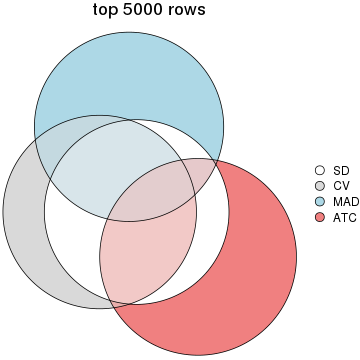
Also visualize the correspondance of rankings between different top-row methods:
top_rows_overlap(res_list, top_n = 1000, method = "correspondance")
top_rows_overlap(res_list, top_n = 2000, method = "correspondance")
top_rows_overlap(res_list, top_n = 3000, method = "correspondance")
top_rows_overlap(res_list, top_n = 4000, method = "correspondance")
top_rows_overlap(res_list, top_n = 5000, method = "correspondance")

Heatmaps of the top rows:
top_rows_heatmap(res_list, top_n = 1000)
top_rows_heatmap(res_list, top_n = 2000)
top_rows_heatmap(res_list, top_n = 3000)
top_rows_heatmap(res_list, top_n = 4000)
top_rows_heatmap(res_list, top_n = 5000)
Test correlation between subgroups and known annotations. If the known annotation is numeric, one-way ANOVA test is applied, and if the known annotation is discrete, chi-squared contingency table test is applied.
test_to_known_factors(res_list, k = 2)
#> n cell.type(p) cell.line(p) other(p) k
#> SD:NMF 51 1.46e-11 9.31e-07 0.00589 2
#> CV:NMF 51 1.46e-11 9.31e-07 0.00589 2
#> MAD:NMF 48 6.02e-11 1.43e-06 0.00723 2
#> ATC:NMF 51 1.46e-11 9.31e-07 0.00589 2
#> SD:skmeans 51 1.46e-11 9.31e-07 0.00589 2
#> CV:skmeans 51 1.46e-11 9.31e-07 0.00589 2
#> MAD:skmeans 51 7.71e-09 9.31e-07 0.00223 2
#> ATC:skmeans 51 1.46e-11 9.31e-07 0.00589 2
#> SD:mclust 51 1.46e-11 9.31e-07 0.00589 2
#> CV:mclust 51 1.46e-11 9.31e-07 0.00589 2
#> MAD:mclust 51 1.46e-11 9.31e-07 0.00589 2
#> ATC:mclust 51 1.46e-11 9.31e-07 0.00589 2
#> SD:kmeans 51 1.46e-11 9.31e-07 0.00589 2
#> CV:kmeans 51 1.46e-11 9.31e-07 0.00589 2
#> MAD:kmeans 51 1.46e-11 9.31e-07 0.00589 2
#> ATC:kmeans 51 1.46e-11 9.31e-07 0.00589 2
#> SD:pam 51 1.46e-11 9.31e-07 0.00589 2
#> CV:pam 51 1.46e-11 9.31e-07 0.00589 2
#> MAD:pam 51 1.46e-11 9.31e-07 0.00589 2
#> ATC:pam 51 1.46e-11 9.31e-07 0.00589 2
#> SD:hclust 51 1.46e-11 9.31e-07 0.00589 2
#> CV:hclust 51 1.46e-11 9.31e-07 0.00589 2
#> MAD:hclust 51 1.46e-11 9.31e-07 0.00589 2
#> ATC:hclust 51 1.46e-11 9.31e-07 0.00589 2
test_to_known_factors(res_list, k = 3)
#> n cell.type(p) cell.line(p) other(p) k
#> SD:NMF 43 4.60e-10 6.55e-09 1.29e-05 3
#> CV:NMF 50 1.39e-11 8.89e-10 2.44e-04 3
#> MAD:NMF 50 1.39e-11 6.67e-10 1.12e-06 3
#> ATC:NMF 45 1.69e-10 8.37e-09 2.79e-06 3
#> SD:skmeans 51 8.42e-12 1.37e-11 1.03e-06 3
#> CV:skmeans 51 8.42e-12 1.37e-11 1.03e-06 3
#> MAD:skmeans 51 6.64e-09 3.77e-10 4.74e-07 3
#> ATC:skmeans 51 8.42e-12 1.37e-11 2.17e-07 3
#> SD:mclust 48 2.06e-09 1.43e-10 1.91e-06 3
#> CV:mclust 51 5.44e-10 1.37e-11 6.36e-06 3
#> MAD:mclust 51 8.42e-12 1.37e-11 1.03e-06 3
#> ATC:mclust 51 8.42e-12 4.61e-09 4.66e-06 3
#> SD:kmeans 45 1.69e-10 3.43e-10 1.16e-06 3
#> CV:kmeans 51 8.42e-12 1.37e-11 1.03e-06 3
#> MAD:kmeans 50 1.39e-11 6.67e-10 1.12e-06 3
#> ATC:kmeans 39 3.40e-09 8.56e-09 2.66e-04 3
#> SD:pam 51 8.42e-12 1.37e-11 3.29e-04 3
#> CV:pam 51 8.42e-12 1.37e-11 3.29e-04 3
#> MAD:pam 50 1.39e-11 1.89e-10 1.02e-06 3
#> ATC:pam 51 8.42e-12 1.37e-11 2.17e-07 3
#> SD:hclust 51 8.42e-12 1.37e-11 3.29e-04 3
#> CV:hclust 51 8.42e-12 1.37e-11 3.29e-04 3
#> MAD:hclust 45 1.69e-10 8.33e-09 7.28e-07 3
#> ATC:hclust 51 8.42e-12 1.37e-11 2.17e-07 3
test_to_known_factors(res_list, k = 4)
#> n cell.type(p) cell.line(p) other(p) k
#> SD:NMF 49 1.30e-10 2.33e-15 8.06e-08 4
#> CV:NMF 42 4.01e-09 8.59e-13 1.50e-05 4
#> MAD:NMF 46 5.67e-10 7.30e-14 8.69e-11 4
#> ATC:NMF 44 2.79e-10 5.86e-07 1.08e-04 4
#> SD:skmeans 48 2.13e-10 6.46e-12 1.83e-10 4
#> CV:skmeans 48 2.13e-10 7.40e-15 2.97e-11 4
#> MAD:skmeans 51 4.89e-11 6.96e-12 5.84e-10 4
#> ATC:skmeans 51 4.89e-11 2.26e-16 4.62e-11 4
#> SD:mclust 51 2.90e-09 2.26e-16 1.42e-09 4
#> CV:mclust 51 2.90e-09 2.26e-16 1.42e-09 4
#> MAD:mclust 51 4.89e-11 3.46e-13 3.99e-10 4
#> ATC:mclust 37 4.60e-08 3.16e-11 6.99e-06 4
#> SD:kmeans 45 9.25e-10 2.27e-13 1.65e-11 4
#> CV:kmeans 48 2.13e-10 8.08e-16 8.70e-10 4
#> MAD:kmeans 49 1.30e-10 5.62e-12 7.82e-10 4
#> ATC:kmeans 45 9.25e-10 1.13e-10 1.23e-09 4
#> SD:pam 51 4.89e-11 2.26e-16 8.17e-08 4
#> CV:pam 51 4.89e-11 2.26e-16 8.17e-08 4
#> MAD:pam 48 2.13e-10 9.62e-13 8.09e-10 4
#> ATC:pam 51 4.89e-11 2.26e-16 1.89e-08 4
#> SD:hclust 51 4.89e-11 2.26e-16 1.89e-08 4
#> CV:hclust 51 4.89e-11 2.26e-16 1.89e-08 4
#> MAD:hclust 45 9.25e-10 6.46e-13 6.72e-08 4
#> ATC:hclust 51 4.89e-11 2.26e-16 1.89e-08 4
test_to_known_factors(res_list, k = 5)
#> n cell.type(p) cell.line(p) other(p) k
#> SD:NMF 42 1.67e-08 2.21e-16 3.43e-11 5
#> CV:NMF 50 3.61e-10 1.86e-20 7.55e-12 5
#> MAD:NMF 48 9.44e-10 3.50e-16 1.08e-11 5
#> ATC:NMF 42 4.01e-09 6.41e-09 3.52e-08 5
#> SD:skmeans 48 9.44e-10 2.80e-14 1.72e-13 5
#> CV:skmeans 51 2.23e-10 6.99e-16 5.39e-13 5
#> MAD:skmeans 48 9.44e-10 1.36e-14 7.29e-13 5
#> ATC:skmeans 51 2.23e-10 6.99e-16 5.39e-13 5
#> SD:mclust 45 3.98e-09 2.28e-18 8.09e-11 5
#> CV:mclust 51 2.23e-10 3.95e-21 4.56e-12 5
#> MAD:mclust 45 3.98e-09 3.67e-14 2.17e-10 5
#> ATC:mclust 49 5.84e-10 4.07e-14 1.80e-08 5
#> SD:kmeans 45 9.25e-10 2.27e-13 1.65e-11 5
#> CV:kmeans 51 4.89e-11 2.26e-16 4.62e-11 5
#> MAD:kmeans 49 1.30e-10 5.62e-12 7.82e-10 5
#> ATC:kmeans 51 2.23e-10 1.51e-13 1.34e-09 5
#> SD:pam 51 2.23e-10 3.95e-21 4.56e-12 5
#> CV:pam 51 2.23e-10 3.95e-21 4.56e-12 5
#> MAD:pam 48 9.44e-10 5.17e-17 4.55e-11 5
#> ATC:pam 51 2.23e-10 3.95e-21 2.43e-10 5
#> SD:hclust 51 2.23e-10 3.95e-21 2.43e-10 5
#> CV:hclust 51 2.23e-10 3.95e-21 8.09e-12 5
#> MAD:hclust 51 2.23e-10 1.24e-16 5.19e-11 5
#> ATC:hclust 51 2.23e-10 3.95e-21 2.43e-10 5
test_to_known_factors(res_list, k = 6)
#> n cell.type(p) cell.line(p) other(p) k
#> SD:NMF 45 3.98e-09 2.28e-18 8.09e-11 6
#> CV:NMF 36 7.49e-08 1.21e-11 7.41e-06 6
#> MAD:NMF 41 2.69e-08 3.20e-12 1.25e-09 6
#> ATC:NMF 47 3.48e-10 1.21e-11 1.38e-09 6
#> SD:skmeans 48 9.44e-10 2.80e-14 1.72e-13 6
#> CV:skmeans 48 3.55e-09 5.83e-20 6.46e-15 6
#> MAD:skmeans 40 1.49e-07 4.75e-14 6.38e-11 6
#> ATC:skmeans 51 8.65e-10 2.88e-16 1.93e-12 6
#> SD:mclust 48 3.55e-09 4.10e-20 3.79e-12 6
#> CV:mclust 51 8.65e-10 2.41e-22 1.91e-11 6
#> MAD:mclust 48 3.55e-09 5.89e-17 3.79e-12 6
#> ATC:mclust 48 3.55e-09 3.42e-20 3.32e-12 6
#> SD:kmeans 45 3.98e-09 3.76e-17 3.04e-14 6
#> CV:kmeans 34 7.45e-07 1.56e-13 1.60e-08 6
#> MAD:kmeans 44 6.42e-09 1.74e-11 5.32e-11 6
#> ATC:kmeans 48 3.55e-09 3.68e-19 5.53e-11 6
#> SD:pam 51 8.65e-10 7.10e-26 1.98e-15 6
#> CV:pam 51 8.65e-10 7.10e-26 1.98e-15 6
#> MAD:pam 43 3.70e-08 6.65e-19 1.87e-11 6
#> ATC:pam 51 8.65e-10 7.10e-26 6.30e-14 6
#> SD:hclust 51 8.65e-10 7.10e-26 3.43e-13 6
#> CV:hclust 51 8.65e-10 7.10e-26 3.43e-13 6
#> MAD:hclust 51 8.65e-10 2.54e-19 7.24e-14 6
#> ATC:hclust 51 8.65e-10 2.84e-21 6.17e-12 6
The object with results only for a single top-value method and a single partition method can be extracted as:
res = res_list["SD", "hclust"]
# you can also extract it by
# res = res_list["SD:hclust"]
A summary of res and all the functions that can be applied to it:
res
#> A 'ConsensusPartition' object with k = 2, 3, 4, 5, 6.
#> On a matrix with 42764 rows and 51 columns.
#> Top rows (1000, 2000, 3000, 4000, 5000) are extracted by 'SD' method.
#> Subgroups are detected by 'hclust' method.
#> Performed in total 1250 partitions by row resampling.
#> Best k for subgroups seems to be 4.
#>
#> Following methods can be applied to this 'ConsensusPartition' object:
#> [1] "cola_report" "collect_classes" "collect_plots"
#> [4] "collect_stats" "colnames" "compare_signatures"
#> [7] "consensus_heatmap" "dimension_reduction" "functional_enrichment"
#> [10] "get_anno_col" "get_anno" "get_classes"
#> [13] "get_consensus" "get_matrix" "get_membership"
#> [16] "get_param" "get_signatures" "get_stats"
#> [19] "is_best_k" "is_stable_k" "membership_heatmap"
#> [22] "ncol" "nrow" "plot_ecdf"
#> [25] "rownames" "select_partition_number" "show"
#> [28] "suggest_best_k" "test_to_known_factors"
collect_plots() function collects all the plots made from res for all k (number of partitions)
into one single page to provide an easy and fast comparison between different k.
collect_plots(res)
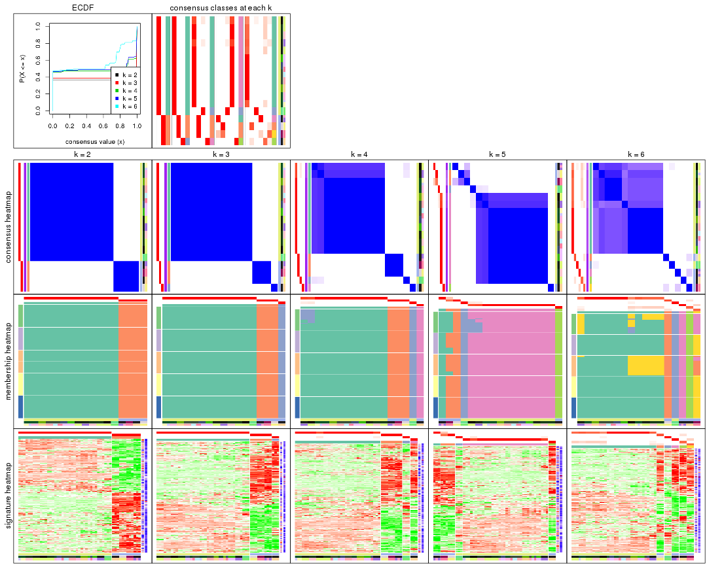
The plots are:
k and the heatmap of
predicted classes for each k.k.k.k.All the plots in panels can be made by individual functions and they are plotted later in this section.
select_partition_number() produces several plots showing different
statistics for choosing “optimized” k. There are following statistics:
k;k, the area increased is defined as \(A_k - A_{k-1}\).The detailed explanations of these statistics can be found in the cola vignette.
Generally speaking, lower PAC score, higher mean silhouette score or higher
concordance corresponds to better partition. Rand index and Jaccard index
measure how similar the current partition is compared to partition with k-1.
If they are too similar, we won't accept k is better than k-1.
select_partition_number(res)
The numeric values for all these statistics can be obtained by get_stats().
get_stats(res)
#> k 1-PAC mean_silhouette concordance area_increased Rand Jaccard
#> 2 2 1.000 1.000 1.000 0.3677 0.633 0.633
#> 3 3 1.000 1.000 1.000 0.0575 0.979 0.967
#> 4 4 0.912 0.975 0.986 0.2559 0.915 0.862
#> 5 5 0.824 0.948 0.969 0.0289 0.986 0.973
#> 6 6 0.713 0.886 0.887 0.1399 0.993 0.986
suggest_best_k() suggests the best \(k\) based on these statistics. The rules are as follows:
NA.suggest_best_k(res)
#> [1] 4
#> attr(,"optional")
#> [1] 2
There is also optional best \(k\) = 2 that is worth to check.
Following shows the table of the partitions (You need to click the show/hide
code output link to see it). The membership matrix (columns with name p*)
is inferred by
clue::cl_consensus()
function with the SE method. Basically the value in the membership matrix
represents the probability to belong to a certain group. The finall class
label for an item is determined with the group with highest probability it
belongs to.
In get_classes() function, the entropy is calculated from the membership
matrix and the silhouette score is calculated from the consensus matrix.
cbind(get_classes(res, k = 2), get_membership(res, k = 2))
#> class entropy silhouette p1 p2
#> GSM520665 2 0 1 0 1
#> GSM520666 2 0 1 0 1
#> GSM520667 2 0 1 0 1
#> GSM520704 2 0 1 0 1
#> GSM520705 2 0 1 0 1
#> GSM520711 2 0 1 0 1
#> GSM520692 2 0 1 0 1
#> GSM520693 2 0 1 0 1
#> GSM520694 2 0 1 0 1
#> GSM520689 2 0 1 0 1
#> GSM520690 2 0 1 0 1
#> GSM520691 2 0 1 0 1
#> GSM520668 1 0 1 1 0
#> GSM520669 1 0 1 1 0
#> GSM520670 1 0 1 1 0
#> GSM520713 1 0 1 1 0
#> GSM520714 1 0 1 1 0
#> GSM520715 1 0 1 1 0
#> GSM520695 1 0 1 1 0
#> GSM520696 1 0 1 1 0
#> GSM520697 1 0 1 1 0
#> GSM520709 1 0 1 1 0
#> GSM520710 1 0 1 1 0
#> GSM520712 1 0 1 1 0
#> GSM520698 1 0 1 1 0
#> GSM520699 1 0 1 1 0
#> GSM520700 1 0 1 1 0
#> GSM520701 1 0 1 1 0
#> GSM520702 1 0 1 1 0
#> GSM520703 1 0 1 1 0
#> GSM520671 1 0 1 1 0
#> GSM520672 1 0 1 1 0
#> GSM520673 1 0 1 1 0
#> GSM520681 1 0 1 1 0
#> GSM520682 1 0 1 1 0
#> GSM520680 1 0 1 1 0
#> GSM520677 1 0 1 1 0
#> GSM520678 1 0 1 1 0
#> GSM520679 1 0 1 1 0
#> GSM520674 1 0 1 1 0
#> GSM520675 1 0 1 1 0
#> GSM520676 1 0 1 1 0
#> GSM520686 1 0 1 1 0
#> GSM520687 1 0 1 1 0
#> GSM520688 1 0 1 1 0
#> GSM520683 1 0 1 1 0
#> GSM520684 1 0 1 1 0
#> GSM520685 1 0 1 1 0
#> GSM520708 1 0 1 1 0
#> GSM520706 1 0 1 1 0
#> GSM520707 1 0 1 1 0
cbind(get_classes(res, k = 3), get_membership(res, k = 3))
#> class entropy silhouette p1 p2 p3
#> GSM520665 2 0 1 0 1 0
#> GSM520666 2 0 1 0 1 0
#> GSM520667 2 0 1 0 1 0
#> GSM520704 3 0 1 0 0 1
#> GSM520705 3 0 1 0 0 1
#> GSM520711 3 0 1 0 0 1
#> GSM520692 2 0 1 0 1 0
#> GSM520693 2 0 1 0 1 0
#> GSM520694 2 0 1 0 1 0
#> GSM520689 2 0 1 0 1 0
#> GSM520690 2 0 1 0 1 0
#> GSM520691 2 0 1 0 1 0
#> GSM520668 1 0 1 1 0 0
#> GSM520669 1 0 1 1 0 0
#> GSM520670 1 0 1 1 0 0
#> GSM520713 1 0 1 1 0 0
#> GSM520714 1 0 1 1 0 0
#> GSM520715 1 0 1 1 0 0
#> GSM520695 1 0 1 1 0 0
#> GSM520696 1 0 1 1 0 0
#> GSM520697 1 0 1 1 0 0
#> GSM520709 1 0 1 1 0 0
#> GSM520710 1 0 1 1 0 0
#> GSM520712 1 0 1 1 0 0
#> GSM520698 1 0 1 1 0 0
#> GSM520699 1 0 1 1 0 0
#> GSM520700 1 0 1 1 0 0
#> GSM520701 1 0 1 1 0 0
#> GSM520702 1 0 1 1 0 0
#> GSM520703 1 0 1 1 0 0
#> GSM520671 1 0 1 1 0 0
#> GSM520672 1 0 1 1 0 0
#> GSM520673 1 0 1 1 0 0
#> GSM520681 1 0 1 1 0 0
#> GSM520682 1 0 1 1 0 0
#> GSM520680 1 0 1 1 0 0
#> GSM520677 1 0 1 1 0 0
#> GSM520678 1 0 1 1 0 0
#> GSM520679 1 0 1 1 0 0
#> GSM520674 1 0 1 1 0 0
#> GSM520675 1 0 1 1 0 0
#> GSM520676 1 0 1 1 0 0
#> GSM520686 1 0 1 1 0 0
#> GSM520687 1 0 1 1 0 0
#> GSM520688 1 0 1 1 0 0
#> GSM520683 1 0 1 1 0 0
#> GSM520684 1 0 1 1 0 0
#> GSM520685 1 0 1 1 0 0
#> GSM520708 1 0 1 1 0 0
#> GSM520706 1 0 1 1 0 0
#> GSM520707 1 0 1 1 0 0
cbind(get_classes(res, k = 4), get_membership(res, k = 4))
#> class entropy silhouette p1 p2 p3 p4
#> GSM520665 2 0.000 1.000 0.000 1 0.000 0
#> GSM520666 2 0.000 1.000 0.000 1 0.000 0
#> GSM520667 2 0.000 1.000 0.000 1 0.000 0
#> GSM520704 4 0.000 1.000 0.000 0 0.000 1
#> GSM520705 4 0.000 1.000 0.000 0 0.000 1
#> GSM520711 4 0.000 1.000 0.000 0 0.000 1
#> GSM520692 2 0.000 1.000 0.000 1 0.000 0
#> GSM520693 2 0.000 1.000 0.000 1 0.000 0
#> GSM520694 2 0.000 1.000 0.000 1 0.000 0
#> GSM520689 2 0.000 1.000 0.000 1 0.000 0
#> GSM520690 2 0.000 1.000 0.000 1 0.000 0
#> GSM520691 2 0.000 1.000 0.000 1 0.000 0
#> GSM520668 3 0.000 1.000 0.000 0 1.000 0
#> GSM520669 3 0.000 1.000 0.000 0 1.000 0
#> GSM520670 3 0.000 1.000 0.000 0 1.000 0
#> GSM520713 1 0.276 0.875 0.872 0 0.128 0
#> GSM520714 1 0.276 0.875 0.872 0 0.128 0
#> GSM520715 1 0.276 0.875 0.872 0 0.128 0
#> GSM520695 1 0.000 0.980 1.000 0 0.000 0
#> GSM520696 1 0.000 0.980 1.000 0 0.000 0
#> GSM520697 1 0.000 0.980 1.000 0 0.000 0
#> GSM520709 1 0.000 0.980 1.000 0 0.000 0
#> GSM520710 1 0.000 0.980 1.000 0 0.000 0
#> GSM520712 1 0.000 0.980 1.000 0 0.000 0
#> GSM520698 1 0.241 0.898 0.896 0 0.104 0
#> GSM520699 1 0.241 0.898 0.896 0 0.104 0
#> GSM520700 1 0.241 0.898 0.896 0 0.104 0
#> GSM520701 1 0.000 0.980 1.000 0 0.000 0
#> GSM520702 1 0.000 0.980 1.000 0 0.000 0
#> GSM520703 1 0.000 0.980 1.000 0 0.000 0
#> GSM520671 1 0.000 0.980 1.000 0 0.000 0
#> GSM520672 1 0.000 0.980 1.000 0 0.000 0
#> GSM520673 1 0.000 0.980 1.000 0 0.000 0
#> GSM520681 1 0.000 0.980 1.000 0 0.000 0
#> GSM520682 1 0.000 0.980 1.000 0 0.000 0
#> GSM520680 1 0.000 0.980 1.000 0 0.000 0
#> GSM520677 1 0.000 0.980 1.000 0 0.000 0
#> GSM520678 1 0.000 0.980 1.000 0 0.000 0
#> GSM520679 1 0.000 0.980 1.000 0 0.000 0
#> GSM520674 1 0.000 0.980 1.000 0 0.000 0
#> GSM520675 1 0.000 0.980 1.000 0 0.000 0
#> GSM520676 1 0.000 0.980 1.000 0 0.000 0
#> GSM520686 1 0.000 0.980 1.000 0 0.000 0
#> GSM520687 1 0.000 0.980 1.000 0 0.000 0
#> GSM520688 1 0.000 0.980 1.000 0 0.000 0
#> GSM520683 1 0.000 0.980 1.000 0 0.000 0
#> GSM520684 1 0.000 0.980 1.000 0 0.000 0
#> GSM520685 1 0.000 0.980 1.000 0 0.000 0
#> GSM520708 1 0.000 0.980 1.000 0 0.000 0
#> GSM520706 1 0.000 0.980 1.000 0 0.000 0
#> GSM520707 1 0.000 0.980 1.000 0 0.000 0
cbind(get_classes(res, k = 5), get_membership(res, k = 5))
#> class entropy silhouette p1 p2 p3 p4 p5
#> GSM520665 2 0.000 0.791 0.000 1.000 0.000 0.000 0
#> GSM520666 2 0.000 0.791 0.000 1.000 0.000 0.000 0
#> GSM520667 2 0.000 0.791 0.000 1.000 0.000 0.000 0
#> GSM520704 5 0.000 1.000 0.000 0.000 0.000 0.000 1
#> GSM520705 5 0.000 1.000 0.000 0.000 0.000 0.000 1
#> GSM520711 5 0.000 1.000 0.000 0.000 0.000 0.000 1
#> GSM520692 2 0.377 0.748 0.296 0.704 0.000 0.000 0
#> GSM520693 2 0.377 0.748 0.296 0.704 0.000 0.000 0
#> GSM520694 2 0.377 0.748 0.296 0.704 0.000 0.000 0
#> GSM520689 1 0.000 1.000 1.000 0.000 0.000 0.000 0
#> GSM520690 1 0.000 1.000 1.000 0.000 0.000 0.000 0
#> GSM520691 1 0.000 1.000 1.000 0.000 0.000 0.000 0
#> GSM520668 3 0.000 1.000 0.000 0.000 1.000 0.000 0
#> GSM520669 3 0.000 1.000 0.000 0.000 1.000 0.000 0
#> GSM520670 3 0.000 1.000 0.000 0.000 1.000 0.000 0
#> GSM520713 4 0.238 0.875 0.000 0.000 0.128 0.872 0
#> GSM520714 4 0.238 0.875 0.000 0.000 0.128 0.872 0
#> GSM520715 4 0.238 0.875 0.000 0.000 0.128 0.872 0
#> GSM520695 4 0.000 0.980 0.000 0.000 0.000 1.000 0
#> GSM520696 4 0.000 0.980 0.000 0.000 0.000 1.000 0
#> GSM520697 4 0.000 0.980 0.000 0.000 0.000 1.000 0
#> GSM520709 4 0.000 0.980 0.000 0.000 0.000 1.000 0
#> GSM520710 4 0.000 0.980 0.000 0.000 0.000 1.000 0
#> GSM520712 4 0.000 0.980 0.000 0.000 0.000 1.000 0
#> GSM520698 4 0.207 0.898 0.000 0.000 0.104 0.896 0
#> GSM520699 4 0.207 0.898 0.000 0.000 0.104 0.896 0
#> GSM520700 4 0.207 0.898 0.000 0.000 0.104 0.896 0
#> GSM520701 4 0.000 0.980 0.000 0.000 0.000 1.000 0
#> GSM520702 4 0.000 0.980 0.000 0.000 0.000 1.000 0
#> GSM520703 4 0.000 0.980 0.000 0.000 0.000 1.000 0
#> GSM520671 4 0.000 0.980 0.000 0.000 0.000 1.000 0
#> GSM520672 4 0.000 0.980 0.000 0.000 0.000 1.000 0
#> GSM520673 4 0.000 0.980 0.000 0.000 0.000 1.000 0
#> GSM520681 4 0.000 0.980 0.000 0.000 0.000 1.000 0
#> GSM520682 4 0.000 0.980 0.000 0.000 0.000 1.000 0
#> GSM520680 4 0.000 0.980 0.000 0.000 0.000 1.000 0
#> GSM520677 4 0.000 0.980 0.000 0.000 0.000 1.000 0
#> GSM520678 4 0.000 0.980 0.000 0.000 0.000 1.000 0
#> GSM520679 4 0.000 0.980 0.000 0.000 0.000 1.000 0
#> GSM520674 4 0.000 0.980 0.000 0.000 0.000 1.000 0
#> GSM520675 4 0.000 0.980 0.000 0.000 0.000 1.000 0
#> GSM520676 4 0.000 0.980 0.000 0.000 0.000 1.000 0
#> GSM520686 4 0.000 0.980 0.000 0.000 0.000 1.000 0
#> GSM520687 4 0.000 0.980 0.000 0.000 0.000 1.000 0
#> GSM520688 4 0.000 0.980 0.000 0.000 0.000 1.000 0
#> GSM520683 4 0.000 0.980 0.000 0.000 0.000 1.000 0
#> GSM520684 4 0.000 0.980 0.000 0.000 0.000 1.000 0
#> GSM520685 4 0.000 0.980 0.000 0.000 0.000 1.000 0
#> GSM520708 4 0.000 0.980 0.000 0.000 0.000 1.000 0
#> GSM520706 4 0.000 0.980 0.000 0.000 0.000 1.000 0
#> GSM520707 4 0.000 0.980 0.000 0.000 0.000 1.000 0
cbind(get_classes(res, k = 6), get_membership(res, k = 6))
#> class entropy silhouette p1 p2 p3 p4 p5 p6
#> GSM520665 2 0.242 1.000 0.000 0.844 0.000 0.000 0.000 0.156
#> GSM520666 2 0.242 1.000 0.000 0.844 0.000 0.000 0.000 0.156
#> GSM520667 2 0.242 1.000 0.000 0.844 0.000 0.000 0.000 0.156
#> GSM520704 5 0.404 1.000 0.000 0.156 0.000 0.000 0.752 0.092
#> GSM520705 5 0.404 1.000 0.000 0.156 0.000 0.000 0.752 0.092
#> GSM520711 5 0.404 1.000 0.000 0.156 0.000 0.000 0.752 0.092
#> GSM520692 6 0.305 1.000 0.000 0.000 0.000 0.236 0.000 0.764
#> GSM520693 6 0.305 1.000 0.000 0.000 0.000 0.236 0.000 0.764
#> GSM520694 6 0.305 1.000 0.000 0.000 0.000 0.236 0.000 0.764
#> GSM520689 4 0.000 1.000 0.000 0.000 0.000 1.000 0.000 0.000
#> GSM520690 4 0.000 1.000 0.000 0.000 0.000 1.000 0.000 0.000
#> GSM520691 4 0.000 1.000 0.000 0.000 0.000 1.000 0.000 0.000
#> GSM520668 3 0.000 1.000 0.000 0.000 1.000 0.000 0.000 0.000
#> GSM520669 3 0.000 1.000 0.000 0.000 1.000 0.000 0.000 0.000
#> GSM520670 3 0.000 1.000 0.000 0.000 1.000 0.000 0.000 0.000
#> GSM520713 1 0.567 0.724 0.620 0.000 0.072 0.000 0.236 0.072
#> GSM520714 1 0.567 0.724 0.620 0.000 0.072 0.000 0.236 0.072
#> GSM520715 1 0.567 0.724 0.620 0.000 0.072 0.000 0.236 0.072
#> GSM520695 1 0.313 0.826 0.752 0.000 0.000 0.000 0.248 0.000
#> GSM520696 1 0.313 0.826 0.752 0.000 0.000 0.000 0.248 0.000
#> GSM520697 1 0.313 0.826 0.752 0.000 0.000 0.000 0.248 0.000
#> GSM520709 1 0.313 0.826 0.752 0.000 0.000 0.000 0.248 0.000
#> GSM520710 1 0.313 0.826 0.752 0.000 0.000 0.000 0.248 0.000
#> GSM520712 1 0.313 0.826 0.752 0.000 0.000 0.000 0.248 0.000
#> GSM520698 1 0.363 0.777 0.788 0.000 0.000 0.000 0.068 0.144
#> GSM520699 1 0.363 0.777 0.788 0.000 0.000 0.000 0.068 0.144
#> GSM520700 1 0.363 0.777 0.788 0.000 0.000 0.000 0.068 0.144
#> GSM520701 1 0.313 0.826 0.752 0.000 0.000 0.000 0.248 0.000
#> GSM520702 1 0.313 0.826 0.752 0.000 0.000 0.000 0.248 0.000
#> GSM520703 1 0.313 0.826 0.752 0.000 0.000 0.000 0.248 0.000
#> GSM520671 1 0.000 0.874 1.000 0.000 0.000 0.000 0.000 0.000
#> GSM520672 1 0.000 0.874 1.000 0.000 0.000 0.000 0.000 0.000
#> GSM520673 1 0.000 0.874 1.000 0.000 0.000 0.000 0.000 0.000
#> GSM520681 1 0.000 0.874 1.000 0.000 0.000 0.000 0.000 0.000
#> GSM520682 1 0.000 0.874 1.000 0.000 0.000 0.000 0.000 0.000
#> GSM520680 1 0.000 0.874 1.000 0.000 0.000 0.000 0.000 0.000
#> GSM520677 1 0.000 0.874 1.000 0.000 0.000 0.000 0.000 0.000
#> GSM520678 1 0.000 0.874 1.000 0.000 0.000 0.000 0.000 0.000
#> GSM520679 1 0.000 0.874 1.000 0.000 0.000 0.000 0.000 0.000
#> GSM520674 1 0.000 0.874 1.000 0.000 0.000 0.000 0.000 0.000
#> GSM520675 1 0.000 0.874 1.000 0.000 0.000 0.000 0.000 0.000
#> GSM520676 1 0.000 0.874 1.000 0.000 0.000 0.000 0.000 0.000
#> GSM520686 1 0.000 0.874 1.000 0.000 0.000 0.000 0.000 0.000
#> GSM520687 1 0.000 0.874 1.000 0.000 0.000 0.000 0.000 0.000
#> GSM520688 1 0.000 0.874 1.000 0.000 0.000 0.000 0.000 0.000
#> GSM520683 1 0.000 0.874 1.000 0.000 0.000 0.000 0.000 0.000
#> GSM520684 1 0.000 0.874 1.000 0.000 0.000 0.000 0.000 0.000
#> GSM520685 1 0.000 0.874 1.000 0.000 0.000 0.000 0.000 0.000
#> GSM520708 1 0.273 0.839 0.808 0.000 0.000 0.000 0.192 0.000
#> GSM520706 1 0.273 0.839 0.808 0.000 0.000 0.000 0.192 0.000
#> GSM520707 1 0.273 0.839 0.808 0.000 0.000 0.000 0.192 0.000
Heatmaps for the consensus matrix. It visualizes the probability of two samples to be in a same group.
consensus_heatmap(res, k = 2)

consensus_heatmap(res, k = 3)

consensus_heatmap(res, k = 4)
consensus_heatmap(res, k = 5)
consensus_heatmap(res, k = 6)
Heatmaps for the membership of samples in all partitions to see how consistent they are:
membership_heatmap(res, k = 2)

membership_heatmap(res, k = 3)

membership_heatmap(res, k = 4)
membership_heatmap(res, k = 5)
membership_heatmap(res, k = 6)
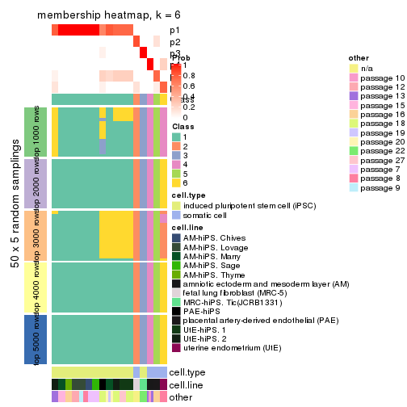
As soon as we have had the classes for columns, we can look for signatures which are significantly different between classes which can be candidate marks for certain classes. Following are the heatmaps for signatures.
Signature heatmaps where rows are scaled:
get_signatures(res, k = 2)

get_signatures(res, k = 3)

get_signatures(res, k = 4)
get_signatures(res, k = 5)

get_signatures(res, k = 6)
Signature heatmaps where rows are not scaled:
get_signatures(res, k = 2, scale_rows = FALSE)

get_signatures(res, k = 3, scale_rows = FALSE)
get_signatures(res, k = 4, scale_rows = FALSE)
get_signatures(res, k = 5, scale_rows = FALSE)
get_signatures(res, k = 6, scale_rows = FALSE)
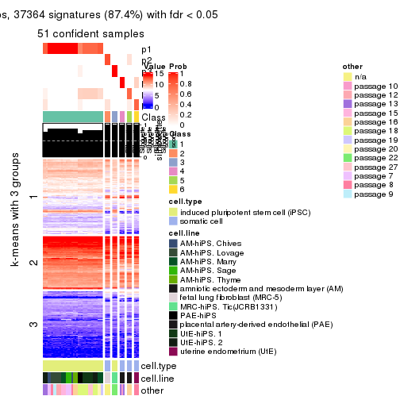
Compare the overlap of signatures from different k:
compare_signatures(res)
get_signature() returns a data frame invisibly. TO get the list of signatures, the function
call should be assigned to a variable explicitly. In following code, if plot argument is set
to FALSE, no heatmap is plotted while only the differential analysis is performed.
# code only for demonstration
tb = get_signature(res, k = ..., plot = FALSE)
An example of the output of tb is:
#> which_row fdr mean_1 mean_2 scaled_mean_1 scaled_mean_2 km
#> 1 38 0.042760348 8.373488 9.131774 -0.5533452 0.5164555 1
#> 2 40 0.018707592 7.106213 8.469186 -0.6173731 0.5762149 1
#> 3 55 0.019134737 10.221463 11.207825 -0.6159697 0.5749050 1
#> 4 59 0.006059896 5.921854 7.869574 -0.6899429 0.6439467 1
#> 5 60 0.018055526 8.928898 10.211722 -0.6204761 0.5791110 1
#> 6 98 0.009384629 15.714769 14.887706 0.6635654 -0.6193277 2
...
The columns in tb are:
which_row: row indices corresponding to the input matrix.fdr: FDR for the differential test. mean_x: The mean value in group x.scaled_mean_x: The mean value in group x after rows are scaled.km: Row groups if k-means clustering is applied to rows.UMAP plot which shows how samples are separated.
dimension_reduction(res, k = 2, method = "UMAP")
dimension_reduction(res, k = 3, method = "UMAP")
dimension_reduction(res, k = 4, method = "UMAP")
dimension_reduction(res, k = 5, method = "UMAP")
dimension_reduction(res, k = 6, method = "UMAP")
Following heatmap shows how subgroups are split when increasing k:
collect_classes(res)
Test correlation between subgroups and known annotations. If the known annotation is numeric, one-way ANOVA test is applied, and if the known annotation is discrete, chi-squared contingency table test is applied.
test_to_known_factors(res)
#> n cell.type(p) cell.line(p) other(p) k
#> SD:hclust 51 1.46e-11 9.31e-07 5.89e-03 2
#> SD:hclust 51 8.42e-12 1.37e-11 3.29e-04 3
#> SD:hclust 51 4.89e-11 2.26e-16 1.89e-08 4
#> SD:hclust 51 2.23e-10 3.95e-21 2.43e-10 5
#> SD:hclust 51 8.65e-10 7.10e-26 3.43e-13 6
If matrix rows can be associated to genes, consider to use GO_Enrichment(res,
...) to perform function enrichment for the signature genes.
The object with results only for a single top-value method and a single partition method can be extracted as:
res = res_list["SD", "kmeans"]
# you can also extract it by
# res = res_list["SD:kmeans"]
A summary of res and all the functions that can be applied to it:
res
#> A 'ConsensusPartition' object with k = 2, 3, 4, 5, 6.
#> On a matrix with 42764 rows and 51 columns.
#> Top rows (1000, 2000, 3000, 4000, 5000) are extracted by 'SD' method.
#> Subgroups are detected by 'kmeans' method.
#> Performed in total 1250 partitions by row resampling.
#> Best k for subgroups seems to be 2.
#>
#> Following methods can be applied to this 'ConsensusPartition' object:
#> [1] "cola_report" "collect_classes" "collect_plots"
#> [4] "collect_stats" "colnames" "compare_signatures"
#> [7] "consensus_heatmap" "dimension_reduction" "functional_enrichment"
#> [10] "get_anno_col" "get_anno" "get_classes"
#> [13] "get_consensus" "get_matrix" "get_membership"
#> [16] "get_param" "get_signatures" "get_stats"
#> [19] "is_best_k" "is_stable_k" "membership_heatmap"
#> [22] "ncol" "nrow" "plot_ecdf"
#> [25] "rownames" "select_partition_number" "show"
#> [28] "suggest_best_k" "test_to_known_factors"
collect_plots() function collects all the plots made from res for all k (number of partitions)
into one single page to provide an easy and fast comparison between different k.
collect_plots(res)
The plots are:
k and the heatmap of
predicted classes for each k.k.k.k.All the plots in panels can be made by individual functions and they are plotted later in this section.
select_partition_number() produces several plots showing different
statistics for choosing “optimized” k. There are following statistics:
k;k, the area increased is defined as \(A_k - A_{k-1}\).The detailed explanations of these statistics can be found in the cola vignette.
Generally speaking, lower PAC score, higher mean silhouette score or higher
concordance corresponds to better partition. Rand index and Jaccard index
measure how similar the current partition is compared to partition with k-1.
If they are too similar, we won't accept k is better than k-1.
select_partition_number(res)
The numeric values for all these statistics can be obtained by get_stats().
get_stats(res)
#> k 1-PAC mean_silhouette concordance area_increased Rand Jaccard
#> 2 2 1.000 1.000 1.000 0.3677 0.633 0.633
#> 3 3 0.601 0.819 0.845 0.6038 0.704 0.532
#> 4 4 0.596 0.791 0.836 0.1568 0.965 0.895
#> 5 5 0.746 0.750 0.802 0.0990 1.000 1.000
#> 6 6 0.703 0.672 0.752 0.0481 0.958 0.859
suggest_best_k() suggests the best \(k\) based on these statistics. The rules are as follows:
NA.suggest_best_k(res)
#> [1] 2
Following shows the table of the partitions (You need to click the show/hide
code output link to see it). The membership matrix (columns with name p*)
is inferred by
clue::cl_consensus()
function with the SE method. Basically the value in the membership matrix
represents the probability to belong to a certain group. The finall class
label for an item is determined with the group with highest probability it
belongs to.
In get_classes() function, the entropy is calculated from the membership
matrix and the silhouette score is calculated from the consensus matrix.
cbind(get_classes(res, k = 2), get_membership(res, k = 2))
#> class entropy silhouette p1 p2
#> GSM520665 2 0 1 0 1
#> GSM520666 2 0 1 0 1
#> GSM520667 2 0 1 0 1
#> GSM520704 2 0 1 0 1
#> GSM520705 2 0 1 0 1
#> GSM520711 2 0 1 0 1
#> GSM520692 2 0 1 0 1
#> GSM520693 2 0 1 0 1
#> GSM520694 2 0 1 0 1
#> GSM520689 2 0 1 0 1
#> GSM520690 2 0 1 0 1
#> GSM520691 2 0 1 0 1
#> GSM520668 1 0 1 1 0
#> GSM520669 1 0 1 1 0
#> GSM520670 1 0 1 1 0
#> GSM520713 1 0 1 1 0
#> GSM520714 1 0 1 1 0
#> GSM520715 1 0 1 1 0
#> GSM520695 1 0 1 1 0
#> GSM520696 1 0 1 1 0
#> GSM520697 1 0 1 1 0
#> GSM520709 1 0 1 1 0
#> GSM520710 1 0 1 1 0
#> GSM520712 1 0 1 1 0
#> GSM520698 1 0 1 1 0
#> GSM520699 1 0 1 1 0
#> GSM520700 1 0 1 1 0
#> GSM520701 1 0 1 1 0
#> GSM520702 1 0 1 1 0
#> GSM520703 1 0 1 1 0
#> GSM520671 1 0 1 1 0
#> GSM520672 1 0 1 1 0
#> GSM520673 1 0 1 1 0
#> GSM520681 1 0 1 1 0
#> GSM520682 1 0 1 1 0
#> GSM520680 1 0 1 1 0
#> GSM520677 1 0 1 1 0
#> GSM520678 1 0 1 1 0
#> GSM520679 1 0 1 1 0
#> GSM520674 1 0 1 1 0
#> GSM520675 1 0 1 1 0
#> GSM520676 1 0 1 1 0
#> GSM520686 1 0 1 1 0
#> GSM520687 1 0 1 1 0
#> GSM520688 1 0 1 1 0
#> GSM520683 1 0 1 1 0
#> GSM520684 1 0 1 1 0
#> GSM520685 1 0 1 1 0
#> GSM520708 1 0 1 1 0
#> GSM520706 1 0 1 1 0
#> GSM520707 1 0 1 1 0
cbind(get_classes(res, k = 3), get_membership(res, k = 3))
#> class entropy silhouette p1 p2 p3
#> GSM520665 2 0.0747 0.975 0.000 0.984 0.016
#> GSM520666 2 0.0747 0.975 0.000 0.984 0.016
#> GSM520667 2 0.0747 0.975 0.000 0.984 0.016
#> GSM520704 2 0.3267 0.937 0.000 0.884 0.116
#> GSM520705 2 0.3267 0.937 0.000 0.884 0.116
#> GSM520711 2 0.3267 0.937 0.000 0.884 0.116
#> GSM520692 2 0.0000 0.976 0.000 1.000 0.000
#> GSM520693 2 0.0000 0.976 0.000 1.000 0.000
#> GSM520694 2 0.0000 0.976 0.000 1.000 0.000
#> GSM520689 2 0.0237 0.976 0.000 0.996 0.004
#> GSM520690 2 0.0237 0.976 0.000 0.996 0.004
#> GSM520691 2 0.0237 0.976 0.000 0.996 0.004
#> GSM520668 3 0.5988 0.460 0.368 0.000 0.632
#> GSM520669 3 0.5988 0.460 0.368 0.000 0.632
#> GSM520670 3 0.5988 0.460 0.368 0.000 0.632
#> GSM520713 3 0.5178 0.741 0.256 0.000 0.744
#> GSM520714 3 0.5178 0.741 0.256 0.000 0.744
#> GSM520715 3 0.5178 0.741 0.256 0.000 0.744
#> GSM520695 3 0.6244 0.722 0.440 0.000 0.560
#> GSM520696 3 0.6244 0.722 0.440 0.000 0.560
#> GSM520697 3 0.6244 0.722 0.440 0.000 0.560
#> GSM520709 3 0.6260 0.712 0.448 0.000 0.552
#> GSM520710 3 0.6260 0.712 0.448 0.000 0.552
#> GSM520712 3 0.6260 0.712 0.448 0.000 0.552
#> GSM520698 3 0.4842 0.724 0.224 0.000 0.776
#> GSM520699 3 0.4842 0.724 0.224 0.000 0.776
#> GSM520700 3 0.4842 0.724 0.224 0.000 0.776
#> GSM520701 3 0.6252 0.723 0.444 0.000 0.556
#> GSM520702 3 0.6244 0.726 0.440 0.000 0.560
#> GSM520703 3 0.6244 0.726 0.440 0.000 0.560
#> GSM520671 1 0.0237 0.928 0.996 0.000 0.004
#> GSM520672 1 0.0237 0.928 0.996 0.000 0.004
#> GSM520673 1 0.0237 0.928 0.996 0.000 0.004
#> GSM520681 1 0.0000 0.928 1.000 0.000 0.000
#> GSM520682 1 0.0000 0.928 1.000 0.000 0.000
#> GSM520680 1 0.0237 0.928 0.996 0.000 0.004
#> GSM520677 1 0.0237 0.928 0.996 0.000 0.004
#> GSM520678 1 0.0237 0.928 0.996 0.000 0.004
#> GSM520679 1 0.0237 0.928 0.996 0.000 0.004
#> GSM520674 1 0.0237 0.928 0.996 0.000 0.004
#> GSM520675 1 0.0000 0.928 1.000 0.000 0.000
#> GSM520676 1 0.0237 0.928 0.996 0.000 0.004
#> GSM520686 1 0.0000 0.928 1.000 0.000 0.000
#> GSM520687 1 0.0000 0.928 1.000 0.000 0.000
#> GSM520688 1 0.0000 0.928 1.000 0.000 0.000
#> GSM520683 1 0.0424 0.921 0.992 0.000 0.008
#> GSM520684 1 0.0424 0.921 0.992 0.000 0.008
#> GSM520685 1 0.0424 0.921 0.992 0.000 0.008
#> GSM520708 1 0.5098 0.421 0.752 0.000 0.248
#> GSM520706 1 0.5098 0.421 0.752 0.000 0.248
#> GSM520707 1 0.5098 0.421 0.752 0.000 0.248
cbind(get_classes(res, k = 4), get_membership(res, k = 4))
#> class entropy silhouette p1 p2 p3 p4
#> GSM520665 2 0.2256 0.915 0.000 0.924 0.056 0.020
#> GSM520666 2 0.2256 0.915 0.000 0.924 0.056 0.020
#> GSM520667 2 0.2256 0.915 0.000 0.924 0.056 0.020
#> GSM520704 2 0.4399 0.843 0.000 0.768 0.212 0.020
#> GSM520705 2 0.4399 0.843 0.000 0.768 0.212 0.020
#> GSM520711 2 0.4464 0.843 0.000 0.768 0.208 0.024
#> GSM520692 2 0.0188 0.924 0.000 0.996 0.000 0.004
#> GSM520693 2 0.0188 0.924 0.000 0.996 0.000 0.004
#> GSM520694 2 0.0188 0.924 0.000 0.996 0.000 0.004
#> GSM520689 2 0.1520 0.918 0.000 0.956 0.020 0.024
#> GSM520690 2 0.1520 0.918 0.000 0.956 0.020 0.024
#> GSM520691 2 0.1520 0.918 0.000 0.956 0.020 0.024
#> GSM520668 3 0.6674 1.000 0.116 0.000 0.584 0.300
#> GSM520669 3 0.6674 1.000 0.116 0.000 0.584 0.300
#> GSM520670 3 0.6674 1.000 0.116 0.000 0.584 0.300
#> GSM520713 4 0.4547 0.703 0.104 0.000 0.092 0.804
#> GSM520714 4 0.4547 0.703 0.104 0.000 0.092 0.804
#> GSM520715 4 0.4547 0.703 0.104 0.000 0.092 0.804
#> GSM520695 4 0.3444 0.816 0.184 0.000 0.000 0.816
#> GSM520696 4 0.3444 0.816 0.184 0.000 0.000 0.816
#> GSM520697 4 0.3444 0.816 0.184 0.000 0.000 0.816
#> GSM520709 4 0.3444 0.816 0.184 0.000 0.000 0.816
#> GSM520710 4 0.3444 0.816 0.184 0.000 0.000 0.816
#> GSM520712 4 0.3444 0.816 0.184 0.000 0.000 0.816
#> GSM520698 4 0.6015 0.286 0.080 0.000 0.268 0.652
#> GSM520699 4 0.6015 0.286 0.080 0.000 0.268 0.652
#> GSM520700 4 0.6015 0.286 0.080 0.000 0.268 0.652
#> GSM520701 4 0.3402 0.814 0.164 0.000 0.004 0.832
#> GSM520702 4 0.3402 0.814 0.164 0.000 0.004 0.832
#> GSM520703 4 0.3402 0.814 0.164 0.000 0.004 0.832
#> GSM520671 1 0.0707 0.869 0.980 0.000 0.020 0.000
#> GSM520672 1 0.0707 0.869 0.980 0.000 0.020 0.000
#> GSM520673 1 0.0707 0.869 0.980 0.000 0.020 0.000
#> GSM520681 1 0.1406 0.867 0.960 0.000 0.024 0.016
#> GSM520682 1 0.1406 0.867 0.960 0.000 0.024 0.016
#> GSM520680 1 0.0657 0.869 0.984 0.000 0.012 0.004
#> GSM520677 1 0.2214 0.856 0.928 0.000 0.028 0.044
#> GSM520678 1 0.2214 0.856 0.928 0.000 0.028 0.044
#> GSM520679 1 0.2214 0.856 0.928 0.000 0.028 0.044
#> GSM520674 1 0.2214 0.856 0.928 0.000 0.028 0.044
#> GSM520675 1 0.2214 0.856 0.928 0.000 0.028 0.044
#> GSM520676 1 0.2214 0.856 0.928 0.000 0.028 0.044
#> GSM520686 1 0.1211 0.866 0.960 0.000 0.040 0.000
#> GSM520687 1 0.1211 0.866 0.960 0.000 0.040 0.000
#> GSM520688 1 0.1211 0.866 0.960 0.000 0.040 0.000
#> GSM520683 1 0.1940 0.847 0.924 0.000 0.076 0.000
#> GSM520684 1 0.2081 0.846 0.916 0.000 0.084 0.000
#> GSM520685 1 0.2081 0.846 0.916 0.000 0.084 0.000
#> GSM520708 1 0.6764 0.257 0.556 0.000 0.112 0.332
#> GSM520706 1 0.6764 0.257 0.556 0.000 0.112 0.332
#> GSM520707 1 0.6764 0.257 0.556 0.000 0.112 0.332
cbind(get_classes(res, k = 5), get_membership(res, k = 5))
#> class entropy silhouette p1 p2 p3 p4 p5
#> GSM520665 2 0.1617 0.906 0.000 0.948 0.020 0.012 NA
#> GSM520666 2 0.1617 0.906 0.000 0.948 0.020 0.012 NA
#> GSM520667 2 0.1617 0.906 0.000 0.948 0.020 0.012 NA
#> GSM520704 2 0.4029 0.809 0.000 0.744 0.024 0.000 NA
#> GSM520705 2 0.4029 0.809 0.000 0.744 0.024 0.000 NA
#> GSM520711 2 0.4083 0.810 0.000 0.744 0.028 0.000 NA
#> GSM520692 2 0.0162 0.909 0.000 0.996 0.000 0.004 NA
#> GSM520693 2 0.0162 0.909 0.000 0.996 0.000 0.004 NA
#> GSM520694 2 0.0162 0.909 0.000 0.996 0.000 0.004 NA
#> GSM520689 2 0.2400 0.890 0.000 0.912 0.020 0.020 NA
#> GSM520690 2 0.2400 0.890 0.000 0.912 0.020 0.020 NA
#> GSM520691 2 0.2400 0.890 0.000 0.912 0.020 0.020 NA
#> GSM520668 3 0.2248 0.998 0.012 0.000 0.900 0.088 NA
#> GSM520669 3 0.2248 0.998 0.012 0.000 0.900 0.088 NA
#> GSM520670 3 0.2532 0.995 0.012 0.000 0.892 0.088 NA
#> GSM520713 4 0.4385 0.722 0.032 0.000 0.112 0.796 NA
#> GSM520714 4 0.4385 0.722 0.032 0.000 0.112 0.796 NA
#> GSM520715 4 0.4385 0.722 0.032 0.000 0.112 0.796 NA
#> GSM520695 4 0.2504 0.801 0.064 0.000 0.000 0.896 NA
#> GSM520696 4 0.2504 0.801 0.064 0.000 0.000 0.896 NA
#> GSM520697 4 0.2504 0.801 0.064 0.000 0.000 0.896 NA
#> GSM520709 4 0.1809 0.803 0.060 0.000 0.000 0.928 NA
#> GSM520710 4 0.1809 0.803 0.060 0.000 0.000 0.928 NA
#> GSM520712 4 0.1809 0.803 0.060 0.000 0.000 0.928 NA
#> GSM520698 4 0.6640 0.275 0.028 0.000 0.352 0.500 NA
#> GSM520699 4 0.6640 0.275 0.028 0.000 0.352 0.500 NA
#> GSM520700 4 0.6640 0.275 0.028 0.000 0.352 0.500 NA
#> GSM520701 4 0.2962 0.794 0.048 0.000 0.000 0.868 NA
#> GSM520702 4 0.2962 0.794 0.048 0.000 0.000 0.868 NA
#> GSM520703 4 0.2962 0.794 0.048 0.000 0.000 0.868 NA
#> GSM520671 1 0.2825 0.766 0.860 0.000 0.016 0.000 NA
#> GSM520672 1 0.2825 0.766 0.860 0.000 0.016 0.000 NA
#> GSM520673 1 0.2825 0.766 0.860 0.000 0.016 0.000 NA
#> GSM520681 1 0.2964 0.777 0.856 0.000 0.000 0.024 NA
#> GSM520682 1 0.2964 0.777 0.856 0.000 0.000 0.024 NA
#> GSM520680 1 0.1757 0.775 0.936 0.000 0.012 0.004 NA
#> GSM520677 1 0.3357 0.758 0.852 0.000 0.008 0.048 NA
#> GSM520678 1 0.3357 0.758 0.852 0.000 0.008 0.048 NA
#> GSM520679 1 0.3357 0.758 0.852 0.000 0.008 0.048 NA
#> GSM520674 1 0.3357 0.758 0.852 0.000 0.008 0.048 NA
#> GSM520675 1 0.3412 0.759 0.848 0.000 0.008 0.048 NA
#> GSM520676 1 0.3357 0.758 0.852 0.000 0.008 0.048 NA
#> GSM520686 1 0.3318 0.766 0.800 0.000 0.008 0.000 NA
#> GSM520687 1 0.3318 0.766 0.800 0.000 0.008 0.000 NA
#> GSM520688 1 0.3318 0.766 0.800 0.000 0.008 0.000 NA
#> GSM520683 1 0.3242 0.757 0.784 0.000 0.000 0.000 NA
#> GSM520684 1 0.3452 0.755 0.756 0.000 0.000 0.000 NA
#> GSM520685 1 0.3452 0.755 0.756 0.000 0.000 0.000 NA
#> GSM520708 1 0.6960 0.267 0.372 0.000 0.008 0.248 NA
#> GSM520706 1 0.6960 0.267 0.372 0.000 0.008 0.248 NA
#> GSM520707 1 0.6960 0.267 0.372 0.000 0.008 0.248 NA
cbind(get_classes(res, k = 6), get_membership(res, k = 6))
#> class entropy silhouette p1 p2 p3 p4 p5 p6
#> GSM520665 2 0.3284 0.805 0.000 0.832 0.008 0.000 0.104 NA
#> GSM520666 2 0.3284 0.805 0.000 0.832 0.008 0.000 0.104 NA
#> GSM520667 2 0.3284 0.805 0.000 0.832 0.008 0.000 0.104 NA
#> GSM520704 2 0.3838 0.641 0.000 0.552 0.000 0.000 0.000 NA
#> GSM520705 2 0.3966 0.641 0.000 0.552 0.000 0.004 0.000 NA
#> GSM520711 2 0.4274 0.641 0.000 0.552 0.000 0.004 0.012 NA
#> GSM520692 2 0.0146 0.826 0.000 0.996 0.000 0.000 0.004 NA
#> GSM520693 2 0.0146 0.826 0.000 0.996 0.000 0.000 0.004 NA
#> GSM520694 2 0.0146 0.826 0.000 0.996 0.000 0.000 0.004 NA
#> GSM520689 2 0.2813 0.807 0.000 0.880 0.024 0.012 0.068 NA
#> GSM520690 2 0.2813 0.807 0.000 0.880 0.024 0.012 0.068 NA
#> GSM520691 2 0.2813 0.807 0.000 0.880 0.024 0.012 0.068 NA
#> GSM520668 3 0.1333 0.995 0.008 0.000 0.944 0.048 0.000 NA
#> GSM520669 3 0.1333 0.995 0.008 0.000 0.944 0.048 0.000 NA
#> GSM520670 3 0.1847 0.990 0.008 0.000 0.928 0.048 0.008 NA
#> GSM520713 4 0.5423 0.615 0.012 0.000 0.124 0.700 0.084 NA
#> GSM520714 4 0.5417 0.615 0.012 0.000 0.124 0.700 0.092 NA
#> GSM520715 4 0.5417 0.615 0.012 0.000 0.124 0.700 0.092 NA
#> GSM520695 4 0.2812 0.736 0.040 0.000 0.000 0.872 0.016 NA
#> GSM520696 4 0.2812 0.736 0.040 0.000 0.000 0.872 0.016 NA
#> GSM520697 4 0.2812 0.736 0.040 0.000 0.000 0.872 0.016 NA
#> GSM520709 4 0.1500 0.735 0.052 0.000 0.000 0.936 0.012 NA
#> GSM520710 4 0.1500 0.735 0.052 0.000 0.000 0.936 0.012 NA
#> GSM520712 4 0.1398 0.735 0.052 0.000 0.000 0.940 0.008 NA
#> GSM520698 4 0.7167 0.213 0.012 0.000 0.308 0.408 0.064 NA
#> GSM520699 4 0.7167 0.213 0.012 0.000 0.308 0.408 0.064 NA
#> GSM520700 4 0.7167 0.213 0.012 0.000 0.308 0.408 0.064 NA
#> GSM520701 4 0.3077 0.725 0.024 0.000 0.004 0.864 0.044 NA
#> GSM520702 4 0.3077 0.725 0.024 0.000 0.004 0.864 0.044 NA
#> GSM520703 4 0.3077 0.725 0.024 0.000 0.004 0.864 0.044 NA
#> GSM520671 1 0.5317 0.562 0.604 0.000 0.004 0.004 0.272 NA
#> GSM520672 1 0.5317 0.562 0.604 0.000 0.004 0.004 0.272 NA
#> GSM520673 1 0.5317 0.562 0.604 0.000 0.004 0.004 0.272 NA
#> GSM520681 1 0.2858 0.618 0.864 0.000 0.008 0.004 0.096 NA
#> GSM520682 1 0.2858 0.618 0.864 0.000 0.008 0.004 0.096 NA
#> GSM520680 1 0.4479 0.620 0.728 0.000 0.008 0.004 0.180 NA
#> GSM520677 1 0.0260 0.621 0.992 0.000 0.000 0.008 0.000 NA
#> GSM520678 1 0.0260 0.621 0.992 0.000 0.000 0.008 0.000 NA
#> GSM520679 1 0.0260 0.621 0.992 0.000 0.000 0.008 0.000 NA
#> GSM520674 1 0.0260 0.621 0.992 0.000 0.000 0.008 0.000 NA
#> GSM520675 1 0.0260 0.621 0.992 0.000 0.000 0.008 0.000 NA
#> GSM520676 1 0.0260 0.621 0.992 0.000 0.000 0.008 0.000 NA
#> GSM520686 1 0.5250 0.505 0.528 0.000 0.008 0.004 0.396 NA
#> GSM520687 1 0.5250 0.505 0.528 0.000 0.008 0.004 0.396 NA
#> GSM520688 1 0.5250 0.505 0.528 0.000 0.008 0.004 0.396 NA
#> GSM520683 1 0.3971 0.384 0.548 0.000 0.000 0.004 0.448 NA
#> GSM520684 1 0.3997 0.401 0.508 0.000 0.000 0.004 0.488 NA
#> GSM520685 1 0.3997 0.401 0.508 0.000 0.000 0.004 0.488 NA
#> GSM520708 5 0.6887 0.997 0.272 0.000 0.000 0.204 0.448 NA
#> GSM520706 5 0.6847 0.998 0.272 0.000 0.000 0.204 0.452 NA
#> GSM520707 5 0.6847 0.998 0.272 0.000 0.000 0.204 0.452 NA
Heatmaps for the consensus matrix. It visualizes the probability of two samples to be in a same group.
consensus_heatmap(res, k = 2)
consensus_heatmap(res, k = 3)
consensus_heatmap(res, k = 4)
consensus_heatmap(res, k = 5)
consensus_heatmap(res, k = 6)
Heatmaps for the membership of samples in all partitions to see how consistent they are:
membership_heatmap(res, k = 2)

membership_heatmap(res, k = 3)
membership_heatmap(res, k = 4)
membership_heatmap(res, k = 5)
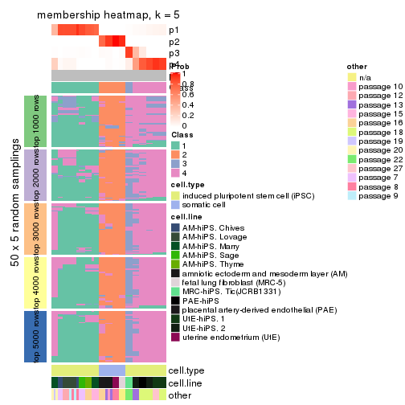
membership_heatmap(res, k = 6)
As soon as we have had the classes for columns, we can look for signatures which are significantly different between classes which can be candidate marks for certain classes. Following are the heatmaps for signatures.
Signature heatmaps where rows are scaled:
get_signatures(res, k = 2)

get_signatures(res, k = 3)
get_signatures(res, k = 4)
#> Error in mat[ceiling(1:nr/h_ratio), ceiling(1:nc/w_ratio), drop = FALSE]: subscript out of bounds
get_signatures(res, k = 5)
#> Error in mat[ceiling(1:nr/h_ratio), ceiling(1:nc/w_ratio), drop = FALSE]: subscript out of bounds
get_signatures(res, k = 6)
#> Error in mat[ceiling(1:nr/h_ratio), ceiling(1:nc/w_ratio), drop = FALSE]: subscript out of bounds
Signature heatmaps where rows are not scaled:
get_signatures(res, k = 2, scale_rows = FALSE)

get_signatures(res, k = 3, scale_rows = FALSE)
get_signatures(res, k = 4, scale_rows = FALSE)
get_signatures(res, k = 5, scale_rows = FALSE)

get_signatures(res, k = 6, scale_rows = FALSE)
Compare the overlap of signatures from different k:
compare_signatures(res)
get_signature() returns a data frame invisibly. TO get the list of signatures, the function
call should be assigned to a variable explicitly. In following code, if plot argument is set
to FALSE, no heatmap is plotted while only the differential analysis is performed.
# code only for demonstration
tb = get_signature(res, k = ..., plot = FALSE)
An example of the output of tb is:
#> which_row fdr mean_1 mean_2 scaled_mean_1 scaled_mean_2 km
#> 1 38 0.042760348 8.373488 9.131774 -0.5533452 0.5164555 1
#> 2 40 0.018707592 7.106213 8.469186 -0.6173731 0.5762149 1
#> 3 55 0.019134737 10.221463 11.207825 -0.6159697 0.5749050 1
#> 4 59 0.006059896 5.921854 7.869574 -0.6899429 0.6439467 1
#> 5 60 0.018055526 8.928898 10.211722 -0.6204761 0.5791110 1
#> 6 98 0.009384629 15.714769 14.887706 0.6635654 -0.6193277 2
...
The columns in tb are:
which_row: row indices corresponding to the input matrix.fdr: FDR for the differential test. mean_x: The mean value in group x.scaled_mean_x: The mean value in group x after rows are scaled.km: Row groups if k-means clustering is applied to rows.UMAP plot which shows how samples are separated.
dimension_reduction(res, k = 2, method = "UMAP")

dimension_reduction(res, k = 3, method = "UMAP")
dimension_reduction(res, k = 4, method = "UMAP")
dimension_reduction(res, k = 5, method = "UMAP")
dimension_reduction(res, k = 6, method = "UMAP")
Following heatmap shows how subgroups are split when increasing k:
collect_classes(res)
Test correlation between subgroups and known annotations. If the known annotation is numeric, one-way ANOVA test is applied, and if the known annotation is discrete, chi-squared contingency table test is applied.
test_to_known_factors(res)
#> n cell.type(p) cell.line(p) other(p) k
#> SD:kmeans 51 1.46e-11 9.31e-07 5.89e-03 2
#> SD:kmeans 45 1.69e-10 3.43e-10 1.16e-06 3
#> SD:kmeans 45 9.25e-10 2.27e-13 1.65e-11 4
#> SD:kmeans 45 9.25e-10 2.27e-13 1.65e-11 5
#> SD:kmeans 45 3.98e-09 3.76e-17 3.04e-14 6
If matrix rows can be associated to genes, consider to use GO_Enrichment(res,
...) to perform function enrichment for the signature genes.
The object with results only for a single top-value method and a single partition method can be extracted as:
res = res_list["SD", "skmeans"]
# you can also extract it by
# res = res_list["SD:skmeans"]
A summary of res and all the functions that can be applied to it:
res
#> A 'ConsensusPartition' object with k = 2, 3, 4, 5, 6.
#> On a matrix with 42764 rows and 51 columns.
#> Top rows (1000, 2000, 3000, 4000, 5000) are extracted by 'SD' method.
#> Subgroups are detected by 'skmeans' method.
#> Performed in total 1250 partitions by row resampling.
#> Best k for subgroups seems to be 4.
#>
#> Following methods can be applied to this 'ConsensusPartition' object:
#> [1] "cola_report" "collect_classes" "collect_plots"
#> [4] "collect_stats" "colnames" "compare_signatures"
#> [7] "consensus_heatmap" "dimension_reduction" "functional_enrichment"
#> [10] "get_anno_col" "get_anno" "get_classes"
#> [13] "get_consensus" "get_matrix" "get_membership"
#> [16] "get_param" "get_signatures" "get_stats"
#> [19] "is_best_k" "is_stable_k" "membership_heatmap"
#> [22] "ncol" "nrow" "plot_ecdf"
#> [25] "rownames" "select_partition_number" "show"
#> [28] "suggest_best_k" "test_to_known_factors"
collect_plots() function collects all the plots made from res for all k (number of partitions)
into one single page to provide an easy and fast comparison between different k.
collect_plots(res)
The plots are:
k and the heatmap of
predicted classes for each k.k.k.k.All the plots in panels can be made by individual functions and they are plotted later in this section.
select_partition_number() produces several plots showing different
statistics for choosing “optimized” k. There are following statistics:
k;k, the area increased is defined as \(A_k - A_{k-1}\).The detailed explanations of these statistics can be found in the cola vignette.
Generally speaking, lower PAC score, higher mean silhouette score or higher
concordance corresponds to better partition. Rand index and Jaccard index
measure how similar the current partition is compared to partition with k-1.
If they are too similar, we won't accept k is better than k-1.
select_partition_number(res)
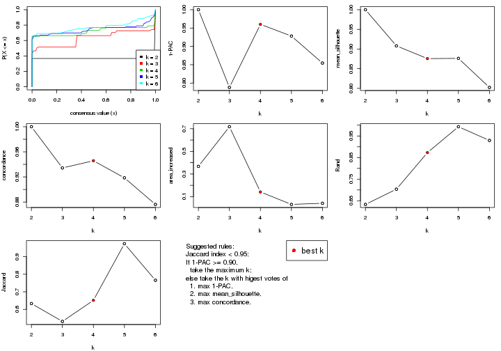
The numeric values for all these statistics can be obtained by get_stats().
get_stats(res)
#> k 1-PAC mean_silhouette concordance area_increased Rand Jaccard
#> 2 2 1.000 1.000 1.000 0.3677 0.633 0.633
#> 3 3 0.788 0.908 0.934 0.7176 0.704 0.532
#> 4 4 0.960 0.876 0.946 0.1416 0.873 0.652
#> 5 5 0.928 0.876 0.919 0.0315 0.993 0.973
#> 6 6 0.855 0.802 0.876 0.0414 0.929 0.766
suggest_best_k() suggests the best \(k\) based on these statistics. The rules are as follows:
NA.suggest_best_k(res)
#> [1] 4
#> attr(,"optional")
#> [1] 2
There is also optional best \(k\) = 2 that is worth to check.
Following shows the table of the partitions (You need to click the show/hide
code output link to see it). The membership matrix (columns with name p*)
is inferred by
clue::cl_consensus()
function with the SE method. Basically the value in the membership matrix
represents the probability to belong to a certain group. The finall class
label for an item is determined with the group with highest probability it
belongs to.
In get_classes() function, the entropy is calculated from the membership
matrix and the silhouette score is calculated from the consensus matrix.
cbind(get_classes(res, k = 2), get_membership(res, k = 2))
#> class entropy silhouette p1 p2
#> GSM520665 2 0 1 0 1
#> GSM520666 2 0 1 0 1
#> GSM520667 2 0 1 0 1
#> GSM520704 2 0 1 0 1
#> GSM520705 2 0 1 0 1
#> GSM520711 2 0 1 0 1
#> GSM520692 2 0 1 0 1
#> GSM520693 2 0 1 0 1
#> GSM520694 2 0 1 0 1
#> GSM520689 2 0 1 0 1
#> GSM520690 2 0 1 0 1
#> GSM520691 2 0 1 0 1
#> GSM520668 1 0 1 1 0
#> GSM520669 1 0 1 1 0
#> GSM520670 1 0 1 1 0
#> GSM520713 1 0 1 1 0
#> GSM520714 1 0 1 1 0
#> GSM520715 1 0 1 1 0
#> GSM520695 1 0 1 1 0
#> GSM520696 1 0 1 1 0
#> GSM520697 1 0 1 1 0
#> GSM520709 1 0 1 1 0
#> GSM520710 1 0 1 1 0
#> GSM520712 1 0 1 1 0
#> GSM520698 1 0 1 1 0
#> GSM520699 1 0 1 1 0
#> GSM520700 1 0 1 1 0
#> GSM520701 1 0 1 1 0
#> GSM520702 1 0 1 1 0
#> GSM520703 1 0 1 1 0
#> GSM520671 1 0 1 1 0
#> GSM520672 1 0 1 1 0
#> GSM520673 1 0 1 1 0
#> GSM520681 1 0 1 1 0
#> GSM520682 1 0 1 1 0
#> GSM520680 1 0 1 1 0
#> GSM520677 1 0 1 1 0
#> GSM520678 1 0 1 1 0
#> GSM520679 1 0 1 1 0
#> GSM520674 1 0 1 1 0
#> GSM520675 1 0 1 1 0
#> GSM520676 1 0 1 1 0
#> GSM520686 1 0 1 1 0
#> GSM520687 1 0 1 1 0
#> GSM520688 1 0 1 1 0
#> GSM520683 1 0 1 1 0
#> GSM520684 1 0 1 1 0
#> GSM520685 1 0 1 1 0
#> GSM520708 1 0 1 1 0
#> GSM520706 1 0 1 1 0
#> GSM520707 1 0 1 1 0
cbind(get_classes(res, k = 3), get_membership(res, k = 3))
#> class entropy silhouette p1 p2 p3
#> GSM520665 2 0.0000 1.000 0.000 1 0.000
#> GSM520666 2 0.0000 1.000 0.000 1 0.000
#> GSM520667 2 0.0000 1.000 0.000 1 0.000
#> GSM520704 2 0.0000 1.000 0.000 1 0.000
#> GSM520705 2 0.0000 1.000 0.000 1 0.000
#> GSM520711 2 0.0000 1.000 0.000 1 0.000
#> GSM520692 2 0.0000 1.000 0.000 1 0.000
#> GSM520693 2 0.0000 1.000 0.000 1 0.000
#> GSM520694 2 0.0000 1.000 0.000 1 0.000
#> GSM520689 2 0.0000 1.000 0.000 1 0.000
#> GSM520690 2 0.0000 1.000 0.000 1 0.000
#> GSM520691 2 0.0000 1.000 0.000 1 0.000
#> GSM520668 3 0.0237 0.756 0.004 0 0.996
#> GSM520669 3 0.0237 0.756 0.004 0 0.996
#> GSM520670 3 0.0237 0.756 0.004 0 0.996
#> GSM520713 3 0.1529 0.772 0.040 0 0.960
#> GSM520714 3 0.1529 0.772 0.040 0 0.960
#> GSM520715 3 0.1529 0.772 0.040 0 0.960
#> GSM520695 3 0.5926 0.721 0.356 0 0.644
#> GSM520696 3 0.5926 0.721 0.356 0 0.644
#> GSM520697 3 0.5926 0.721 0.356 0 0.644
#> GSM520709 3 0.5926 0.721 0.356 0 0.644
#> GSM520710 3 0.5926 0.721 0.356 0 0.644
#> GSM520712 3 0.5926 0.721 0.356 0 0.644
#> GSM520698 3 0.0000 0.756 0.000 0 1.000
#> GSM520699 3 0.0000 0.756 0.000 0 1.000
#> GSM520700 3 0.0000 0.756 0.000 0 1.000
#> GSM520701 3 0.5926 0.721 0.356 0 0.644
#> GSM520702 3 0.5926 0.721 0.356 0 0.644
#> GSM520703 3 0.5926 0.721 0.356 0 0.644
#> GSM520671 1 0.0000 0.999 1.000 0 0.000
#> GSM520672 1 0.0000 0.999 1.000 0 0.000
#> GSM520673 1 0.0000 0.999 1.000 0 0.000
#> GSM520681 1 0.0000 0.999 1.000 0 0.000
#> GSM520682 1 0.0000 0.999 1.000 0 0.000
#> GSM520680 1 0.0000 0.999 1.000 0 0.000
#> GSM520677 1 0.0000 0.999 1.000 0 0.000
#> GSM520678 1 0.0000 0.999 1.000 0 0.000
#> GSM520679 1 0.0000 0.999 1.000 0 0.000
#> GSM520674 1 0.0000 0.999 1.000 0 0.000
#> GSM520675 1 0.0000 0.999 1.000 0 0.000
#> GSM520676 1 0.0000 0.999 1.000 0 0.000
#> GSM520686 1 0.0000 0.999 1.000 0 0.000
#> GSM520687 1 0.0000 0.999 1.000 0 0.000
#> GSM520688 1 0.0000 0.999 1.000 0 0.000
#> GSM520683 1 0.0000 0.999 1.000 0 0.000
#> GSM520684 1 0.0000 0.999 1.000 0 0.000
#> GSM520685 1 0.0000 0.999 1.000 0 0.000
#> GSM520708 1 0.0237 0.995 0.996 0 0.004
#> GSM520706 1 0.0237 0.995 0.996 0 0.004
#> GSM520707 1 0.0237 0.995 0.996 0 0.004
cbind(get_classes(res, k = 4), get_membership(res, k = 4))
#> class entropy silhouette p1 p2 p3 p4
#> GSM520665 2 0.000 1.000 0.000 1 0.000 0.000
#> GSM520666 2 0.000 1.000 0.000 1 0.000 0.000
#> GSM520667 2 0.000 1.000 0.000 1 0.000 0.000
#> GSM520704 2 0.000 1.000 0.000 1 0.000 0.000
#> GSM520705 2 0.000 1.000 0.000 1 0.000 0.000
#> GSM520711 2 0.000 1.000 0.000 1 0.000 0.000
#> GSM520692 2 0.000 1.000 0.000 1 0.000 0.000
#> GSM520693 2 0.000 1.000 0.000 1 0.000 0.000
#> GSM520694 2 0.000 1.000 0.000 1 0.000 0.000
#> GSM520689 2 0.000 1.000 0.000 1 0.000 0.000
#> GSM520690 2 0.000 1.000 0.000 1 0.000 0.000
#> GSM520691 2 0.000 1.000 0.000 1 0.000 0.000
#> GSM520668 3 0.000 0.745 0.000 0 1.000 0.000
#> GSM520669 3 0.000 0.745 0.000 0 1.000 0.000
#> GSM520670 3 0.000 0.745 0.000 0 1.000 0.000
#> GSM520713 4 0.179 0.771 0.000 0 0.068 0.932
#> GSM520714 4 0.179 0.771 0.000 0 0.068 0.932
#> GSM520715 4 0.179 0.771 0.000 0 0.068 0.932
#> GSM520695 4 0.000 0.810 0.000 0 0.000 1.000
#> GSM520696 4 0.000 0.810 0.000 0 0.000 1.000
#> GSM520697 4 0.000 0.810 0.000 0 0.000 1.000
#> GSM520709 4 0.000 0.810 0.000 0 0.000 1.000
#> GSM520710 4 0.000 0.810 0.000 0 0.000 1.000
#> GSM520712 4 0.000 0.810 0.000 0 0.000 1.000
#> GSM520698 3 0.487 0.652 0.000 0 0.596 0.404
#> GSM520699 3 0.487 0.652 0.000 0 0.596 0.404
#> GSM520700 3 0.487 0.652 0.000 0 0.596 0.404
#> GSM520701 4 0.000 0.810 0.000 0 0.000 1.000
#> GSM520702 4 0.000 0.810 0.000 0 0.000 1.000
#> GSM520703 4 0.000 0.810 0.000 0 0.000 1.000
#> GSM520671 1 0.000 1.000 1.000 0 0.000 0.000
#> GSM520672 1 0.000 1.000 1.000 0 0.000 0.000
#> GSM520673 1 0.000 1.000 1.000 0 0.000 0.000
#> GSM520681 1 0.000 1.000 1.000 0 0.000 0.000
#> GSM520682 1 0.000 1.000 1.000 0 0.000 0.000
#> GSM520680 1 0.000 1.000 1.000 0 0.000 0.000
#> GSM520677 1 0.000 1.000 1.000 0 0.000 0.000
#> GSM520678 1 0.000 1.000 1.000 0 0.000 0.000
#> GSM520679 1 0.000 1.000 1.000 0 0.000 0.000
#> GSM520674 1 0.000 1.000 1.000 0 0.000 0.000
#> GSM520675 1 0.000 1.000 1.000 0 0.000 0.000
#> GSM520676 1 0.000 1.000 1.000 0 0.000 0.000
#> GSM520686 1 0.000 1.000 1.000 0 0.000 0.000
#> GSM520687 1 0.000 1.000 1.000 0 0.000 0.000
#> GSM520688 1 0.000 1.000 1.000 0 0.000 0.000
#> GSM520683 1 0.000 1.000 1.000 0 0.000 0.000
#> GSM520684 1 0.000 1.000 1.000 0 0.000 0.000
#> GSM520685 1 0.000 1.000 1.000 0 0.000 0.000
#> GSM520708 4 0.495 0.302 0.444 0 0.000 0.556
#> GSM520706 4 0.497 0.282 0.452 0 0.000 0.548
#> GSM520707 4 0.497 0.282 0.452 0 0.000 0.548
cbind(get_classes(res, k = 5), get_membership(res, k = 5))
#> class entropy silhouette p1 p2 p3 p4 p5
#> GSM520665 2 0.0000 0.977 0.000 1.000 0.000 0.000 0.000
#> GSM520666 2 0.0000 0.977 0.000 1.000 0.000 0.000 0.000
#> GSM520667 2 0.0000 0.977 0.000 1.000 0.000 0.000 0.000
#> GSM520704 2 0.2172 0.929 0.000 0.908 0.076 0.000 0.016
#> GSM520705 2 0.2172 0.929 0.000 0.908 0.076 0.000 0.016
#> GSM520711 2 0.2172 0.929 0.000 0.908 0.076 0.000 0.016
#> GSM520692 2 0.0000 0.977 0.000 1.000 0.000 0.000 0.000
#> GSM520693 2 0.0000 0.977 0.000 1.000 0.000 0.000 0.000
#> GSM520694 2 0.0000 0.977 0.000 1.000 0.000 0.000 0.000
#> GSM520689 2 0.0000 0.977 0.000 1.000 0.000 0.000 0.000
#> GSM520690 2 0.0000 0.977 0.000 1.000 0.000 0.000 0.000
#> GSM520691 2 0.0000 0.977 0.000 1.000 0.000 0.000 0.000
#> GSM520668 3 0.2648 1.000 0.000 0.000 0.848 0.000 0.152
#> GSM520669 3 0.2648 1.000 0.000 0.000 0.848 0.000 0.152
#> GSM520670 3 0.2648 1.000 0.000 0.000 0.848 0.000 0.152
#> GSM520713 4 0.2438 0.733 0.000 0.000 0.040 0.900 0.060
#> GSM520714 4 0.2438 0.733 0.000 0.000 0.040 0.900 0.060
#> GSM520715 4 0.2438 0.733 0.000 0.000 0.040 0.900 0.060
#> GSM520695 4 0.0000 0.765 0.000 0.000 0.000 1.000 0.000
#> GSM520696 4 0.0000 0.765 0.000 0.000 0.000 1.000 0.000
#> GSM520697 4 0.0000 0.765 0.000 0.000 0.000 1.000 0.000
#> GSM520709 4 0.0000 0.765 0.000 0.000 0.000 1.000 0.000
#> GSM520710 4 0.0000 0.765 0.000 0.000 0.000 1.000 0.000
#> GSM520712 4 0.0000 0.765 0.000 0.000 0.000 1.000 0.000
#> GSM520698 5 0.2471 1.000 0.000 0.000 0.000 0.136 0.864
#> GSM520699 5 0.2471 1.000 0.000 0.000 0.000 0.136 0.864
#> GSM520700 5 0.2471 1.000 0.000 0.000 0.000 0.136 0.864
#> GSM520701 4 0.3165 0.685 0.000 0.000 0.036 0.848 0.116
#> GSM520702 4 0.3165 0.685 0.000 0.000 0.036 0.848 0.116
#> GSM520703 4 0.3165 0.685 0.000 0.000 0.036 0.848 0.116
#> GSM520671 1 0.0000 0.975 1.000 0.000 0.000 0.000 0.000
#> GSM520672 1 0.0000 0.975 1.000 0.000 0.000 0.000 0.000
#> GSM520673 1 0.0000 0.975 1.000 0.000 0.000 0.000 0.000
#> GSM520681 1 0.1202 0.975 0.960 0.000 0.004 0.004 0.032
#> GSM520682 1 0.1202 0.975 0.960 0.000 0.004 0.004 0.032
#> GSM520680 1 0.0865 0.975 0.972 0.000 0.000 0.004 0.024
#> GSM520677 1 0.1082 0.974 0.964 0.000 0.000 0.008 0.028
#> GSM520678 1 0.1082 0.974 0.964 0.000 0.000 0.008 0.028
#> GSM520679 1 0.1082 0.974 0.964 0.000 0.000 0.008 0.028
#> GSM520674 1 0.1082 0.974 0.964 0.000 0.000 0.008 0.028
#> GSM520675 1 0.1082 0.974 0.964 0.000 0.000 0.008 0.028
#> GSM520676 1 0.1082 0.974 0.964 0.000 0.000 0.008 0.028
#> GSM520686 1 0.0451 0.972 0.988 0.000 0.008 0.000 0.004
#> GSM520687 1 0.0451 0.972 0.988 0.000 0.008 0.000 0.004
#> GSM520688 1 0.0451 0.972 0.988 0.000 0.008 0.000 0.004
#> GSM520683 1 0.1082 0.960 0.964 0.000 0.008 0.000 0.028
#> GSM520684 1 0.1082 0.960 0.964 0.000 0.008 0.000 0.028
#> GSM520685 1 0.1082 0.960 0.964 0.000 0.008 0.000 0.028
#> GSM520708 4 0.6394 0.258 0.436 0.000 0.072 0.456 0.036
#> GSM520706 4 0.6394 0.258 0.436 0.000 0.072 0.456 0.036
#> GSM520707 4 0.6394 0.258 0.436 0.000 0.072 0.456 0.036
cbind(get_classes(res, k = 6), get_membership(res, k = 6))
#> class entropy silhouette p1 p2 p3 p4 p5 p6
#> GSM520665 2 0.0000 0.894 0.000 1.000 0.000 0.000 0.000 NA
#> GSM520666 2 0.0000 0.894 0.000 1.000 0.000 0.000 0.000 NA
#> GSM520667 2 0.0000 0.894 0.000 1.000 0.000 0.000 0.000 NA
#> GSM520704 2 0.3984 0.622 0.000 0.596 0.000 0.000 0.008 NA
#> GSM520705 2 0.3984 0.622 0.000 0.596 0.000 0.000 0.008 NA
#> GSM520711 2 0.3984 0.622 0.000 0.596 0.000 0.000 0.008 NA
#> GSM520692 2 0.0000 0.894 0.000 1.000 0.000 0.000 0.000 NA
#> GSM520693 2 0.0000 0.894 0.000 1.000 0.000 0.000 0.000 NA
#> GSM520694 2 0.0000 0.894 0.000 1.000 0.000 0.000 0.000 NA
#> GSM520689 2 0.0000 0.894 0.000 1.000 0.000 0.000 0.000 NA
#> GSM520690 2 0.0000 0.894 0.000 1.000 0.000 0.000 0.000 NA
#> GSM520691 2 0.0000 0.894 0.000 1.000 0.000 0.000 0.000 NA
#> GSM520668 3 0.0000 1.000 0.000 0.000 1.000 0.000 0.000 NA
#> GSM520669 3 0.0000 1.000 0.000 0.000 1.000 0.000 0.000 NA
#> GSM520670 3 0.0000 1.000 0.000 0.000 1.000 0.000 0.000 NA
#> GSM520713 4 0.3206 0.797 0.000 0.000 0.004 0.816 0.028 NA
#> GSM520714 4 0.3206 0.797 0.000 0.000 0.004 0.816 0.028 NA
#> GSM520715 4 0.3206 0.797 0.000 0.000 0.004 0.816 0.028 NA
#> GSM520695 4 0.0000 0.872 0.000 0.000 0.000 1.000 0.000 NA
#> GSM520696 4 0.0000 0.872 0.000 0.000 0.000 1.000 0.000 NA
#> GSM520697 4 0.0000 0.872 0.000 0.000 0.000 1.000 0.000 NA
#> GSM520709 4 0.0363 0.872 0.000 0.000 0.000 0.988 0.000 NA
#> GSM520710 4 0.0363 0.872 0.000 0.000 0.000 0.988 0.000 NA
#> GSM520712 4 0.0363 0.872 0.000 0.000 0.000 0.988 0.000 NA
#> GSM520698 5 0.1720 1.000 0.000 0.000 0.032 0.040 0.928 NA
#> GSM520699 5 0.1720 1.000 0.000 0.000 0.032 0.040 0.928 NA
#> GSM520700 5 0.1720 1.000 0.000 0.000 0.032 0.040 0.928 NA
#> GSM520701 4 0.4079 0.726 0.000 0.000 0.000 0.744 0.172 NA
#> GSM520702 4 0.4079 0.726 0.000 0.000 0.000 0.744 0.172 NA
#> GSM520703 4 0.4079 0.726 0.000 0.000 0.000 0.744 0.172 NA
#> GSM520671 1 0.0508 0.829 0.984 0.000 0.000 0.000 0.004 NA
#> GSM520672 1 0.0508 0.829 0.984 0.000 0.000 0.000 0.004 NA
#> GSM520673 1 0.0508 0.829 0.984 0.000 0.000 0.000 0.004 NA
#> GSM520681 1 0.2799 0.824 0.852 0.000 0.000 0.012 0.012 NA
#> GSM520682 1 0.2799 0.824 0.852 0.000 0.000 0.012 0.012 NA
#> GSM520680 1 0.1442 0.829 0.944 0.000 0.000 0.012 0.004 NA
#> GSM520677 1 0.2547 0.819 0.868 0.000 0.000 0.016 0.004 NA
#> GSM520678 1 0.2547 0.819 0.868 0.000 0.000 0.016 0.004 NA
#> GSM520679 1 0.2547 0.819 0.868 0.000 0.000 0.016 0.004 NA
#> GSM520674 1 0.2547 0.819 0.868 0.000 0.000 0.016 0.004 NA
#> GSM520675 1 0.2547 0.819 0.868 0.000 0.000 0.016 0.004 NA
#> GSM520676 1 0.2547 0.819 0.868 0.000 0.000 0.016 0.004 NA
#> GSM520686 1 0.1500 0.823 0.936 0.000 0.000 0.000 0.012 NA
#> GSM520687 1 0.1500 0.823 0.936 0.000 0.000 0.000 0.012 NA
#> GSM520688 1 0.1500 0.823 0.936 0.000 0.000 0.000 0.012 NA
#> GSM520683 1 0.2020 0.815 0.896 0.000 0.000 0.000 0.008 NA
#> GSM520684 1 0.1757 0.815 0.916 0.000 0.000 0.000 0.008 NA
#> GSM520685 1 0.1757 0.815 0.916 0.000 0.000 0.000 0.008 NA
#> GSM520708 1 0.6486 0.138 0.376 0.000 0.000 0.256 0.020 NA
#> GSM520706 1 0.6486 0.138 0.376 0.000 0.000 0.256 0.020 NA
#> GSM520707 1 0.6486 0.138 0.376 0.000 0.000 0.256 0.020 NA
Heatmaps for the consensus matrix. It visualizes the probability of two samples to be in a same group.
consensus_heatmap(res, k = 2)

consensus_heatmap(res, k = 3)
consensus_heatmap(res, k = 4)
consensus_heatmap(res, k = 5)

consensus_heatmap(res, k = 6)
Heatmaps for the membership of samples in all partitions to see how consistent they are:
membership_heatmap(res, k = 2)

membership_heatmap(res, k = 3)
membership_heatmap(res, k = 4)
membership_heatmap(res, k = 5)
membership_heatmap(res, k = 6)
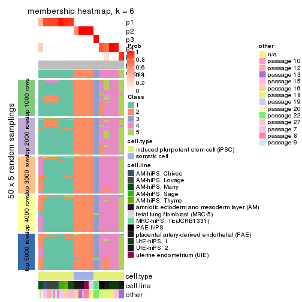
As soon as we have had the classes for columns, we can look for signatures which are significantly different between classes which can be candidate marks for certain classes. Following are the heatmaps for signatures.
Signature heatmaps where rows are scaled:
get_signatures(res, k = 2)

get_signatures(res, k = 3)
get_signatures(res, k = 4)
get_signatures(res, k = 5)
#> Error in mat[ceiling(1:nr/h_ratio), ceiling(1:nc/w_ratio), drop = FALSE]: subscript out of bounds
get_signatures(res, k = 6)
#> Error in mat[ceiling(1:nr/h_ratio), ceiling(1:nc/w_ratio), drop = FALSE]: subscript out of bounds
Signature heatmaps where rows are not scaled:
get_signatures(res, k = 2, scale_rows = FALSE)

get_signatures(res, k = 3, scale_rows = FALSE)
get_signatures(res, k = 4, scale_rows = FALSE)
get_signatures(res, k = 5, scale_rows = FALSE)
get_signatures(res, k = 6, scale_rows = FALSE)
Compare the overlap of signatures from different k:
compare_signatures(res)
get_signature() returns a data frame invisibly. TO get the list of signatures, the function
call should be assigned to a variable explicitly. In following code, if plot argument is set
to FALSE, no heatmap is plotted while only the differential analysis is performed.
# code only for demonstration
tb = get_signature(res, k = ..., plot = FALSE)
An example of the output of tb is:
#> which_row fdr mean_1 mean_2 scaled_mean_1 scaled_mean_2 km
#> 1 38 0.042760348 8.373488 9.131774 -0.5533452 0.5164555 1
#> 2 40 0.018707592 7.106213 8.469186 -0.6173731 0.5762149 1
#> 3 55 0.019134737 10.221463 11.207825 -0.6159697 0.5749050 1
#> 4 59 0.006059896 5.921854 7.869574 -0.6899429 0.6439467 1
#> 5 60 0.018055526 8.928898 10.211722 -0.6204761 0.5791110 1
#> 6 98 0.009384629 15.714769 14.887706 0.6635654 -0.6193277 2
...
The columns in tb are:
which_row: row indices corresponding to the input matrix.fdr: FDR for the differential test. mean_x: The mean value in group x.scaled_mean_x: The mean value in group x after rows are scaled.km: Row groups if k-means clustering is applied to rows.UMAP plot which shows how samples are separated.
dimension_reduction(res, k = 2, method = "UMAP")

dimension_reduction(res, k = 3, method = "UMAP")
dimension_reduction(res, k = 4, method = "UMAP")
dimension_reduction(res, k = 5, method = "UMAP")
dimension_reduction(res, k = 6, method = "UMAP")
Following heatmap shows how subgroups are split when increasing k:
collect_classes(res)
Test correlation between subgroups and known annotations. If the known annotation is numeric, one-way ANOVA test is applied, and if the known annotation is discrete, chi-squared contingency table test is applied.
test_to_known_factors(res)
#> n cell.type(p) cell.line(p) other(p) k
#> SD:skmeans 51 1.46e-11 9.31e-07 5.89e-03 2
#> SD:skmeans 51 8.42e-12 1.37e-11 1.03e-06 3
#> SD:skmeans 48 2.13e-10 6.46e-12 1.83e-10 4
#> SD:skmeans 48 9.44e-10 2.80e-14 1.72e-13 5
#> SD:skmeans 48 9.44e-10 2.80e-14 1.72e-13 6
If matrix rows can be associated to genes, consider to use GO_Enrichment(res,
...) to perform function enrichment for the signature genes.
The object with results only for a single top-value method and a single partition method can be extracted as:
res = res_list["SD", "pam"]
# you can also extract it by
# res = res_list["SD:pam"]
A summary of res and all the functions that can be applied to it:
res
#> A 'ConsensusPartition' object with k = 2, 3, 4, 5, 6.
#> On a matrix with 42764 rows and 51 columns.
#> Top rows (1000, 2000, 3000, 4000, 5000) are extracted by 'SD' method.
#> Subgroups are detected by 'pam' method.
#> Performed in total 1250 partitions by row resampling.
#> Best k for subgroups seems to be 6.
#>
#> Following methods can be applied to this 'ConsensusPartition' object:
#> [1] "cola_report" "collect_classes" "collect_plots"
#> [4] "collect_stats" "colnames" "compare_signatures"
#> [7] "consensus_heatmap" "dimension_reduction" "functional_enrichment"
#> [10] "get_anno_col" "get_anno" "get_classes"
#> [13] "get_consensus" "get_matrix" "get_membership"
#> [16] "get_param" "get_signatures" "get_stats"
#> [19] "is_best_k" "is_stable_k" "membership_heatmap"
#> [22] "ncol" "nrow" "plot_ecdf"
#> [25] "rownames" "select_partition_number" "show"
#> [28] "suggest_best_k" "test_to_known_factors"
collect_plots() function collects all the plots made from res for all k (number of partitions)
into one single page to provide an easy and fast comparison between different k.
collect_plots(res)
The plots are:
k and the heatmap of
predicted classes for each k.k.k.k.All the plots in panels can be made by individual functions and they are plotted later in this section.
select_partition_number() produces several plots showing different
statistics for choosing “optimized” k. There are following statistics:
k;k, the area increased is defined as \(A_k - A_{k-1}\).The detailed explanations of these statistics can be found in the cola vignette.
Generally speaking, lower PAC score, higher mean silhouette score or higher
concordance corresponds to better partition. Rand index and Jaccard index
measure how similar the current partition is compared to partition with k-1.
If they are too similar, we won't accept k is better than k-1.
select_partition_number(res)
The numeric values for all these statistics can be obtained by get_stats().
get_stats(res)
#> k 1-PAC mean_silhouette concordance area_increased Rand Jaccard
#> 2 2 1.000 1.000 1.000 0.3677 0.633 0.633
#> 3 3 1.000 0.998 0.998 0.0598 0.979 0.967
#> 4 4 0.721 0.971 0.944 0.6540 0.704 0.515
#> 5 5 0.972 0.967 0.987 0.1176 0.965 0.888
#> 6 6 0.972 0.967 0.987 0.0196 0.986 0.950
suggest_best_k() suggests the best \(k\) based on these statistics. The rules are as follows:
NA.suggest_best_k(res)
#> [1] 6
#> attr(,"optional")
#> [1] 2 5
There is also optional best \(k\) = 2 5 that is worth to check.
Following shows the table of the partitions (You need to click the show/hide
code output link to see it). The membership matrix (columns with name p*)
is inferred by
clue::cl_consensus()
function with the SE method. Basically the value in the membership matrix
represents the probability to belong to a certain group. The finall class
label for an item is determined with the group with highest probability it
belongs to.
In get_classes() function, the entropy is calculated from the membership
matrix and the silhouette score is calculated from the consensus matrix.
cbind(get_classes(res, k = 2), get_membership(res, k = 2))
#> class entropy silhouette p1 p2
#> GSM520665 2 0 1 0 1
#> GSM520666 2 0 1 0 1
#> GSM520667 2 0 1 0 1
#> GSM520704 2 0 1 0 1
#> GSM520705 2 0 1 0 1
#> GSM520711 2 0 1 0 1
#> GSM520692 2 0 1 0 1
#> GSM520693 2 0 1 0 1
#> GSM520694 2 0 1 0 1
#> GSM520689 2 0 1 0 1
#> GSM520690 2 0 1 0 1
#> GSM520691 2 0 1 0 1
#> GSM520668 1 0 1 1 0
#> GSM520669 1 0 1 1 0
#> GSM520670 1 0 1 1 0
#> GSM520713 1 0 1 1 0
#> GSM520714 1 0 1 1 0
#> GSM520715 1 0 1 1 0
#> GSM520695 1 0 1 1 0
#> GSM520696 1 0 1 1 0
#> GSM520697 1 0 1 1 0
#> GSM520709 1 0 1 1 0
#> GSM520710 1 0 1 1 0
#> GSM520712 1 0 1 1 0
#> GSM520698 1 0 1 1 0
#> GSM520699 1 0 1 1 0
#> GSM520700 1 0 1 1 0
#> GSM520701 1 0 1 1 0
#> GSM520702 1 0 1 1 0
#> GSM520703 1 0 1 1 0
#> GSM520671 1 0 1 1 0
#> GSM520672 1 0 1 1 0
#> GSM520673 1 0 1 1 0
#> GSM520681 1 0 1 1 0
#> GSM520682 1 0 1 1 0
#> GSM520680 1 0 1 1 0
#> GSM520677 1 0 1 1 0
#> GSM520678 1 0 1 1 0
#> GSM520679 1 0 1 1 0
#> GSM520674 1 0 1 1 0
#> GSM520675 1 0 1 1 0
#> GSM520676 1 0 1 1 0
#> GSM520686 1 0 1 1 0
#> GSM520687 1 0 1 1 0
#> GSM520688 1 0 1 1 0
#> GSM520683 1 0 1 1 0
#> GSM520684 1 0 1 1 0
#> GSM520685 1 0 1 1 0
#> GSM520708 1 0 1 1 0
#> GSM520706 1 0 1 1 0
#> GSM520707 1 0 1 1 0
cbind(get_classes(res, k = 3), get_membership(res, k = 3))
#> class entropy silhouette p1 p2 p3
#> GSM520665 2 0.0000 1.000 0.000 1.000 0.000
#> GSM520666 2 0.0000 1.000 0.000 1.000 0.000
#> GSM520667 2 0.0000 1.000 0.000 1.000 0.000
#> GSM520704 3 0.0237 1.000 0.000 0.004 0.996
#> GSM520705 3 0.0237 1.000 0.000 0.004 0.996
#> GSM520711 3 0.0237 1.000 0.000 0.004 0.996
#> GSM520692 2 0.0000 1.000 0.000 1.000 0.000
#> GSM520693 2 0.0000 1.000 0.000 1.000 0.000
#> GSM520694 2 0.0000 1.000 0.000 1.000 0.000
#> GSM520689 2 0.0000 1.000 0.000 1.000 0.000
#> GSM520690 2 0.0000 1.000 0.000 1.000 0.000
#> GSM520691 2 0.0000 1.000 0.000 1.000 0.000
#> GSM520668 1 0.0237 0.998 0.996 0.000 0.004
#> GSM520669 1 0.0237 0.998 0.996 0.000 0.004
#> GSM520670 1 0.0237 0.998 0.996 0.000 0.004
#> GSM520713 1 0.0237 0.998 0.996 0.000 0.004
#> GSM520714 1 0.0237 0.998 0.996 0.000 0.004
#> GSM520715 1 0.0237 0.998 0.996 0.000 0.004
#> GSM520695 1 0.0237 0.998 0.996 0.000 0.004
#> GSM520696 1 0.0237 0.998 0.996 0.000 0.004
#> GSM520697 1 0.0237 0.998 0.996 0.000 0.004
#> GSM520709 1 0.0237 0.998 0.996 0.000 0.004
#> GSM520710 1 0.0237 0.998 0.996 0.000 0.004
#> GSM520712 1 0.0237 0.998 0.996 0.000 0.004
#> GSM520698 1 0.0237 0.998 0.996 0.000 0.004
#> GSM520699 1 0.0237 0.998 0.996 0.000 0.004
#> GSM520700 1 0.0237 0.998 0.996 0.000 0.004
#> GSM520701 1 0.0237 0.998 0.996 0.000 0.004
#> GSM520702 1 0.0237 0.998 0.996 0.000 0.004
#> GSM520703 1 0.0237 0.998 0.996 0.000 0.004
#> GSM520671 1 0.0000 0.998 1.000 0.000 0.000
#> GSM520672 1 0.0000 0.998 1.000 0.000 0.000
#> GSM520673 1 0.0000 0.998 1.000 0.000 0.000
#> GSM520681 1 0.0000 0.998 1.000 0.000 0.000
#> GSM520682 1 0.0000 0.998 1.000 0.000 0.000
#> GSM520680 1 0.0000 0.998 1.000 0.000 0.000
#> GSM520677 1 0.0000 0.998 1.000 0.000 0.000
#> GSM520678 1 0.0000 0.998 1.000 0.000 0.000
#> GSM520679 1 0.0000 0.998 1.000 0.000 0.000
#> GSM520674 1 0.0000 0.998 1.000 0.000 0.000
#> GSM520675 1 0.0000 0.998 1.000 0.000 0.000
#> GSM520676 1 0.0000 0.998 1.000 0.000 0.000
#> GSM520686 1 0.0000 0.998 1.000 0.000 0.000
#> GSM520687 1 0.0000 0.998 1.000 0.000 0.000
#> GSM520688 1 0.0000 0.998 1.000 0.000 0.000
#> GSM520683 1 0.0000 0.998 1.000 0.000 0.000
#> GSM520684 1 0.0000 0.998 1.000 0.000 0.000
#> GSM520685 1 0.0000 0.998 1.000 0.000 0.000
#> GSM520708 1 0.0000 0.998 1.000 0.000 0.000
#> GSM520706 1 0.0000 0.998 1.000 0.000 0.000
#> GSM520707 1 0.0000 0.998 1.000 0.000 0.000
cbind(get_classes(res, k = 4), get_membership(res, k = 4))
#> class entropy silhouette p1 p2 p3 p4
#> GSM520665 2 0.000 1.000 0.000 1 0 0.000
#> GSM520666 2 0.000 1.000 0.000 1 0 0.000
#> GSM520667 2 0.000 1.000 0.000 1 0 0.000
#> GSM520704 3 0.000 1.000 0.000 0 1 0.000
#> GSM520705 3 0.000 1.000 0.000 0 1 0.000
#> GSM520711 3 0.000 1.000 0.000 0 1 0.000
#> GSM520692 2 0.000 1.000 0.000 1 0 0.000
#> GSM520693 2 0.000 1.000 0.000 1 0 0.000
#> GSM520694 2 0.000 1.000 0.000 1 0 0.000
#> GSM520689 2 0.000 1.000 0.000 1 0 0.000
#> GSM520690 2 0.000 1.000 0.000 1 0 0.000
#> GSM520691 2 0.000 1.000 0.000 1 0 0.000
#> GSM520668 4 0.000 0.734 0.000 0 0 1.000
#> GSM520669 4 0.000 0.734 0.000 0 0 1.000
#> GSM520670 4 0.000 0.734 0.000 0 0 1.000
#> GSM520713 4 0.353 0.954 0.192 0 0 0.808
#> GSM520714 4 0.353 0.954 0.192 0 0 0.808
#> GSM520715 4 0.353 0.954 0.192 0 0 0.808
#> GSM520695 4 0.353 0.954 0.192 0 0 0.808
#> GSM520696 4 0.353 0.954 0.192 0 0 0.808
#> GSM520697 4 0.353 0.954 0.192 0 0 0.808
#> GSM520709 4 0.353 0.954 0.192 0 0 0.808
#> GSM520710 4 0.353 0.954 0.192 0 0 0.808
#> GSM520712 4 0.353 0.954 0.192 0 0 0.808
#> GSM520698 4 0.353 0.954 0.192 0 0 0.808
#> GSM520699 4 0.353 0.954 0.192 0 0 0.808
#> GSM520700 4 0.353 0.954 0.192 0 0 0.808
#> GSM520701 4 0.353 0.954 0.192 0 0 0.808
#> GSM520702 4 0.353 0.954 0.192 0 0 0.808
#> GSM520703 4 0.353 0.954 0.192 0 0 0.808
#> GSM520671 1 0.000 1.000 1.000 0 0 0.000
#> GSM520672 1 0.000 1.000 1.000 0 0 0.000
#> GSM520673 1 0.000 1.000 1.000 0 0 0.000
#> GSM520681 1 0.000 1.000 1.000 0 0 0.000
#> GSM520682 1 0.000 1.000 1.000 0 0 0.000
#> GSM520680 1 0.000 1.000 1.000 0 0 0.000
#> GSM520677 1 0.000 1.000 1.000 0 0 0.000
#> GSM520678 1 0.000 1.000 1.000 0 0 0.000
#> GSM520679 1 0.000 1.000 1.000 0 0 0.000
#> GSM520674 1 0.000 1.000 1.000 0 0 0.000
#> GSM520675 1 0.000 1.000 1.000 0 0 0.000
#> GSM520676 1 0.000 1.000 1.000 0 0 0.000
#> GSM520686 1 0.000 1.000 1.000 0 0 0.000
#> GSM520687 1 0.000 1.000 1.000 0 0 0.000
#> GSM520688 1 0.000 1.000 1.000 0 0 0.000
#> GSM520683 1 0.000 1.000 1.000 0 0 0.000
#> GSM520684 1 0.000 1.000 1.000 0 0 0.000
#> GSM520685 1 0.000 1.000 1.000 0 0 0.000
#> GSM520708 1 0.000 1.000 1.000 0 0 0.000
#> GSM520706 1 0.000 1.000 1.000 0 0 0.000
#> GSM520707 1 0.000 1.000 1.000 0 0 0.000
cbind(get_classes(res, k = 5), get_membership(res, k = 5))
#> class entropy silhouette p1 p2 p3 p4 p5
#> GSM520665 2 0.0000 1.000 0.000 1 0 0.000 0
#> GSM520666 2 0.0000 1.000 0.000 1 0 0.000 0
#> GSM520667 2 0.0000 1.000 0.000 1 0 0.000 0
#> GSM520704 5 0.0000 1.000 0.000 0 0 0.000 1
#> GSM520705 5 0.0000 1.000 0.000 0 0 0.000 1
#> GSM520711 5 0.0000 1.000 0.000 0 0 0.000 1
#> GSM520692 2 0.0000 1.000 0.000 1 0 0.000 0
#> GSM520693 2 0.0000 1.000 0.000 1 0 0.000 0
#> GSM520694 2 0.0000 1.000 0.000 1 0 0.000 0
#> GSM520689 2 0.0000 1.000 0.000 1 0 0.000 0
#> GSM520690 2 0.0000 1.000 0.000 1 0 0.000 0
#> GSM520691 2 0.0000 1.000 0.000 1 0 0.000 0
#> GSM520668 3 0.0000 1.000 0.000 0 1 0.000 0
#> GSM520669 3 0.0000 1.000 0.000 0 1 0.000 0
#> GSM520670 3 0.0000 1.000 0.000 0 1 0.000 0
#> GSM520713 4 0.0000 0.976 0.000 0 0 1.000 0
#> GSM520714 4 0.0000 0.976 0.000 0 0 1.000 0
#> GSM520715 4 0.0000 0.976 0.000 0 0 1.000 0
#> GSM520695 4 0.0000 0.976 0.000 0 0 1.000 0
#> GSM520696 4 0.0000 0.976 0.000 0 0 1.000 0
#> GSM520697 4 0.0000 0.976 0.000 0 0 1.000 0
#> GSM520709 4 0.0000 0.976 0.000 0 0 1.000 0
#> GSM520710 4 0.0000 0.976 0.000 0 0 1.000 0
#> GSM520712 4 0.0000 0.976 0.000 0 0 1.000 0
#> GSM520698 4 0.0000 0.976 0.000 0 0 1.000 0
#> GSM520699 4 0.0000 0.976 0.000 0 0 1.000 0
#> GSM520700 4 0.3480 0.605 0.248 0 0 0.752 0
#> GSM520701 4 0.0000 0.976 0.000 0 0 1.000 0
#> GSM520702 4 0.0000 0.976 0.000 0 0 1.000 0
#> GSM520703 4 0.0000 0.976 0.000 0 0 1.000 0
#> GSM520671 1 0.0000 0.975 1.000 0 0 0.000 0
#> GSM520672 1 0.0162 0.972 0.996 0 0 0.004 0
#> GSM520673 1 0.0000 0.975 1.000 0 0 0.000 0
#> GSM520681 1 0.0000 0.975 1.000 0 0 0.000 0
#> GSM520682 1 0.0000 0.975 1.000 0 0 0.000 0
#> GSM520680 1 0.0000 0.975 1.000 0 0 0.000 0
#> GSM520677 1 0.0000 0.975 1.000 0 0 0.000 0
#> GSM520678 1 0.0000 0.975 1.000 0 0 0.000 0
#> GSM520679 1 0.0000 0.975 1.000 0 0 0.000 0
#> GSM520674 1 0.0000 0.975 1.000 0 0 0.000 0
#> GSM520675 1 0.0000 0.975 1.000 0 0 0.000 0
#> GSM520676 1 0.0000 0.975 1.000 0 0 0.000 0
#> GSM520686 1 0.0000 0.975 1.000 0 0 0.000 0
#> GSM520687 1 0.0000 0.975 1.000 0 0 0.000 0
#> GSM520688 1 0.0000 0.975 1.000 0 0 0.000 0
#> GSM520683 1 0.0000 0.975 1.000 0 0 0.000 0
#> GSM520684 1 0.0000 0.975 1.000 0 0 0.000 0
#> GSM520685 1 0.0000 0.975 1.000 0 0 0.000 0
#> GSM520708 1 0.2813 0.791 0.832 0 0 0.168 0
#> GSM520706 1 0.2424 0.839 0.868 0 0 0.132 0
#> GSM520707 1 0.2127 0.867 0.892 0 0 0.108 0
cbind(get_classes(res, k = 6), get_membership(res, k = 6))
#> class entropy silhouette p1 p2 p3 p4 p5 p6
#> GSM520665 6 0.0000 1.000 0.000 0 0 0.000 0 1
#> GSM520666 6 0.0000 1.000 0.000 0 0 0.000 0 1
#> GSM520667 6 0.0000 1.000 0.000 0 0 0.000 0 1
#> GSM520704 5 0.0000 1.000 0.000 0 0 0.000 1 0
#> GSM520705 5 0.0000 1.000 0.000 0 0 0.000 1 0
#> GSM520711 5 0.0000 1.000 0.000 0 0 0.000 1 0
#> GSM520692 2 0.0000 1.000 0.000 1 0 0.000 0 0
#> GSM520693 2 0.0000 1.000 0.000 1 0 0.000 0 0
#> GSM520694 2 0.0000 1.000 0.000 1 0 0.000 0 0
#> GSM520689 2 0.0000 1.000 0.000 1 0 0.000 0 0
#> GSM520690 2 0.0000 1.000 0.000 1 0 0.000 0 0
#> GSM520691 2 0.0000 1.000 0.000 1 0 0.000 0 0
#> GSM520668 3 0.0000 1.000 0.000 0 1 0.000 0 0
#> GSM520669 3 0.0000 1.000 0.000 0 1 0.000 0 0
#> GSM520670 3 0.0000 1.000 0.000 0 1 0.000 0 0
#> GSM520713 4 0.0000 0.976 0.000 0 0 1.000 0 0
#> GSM520714 4 0.0000 0.976 0.000 0 0 1.000 0 0
#> GSM520715 4 0.0000 0.976 0.000 0 0 1.000 0 0
#> GSM520695 4 0.0000 0.976 0.000 0 0 1.000 0 0
#> GSM520696 4 0.0000 0.976 0.000 0 0 1.000 0 0
#> GSM520697 4 0.0000 0.976 0.000 0 0 1.000 0 0
#> GSM520709 4 0.0000 0.976 0.000 0 0 1.000 0 0
#> GSM520710 4 0.0000 0.976 0.000 0 0 1.000 0 0
#> GSM520712 4 0.0000 0.976 0.000 0 0 1.000 0 0
#> GSM520698 4 0.0000 0.976 0.000 0 0 1.000 0 0
#> GSM520699 4 0.0000 0.976 0.000 0 0 1.000 0 0
#> GSM520700 4 0.3126 0.605 0.248 0 0 0.752 0 0
#> GSM520701 4 0.0000 0.976 0.000 0 0 1.000 0 0
#> GSM520702 4 0.0000 0.976 0.000 0 0 1.000 0 0
#> GSM520703 4 0.0000 0.976 0.000 0 0 1.000 0 0
#> GSM520671 1 0.0000 0.975 1.000 0 0 0.000 0 0
#> GSM520672 1 0.0146 0.972 0.996 0 0 0.004 0 0
#> GSM520673 1 0.0000 0.975 1.000 0 0 0.000 0 0
#> GSM520681 1 0.0000 0.975 1.000 0 0 0.000 0 0
#> GSM520682 1 0.0000 0.975 1.000 0 0 0.000 0 0
#> GSM520680 1 0.0000 0.975 1.000 0 0 0.000 0 0
#> GSM520677 1 0.0000 0.975 1.000 0 0 0.000 0 0
#> GSM520678 1 0.0000 0.975 1.000 0 0 0.000 0 0
#> GSM520679 1 0.0000 0.975 1.000 0 0 0.000 0 0
#> GSM520674 1 0.0000 0.975 1.000 0 0 0.000 0 0
#> GSM520675 1 0.0000 0.975 1.000 0 0 0.000 0 0
#> GSM520676 1 0.0000 0.975 1.000 0 0 0.000 0 0
#> GSM520686 1 0.0000 0.975 1.000 0 0 0.000 0 0
#> GSM520687 1 0.0000 0.975 1.000 0 0 0.000 0 0
#> GSM520688 1 0.0000 0.975 1.000 0 0 0.000 0 0
#> GSM520683 1 0.0000 0.975 1.000 0 0 0.000 0 0
#> GSM520684 1 0.0000 0.975 1.000 0 0 0.000 0 0
#> GSM520685 1 0.0000 0.975 1.000 0 0 0.000 0 0
#> GSM520708 1 0.2527 0.791 0.832 0 0 0.168 0 0
#> GSM520706 1 0.2178 0.839 0.868 0 0 0.132 0 0
#> GSM520707 1 0.1910 0.867 0.892 0 0 0.108 0 0
Heatmaps for the consensus matrix. It visualizes the probability of two samples to be in a same group.
consensus_heatmap(res, k = 2)

consensus_heatmap(res, k = 3)
consensus_heatmap(res, k = 4)
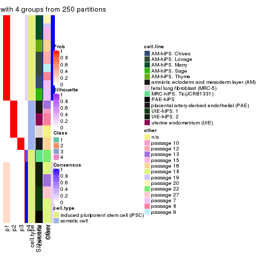
consensus_heatmap(res, k = 5)
consensus_heatmap(res, k = 6)

Heatmaps for the membership of samples in all partitions to see how consistent they are:
membership_heatmap(res, k = 2)

membership_heatmap(res, k = 3)
membership_heatmap(res, k = 4)
membership_heatmap(res, k = 5)
membership_heatmap(res, k = 6)
As soon as we have had the classes for columns, we can look for signatures which are significantly different between classes which can be candidate marks for certain classes. Following are the heatmaps for signatures.
Signature heatmaps where rows are scaled:
get_signatures(res, k = 2)

get_signatures(res, k = 3)
get_signatures(res, k = 4)
get_signatures(res, k = 5)
get_signatures(res, k = 6)
Signature heatmaps where rows are not scaled:
get_signatures(res, k = 2, scale_rows = FALSE)
get_signatures(res, k = 3, scale_rows = FALSE)
get_signatures(res, k = 4, scale_rows = FALSE)
get_signatures(res, k = 5, scale_rows = FALSE)
get_signatures(res, k = 6, scale_rows = FALSE)
Compare the overlap of signatures from different k:
compare_signatures(res)

get_signature() returns a data frame invisibly. TO get the list of signatures, the function
call should be assigned to a variable explicitly. In following code, if plot argument is set
to FALSE, no heatmap is plotted while only the differential analysis is performed.
# code only for demonstration
tb = get_signature(res, k = ..., plot = FALSE)
An example of the output of tb is:
#> which_row fdr mean_1 mean_2 scaled_mean_1 scaled_mean_2 km
#> 1 38 0.042760348 8.373488 9.131774 -0.5533452 0.5164555 1
#> 2 40 0.018707592 7.106213 8.469186 -0.6173731 0.5762149 1
#> 3 55 0.019134737 10.221463 11.207825 -0.6159697 0.5749050 1
#> 4 59 0.006059896 5.921854 7.869574 -0.6899429 0.6439467 1
#> 5 60 0.018055526 8.928898 10.211722 -0.6204761 0.5791110 1
#> 6 98 0.009384629 15.714769 14.887706 0.6635654 -0.6193277 2
...
The columns in tb are:
which_row: row indices corresponding to the input matrix.fdr: FDR for the differential test. mean_x: The mean value in group x.scaled_mean_x: The mean value in group x after rows are scaled.km: Row groups if k-means clustering is applied to rows.UMAP plot which shows how samples are separated.
dimension_reduction(res, k = 2, method = "UMAP")
dimension_reduction(res, k = 3, method = "UMAP")
dimension_reduction(res, k = 4, method = "UMAP")
dimension_reduction(res, k = 5, method = "UMAP")
dimension_reduction(res, k = 6, method = "UMAP")
Following heatmap shows how subgroups are split when increasing k:
collect_classes(res)
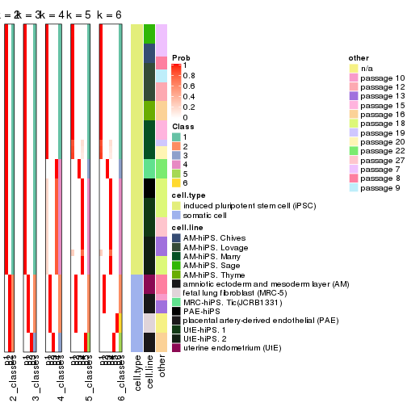
Test correlation between subgroups and known annotations. If the known annotation is numeric, one-way ANOVA test is applied, and if the known annotation is discrete, chi-squared contingency table test is applied.
test_to_known_factors(res)
#> n cell.type(p) cell.line(p) other(p) k
#> SD:pam 51 1.46e-11 9.31e-07 5.89e-03 2
#> SD:pam 51 8.42e-12 1.37e-11 3.29e-04 3
#> SD:pam 51 4.89e-11 2.26e-16 8.17e-08 4
#> SD:pam 51 2.23e-10 3.95e-21 4.56e-12 5
#> SD:pam 51 8.65e-10 7.10e-26 1.98e-15 6
If matrix rows can be associated to genes, consider to use GO_Enrichment(res,
...) to perform function enrichment for the signature genes.
The object with results only for a single top-value method and a single partition method can be extracted as:
res = res_list["SD", "mclust"]
# you can also extract it by
# res = res_list["SD:mclust"]
A summary of res and all the functions that can be applied to it:
res
#> A 'ConsensusPartition' object with k = 2, 3, 4, 5, 6.
#> On a matrix with 42764 rows and 51 columns.
#> Top rows (1000, 2000, 3000, 4000, 5000) are extracted by 'SD' method.
#> Subgroups are detected by 'mclust' method.
#> Performed in total 1250 partitions by row resampling.
#> Best k for subgroups seems to be 6.
#>
#> Following methods can be applied to this 'ConsensusPartition' object:
#> [1] "cola_report" "collect_classes" "collect_plots"
#> [4] "collect_stats" "colnames" "compare_signatures"
#> [7] "consensus_heatmap" "dimension_reduction" "functional_enrichment"
#> [10] "get_anno_col" "get_anno" "get_classes"
#> [13] "get_consensus" "get_matrix" "get_membership"
#> [16] "get_param" "get_signatures" "get_stats"
#> [19] "is_best_k" "is_stable_k" "membership_heatmap"
#> [22] "ncol" "nrow" "plot_ecdf"
#> [25] "rownames" "select_partition_number" "show"
#> [28] "suggest_best_k" "test_to_known_factors"
collect_plots() function collects all the plots made from res for all k (number of partitions)
into one single page to provide an easy and fast comparison between different k.
collect_plots(res)
The plots are:
k and the heatmap of
predicted classes for each k.k.k.k.All the plots in panels can be made by individual functions and they are plotted later in this section.
select_partition_number() produces several plots showing different
statistics for choosing “optimized” k. There are following statistics:
k;k, the area increased is defined as \(A_k - A_{k-1}\).The detailed explanations of these statistics can be found in the cola vignette.
Generally speaking, lower PAC score, higher mean silhouette score or higher
concordance corresponds to better partition. Rand index and Jaccard index
measure how similar the current partition is compared to partition with k-1.
If they are too similar, we won't accept k is better than k-1.
select_partition_number(res)
The numeric values for all these statistics can be obtained by get_stats().
get_stats(res)
#> k 1-PAC mean_silhouette concordance area_increased Rand Jaccard
#> 2 2 1.000 1.000 1.000 0.3677 0.633 0.633
#> 3 3 0.832 0.879 0.942 0.4017 0.834 0.742
#> 4 4 0.682 0.867 0.916 0.3283 0.756 0.522
#> 5 5 0.730 0.831 0.911 0.0535 0.993 0.975
#> 6 6 0.969 0.910 0.956 0.0704 0.958 0.849
suggest_best_k() suggests the best \(k\) based on these statistics. The rules are as follows:
NA.suggest_best_k(res)
#> [1] 6
#> attr(,"optional")
#> [1] 2
There is also optional best \(k\) = 2 that is worth to check.
Following shows the table of the partitions (You need to click the show/hide
code output link to see it). The membership matrix (columns with name p*)
is inferred by
clue::cl_consensus()
function with the SE method. Basically the value in the membership matrix
represents the probability to belong to a certain group. The finall class
label for an item is determined with the group with highest probability it
belongs to.
In get_classes() function, the entropy is calculated from the membership
matrix and the silhouette score is calculated from the consensus matrix.
cbind(get_classes(res, k = 2), get_membership(res, k = 2))
#> class entropy silhouette p1 p2
#> GSM520665 2 0 1 0 1
#> GSM520666 2 0 1 0 1
#> GSM520667 2 0 1 0 1
#> GSM520704 2 0 1 0 1
#> GSM520705 2 0 1 0 1
#> GSM520711 2 0 1 0 1
#> GSM520692 2 0 1 0 1
#> GSM520693 2 0 1 0 1
#> GSM520694 2 0 1 0 1
#> GSM520689 2 0 1 0 1
#> GSM520690 2 0 1 0 1
#> GSM520691 2 0 1 0 1
#> GSM520668 1 0 1 1 0
#> GSM520669 1 0 1 1 0
#> GSM520670 1 0 1 1 0
#> GSM520713 1 0 1 1 0
#> GSM520714 1 0 1 1 0
#> GSM520715 1 0 1 1 0
#> GSM520695 1 0 1 1 0
#> GSM520696 1 0 1 1 0
#> GSM520697 1 0 1 1 0
#> GSM520709 1 0 1 1 0
#> GSM520710 1 0 1 1 0
#> GSM520712 1 0 1 1 0
#> GSM520698 1 0 1 1 0
#> GSM520699 1 0 1 1 0
#> GSM520700 1 0 1 1 0
#> GSM520701 1 0 1 1 0
#> GSM520702 1 0 1 1 0
#> GSM520703 1 0 1 1 0
#> GSM520671 1 0 1 1 0
#> GSM520672 1 0 1 1 0
#> GSM520673 1 0 1 1 0
#> GSM520681 1 0 1 1 0
#> GSM520682 1 0 1 1 0
#> GSM520680 1 0 1 1 0
#> GSM520677 1 0 1 1 0
#> GSM520678 1 0 1 1 0
#> GSM520679 1 0 1 1 0
#> GSM520674 1 0 1 1 0
#> GSM520675 1 0 1 1 0
#> GSM520676 1 0 1 1 0
#> GSM520686 1 0 1 1 0
#> GSM520687 1 0 1 1 0
#> GSM520688 1 0 1 1 0
#> GSM520683 1 0 1 1 0
#> GSM520684 1 0 1 1 0
#> GSM520685 1 0 1 1 0
#> GSM520708 1 0 1 1 0
#> GSM520706 1 0 1 1 0
#> GSM520707 1 0 1 1 0
cbind(get_classes(res, k = 3), get_membership(res, k = 3))
#> class entropy silhouette p1 p2 p3
#> GSM520665 2 0.0000 1.000 0.000 1.000 0.000
#> GSM520666 2 0.0000 1.000 0.000 1.000 0.000
#> GSM520667 2 0.0000 1.000 0.000 1.000 0.000
#> GSM520704 3 0.4399 0.645 0.000 0.188 0.812
#> GSM520705 3 0.4399 0.645 0.000 0.188 0.812
#> GSM520711 3 0.4399 0.645 0.000 0.188 0.812
#> GSM520692 2 0.0000 1.000 0.000 1.000 0.000
#> GSM520693 2 0.0000 1.000 0.000 1.000 0.000
#> GSM520694 2 0.0000 1.000 0.000 1.000 0.000
#> GSM520689 2 0.0000 1.000 0.000 1.000 0.000
#> GSM520690 2 0.0000 1.000 0.000 1.000 0.000
#> GSM520691 2 0.0000 1.000 0.000 1.000 0.000
#> GSM520668 3 0.0424 0.720 0.008 0.000 0.992
#> GSM520669 3 0.0424 0.720 0.008 0.000 0.992
#> GSM520670 3 0.0424 0.720 0.008 0.000 0.992
#> GSM520713 1 0.3192 0.896 0.888 0.000 0.112
#> GSM520714 1 0.3192 0.896 0.888 0.000 0.112
#> GSM520715 1 0.3192 0.896 0.888 0.000 0.112
#> GSM520695 1 0.2448 0.918 0.924 0.000 0.076
#> GSM520696 1 0.2537 0.917 0.920 0.000 0.080
#> GSM520697 1 0.2448 0.918 0.924 0.000 0.076
#> GSM520709 1 0.3482 0.880 0.872 0.000 0.128
#> GSM520710 1 0.3551 0.876 0.868 0.000 0.132
#> GSM520712 1 0.3619 0.873 0.864 0.000 0.136
#> GSM520698 3 0.6062 0.325 0.384 0.000 0.616
#> GSM520699 3 0.6062 0.325 0.384 0.000 0.616
#> GSM520700 1 0.6126 0.369 0.600 0.000 0.400
#> GSM520701 1 0.2356 0.919 0.928 0.000 0.072
#> GSM520702 1 0.2796 0.911 0.908 0.000 0.092
#> GSM520703 1 0.2711 0.913 0.912 0.000 0.088
#> GSM520671 1 0.0000 0.948 1.000 0.000 0.000
#> GSM520672 1 0.0000 0.948 1.000 0.000 0.000
#> GSM520673 1 0.0000 0.948 1.000 0.000 0.000
#> GSM520681 1 0.0000 0.948 1.000 0.000 0.000
#> GSM520682 1 0.0000 0.948 1.000 0.000 0.000
#> GSM520680 1 0.0000 0.948 1.000 0.000 0.000
#> GSM520677 1 0.0000 0.948 1.000 0.000 0.000
#> GSM520678 1 0.0000 0.948 1.000 0.000 0.000
#> GSM520679 1 0.0000 0.948 1.000 0.000 0.000
#> GSM520674 1 0.0000 0.948 1.000 0.000 0.000
#> GSM520675 1 0.0000 0.948 1.000 0.000 0.000
#> GSM520676 1 0.0000 0.948 1.000 0.000 0.000
#> GSM520686 1 0.0000 0.948 1.000 0.000 0.000
#> GSM520687 1 0.0000 0.948 1.000 0.000 0.000
#> GSM520688 1 0.0000 0.948 1.000 0.000 0.000
#> GSM520683 1 0.0000 0.948 1.000 0.000 0.000
#> GSM520684 1 0.0000 0.948 1.000 0.000 0.000
#> GSM520685 1 0.0000 0.948 1.000 0.000 0.000
#> GSM520708 1 0.0000 0.948 1.000 0.000 0.000
#> GSM520706 1 0.0000 0.948 1.000 0.000 0.000
#> GSM520707 1 0.0000 0.948 1.000 0.000 0.000
cbind(get_classes(res, k = 4), get_membership(res, k = 4))
#> class entropy silhouette p1 p2 p3 p4
#> GSM520665 2 0.0000 1.000 0.000 1 0.000 0.000
#> GSM520666 2 0.0000 1.000 0.000 1 0.000 0.000
#> GSM520667 2 0.0000 1.000 0.000 1 0.000 0.000
#> GSM520704 3 0.0000 0.673 0.000 0 1.000 0.000
#> GSM520705 3 0.0000 0.673 0.000 0 1.000 0.000
#> GSM520711 3 0.0000 0.673 0.000 0 1.000 0.000
#> GSM520692 2 0.0000 1.000 0.000 1 0.000 0.000
#> GSM520693 2 0.0000 1.000 0.000 1 0.000 0.000
#> GSM520694 2 0.0000 1.000 0.000 1 0.000 0.000
#> GSM520689 2 0.0000 1.000 0.000 1 0.000 0.000
#> GSM520690 2 0.0000 1.000 0.000 1 0.000 0.000
#> GSM520691 2 0.0000 1.000 0.000 1 0.000 0.000
#> GSM520668 3 0.4999 0.563 0.000 0 0.508 0.492
#> GSM520669 3 0.4999 0.563 0.000 0 0.508 0.492
#> GSM520670 3 0.4999 0.563 0.000 0 0.508 0.492
#> GSM520713 4 0.1637 0.852 0.060 0 0.000 0.940
#> GSM520714 4 0.1637 0.852 0.060 0 0.000 0.940
#> GSM520715 4 0.1637 0.852 0.060 0 0.000 0.940
#> GSM520695 4 0.3266 0.903 0.168 0 0.000 0.832
#> GSM520696 4 0.3219 0.902 0.164 0 0.000 0.836
#> GSM520697 4 0.3266 0.903 0.168 0 0.000 0.832
#> GSM520709 4 0.3266 0.903 0.168 0 0.000 0.832
#> GSM520710 4 0.3266 0.903 0.168 0 0.000 0.832
#> GSM520712 4 0.3266 0.903 0.168 0 0.000 0.832
#> GSM520698 4 0.0336 0.780 0.008 0 0.000 0.992
#> GSM520699 4 0.0336 0.780 0.008 0 0.000 0.992
#> GSM520700 4 0.0336 0.780 0.008 0 0.000 0.992
#> GSM520701 4 0.3266 0.903 0.168 0 0.000 0.832
#> GSM520702 4 0.3266 0.903 0.168 0 0.000 0.832
#> GSM520703 4 0.3266 0.903 0.168 0 0.000 0.832
#> GSM520671 1 0.0592 0.924 0.984 0 0.000 0.016
#> GSM520672 1 0.3356 0.779 0.824 0 0.000 0.176
#> GSM520673 1 0.0000 0.934 1.000 0 0.000 0.000
#> GSM520681 1 0.0188 0.932 0.996 0 0.000 0.004
#> GSM520682 1 0.0000 0.934 1.000 0 0.000 0.000
#> GSM520680 1 0.2408 0.840 0.896 0 0.000 0.104
#> GSM520677 1 0.0188 0.932 0.996 0 0.000 0.004
#> GSM520678 1 0.0000 0.934 1.000 0 0.000 0.000
#> GSM520679 1 0.0000 0.934 1.000 0 0.000 0.000
#> GSM520674 1 0.0000 0.934 1.000 0 0.000 0.000
#> GSM520675 1 0.0000 0.934 1.000 0 0.000 0.000
#> GSM520676 1 0.0000 0.934 1.000 0 0.000 0.000
#> GSM520686 1 0.0000 0.934 1.000 0 0.000 0.000
#> GSM520687 1 0.0000 0.934 1.000 0 0.000 0.000
#> GSM520688 1 0.0000 0.934 1.000 0 0.000 0.000
#> GSM520683 1 0.0336 0.930 0.992 0 0.000 0.008
#> GSM520684 1 0.0336 0.930 0.992 0 0.000 0.008
#> GSM520685 1 0.0336 0.930 0.992 0 0.000 0.008
#> GSM520708 1 0.4134 0.642 0.740 0 0.000 0.260
#> GSM520706 1 0.4134 0.642 0.740 0 0.000 0.260
#> GSM520707 1 0.4134 0.642 0.740 0 0.000 0.260
cbind(get_classes(res, k = 5), get_membership(res, k = 5))
#> class entropy silhouette p1 p2 p3 p4 p5
#> GSM520665 2 0.0000 1.000 0.000 1 0.000 0.000 0
#> GSM520666 2 0.0000 1.000 0.000 1 0.000 0.000 0
#> GSM520667 2 0.0000 1.000 0.000 1 0.000 0.000 0
#> GSM520704 5 0.0000 1.000 0.000 0 0.000 0.000 1
#> GSM520705 5 0.0000 1.000 0.000 0 0.000 0.000 1
#> GSM520711 5 0.0000 1.000 0.000 0 0.000 0.000 1
#> GSM520692 2 0.0000 1.000 0.000 1 0.000 0.000 0
#> GSM520693 2 0.0000 1.000 0.000 1 0.000 0.000 0
#> GSM520694 2 0.0000 1.000 0.000 1 0.000 0.000 0
#> GSM520689 2 0.0000 1.000 0.000 1 0.000 0.000 0
#> GSM520690 2 0.0000 1.000 0.000 1 0.000 0.000 0
#> GSM520691 2 0.0000 1.000 0.000 1 0.000 0.000 0
#> GSM520668 3 0.4101 1.000 0.000 0 0.628 0.372 0
#> GSM520669 3 0.4101 1.000 0.000 0 0.628 0.372 0
#> GSM520670 3 0.4101 1.000 0.000 0 0.628 0.372 0
#> GSM520713 4 0.0000 0.422 0.000 0 0.000 1.000 0
#> GSM520714 4 0.0000 0.422 0.000 0 0.000 1.000 0
#> GSM520715 4 0.0000 0.422 0.000 0 0.000 1.000 0
#> GSM520695 4 0.6074 0.740 0.128 0 0.372 0.500 0
#> GSM520696 4 0.6074 0.740 0.128 0 0.372 0.500 0
#> GSM520697 4 0.6074 0.740 0.128 0 0.372 0.500 0
#> GSM520709 4 0.6100 0.739 0.132 0 0.368 0.500 0
#> GSM520710 4 0.6100 0.739 0.132 0 0.368 0.500 0
#> GSM520712 4 0.6100 0.739 0.132 0 0.368 0.500 0
#> GSM520698 4 0.0955 0.381 0.004 0 0.028 0.968 0
#> GSM520699 4 0.0955 0.381 0.004 0 0.028 0.968 0
#> GSM520700 4 0.0955 0.381 0.004 0 0.028 0.968 0
#> GSM520701 4 0.6100 0.738 0.132 0 0.368 0.500 0
#> GSM520702 4 0.6074 0.740 0.128 0 0.372 0.500 0
#> GSM520703 4 0.6074 0.740 0.128 0 0.372 0.500 0
#> GSM520671 1 0.0000 0.934 1.000 0 0.000 0.000 0
#> GSM520672 1 0.3239 0.792 0.852 0 0.068 0.080 0
#> GSM520673 1 0.0162 0.933 0.996 0 0.004 0.000 0
#> GSM520681 1 0.0000 0.934 1.000 0 0.000 0.000 0
#> GSM520682 1 0.0162 0.933 0.996 0 0.004 0.000 0
#> GSM520680 1 0.0162 0.932 0.996 0 0.000 0.004 0
#> GSM520677 1 0.0162 0.933 0.996 0 0.004 0.000 0
#> GSM520678 1 0.0000 0.934 1.000 0 0.000 0.000 0
#> GSM520679 1 0.0000 0.934 1.000 0 0.000 0.000 0
#> GSM520674 1 0.0000 0.934 1.000 0 0.000 0.000 0
#> GSM520675 1 0.0000 0.934 1.000 0 0.000 0.000 0
#> GSM520676 1 0.0000 0.934 1.000 0 0.000 0.000 0
#> GSM520686 1 0.0000 0.934 1.000 0 0.000 0.000 0
#> GSM520687 1 0.0000 0.934 1.000 0 0.000 0.000 0
#> GSM520688 1 0.0000 0.934 1.000 0 0.000 0.000 0
#> GSM520683 1 0.0000 0.934 1.000 0 0.000 0.000 0
#> GSM520684 1 0.0671 0.923 0.980 0 0.016 0.004 0
#> GSM520685 1 0.0162 0.933 0.996 0 0.004 0.000 0
#> GSM520708 1 0.4229 0.550 0.704 0 0.020 0.276 0
#> GSM520706 1 0.4229 0.550 0.704 0 0.020 0.276 0
#> GSM520707 1 0.4229 0.550 0.704 0 0.020 0.276 0
cbind(get_classes(res, k = 6), get_membership(res, k = 6))
#> class entropy silhouette p1 p2 p3 p4 p5 p6
#> GSM520665 2 0.1007 0.971 0.000 0.956 0.044 0.000 0 0.000
#> GSM520666 2 0.1007 0.971 0.000 0.956 0.044 0.000 0 0.000
#> GSM520667 2 0.1007 0.971 0.000 0.956 0.044 0.000 0 0.000
#> GSM520704 5 0.0000 1.000 0.000 0.000 0.000 0.000 1 0.000
#> GSM520705 5 0.0000 1.000 0.000 0.000 0.000 0.000 1 0.000
#> GSM520711 5 0.0000 1.000 0.000 0.000 0.000 0.000 1 0.000
#> GSM520692 2 0.0000 0.986 0.000 1.000 0.000 0.000 0 0.000
#> GSM520693 2 0.0000 0.986 0.000 1.000 0.000 0.000 0 0.000
#> GSM520694 2 0.0000 0.986 0.000 1.000 0.000 0.000 0 0.000
#> GSM520689 2 0.0000 0.986 0.000 1.000 0.000 0.000 0 0.000
#> GSM520690 2 0.0000 0.986 0.000 1.000 0.000 0.000 0 0.000
#> GSM520691 2 0.0000 0.986 0.000 1.000 0.000 0.000 0 0.000
#> GSM520668 3 0.1007 1.000 0.000 0.000 0.956 0.000 0 0.044
#> GSM520669 3 0.1007 1.000 0.000 0.000 0.956 0.000 0 0.044
#> GSM520670 3 0.1007 1.000 0.000 0.000 0.956 0.000 0 0.044
#> GSM520713 6 0.1556 0.931 0.000 0.000 0.000 0.080 0 0.920
#> GSM520714 6 0.1556 0.931 0.000 0.000 0.000 0.080 0 0.920
#> GSM520715 6 0.1556 0.931 0.000 0.000 0.000 0.080 0 0.920
#> GSM520695 4 0.1075 0.958 0.000 0.000 0.000 0.952 0 0.048
#> GSM520696 4 0.1075 0.958 0.000 0.000 0.000 0.952 0 0.048
#> GSM520697 4 0.1075 0.958 0.000 0.000 0.000 0.952 0 0.048
#> GSM520709 4 0.0146 0.977 0.004 0.000 0.000 0.996 0 0.000
#> GSM520710 4 0.0146 0.977 0.004 0.000 0.000 0.996 0 0.000
#> GSM520712 4 0.0146 0.977 0.004 0.000 0.000 0.996 0 0.000
#> GSM520698 6 0.0000 0.930 0.000 0.000 0.000 0.000 0 1.000
#> GSM520699 6 0.0000 0.930 0.000 0.000 0.000 0.000 0 1.000
#> GSM520700 6 0.0000 0.930 0.000 0.000 0.000 0.000 0 1.000
#> GSM520701 4 0.0000 0.977 0.000 0.000 0.000 1.000 0 0.000
#> GSM520702 4 0.0000 0.977 0.000 0.000 0.000 1.000 0 0.000
#> GSM520703 4 0.0000 0.977 0.000 0.000 0.000 1.000 0 0.000
#> GSM520671 1 0.0260 0.908 0.992 0.000 0.000 0.000 0 0.008
#> GSM520672 1 0.3210 0.733 0.804 0.000 0.000 0.168 0 0.028
#> GSM520673 1 0.0405 0.908 0.988 0.000 0.000 0.004 0 0.008
#> GSM520681 1 0.0260 0.910 0.992 0.000 0.000 0.008 0 0.000
#> GSM520682 1 0.0260 0.910 0.992 0.000 0.000 0.008 0 0.000
#> GSM520680 1 0.0146 0.910 0.996 0.000 0.000 0.004 0 0.000
#> GSM520677 1 0.0260 0.910 0.992 0.000 0.000 0.008 0 0.000
#> GSM520678 1 0.0000 0.911 1.000 0.000 0.000 0.000 0 0.000
#> GSM520679 1 0.0000 0.911 1.000 0.000 0.000 0.000 0 0.000
#> GSM520674 1 0.0000 0.911 1.000 0.000 0.000 0.000 0 0.000
#> GSM520675 1 0.0000 0.911 1.000 0.000 0.000 0.000 0 0.000
#> GSM520676 1 0.0000 0.911 1.000 0.000 0.000 0.000 0 0.000
#> GSM520686 1 0.0000 0.911 1.000 0.000 0.000 0.000 0 0.000
#> GSM520687 1 0.0000 0.911 1.000 0.000 0.000 0.000 0 0.000
#> GSM520688 1 0.0000 0.911 1.000 0.000 0.000 0.000 0 0.000
#> GSM520683 1 0.0260 0.910 0.992 0.000 0.000 0.008 0 0.000
#> GSM520684 1 0.0935 0.893 0.964 0.000 0.000 0.032 0 0.004
#> GSM520685 1 0.0363 0.909 0.988 0.000 0.000 0.012 0 0.000
#> GSM520708 1 0.3797 0.365 0.580 0.000 0.000 0.420 0 0.000
#> GSM520706 1 0.3804 0.357 0.576 0.000 0.000 0.424 0 0.000
#> GSM520707 1 0.3797 0.365 0.580 0.000 0.000 0.420 0 0.000
Heatmaps for the consensus matrix. It visualizes the probability of two samples to be in a same group.
consensus_heatmap(res, k = 2)

consensus_heatmap(res, k = 3)
consensus_heatmap(res, k = 4)
consensus_heatmap(res, k = 5)
consensus_heatmap(res, k = 6)
Heatmaps for the membership of samples in all partitions to see how consistent they are:
membership_heatmap(res, k = 2)

membership_heatmap(res, k = 3)

membership_heatmap(res, k = 4)
membership_heatmap(res, k = 5)
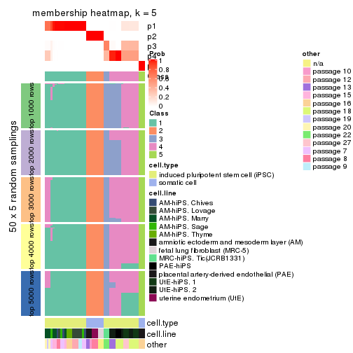
membership_heatmap(res, k = 6)
As soon as we have had the classes for columns, we can look for signatures which are significantly different between classes which can be candidate marks for certain classes. Following are the heatmaps for signatures.
Signature heatmaps where rows are scaled:
get_signatures(res, k = 2)

get_signatures(res, k = 3)
get_signatures(res, k = 4)
get_signatures(res, k = 5)
#> Error in mat[ceiling(1:nr/h_ratio), ceiling(1:nc/w_ratio), drop = FALSE]: subscript out of bounds
get_signatures(res, k = 6)
#> Error in mat[ceiling(1:nr/h_ratio), ceiling(1:nc/w_ratio), drop = FALSE]: subscript out of bounds
Signature heatmaps where rows are not scaled:
get_signatures(res, k = 2, scale_rows = FALSE)

get_signatures(res, k = 3, scale_rows = FALSE)
get_signatures(res, k = 4, scale_rows = FALSE)
get_signatures(res, k = 5, scale_rows = FALSE)
get_signatures(res, k = 6, scale_rows = FALSE)
Compare the overlap of signatures from different k:
compare_signatures(res)
get_signature() returns a data frame invisibly. TO get the list of signatures, the function
call should be assigned to a variable explicitly. In following code, if plot argument is set
to FALSE, no heatmap is plotted while only the differential analysis is performed.
# code only for demonstration
tb = get_signature(res, k = ..., plot = FALSE)
An example of the output of tb is:
#> which_row fdr mean_1 mean_2 scaled_mean_1 scaled_mean_2 km
#> 1 38 0.042760348 8.373488 9.131774 -0.5533452 0.5164555 1
#> 2 40 0.018707592 7.106213 8.469186 -0.6173731 0.5762149 1
#> 3 55 0.019134737 10.221463 11.207825 -0.6159697 0.5749050 1
#> 4 59 0.006059896 5.921854 7.869574 -0.6899429 0.6439467 1
#> 5 60 0.018055526 8.928898 10.211722 -0.6204761 0.5791110 1
#> 6 98 0.009384629 15.714769 14.887706 0.6635654 -0.6193277 2
...
The columns in tb are:
which_row: row indices corresponding to the input matrix.fdr: FDR for the differential test. mean_x: The mean value in group x.scaled_mean_x: The mean value in group x after rows are scaled.km: Row groups if k-means clustering is applied to rows.UMAP plot which shows how samples are separated.
dimension_reduction(res, k = 2, method = "UMAP")

dimension_reduction(res, k = 3, method = "UMAP")
dimension_reduction(res, k = 4, method = "UMAP")
dimension_reduction(res, k = 5, method = "UMAP")
dimension_reduction(res, k = 6, method = "UMAP")
Following heatmap shows how subgroups are split when increasing k:
collect_classes(res)
Test correlation between subgroups and known annotations. If the known annotation is numeric, one-way ANOVA test is applied, and if the known annotation is discrete, chi-squared contingency table test is applied.
test_to_known_factors(res)
#> n cell.type(p) cell.line(p) other(p) k
#> SD:mclust 51 1.46e-11 9.31e-07 5.89e-03 2
#> SD:mclust 48 2.06e-09 1.43e-10 1.91e-06 3
#> SD:mclust 51 2.90e-09 2.26e-16 1.42e-09 4
#> SD:mclust 45 3.98e-09 2.28e-18 8.09e-11 5
#> SD:mclust 48 3.55e-09 4.10e-20 3.79e-12 6
If matrix rows can be associated to genes, consider to use GO_Enrichment(res,
...) to perform function enrichment for the signature genes.
The object with results only for a single top-value method and a single partition method can be extracted as:
res = res_list["SD", "NMF"]
# you can also extract it by
# res = res_list["SD:NMF"]
A summary of res and all the functions that can be applied to it:
res
#> A 'ConsensusPartition' object with k = 2, 3, 4, 5, 6.
#> On a matrix with 42764 rows and 51 columns.
#> Top rows (1000, 2000, 3000, 4000, 5000) are extracted by 'SD' method.
#> Subgroups are detected by 'NMF' method.
#> Performed in total 1250 partitions by row resampling.
#> Best k for subgroups seems to be 2.
#>
#> Following methods can be applied to this 'ConsensusPartition' object:
#> [1] "cola_report" "collect_classes" "collect_plots"
#> [4] "collect_stats" "colnames" "compare_signatures"
#> [7] "consensus_heatmap" "dimension_reduction" "functional_enrichment"
#> [10] "get_anno_col" "get_anno" "get_classes"
#> [13] "get_consensus" "get_matrix" "get_membership"
#> [16] "get_param" "get_signatures" "get_stats"
#> [19] "is_best_k" "is_stable_k" "membership_heatmap"
#> [22] "ncol" "nrow" "plot_ecdf"
#> [25] "rownames" "select_partition_number" "show"
#> [28] "suggest_best_k" "test_to_known_factors"
collect_plots() function collects all the plots made from res for all k (number of partitions)
into one single page to provide an easy and fast comparison between different k.
collect_plots(res)
The plots are:
k and the heatmap of
predicted classes for each k.k.k.k.All the plots in panels can be made by individual functions and they are plotted later in this section.
select_partition_number() produces several plots showing different
statistics for choosing “optimized” k. There are following statistics:
k;k, the area increased is defined as \(A_k - A_{k-1}\).The detailed explanations of these statistics can be found in the cola vignette.
Generally speaking, lower PAC score, higher mean silhouette score or higher
concordance corresponds to better partition. Rand index and Jaccard index
measure how similar the current partition is compared to partition with k-1.
If they are too similar, we won't accept k is better than k-1.
select_partition_number(res)
The numeric values for all these statistics can be obtained by get_stats().
get_stats(res)
#> k 1-PAC mean_silhouette concordance area_increased Rand Jaccard
#> 2 2 1.000 1.000 1.000 0.3677 0.633 0.633
#> 3 3 0.597 0.656 0.768 0.5062 0.746 0.599
#> 4 4 0.737 0.839 0.914 0.2006 0.824 0.595
#> 5 5 0.761 0.757 0.880 0.0886 0.965 0.888
#> 6 6 0.751 0.778 0.864 0.0422 1.000 1.000
suggest_best_k() suggests the best \(k\) based on these statistics. The rules are as follows:
NA.suggest_best_k(res)
#> [1] 2
Following shows the table of the partitions (You need to click the show/hide
code output link to see it). The membership matrix (columns with name p*)
is inferred by
clue::cl_consensus()
function with the SE method. Basically the value in the membership matrix
represents the probability to belong to a certain group. The finall class
label for an item is determined with the group with highest probability it
belongs to.
In get_classes() function, the entropy is calculated from the membership
matrix and the silhouette score is calculated from the consensus matrix.
cbind(get_classes(res, k = 2), get_membership(res, k = 2))
#> class entropy silhouette p1 p2
#> GSM520665 2 0 1 0 1
#> GSM520666 2 0 1 0 1
#> GSM520667 2 0 1 0 1
#> GSM520704 2 0 1 0 1
#> GSM520705 2 0 1 0 1
#> GSM520711 2 0 1 0 1
#> GSM520692 2 0 1 0 1
#> GSM520693 2 0 1 0 1
#> GSM520694 2 0 1 0 1
#> GSM520689 2 0 1 0 1
#> GSM520690 2 0 1 0 1
#> GSM520691 2 0 1 0 1
#> GSM520668 1 0 1 1 0
#> GSM520669 1 0 1 1 0
#> GSM520670 1 0 1 1 0
#> GSM520713 1 0 1 1 0
#> GSM520714 1 0 1 1 0
#> GSM520715 1 0 1 1 0
#> GSM520695 1 0 1 1 0
#> GSM520696 1 0 1 1 0
#> GSM520697 1 0 1 1 0
#> GSM520709 1 0 1 1 0
#> GSM520710 1 0 1 1 0
#> GSM520712 1 0 1 1 0
#> GSM520698 1 0 1 1 0
#> GSM520699 1 0 1 1 0
#> GSM520700 1 0 1 1 0
#> GSM520701 1 0 1 1 0
#> GSM520702 1 0 1 1 0
#> GSM520703 1 0 1 1 0
#> GSM520671 1 0 1 1 0
#> GSM520672 1 0 1 1 0
#> GSM520673 1 0 1 1 0
#> GSM520681 1 0 1 1 0
#> GSM520682 1 0 1 1 0
#> GSM520680 1 0 1 1 0
#> GSM520677 1 0 1 1 0
#> GSM520678 1 0 1 1 0
#> GSM520679 1 0 1 1 0
#> GSM520674 1 0 1 1 0
#> GSM520675 1 0 1 1 0
#> GSM520676 1 0 1 1 0
#> GSM520686 1 0 1 1 0
#> GSM520687 1 0 1 1 0
#> GSM520688 1 0 1 1 0
#> GSM520683 1 0 1 1 0
#> GSM520684 1 0 1 1 0
#> GSM520685 1 0 1 1 0
#> GSM520708 1 0 1 1 0
#> GSM520706 1 0 1 1 0
#> GSM520707 1 0 1 1 0
cbind(get_classes(res, k = 3), get_membership(res, k = 3))
#> class entropy silhouette p1 p2 p3
#> GSM520665 2 0.000 0.95172 0.000 1.000 0.000
#> GSM520666 2 0.000 0.95172 0.000 1.000 0.000
#> GSM520667 2 0.000 0.95172 0.000 1.000 0.000
#> GSM520704 2 0.536 0.84751 0.000 0.724 0.276
#> GSM520705 2 0.536 0.84751 0.000 0.724 0.276
#> GSM520711 2 0.536 0.84751 0.000 0.724 0.276
#> GSM520692 2 0.000 0.95172 0.000 1.000 0.000
#> GSM520693 2 0.000 0.95172 0.000 1.000 0.000
#> GSM520694 2 0.000 0.95172 0.000 1.000 0.000
#> GSM520689 2 0.000 0.95172 0.000 1.000 0.000
#> GSM520690 2 0.000 0.95172 0.000 1.000 0.000
#> GSM520691 2 0.000 0.95172 0.000 1.000 0.000
#> GSM520668 3 0.583 0.92107 0.340 0.000 0.660
#> GSM520669 3 0.583 0.92107 0.340 0.000 0.660
#> GSM520670 3 0.583 0.92107 0.340 0.000 0.660
#> GSM520713 3 0.583 0.92107 0.340 0.000 0.660
#> GSM520714 3 0.583 0.92107 0.340 0.000 0.660
#> GSM520715 3 0.583 0.92107 0.340 0.000 0.660
#> GSM520695 1 0.624 -0.42978 0.560 0.000 0.440
#> GSM520696 3 0.631 0.65392 0.488 0.000 0.512
#> GSM520697 1 0.627 -0.49375 0.544 0.000 0.456
#> GSM520709 1 0.614 -0.27711 0.596 0.000 0.404
#> GSM520710 1 0.614 -0.27711 0.596 0.000 0.404
#> GSM520712 1 0.614 -0.27711 0.596 0.000 0.404
#> GSM520698 3 0.583 0.92107 0.340 0.000 0.660
#> GSM520699 3 0.583 0.92107 0.340 0.000 0.660
#> GSM520700 3 0.583 0.92107 0.340 0.000 0.660
#> GSM520701 1 0.619 -0.34610 0.580 0.000 0.420
#> GSM520702 3 0.630 0.69090 0.476 0.000 0.524
#> GSM520703 3 0.629 0.72048 0.464 0.000 0.536
#> GSM520671 1 0.000 0.76570 1.000 0.000 0.000
#> GSM520672 1 0.000 0.76570 1.000 0.000 0.000
#> GSM520673 1 0.000 0.76570 1.000 0.000 0.000
#> GSM520681 1 0.000 0.76570 1.000 0.000 0.000
#> GSM520682 1 0.000 0.76570 1.000 0.000 0.000
#> GSM520680 1 0.000 0.76570 1.000 0.000 0.000
#> GSM520677 1 0.000 0.76570 1.000 0.000 0.000
#> GSM520678 1 0.000 0.76570 1.000 0.000 0.000
#> GSM520679 1 0.000 0.76570 1.000 0.000 0.000
#> GSM520674 1 0.000 0.76570 1.000 0.000 0.000
#> GSM520675 1 0.000 0.76570 1.000 0.000 0.000
#> GSM520676 1 0.000 0.76570 1.000 0.000 0.000
#> GSM520686 1 0.000 0.76570 1.000 0.000 0.000
#> GSM520687 1 0.000 0.76570 1.000 0.000 0.000
#> GSM520688 1 0.000 0.76570 1.000 0.000 0.000
#> GSM520683 1 0.000 0.76570 1.000 0.000 0.000
#> GSM520684 1 0.000 0.76570 1.000 0.000 0.000
#> GSM520685 1 0.000 0.76570 1.000 0.000 0.000
#> GSM520708 1 0.610 -0.23139 0.608 0.000 0.392
#> GSM520706 1 0.581 0.00515 0.664 0.000 0.336
#> GSM520707 1 0.394 0.55038 0.844 0.000 0.156
cbind(get_classes(res, k = 4), get_membership(res, k = 4))
#> class entropy silhouette p1 p2 p3 p4
#> GSM520665 2 0.0000 1.000 0.000 1.000 0.000 0.000
#> GSM520666 2 0.0000 1.000 0.000 1.000 0.000 0.000
#> GSM520667 2 0.0000 1.000 0.000 1.000 0.000 0.000
#> GSM520704 3 0.2760 1.000 0.000 0.128 0.872 0.000
#> GSM520705 3 0.2760 1.000 0.000 0.128 0.872 0.000
#> GSM520711 3 0.2760 1.000 0.000 0.128 0.872 0.000
#> GSM520692 2 0.0000 1.000 0.000 1.000 0.000 0.000
#> GSM520693 2 0.0000 1.000 0.000 1.000 0.000 0.000
#> GSM520694 2 0.0000 1.000 0.000 1.000 0.000 0.000
#> GSM520689 2 0.0000 1.000 0.000 1.000 0.000 0.000
#> GSM520690 2 0.0000 1.000 0.000 1.000 0.000 0.000
#> GSM520691 2 0.0000 1.000 0.000 1.000 0.000 0.000
#> GSM520668 4 0.2319 0.776 0.036 0.000 0.040 0.924
#> GSM520669 4 0.2411 0.774 0.040 0.000 0.040 0.920
#> GSM520670 4 0.2319 0.776 0.036 0.000 0.040 0.924
#> GSM520713 4 0.1042 0.788 0.008 0.000 0.020 0.972
#> GSM520714 4 0.1042 0.788 0.008 0.000 0.020 0.972
#> GSM520715 4 0.1042 0.788 0.008 0.000 0.020 0.972
#> GSM520695 4 0.4428 0.720 0.276 0.000 0.004 0.720
#> GSM520696 4 0.3494 0.789 0.172 0.000 0.004 0.824
#> GSM520697 4 0.4343 0.733 0.264 0.000 0.004 0.732
#> GSM520709 4 0.4889 0.597 0.360 0.000 0.004 0.636
#> GSM520710 4 0.4905 0.590 0.364 0.000 0.004 0.632
#> GSM520712 4 0.4872 0.604 0.356 0.000 0.004 0.640
#> GSM520698 4 0.0927 0.788 0.008 0.000 0.016 0.976
#> GSM520699 4 0.0927 0.788 0.008 0.000 0.016 0.976
#> GSM520700 4 0.0927 0.788 0.008 0.000 0.016 0.976
#> GSM520701 4 0.4283 0.741 0.256 0.000 0.004 0.740
#> GSM520702 4 0.3208 0.796 0.148 0.000 0.004 0.848
#> GSM520703 4 0.3208 0.796 0.148 0.000 0.004 0.848
#> GSM520671 1 0.0000 0.931 1.000 0.000 0.000 0.000
#> GSM520672 1 0.0000 0.931 1.000 0.000 0.000 0.000
#> GSM520673 1 0.0000 0.931 1.000 0.000 0.000 0.000
#> GSM520681 1 0.0000 0.931 1.000 0.000 0.000 0.000
#> GSM520682 1 0.0000 0.931 1.000 0.000 0.000 0.000
#> GSM520680 1 0.0000 0.931 1.000 0.000 0.000 0.000
#> GSM520677 1 0.0000 0.931 1.000 0.000 0.000 0.000
#> GSM520678 1 0.0000 0.931 1.000 0.000 0.000 0.000
#> GSM520679 1 0.0000 0.931 1.000 0.000 0.000 0.000
#> GSM520674 1 0.0000 0.931 1.000 0.000 0.000 0.000
#> GSM520675 1 0.0000 0.931 1.000 0.000 0.000 0.000
#> GSM520676 1 0.0000 0.931 1.000 0.000 0.000 0.000
#> GSM520686 1 0.0000 0.931 1.000 0.000 0.000 0.000
#> GSM520687 1 0.0000 0.931 1.000 0.000 0.000 0.000
#> GSM520688 1 0.0000 0.931 1.000 0.000 0.000 0.000
#> GSM520683 1 0.0000 0.931 1.000 0.000 0.000 0.000
#> GSM520684 1 0.0000 0.931 1.000 0.000 0.000 0.000
#> GSM520685 1 0.0000 0.931 1.000 0.000 0.000 0.000
#> GSM520708 1 0.4999 -0.249 0.508 0.000 0.000 0.492
#> GSM520706 1 0.4776 0.218 0.624 0.000 0.000 0.376
#> GSM520707 1 0.3764 0.636 0.784 0.000 0.000 0.216
cbind(get_classes(res, k = 5), get_membership(res, k = 5))
#> class entropy silhouette p1 p2 p3 p4 p5
#> GSM520665 2 0.0404 0.991 0.000 0.988 0.012 0.000 0
#> GSM520666 2 0.0404 0.991 0.000 0.988 0.012 0.000 0
#> GSM520667 2 0.0404 0.991 0.000 0.988 0.012 0.000 0
#> GSM520704 5 0.0000 1.000 0.000 0.000 0.000 0.000 1
#> GSM520705 5 0.0000 1.000 0.000 0.000 0.000 0.000 1
#> GSM520711 5 0.0000 1.000 0.000 0.000 0.000 0.000 1
#> GSM520692 2 0.0000 0.993 0.000 1.000 0.000 0.000 0
#> GSM520693 2 0.0000 0.993 0.000 1.000 0.000 0.000 0
#> GSM520694 2 0.0000 0.993 0.000 1.000 0.000 0.000 0
#> GSM520689 2 0.0290 0.992 0.000 0.992 0.008 0.000 0
#> GSM520690 2 0.0290 0.992 0.000 0.992 0.008 0.000 0
#> GSM520691 2 0.0290 0.992 0.000 0.992 0.008 0.000 0
#> GSM520668 3 0.3177 1.000 0.000 0.000 0.792 0.208 0
#> GSM520669 3 0.3177 1.000 0.000 0.000 0.792 0.208 0
#> GSM520670 3 0.3177 1.000 0.000 0.000 0.792 0.208 0
#> GSM520713 4 0.3790 0.359 0.004 0.000 0.272 0.724 0
#> GSM520714 4 0.3521 0.422 0.004 0.000 0.232 0.764 0
#> GSM520715 4 0.3550 0.417 0.004 0.000 0.236 0.760 0
#> GSM520695 4 0.2605 0.714 0.148 0.000 0.000 0.852 0
#> GSM520696 4 0.2561 0.715 0.144 0.000 0.000 0.856 0
#> GSM520697 4 0.2605 0.714 0.148 0.000 0.000 0.852 0
#> GSM520709 4 0.2773 0.707 0.164 0.000 0.000 0.836 0
#> GSM520710 4 0.2852 0.701 0.172 0.000 0.000 0.828 0
#> GSM520712 4 0.2930 0.707 0.164 0.000 0.004 0.832 0
#> GSM520698 4 0.4242 -0.266 0.000 0.000 0.428 0.572 0
#> GSM520699 4 0.4268 -0.304 0.000 0.000 0.444 0.556 0
#> GSM520700 4 0.4273 -0.315 0.000 0.000 0.448 0.552 0
#> GSM520701 4 0.2707 0.711 0.132 0.000 0.008 0.860 0
#> GSM520702 4 0.2351 0.693 0.088 0.000 0.016 0.896 0
#> GSM520703 4 0.2351 0.693 0.088 0.000 0.016 0.896 0
#> GSM520671 1 0.0451 0.903 0.988 0.000 0.008 0.004 0
#> GSM520672 1 0.0671 0.897 0.980 0.000 0.016 0.004 0
#> GSM520673 1 0.0451 0.903 0.988 0.000 0.008 0.004 0
#> GSM520681 1 0.1270 0.891 0.948 0.000 0.000 0.052 0
#> GSM520682 1 0.0963 0.901 0.964 0.000 0.000 0.036 0
#> GSM520680 1 0.0451 0.903 0.988 0.000 0.008 0.004 0
#> GSM520677 1 0.1478 0.879 0.936 0.000 0.000 0.064 0
#> GSM520678 1 0.0880 0.903 0.968 0.000 0.000 0.032 0
#> GSM520679 1 0.0880 0.903 0.968 0.000 0.000 0.032 0
#> GSM520674 1 0.0609 0.907 0.980 0.000 0.000 0.020 0
#> GSM520675 1 0.0609 0.907 0.980 0.000 0.000 0.020 0
#> GSM520676 1 0.0510 0.907 0.984 0.000 0.000 0.016 0
#> GSM520686 1 0.0000 0.908 1.000 0.000 0.000 0.000 0
#> GSM520687 1 0.0000 0.908 1.000 0.000 0.000 0.000 0
#> GSM520688 1 0.0000 0.908 1.000 0.000 0.000 0.000 0
#> GSM520683 1 0.0290 0.908 0.992 0.000 0.000 0.008 0
#> GSM520684 1 0.0000 0.908 1.000 0.000 0.000 0.000 0
#> GSM520685 1 0.0000 0.908 1.000 0.000 0.000 0.000 0
#> GSM520708 1 0.4249 0.199 0.568 0.000 0.000 0.432 0
#> GSM520706 1 0.4235 0.225 0.576 0.000 0.000 0.424 0
#> GSM520707 1 0.4114 0.355 0.624 0.000 0.000 0.376 0
cbind(get_classes(res, k = 6), get_membership(res, k = 6))
#> class entropy silhouette p1 p2 p3 p4 p5 p6
#> GSM520665 2 0.2520 0.882 0.000 0.844 0.000 0.000 0.004 0.152
#> GSM520666 2 0.2520 0.882 0.000 0.844 0.000 0.000 0.004 0.152
#> GSM520667 2 0.2558 0.879 0.000 0.840 0.000 0.000 0.004 0.156
#> GSM520704 5 0.0000 1.000 0.000 0.000 0.000 0.000 1.000 0.000
#> GSM520705 5 0.0000 1.000 0.000 0.000 0.000 0.000 1.000 0.000
#> GSM520711 5 0.0000 1.000 0.000 0.000 0.000 0.000 1.000 0.000
#> GSM520692 2 0.0146 0.930 0.000 0.996 0.000 0.000 0.000 0.004
#> GSM520693 2 0.0146 0.930 0.000 0.996 0.000 0.000 0.000 0.004
#> GSM520694 2 0.0000 0.930 0.000 1.000 0.000 0.000 0.000 0.000
#> GSM520689 2 0.1075 0.922 0.000 0.952 0.000 0.000 0.000 0.048
#> GSM520690 2 0.1075 0.922 0.000 0.952 0.000 0.000 0.000 0.048
#> GSM520691 2 0.1007 0.923 0.000 0.956 0.000 0.000 0.000 0.044
#> GSM520668 3 0.0937 1.000 0.000 0.000 0.960 0.040 0.000 0.000
#> GSM520669 3 0.0937 1.000 0.000 0.000 0.960 0.040 0.000 0.000
#> GSM520670 3 0.0937 1.000 0.000 0.000 0.960 0.040 0.000 0.000
#> GSM520713 4 0.3944 0.209 0.000 0.000 0.428 0.568 0.000 0.004
#> GSM520714 4 0.3890 0.259 0.000 0.000 0.400 0.596 0.000 0.004
#> GSM520715 4 0.3890 0.259 0.000 0.000 0.400 0.596 0.000 0.004
#> GSM520695 4 0.0937 0.687 0.040 0.000 0.000 0.960 0.000 0.000
#> GSM520696 4 0.1010 0.686 0.036 0.000 0.004 0.960 0.000 0.000
#> GSM520697 4 0.1007 0.687 0.044 0.000 0.000 0.956 0.000 0.000
#> GSM520709 4 0.1686 0.682 0.064 0.000 0.000 0.924 0.000 0.012
#> GSM520710 4 0.1686 0.682 0.064 0.000 0.000 0.924 0.000 0.012
#> GSM520712 4 0.1584 0.680 0.064 0.000 0.000 0.928 0.000 0.008
#> GSM520698 4 0.6005 0.216 0.004 0.000 0.356 0.436 0.000 0.204
#> GSM520699 4 0.6013 0.201 0.004 0.000 0.364 0.428 0.000 0.204
#> GSM520700 4 0.5991 0.180 0.004 0.000 0.380 0.420 0.000 0.196
#> GSM520701 4 0.4121 0.636 0.056 0.000 0.004 0.732 0.000 0.208
#> GSM520702 4 0.4143 0.638 0.052 0.000 0.008 0.736 0.000 0.204
#> GSM520703 4 0.4114 0.640 0.052 0.000 0.008 0.740 0.000 0.200
#> GSM520671 1 0.0363 0.898 0.988 0.000 0.000 0.012 0.000 0.000
#> GSM520672 1 0.1074 0.887 0.960 0.000 0.012 0.028 0.000 0.000
#> GSM520673 1 0.0363 0.898 0.988 0.000 0.000 0.012 0.000 0.000
#> GSM520681 1 0.1930 0.901 0.916 0.000 0.000 0.036 0.000 0.048
#> GSM520682 1 0.1257 0.904 0.952 0.000 0.000 0.020 0.000 0.028
#> GSM520680 1 0.0260 0.899 0.992 0.000 0.000 0.008 0.000 0.000
#> GSM520677 1 0.2668 0.817 0.828 0.000 0.000 0.168 0.000 0.004
#> GSM520678 1 0.2320 0.851 0.864 0.000 0.000 0.132 0.000 0.004
#> GSM520679 1 0.1958 0.875 0.896 0.000 0.000 0.100 0.000 0.004
#> GSM520674 1 0.1908 0.874 0.900 0.000 0.000 0.096 0.000 0.004
#> GSM520675 1 0.1471 0.890 0.932 0.000 0.000 0.064 0.000 0.004
#> GSM520676 1 0.1753 0.879 0.912 0.000 0.000 0.084 0.000 0.004
#> GSM520686 1 0.1267 0.899 0.940 0.000 0.000 0.000 0.000 0.060
#> GSM520687 1 0.1204 0.899 0.944 0.000 0.000 0.000 0.000 0.056
#> GSM520688 1 0.1204 0.899 0.944 0.000 0.000 0.000 0.000 0.056
#> GSM520683 1 0.1500 0.901 0.936 0.000 0.000 0.012 0.000 0.052
#> GSM520684 1 0.1349 0.900 0.940 0.000 0.000 0.004 0.000 0.056
#> GSM520685 1 0.1524 0.900 0.932 0.000 0.000 0.008 0.000 0.060
#> GSM520708 1 0.4429 0.723 0.716 0.000 0.000 0.144 0.000 0.140
#> GSM520706 1 0.4425 0.723 0.716 0.000 0.000 0.152 0.000 0.132
#> GSM520707 1 0.4273 0.742 0.732 0.000 0.000 0.148 0.000 0.120
Heatmaps for the consensus matrix. It visualizes the probability of two samples to be in a same group.
consensus_heatmap(res, k = 2)

consensus_heatmap(res, k = 3)
consensus_heatmap(res, k = 4)
consensus_heatmap(res, k = 5)
consensus_heatmap(res, k = 6)
Heatmaps for the membership of samples in all partitions to see how consistent they are:
membership_heatmap(res, k = 2)

membership_heatmap(res, k = 3)
membership_heatmap(res, k = 4)
membership_heatmap(res, k = 5)
membership_heatmap(res, k = 6)
As soon as we have had the classes for columns, we can look for signatures which are significantly different between classes which can be candidate marks for certain classes. Following are the heatmaps for signatures.
Signature heatmaps where rows are scaled:
get_signatures(res, k = 2)

get_signatures(res, k = 3)
get_signatures(res, k = 4)
#> Error in mat[ceiling(1:nr/h_ratio), ceiling(1:nc/w_ratio), drop = FALSE]: subscript out of bounds
get_signatures(res, k = 5)
#> Error in mat[ceiling(1:nr/h_ratio), ceiling(1:nc/w_ratio), drop = FALSE]: subscript out of bounds
get_signatures(res, k = 6)
#> Error in mat[ceiling(1:nr/h_ratio), ceiling(1:nc/w_ratio), drop = FALSE]: subscript out of bounds
Signature heatmaps where rows are not scaled:
get_signatures(res, k = 2, scale_rows = FALSE)

get_signatures(res, k = 3, scale_rows = FALSE)
get_signatures(res, k = 4, scale_rows = FALSE)
get_signatures(res, k = 5, scale_rows = FALSE)
get_signatures(res, k = 6, scale_rows = FALSE)
Compare the overlap of signatures from different k:
compare_signatures(res)
get_signature() returns a data frame invisibly. TO get the list of signatures, the function
call should be assigned to a variable explicitly. In following code, if plot argument is set
to FALSE, no heatmap is plotted while only the differential analysis is performed.
# code only for demonstration
tb = get_signature(res, k = ..., plot = FALSE)
An example of the output of tb is:
#> which_row fdr mean_1 mean_2 scaled_mean_1 scaled_mean_2 km
#> 1 38 0.042760348 8.373488 9.131774 -0.5533452 0.5164555 1
#> 2 40 0.018707592 7.106213 8.469186 -0.6173731 0.5762149 1
#> 3 55 0.019134737 10.221463 11.207825 -0.6159697 0.5749050 1
#> 4 59 0.006059896 5.921854 7.869574 -0.6899429 0.6439467 1
#> 5 60 0.018055526 8.928898 10.211722 -0.6204761 0.5791110 1
#> 6 98 0.009384629 15.714769 14.887706 0.6635654 -0.6193277 2
...
The columns in tb are:
which_row: row indices corresponding to the input matrix.fdr: FDR for the differential test. mean_x: The mean value in group x.scaled_mean_x: The mean value in group x after rows are scaled.km: Row groups if k-means clustering is applied to rows.UMAP plot which shows how samples are separated.
dimension_reduction(res, k = 2, method = "UMAP")

dimension_reduction(res, k = 3, method = "UMAP")
dimension_reduction(res, k = 4, method = "UMAP")
dimension_reduction(res, k = 5, method = "UMAP")
dimension_reduction(res, k = 6, method = "UMAP")
Following heatmap shows how subgroups are split when increasing k:
collect_classes(res)
Test correlation between subgroups and known annotations. If the known annotation is numeric, one-way ANOVA test is applied, and if the known annotation is discrete, chi-squared contingency table test is applied.
test_to_known_factors(res)
#> n cell.type(p) cell.line(p) other(p) k
#> SD:NMF 51 1.46e-11 9.31e-07 5.89e-03 2
#> SD:NMF 43 4.60e-10 6.55e-09 1.29e-05 3
#> SD:NMF 49 1.30e-10 2.33e-15 8.06e-08 4
#> SD:NMF 42 1.67e-08 2.21e-16 3.43e-11 5
#> SD:NMF 45 3.98e-09 2.28e-18 8.09e-11 6
If matrix rows can be associated to genes, consider to use GO_Enrichment(res,
...) to perform function enrichment for the signature genes.
The object with results only for a single top-value method and a single partition method can be extracted as:
res = res_list["CV", "hclust"]
# you can also extract it by
# res = res_list["CV:hclust"]
A summary of res and all the functions that can be applied to it:
res
#> A 'ConsensusPartition' object with k = 2, 3, 4, 5, 6.
#> On a matrix with 42764 rows and 51 columns.
#> Top rows (1000, 2000, 3000, 4000, 5000) are extracted by 'CV' method.
#> Subgroups are detected by 'hclust' method.
#> Performed in total 1250 partitions by row resampling.
#> Best k for subgroups seems to be 2.
#>
#> Following methods can be applied to this 'ConsensusPartition' object:
#> [1] "cola_report" "collect_classes" "collect_plots"
#> [4] "collect_stats" "colnames" "compare_signatures"
#> [7] "consensus_heatmap" "dimension_reduction" "functional_enrichment"
#> [10] "get_anno_col" "get_anno" "get_classes"
#> [13] "get_consensus" "get_matrix" "get_membership"
#> [16] "get_param" "get_signatures" "get_stats"
#> [19] "is_best_k" "is_stable_k" "membership_heatmap"
#> [22] "ncol" "nrow" "plot_ecdf"
#> [25] "rownames" "select_partition_number" "show"
#> [28] "suggest_best_k" "test_to_known_factors"
collect_plots() function collects all the plots made from res for all k (number of partitions)
into one single page to provide an easy and fast comparison between different k.
collect_plots(res)
The plots are:
k and the heatmap of
predicted classes for each k.k.k.k.All the plots in panels can be made by individual functions and they are plotted later in this section.
select_partition_number() produces several plots showing different
statistics for choosing “optimized” k. There are following statistics:
k;k, the area increased is defined as \(A_k - A_{k-1}\).The detailed explanations of these statistics can be found in the cola vignette.
Generally speaking, lower PAC score, higher mean silhouette score or higher
concordance corresponds to better partition. Rand index and Jaccard index
measure how similar the current partition is compared to partition with k-1.
If they are too similar, we won't accept k is better than k-1.
select_partition_number(res)
The numeric values for all these statistics can be obtained by get_stats().
get_stats(res)
#> k 1-PAC mean_silhouette concordance area_increased Rand Jaccard
#> 2 2 1.000 1.000 1.000 0.3677 0.633 0.633
#> 3 3 1.000 1.000 1.000 0.0575 0.979 0.967
#> 4 4 0.896 0.951 0.959 0.1994 0.915 0.862
#> 5 5 0.904 0.933 0.964 0.0792 0.986 0.973
#> 6 6 1.000 0.954 0.966 0.0412 0.993 0.986
suggest_best_k() suggests the best \(k\) based on these statistics. The rules are as follows:
NA.suggest_best_k(res)
#> [1] 2
Following shows the table of the partitions (You need to click the show/hide
code output link to see it). The membership matrix (columns with name p*)
is inferred by
clue::cl_consensus()
function with the SE method. Basically the value in the membership matrix
represents the probability to belong to a certain group. The finall class
label for an item is determined with the group with highest probability it
belongs to.
In get_classes() function, the entropy is calculated from the membership
matrix and the silhouette score is calculated from the consensus matrix.
cbind(get_classes(res, k = 2), get_membership(res, k = 2))
#> class entropy silhouette p1 p2
#> GSM520665 2 0 1 0 1
#> GSM520666 2 0 1 0 1
#> GSM520667 2 0 1 0 1
#> GSM520704 2 0 1 0 1
#> GSM520705 2 0 1 0 1
#> GSM520711 2 0 1 0 1
#> GSM520692 2 0 1 0 1
#> GSM520693 2 0 1 0 1
#> GSM520694 2 0 1 0 1
#> GSM520689 2 0 1 0 1
#> GSM520690 2 0 1 0 1
#> GSM520691 2 0 1 0 1
#> GSM520668 1 0 1 1 0
#> GSM520669 1 0 1 1 0
#> GSM520670 1 0 1 1 0
#> GSM520713 1 0 1 1 0
#> GSM520714 1 0 1 1 0
#> GSM520715 1 0 1 1 0
#> GSM520695 1 0 1 1 0
#> GSM520696 1 0 1 1 0
#> GSM520697 1 0 1 1 0
#> GSM520709 1 0 1 1 0
#> GSM520710 1 0 1 1 0
#> GSM520712 1 0 1 1 0
#> GSM520698 1 0 1 1 0
#> GSM520699 1 0 1 1 0
#> GSM520700 1 0 1 1 0
#> GSM520701 1 0 1 1 0
#> GSM520702 1 0 1 1 0
#> GSM520703 1 0 1 1 0
#> GSM520671 1 0 1 1 0
#> GSM520672 1 0 1 1 0
#> GSM520673 1 0 1 1 0
#> GSM520681 1 0 1 1 0
#> GSM520682 1 0 1 1 0
#> GSM520680 1 0 1 1 0
#> GSM520677 1 0 1 1 0
#> GSM520678 1 0 1 1 0
#> GSM520679 1 0 1 1 0
#> GSM520674 1 0 1 1 0
#> GSM520675 1 0 1 1 0
#> GSM520676 1 0 1 1 0
#> GSM520686 1 0 1 1 0
#> GSM520687 1 0 1 1 0
#> GSM520688 1 0 1 1 0
#> GSM520683 1 0 1 1 0
#> GSM520684 1 0 1 1 0
#> GSM520685 1 0 1 1 0
#> GSM520708 1 0 1 1 0
#> GSM520706 1 0 1 1 0
#> GSM520707 1 0 1 1 0
cbind(get_classes(res, k = 3), get_membership(res, k = 3))
#> class entropy silhouette p1 p2 p3
#> GSM520665 2 0 1 0 1 0
#> GSM520666 2 0 1 0 1 0
#> GSM520667 2 0 1 0 1 0
#> GSM520704 3 0 1 0 0 1
#> GSM520705 3 0 1 0 0 1
#> GSM520711 3 0 1 0 0 1
#> GSM520692 2 0 1 0 1 0
#> GSM520693 2 0 1 0 1 0
#> GSM520694 2 0 1 0 1 0
#> GSM520689 2 0 1 0 1 0
#> GSM520690 2 0 1 0 1 0
#> GSM520691 2 0 1 0 1 0
#> GSM520668 1 0 1 1 0 0
#> GSM520669 1 0 1 1 0 0
#> GSM520670 1 0 1 1 0 0
#> GSM520713 1 0 1 1 0 0
#> GSM520714 1 0 1 1 0 0
#> GSM520715 1 0 1 1 0 0
#> GSM520695 1 0 1 1 0 0
#> GSM520696 1 0 1 1 0 0
#> GSM520697 1 0 1 1 0 0
#> GSM520709 1 0 1 1 0 0
#> GSM520710 1 0 1 1 0 0
#> GSM520712 1 0 1 1 0 0
#> GSM520698 1 0 1 1 0 0
#> GSM520699 1 0 1 1 0 0
#> GSM520700 1 0 1 1 0 0
#> GSM520701 1 0 1 1 0 0
#> GSM520702 1 0 1 1 0 0
#> GSM520703 1 0 1 1 0 0
#> GSM520671 1 0 1 1 0 0
#> GSM520672 1 0 1 1 0 0
#> GSM520673 1 0 1 1 0 0
#> GSM520681 1 0 1 1 0 0
#> GSM520682 1 0 1 1 0 0
#> GSM520680 1 0 1 1 0 0
#> GSM520677 1 0 1 1 0 0
#> GSM520678 1 0 1 1 0 0
#> GSM520679 1 0 1 1 0 0
#> GSM520674 1 0 1 1 0 0
#> GSM520675 1 0 1 1 0 0
#> GSM520676 1 0 1 1 0 0
#> GSM520686 1 0 1 1 0 0
#> GSM520687 1 0 1 1 0 0
#> GSM520688 1 0 1 1 0 0
#> GSM520683 1 0 1 1 0 0
#> GSM520684 1 0 1 1 0 0
#> GSM520685 1 0 1 1 0 0
#> GSM520708 1 0 1 1 0 0
#> GSM520706 1 0 1 1 0 0
#> GSM520707 1 0 1 1 0 0
cbind(get_classes(res, k = 4), get_membership(res, k = 4))
#> class entropy silhouette p1 p2 p3 p4
#> GSM520665 2 0.194 0.894 0.000 0.924 0.076 0
#> GSM520666 2 0.194 0.894 0.000 0.924 0.076 0
#> GSM520667 2 0.194 0.894 0.000 0.924 0.076 0
#> GSM520704 4 0.000 1.000 0.000 0.000 0.000 1
#> GSM520705 4 0.000 1.000 0.000 0.000 0.000 1
#> GSM520711 4 0.000 1.000 0.000 0.000 0.000 1
#> GSM520692 2 0.000 0.909 0.000 1.000 0.000 0
#> GSM520693 2 0.000 0.909 0.000 1.000 0.000 0
#> GSM520694 2 0.000 0.909 0.000 1.000 0.000 0
#> GSM520689 2 0.349 0.850 0.000 0.812 0.188 0
#> GSM520690 2 0.349 0.850 0.000 0.812 0.188 0
#> GSM520691 2 0.349 0.850 0.000 0.812 0.188 0
#> GSM520668 3 0.416 1.000 0.264 0.000 0.736 0
#> GSM520669 3 0.416 1.000 0.264 0.000 0.736 0
#> GSM520670 3 0.416 1.000 0.264 0.000 0.736 0
#> GSM520713 1 0.322 0.730 0.836 0.000 0.164 0
#> GSM520714 1 0.322 0.730 0.836 0.000 0.164 0
#> GSM520715 1 0.322 0.730 0.836 0.000 0.164 0
#> GSM520695 1 0.000 0.980 1.000 0.000 0.000 0
#> GSM520696 1 0.000 0.980 1.000 0.000 0.000 0
#> GSM520697 1 0.000 0.980 1.000 0.000 0.000 0
#> GSM520709 1 0.000 0.980 1.000 0.000 0.000 0
#> GSM520710 1 0.000 0.980 1.000 0.000 0.000 0
#> GSM520712 1 0.000 0.980 1.000 0.000 0.000 0
#> GSM520698 1 0.000 0.980 1.000 0.000 0.000 0
#> GSM520699 1 0.000 0.980 1.000 0.000 0.000 0
#> GSM520700 1 0.000 0.980 1.000 0.000 0.000 0
#> GSM520701 1 0.000 0.980 1.000 0.000 0.000 0
#> GSM520702 1 0.000 0.980 1.000 0.000 0.000 0
#> GSM520703 1 0.000 0.980 1.000 0.000 0.000 0
#> GSM520671 1 0.000 0.980 1.000 0.000 0.000 0
#> GSM520672 1 0.000 0.980 1.000 0.000 0.000 0
#> GSM520673 1 0.000 0.980 1.000 0.000 0.000 0
#> GSM520681 1 0.000 0.980 1.000 0.000 0.000 0
#> GSM520682 1 0.000 0.980 1.000 0.000 0.000 0
#> GSM520680 1 0.000 0.980 1.000 0.000 0.000 0
#> GSM520677 1 0.000 0.980 1.000 0.000 0.000 0
#> GSM520678 1 0.000 0.980 1.000 0.000 0.000 0
#> GSM520679 1 0.000 0.980 1.000 0.000 0.000 0
#> GSM520674 1 0.000 0.980 1.000 0.000 0.000 0
#> GSM520675 1 0.000 0.980 1.000 0.000 0.000 0
#> GSM520676 1 0.000 0.980 1.000 0.000 0.000 0
#> GSM520686 1 0.000 0.980 1.000 0.000 0.000 0
#> GSM520687 1 0.000 0.980 1.000 0.000 0.000 0
#> GSM520688 1 0.000 0.980 1.000 0.000 0.000 0
#> GSM520683 1 0.000 0.980 1.000 0.000 0.000 0
#> GSM520684 1 0.000 0.980 1.000 0.000 0.000 0
#> GSM520685 1 0.000 0.980 1.000 0.000 0.000 0
#> GSM520708 1 0.000 0.980 1.000 0.000 0.000 0
#> GSM520706 1 0.000 0.980 1.000 0.000 0.000 0
#> GSM520707 1 0.000 0.980 1.000 0.000 0.000 0
cbind(get_classes(res, k = 5), get_membership(res, k = 5))
#> class entropy silhouette p1 p2 p3 p4 p5
#> GSM520665 1 0.000 1.000 1.000 0.000 0.000 0.000 0
#> GSM520666 1 0.000 1.000 1.000 0.000 0.000 0.000 0
#> GSM520667 1 0.000 1.000 1.000 0.000 0.000 0.000 0
#> GSM520704 5 0.000 1.000 0.000 0.000 0.000 0.000 1
#> GSM520705 5 0.000 1.000 0.000 0.000 0.000 0.000 1
#> GSM520711 5 0.000 1.000 0.000 0.000 0.000 0.000 1
#> GSM520692 2 0.414 0.626 0.384 0.616 0.000 0.000 0
#> GSM520693 2 0.414 0.626 0.384 0.616 0.000 0.000 0
#> GSM520694 2 0.414 0.626 0.384 0.616 0.000 0.000 0
#> GSM520689 2 0.000 0.722 0.000 1.000 0.000 0.000 0
#> GSM520690 2 0.000 0.722 0.000 1.000 0.000 0.000 0
#> GSM520691 2 0.000 0.722 0.000 1.000 0.000 0.000 0
#> GSM520668 3 0.000 1.000 0.000 0.000 1.000 0.000 0
#> GSM520669 3 0.000 1.000 0.000 0.000 1.000 0.000 0
#> GSM520670 3 0.000 1.000 0.000 0.000 1.000 0.000 0
#> GSM520713 4 0.331 0.728 0.000 0.000 0.224 0.776 0
#> GSM520714 4 0.331 0.728 0.000 0.000 0.224 0.776 0
#> GSM520715 4 0.331 0.728 0.000 0.000 0.224 0.776 0
#> GSM520695 4 0.000 0.980 0.000 0.000 0.000 1.000 0
#> GSM520696 4 0.000 0.980 0.000 0.000 0.000 1.000 0
#> GSM520697 4 0.000 0.980 0.000 0.000 0.000 1.000 0
#> GSM520709 4 0.000 0.980 0.000 0.000 0.000 1.000 0
#> GSM520710 4 0.000 0.980 0.000 0.000 0.000 1.000 0
#> GSM520712 4 0.000 0.980 0.000 0.000 0.000 1.000 0
#> GSM520698 4 0.000 0.980 0.000 0.000 0.000 1.000 0
#> GSM520699 4 0.000 0.980 0.000 0.000 0.000 1.000 0
#> GSM520700 4 0.000 0.980 0.000 0.000 0.000 1.000 0
#> GSM520701 4 0.000 0.980 0.000 0.000 0.000 1.000 0
#> GSM520702 4 0.000 0.980 0.000 0.000 0.000 1.000 0
#> GSM520703 4 0.000 0.980 0.000 0.000 0.000 1.000 0
#> GSM520671 4 0.000 0.980 0.000 0.000 0.000 1.000 0
#> GSM520672 4 0.000 0.980 0.000 0.000 0.000 1.000 0
#> GSM520673 4 0.000 0.980 0.000 0.000 0.000 1.000 0
#> GSM520681 4 0.000 0.980 0.000 0.000 0.000 1.000 0
#> GSM520682 4 0.000 0.980 0.000 0.000 0.000 1.000 0
#> GSM520680 4 0.000 0.980 0.000 0.000 0.000 1.000 0
#> GSM520677 4 0.000 0.980 0.000 0.000 0.000 1.000 0
#> GSM520678 4 0.000 0.980 0.000 0.000 0.000 1.000 0
#> GSM520679 4 0.000 0.980 0.000 0.000 0.000 1.000 0
#> GSM520674 4 0.000 0.980 0.000 0.000 0.000 1.000 0
#> GSM520675 4 0.000 0.980 0.000 0.000 0.000 1.000 0
#> GSM520676 4 0.000 0.980 0.000 0.000 0.000 1.000 0
#> GSM520686 4 0.000 0.980 0.000 0.000 0.000 1.000 0
#> GSM520687 4 0.000 0.980 0.000 0.000 0.000 1.000 0
#> GSM520688 4 0.000 0.980 0.000 0.000 0.000 1.000 0
#> GSM520683 4 0.000 0.980 0.000 0.000 0.000 1.000 0
#> GSM520684 4 0.000 0.980 0.000 0.000 0.000 1.000 0
#> GSM520685 4 0.000 0.980 0.000 0.000 0.000 1.000 0
#> GSM520708 4 0.000 0.980 0.000 0.000 0.000 1.000 0
#> GSM520706 4 0.000 0.980 0.000 0.000 0.000 1.000 0
#> GSM520707 4 0.000 0.980 0.000 0.000 0.000 1.000 0
cbind(get_classes(res, k = 6), get_membership(res, k = 6))
#> class entropy silhouette p1 p2 p3 p4 p5 p6
#> GSM520665 2 0.000 1.000 0.000 1 0.00 0.000 0 0.000
#> GSM520666 2 0.000 1.000 0.000 1 0.00 0.000 0 0.000
#> GSM520667 2 0.000 1.000 0.000 1 0.00 0.000 0 0.000
#> GSM520704 5 0.000 1.000 0.000 0 0.00 0.000 1 0.000
#> GSM520705 5 0.000 1.000 0.000 0 0.00 0.000 1 0.000
#> GSM520711 5 0.000 1.000 0.000 0 0.00 0.000 1 0.000
#> GSM520692 6 0.144 1.000 0.000 0 0.00 0.072 0 0.928
#> GSM520693 6 0.144 1.000 0.000 0 0.00 0.072 0 0.928
#> GSM520694 6 0.144 1.000 0.000 0 0.00 0.072 0 0.928
#> GSM520689 4 0.000 1.000 0.000 0 0.00 1.000 0 0.000
#> GSM520690 4 0.000 1.000 0.000 0 0.00 1.000 0 0.000
#> GSM520691 4 0.000 1.000 0.000 0 0.00 1.000 0 0.000
#> GSM520668 3 0.000 1.000 0.000 0 1.00 0.000 0 0.000
#> GSM520669 3 0.000 1.000 0.000 0 1.00 0.000 0 0.000
#> GSM520670 3 0.000 1.000 0.000 0 1.00 0.000 0 0.000
#> GSM520713 1 0.354 0.739 0.756 0 0.22 0.000 0 0.024
#> GSM520714 1 0.354 0.739 0.756 0 0.22 0.000 0 0.024
#> GSM520715 1 0.354 0.739 0.756 0 0.22 0.000 0 0.024
#> GSM520695 1 0.139 0.942 0.932 0 0.00 0.000 0 0.068
#> GSM520696 1 0.139 0.942 0.932 0 0.00 0.000 0 0.068
#> GSM520697 1 0.139 0.942 0.932 0 0.00 0.000 0 0.068
#> GSM520709 1 0.139 0.942 0.932 0 0.00 0.000 0 0.068
#> GSM520710 1 0.139 0.942 0.932 0 0.00 0.000 0 0.068
#> GSM520712 1 0.139 0.942 0.932 0 0.00 0.000 0 0.068
#> GSM520698 1 0.133 0.943 0.936 0 0.00 0.000 0 0.064
#> GSM520699 1 0.133 0.943 0.936 0 0.00 0.000 0 0.064
#> GSM520700 1 0.133 0.943 0.936 0 0.00 0.000 0 0.064
#> GSM520701 1 0.139 0.942 0.932 0 0.00 0.000 0 0.068
#> GSM520702 1 0.139 0.942 0.932 0 0.00 0.000 0 0.068
#> GSM520703 1 0.139 0.942 0.932 0 0.00 0.000 0 0.068
#> GSM520671 1 0.000 0.958 1.000 0 0.00 0.000 0 0.000
#> GSM520672 1 0.000 0.958 1.000 0 0.00 0.000 0 0.000
#> GSM520673 1 0.000 0.958 1.000 0 0.00 0.000 0 0.000
#> GSM520681 1 0.000 0.958 1.000 0 0.00 0.000 0 0.000
#> GSM520682 1 0.000 0.958 1.000 0 0.00 0.000 0 0.000
#> GSM520680 1 0.000 0.958 1.000 0 0.00 0.000 0 0.000
#> GSM520677 1 0.000 0.958 1.000 0 0.00 0.000 0 0.000
#> GSM520678 1 0.000 0.958 1.000 0 0.00 0.000 0 0.000
#> GSM520679 1 0.000 0.958 1.000 0 0.00 0.000 0 0.000
#> GSM520674 1 0.000 0.958 1.000 0 0.00 0.000 0 0.000
#> GSM520675 1 0.000 0.958 1.000 0 0.00 0.000 0 0.000
#> GSM520676 1 0.000 0.958 1.000 0 0.00 0.000 0 0.000
#> GSM520686 1 0.000 0.958 1.000 0 0.00 0.000 0 0.000
#> GSM520687 1 0.000 0.958 1.000 0 0.00 0.000 0 0.000
#> GSM520688 1 0.000 0.958 1.000 0 0.00 0.000 0 0.000
#> GSM520683 1 0.000 0.958 1.000 0 0.00 0.000 0 0.000
#> GSM520684 1 0.000 0.958 1.000 0 0.00 0.000 0 0.000
#> GSM520685 1 0.000 0.958 1.000 0 0.00 0.000 0 0.000
#> GSM520708 1 0.000 0.958 1.000 0 0.00 0.000 0 0.000
#> GSM520706 1 0.000 0.958 1.000 0 0.00 0.000 0 0.000
#> GSM520707 1 0.000 0.958 1.000 0 0.00 0.000 0 0.000
Heatmaps for the consensus matrix. It visualizes the probability of two samples to be in a same group.
consensus_heatmap(res, k = 2)

consensus_heatmap(res, k = 3)
consensus_heatmap(res, k = 4)
consensus_heatmap(res, k = 5)
consensus_heatmap(res, k = 6)
Heatmaps for the membership of samples in all partitions to see how consistent they are:
membership_heatmap(res, k = 2)

membership_heatmap(res, k = 3)

membership_heatmap(res, k = 4)
membership_heatmap(res, k = 5)
membership_heatmap(res, k = 6)
As soon as we have had the classes for columns, we can look for signatures which are significantly different between classes which can be candidate marks for certain classes. Following are the heatmaps for signatures.
Signature heatmaps where rows are scaled:
get_signatures(res, k = 2)

get_signatures(res, k = 3)

get_signatures(res, k = 4)
get_signatures(res, k = 5)
get_signatures(res, k = 6)
Signature heatmaps where rows are not scaled:
get_signatures(res, k = 2, scale_rows = FALSE)

get_signatures(res, k = 3, scale_rows = FALSE)

get_signatures(res, k = 4, scale_rows = FALSE)
get_signatures(res, k = 5, scale_rows = FALSE)
get_signatures(res, k = 6, scale_rows = FALSE)
Compare the overlap of signatures from different k:
compare_signatures(res)
get_signature() returns a data frame invisibly. TO get the list of signatures, the function
call should be assigned to a variable explicitly. In following code, if plot argument is set
to FALSE, no heatmap is plotted while only the differential analysis is performed.
# code only for demonstration
tb = get_signature(res, k = ..., plot = FALSE)
An example of the output of tb is:
#> which_row fdr mean_1 mean_2 scaled_mean_1 scaled_mean_2 km
#> 1 38 0.042760348 8.373488 9.131774 -0.5533452 0.5164555 1
#> 2 40 0.018707592 7.106213 8.469186 -0.6173731 0.5762149 1
#> 3 55 0.019134737 10.221463 11.207825 -0.6159697 0.5749050 1
#> 4 59 0.006059896 5.921854 7.869574 -0.6899429 0.6439467 1
#> 5 60 0.018055526 8.928898 10.211722 -0.6204761 0.5791110 1
#> 6 98 0.009384629 15.714769 14.887706 0.6635654 -0.6193277 2
...
The columns in tb are:
which_row: row indices corresponding to the input matrix.fdr: FDR for the differential test. mean_x: The mean value in group x.scaled_mean_x: The mean value in group x after rows are scaled.km: Row groups if k-means clustering is applied to rows.UMAP plot which shows how samples are separated.
dimension_reduction(res, k = 2, method = "UMAP")
dimension_reduction(res, k = 3, method = "UMAP")
dimension_reduction(res, k = 4, method = "UMAP")
dimension_reduction(res, k = 5, method = "UMAP")
dimension_reduction(res, k = 6, method = "UMAP")
Following heatmap shows how subgroups are split when increasing k:
collect_classes(res)
Test correlation between subgroups and known annotations. If the known annotation is numeric, one-way ANOVA test is applied, and if the known annotation is discrete, chi-squared contingency table test is applied.
test_to_known_factors(res)
#> n cell.type(p) cell.line(p) other(p) k
#> CV:hclust 51 1.46e-11 9.31e-07 5.89e-03 2
#> CV:hclust 51 8.42e-12 1.37e-11 3.29e-04 3
#> CV:hclust 51 4.89e-11 2.26e-16 1.89e-08 4
#> CV:hclust 51 2.23e-10 3.95e-21 8.09e-12 5
#> CV:hclust 51 8.65e-10 7.10e-26 3.43e-13 6
If matrix rows can be associated to genes, consider to use GO_Enrichment(res,
...) to perform function enrichment for the signature genes.
The object with results only for a single top-value method and a single partition method can be extracted as:
res = res_list["CV", "kmeans"]
# you can also extract it by
# res = res_list["CV:kmeans"]
A summary of res and all the functions that can be applied to it:
res
#> A 'ConsensusPartition' object with k = 2, 3, 4, 5, 6.
#> On a matrix with 42764 rows and 51 columns.
#> Top rows (1000, 2000, 3000, 4000, 5000) are extracted by 'CV' method.
#> Subgroups are detected by 'kmeans' method.
#> Performed in total 1250 partitions by row resampling.
#> Best k for subgroups seems to be 2.
#>
#> Following methods can be applied to this 'ConsensusPartition' object:
#> [1] "cola_report" "collect_classes" "collect_plots"
#> [4] "collect_stats" "colnames" "compare_signatures"
#> [7] "consensus_heatmap" "dimension_reduction" "functional_enrichment"
#> [10] "get_anno_col" "get_anno" "get_classes"
#> [13] "get_consensus" "get_matrix" "get_membership"
#> [16] "get_param" "get_signatures" "get_stats"
#> [19] "is_best_k" "is_stable_k" "membership_heatmap"
#> [22] "ncol" "nrow" "plot_ecdf"
#> [25] "rownames" "select_partition_number" "show"
#> [28] "suggest_best_k" "test_to_known_factors"
collect_plots() function collects all the plots made from res for all k (number of partitions)
into one single page to provide an easy and fast comparison between different k.
collect_plots(res)
The plots are:
k and the heatmap of
predicted classes for each k.k.k.k.All the plots in panels can be made by individual functions and they are plotted later in this section.
select_partition_number() produces several plots showing different
statistics for choosing “optimized” k. There are following statistics:
k;k, the area increased is defined as \(A_k - A_{k-1}\).The detailed explanations of these statistics can be found in the cola vignette.
Generally speaking, lower PAC score, higher mean silhouette score or higher
concordance corresponds to better partition. Rand index and Jaccard index
measure how similar the current partition is compared to partition with k-1.
If they are too similar, we won't accept k is better than k-1.
select_partition_number(res)
The numeric values for all these statistics can be obtained by get_stats().
get_stats(res)
#> k 1-PAC mean_silhouette concordance area_increased Rand Jaccard
#> 2 2 1.000 1.000 1.000 0.3677 0.633 0.633
#> 3 3 0.641 0.913 0.857 0.5624 0.704 0.532
#> 4 4 0.625 0.859 0.858 0.1630 0.965 0.895
#> 5 5 0.698 0.782 0.814 0.1203 1.000 1.000
#> 6 6 0.706 0.532 0.635 0.0471 0.873 0.578
suggest_best_k() suggests the best \(k\) based on these statistics. The rules are as follows:
NA.suggest_best_k(res)
#> [1] 2
Following shows the table of the partitions (You need to click the show/hide
code output link to see it). The membership matrix (columns with name p*)
is inferred by
clue::cl_consensus()
function with the SE method. Basically the value in the membership matrix
represents the probability to belong to a certain group. The finall class
label for an item is determined with the group with highest probability it
belongs to.
In get_classes() function, the entropy is calculated from the membership
matrix and the silhouette score is calculated from the consensus matrix.
cbind(get_classes(res, k = 2), get_membership(res, k = 2))
#> class entropy silhouette p1 p2
#> GSM520665 2 0 1 0 1
#> GSM520666 2 0 1 0 1
#> GSM520667 2 0 1 0 1
#> GSM520704 2 0 1 0 1
#> GSM520705 2 0 1 0 1
#> GSM520711 2 0 1 0 1
#> GSM520692 2 0 1 0 1
#> GSM520693 2 0 1 0 1
#> GSM520694 2 0 1 0 1
#> GSM520689 2 0 1 0 1
#> GSM520690 2 0 1 0 1
#> GSM520691 2 0 1 0 1
#> GSM520668 1 0 1 1 0
#> GSM520669 1 0 1 1 0
#> GSM520670 1 0 1 1 0
#> GSM520713 1 0 1 1 0
#> GSM520714 1 0 1 1 0
#> GSM520715 1 0 1 1 0
#> GSM520695 1 0 1 1 0
#> GSM520696 1 0 1 1 0
#> GSM520697 1 0 1 1 0
#> GSM520709 1 0 1 1 0
#> GSM520710 1 0 1 1 0
#> GSM520712 1 0 1 1 0
#> GSM520698 1 0 1 1 0
#> GSM520699 1 0 1 1 0
#> GSM520700 1 0 1 1 0
#> GSM520701 1 0 1 1 0
#> GSM520702 1 0 1 1 0
#> GSM520703 1 0 1 1 0
#> GSM520671 1 0 1 1 0
#> GSM520672 1 0 1 1 0
#> GSM520673 1 0 1 1 0
#> GSM520681 1 0 1 1 0
#> GSM520682 1 0 1 1 0
#> GSM520680 1 0 1 1 0
#> GSM520677 1 0 1 1 0
#> GSM520678 1 0 1 1 0
#> GSM520679 1 0 1 1 0
#> GSM520674 1 0 1 1 0
#> GSM520675 1 0 1 1 0
#> GSM520676 1 0 1 1 0
#> GSM520686 1 0 1 1 0
#> GSM520687 1 0 1 1 0
#> GSM520688 1 0 1 1 0
#> GSM520683 1 0 1 1 0
#> GSM520684 1 0 1 1 0
#> GSM520685 1 0 1 1 0
#> GSM520708 1 0 1 1 0
#> GSM520706 1 0 1 1 0
#> GSM520707 1 0 1 1 0
cbind(get_classes(res, k = 3), get_membership(res, k = 3))
#> class entropy silhouette p1 p2 p3
#> GSM520665 2 0.1964 0.962 0.000 0.944 0.056
#> GSM520666 2 0.1964 0.962 0.000 0.944 0.056
#> GSM520667 2 0.1964 0.962 0.000 0.944 0.056
#> GSM520704 2 0.3192 0.941 0.000 0.888 0.112
#> GSM520705 2 0.3192 0.941 0.000 0.888 0.112
#> GSM520711 2 0.3192 0.941 0.000 0.888 0.112
#> GSM520692 2 0.0000 0.971 0.000 1.000 0.000
#> GSM520693 2 0.0000 0.971 0.000 1.000 0.000
#> GSM520694 2 0.0000 0.971 0.000 1.000 0.000
#> GSM520689 2 0.0237 0.971 0.000 0.996 0.004
#> GSM520690 2 0.0237 0.971 0.000 0.996 0.004
#> GSM520691 2 0.0237 0.971 0.000 0.996 0.004
#> GSM520668 3 0.4002 0.700 0.160 0.000 0.840
#> GSM520669 3 0.4002 0.700 0.160 0.000 0.840
#> GSM520670 3 0.4002 0.700 0.160 0.000 0.840
#> GSM520713 3 0.5706 0.811 0.320 0.000 0.680
#> GSM520714 3 0.5706 0.811 0.320 0.000 0.680
#> GSM520715 3 0.5706 0.811 0.320 0.000 0.680
#> GSM520695 3 0.6302 0.804 0.480 0.000 0.520
#> GSM520696 3 0.6302 0.804 0.480 0.000 0.520
#> GSM520697 3 0.6302 0.804 0.480 0.000 0.520
#> GSM520709 3 0.6302 0.804 0.480 0.000 0.520
#> GSM520710 3 0.6302 0.804 0.480 0.000 0.520
#> GSM520712 3 0.6302 0.804 0.480 0.000 0.520
#> GSM520698 3 0.5882 0.822 0.348 0.000 0.652
#> GSM520699 3 0.5882 0.822 0.348 0.000 0.652
#> GSM520700 3 0.5882 0.822 0.348 0.000 0.652
#> GSM520701 3 0.6302 0.804 0.480 0.000 0.520
#> GSM520702 3 0.6274 0.816 0.456 0.000 0.544
#> GSM520703 3 0.6274 0.816 0.456 0.000 0.544
#> GSM520671 1 0.0592 0.988 0.988 0.000 0.012
#> GSM520672 1 0.0592 0.988 0.988 0.000 0.012
#> GSM520673 1 0.0592 0.988 0.988 0.000 0.012
#> GSM520681 1 0.0000 0.991 1.000 0.000 0.000
#> GSM520682 1 0.0000 0.991 1.000 0.000 0.000
#> GSM520680 1 0.0592 0.988 0.988 0.000 0.012
#> GSM520677 1 0.0000 0.991 1.000 0.000 0.000
#> GSM520678 1 0.0000 0.991 1.000 0.000 0.000
#> GSM520679 1 0.0000 0.991 1.000 0.000 0.000
#> GSM520674 1 0.0000 0.991 1.000 0.000 0.000
#> GSM520675 1 0.0000 0.991 1.000 0.000 0.000
#> GSM520676 1 0.0000 0.991 1.000 0.000 0.000
#> GSM520686 1 0.0592 0.988 0.988 0.000 0.012
#> GSM520687 1 0.0592 0.988 0.988 0.000 0.012
#> GSM520688 1 0.0592 0.988 0.988 0.000 0.012
#> GSM520683 1 0.0000 0.991 1.000 0.000 0.000
#> GSM520684 1 0.0592 0.988 0.988 0.000 0.012
#> GSM520685 1 0.0592 0.988 0.988 0.000 0.012
#> GSM520708 1 0.0000 0.991 1.000 0.000 0.000
#> GSM520706 1 0.0000 0.991 1.000 0.000 0.000
#> GSM520707 1 0.0000 0.991 1.000 0.000 0.000
cbind(get_classes(res, k = 4), get_membership(res, k = 4))
#> class entropy silhouette p1 p2 p3 p4
#> GSM520665 2 0.2089 0.921 0.000 0.932 0.048 0.020
#> GSM520666 2 0.2089 0.921 0.000 0.932 0.048 0.020
#> GSM520667 2 0.2089 0.921 0.000 0.932 0.048 0.020
#> GSM520704 2 0.4406 0.845 0.000 0.780 0.192 0.028
#> GSM520705 2 0.4459 0.846 0.000 0.780 0.188 0.032
#> GSM520711 2 0.4459 0.846 0.000 0.780 0.188 0.032
#> GSM520692 2 0.0000 0.930 0.000 1.000 0.000 0.000
#> GSM520693 2 0.0000 0.930 0.000 1.000 0.000 0.000
#> GSM520694 2 0.0000 0.930 0.000 1.000 0.000 0.000
#> GSM520689 2 0.1174 0.926 0.000 0.968 0.012 0.020
#> GSM520690 2 0.1174 0.926 0.000 0.968 0.012 0.020
#> GSM520691 2 0.1174 0.926 0.000 0.968 0.012 0.020
#> GSM520668 3 0.5695 0.999 0.040 0.000 0.624 0.336
#> GSM520669 3 0.5695 0.999 0.040 0.000 0.624 0.336
#> GSM520670 3 0.5713 0.997 0.040 0.000 0.620 0.340
#> GSM520713 4 0.5247 0.461 0.100 0.000 0.148 0.752
#> GSM520714 4 0.5247 0.461 0.100 0.000 0.148 0.752
#> GSM520715 4 0.5247 0.461 0.100 0.000 0.148 0.752
#> GSM520695 4 0.3942 0.821 0.236 0.000 0.000 0.764
#> GSM520696 4 0.3942 0.821 0.236 0.000 0.000 0.764
#> GSM520697 4 0.3942 0.821 0.236 0.000 0.000 0.764
#> GSM520709 4 0.3942 0.821 0.236 0.000 0.000 0.764
#> GSM520710 4 0.3942 0.821 0.236 0.000 0.000 0.764
#> GSM520712 4 0.3942 0.821 0.236 0.000 0.000 0.764
#> GSM520698 4 0.6245 0.591 0.164 0.000 0.168 0.668
#> GSM520699 4 0.6245 0.591 0.164 0.000 0.168 0.668
#> GSM520700 4 0.6245 0.591 0.164 0.000 0.168 0.668
#> GSM520701 4 0.3873 0.819 0.228 0.000 0.000 0.772
#> GSM520702 4 0.3801 0.817 0.220 0.000 0.000 0.780
#> GSM520703 4 0.3801 0.817 0.220 0.000 0.000 0.780
#> GSM520671 1 0.0817 0.936 0.976 0.000 0.024 0.000
#> GSM520672 1 0.0817 0.936 0.976 0.000 0.024 0.000
#> GSM520673 1 0.0817 0.936 0.976 0.000 0.024 0.000
#> GSM520681 1 0.1489 0.931 0.952 0.000 0.044 0.004
#> GSM520682 1 0.1489 0.931 0.952 0.000 0.044 0.004
#> GSM520680 1 0.1557 0.933 0.944 0.000 0.056 0.000
#> GSM520677 1 0.3229 0.901 0.880 0.000 0.072 0.048
#> GSM520678 1 0.3229 0.901 0.880 0.000 0.072 0.048
#> GSM520679 1 0.3229 0.901 0.880 0.000 0.072 0.048
#> GSM520674 1 0.3229 0.901 0.880 0.000 0.072 0.048
#> GSM520675 1 0.3229 0.901 0.880 0.000 0.072 0.048
#> GSM520676 1 0.3229 0.901 0.880 0.000 0.072 0.048
#> GSM520686 1 0.1302 0.933 0.956 0.000 0.044 0.000
#> GSM520687 1 0.1302 0.933 0.956 0.000 0.044 0.000
#> GSM520688 1 0.1302 0.933 0.956 0.000 0.044 0.000
#> GSM520683 1 0.1109 0.936 0.968 0.000 0.028 0.004
#> GSM520684 1 0.1302 0.933 0.956 0.000 0.044 0.000
#> GSM520685 1 0.1302 0.933 0.956 0.000 0.044 0.000
#> GSM520708 1 0.1305 0.936 0.960 0.000 0.036 0.004
#> GSM520706 1 0.1305 0.936 0.960 0.000 0.036 0.004
#> GSM520707 1 0.1305 0.936 0.960 0.000 0.036 0.004
cbind(get_classes(res, k = 5), get_membership(res, k = 5))
#> class entropy silhouette p1 p2 p3 p4 p5
#> GSM520665 2 0.2606 0.890 0.000 0.900 0.032 0.012 NA
#> GSM520666 2 0.2606 0.890 0.000 0.900 0.032 0.012 NA
#> GSM520667 2 0.2606 0.890 0.000 0.900 0.032 0.012 NA
#> GSM520704 2 0.3912 0.812 0.000 0.752 0.020 0.000 NA
#> GSM520705 2 0.3970 0.812 0.000 0.752 0.024 0.000 NA
#> GSM520711 2 0.4148 0.812 0.000 0.752 0.028 0.004 NA
#> GSM520692 2 0.0162 0.911 0.000 0.996 0.000 0.004 NA
#> GSM520693 2 0.0162 0.911 0.000 0.996 0.000 0.004 NA
#> GSM520694 2 0.0162 0.911 0.000 0.996 0.000 0.004 NA
#> GSM520689 2 0.1278 0.907 0.000 0.960 0.020 0.004 NA
#> GSM520690 2 0.1278 0.907 0.000 0.960 0.020 0.004 NA
#> GSM520691 2 0.1278 0.907 0.000 0.960 0.020 0.004 NA
#> GSM520668 3 0.2843 1.000 0.008 0.000 0.848 0.144 NA
#> GSM520669 3 0.2843 1.000 0.008 0.000 0.848 0.144 NA
#> GSM520670 3 0.2843 1.000 0.008 0.000 0.848 0.144 NA
#> GSM520713 4 0.5355 0.545 0.028 0.000 0.216 0.692 NA
#> GSM520714 4 0.5355 0.545 0.028 0.000 0.216 0.692 NA
#> GSM520715 4 0.5355 0.545 0.028 0.000 0.216 0.692 NA
#> GSM520695 4 0.1942 0.793 0.068 0.000 0.000 0.920 NA
#> GSM520696 4 0.1942 0.793 0.068 0.000 0.000 0.920 NA
#> GSM520697 4 0.1942 0.793 0.068 0.000 0.000 0.920 NA
#> GSM520709 4 0.1942 0.792 0.068 0.000 0.000 0.920 NA
#> GSM520710 4 0.1942 0.792 0.068 0.000 0.000 0.920 NA
#> GSM520712 4 0.1942 0.792 0.068 0.000 0.000 0.920 NA
#> GSM520698 4 0.5962 0.510 0.024 0.000 0.228 0.636 NA
#> GSM520699 4 0.5962 0.510 0.024 0.000 0.228 0.636 NA
#> GSM520700 4 0.5962 0.510 0.024 0.000 0.228 0.636 NA
#> GSM520701 4 0.3266 0.777 0.056 0.000 0.008 0.860 NA
#> GSM520702 4 0.3266 0.777 0.056 0.000 0.008 0.860 NA
#> GSM520703 4 0.3266 0.777 0.056 0.000 0.008 0.860 NA
#> GSM520671 1 0.3332 0.781 0.844 0.000 0.028 0.008 NA
#> GSM520672 1 0.3332 0.781 0.844 0.000 0.028 0.008 NA
#> GSM520673 1 0.3332 0.781 0.844 0.000 0.028 0.008 NA
#> GSM520681 1 0.2886 0.788 0.844 0.000 0.008 0.000 NA
#> GSM520682 1 0.2886 0.788 0.844 0.000 0.008 0.000 NA
#> GSM520680 1 0.3421 0.787 0.788 0.000 0.008 0.000 NA
#> GSM520677 1 0.4563 0.740 0.708 0.000 0.000 0.048 NA
#> GSM520678 1 0.4563 0.740 0.708 0.000 0.000 0.048 NA
#> GSM520679 1 0.4563 0.740 0.708 0.000 0.000 0.048 NA
#> GSM520674 1 0.4563 0.740 0.708 0.000 0.000 0.048 NA
#> GSM520675 1 0.4563 0.740 0.708 0.000 0.000 0.048 NA
#> GSM520676 1 0.4563 0.740 0.708 0.000 0.000 0.048 NA
#> GSM520686 1 0.3550 0.761 0.796 0.000 0.020 0.000 NA
#> GSM520687 1 0.3550 0.761 0.796 0.000 0.020 0.000 NA
#> GSM520688 1 0.3550 0.761 0.796 0.000 0.020 0.000 NA
#> GSM520683 1 0.3155 0.779 0.848 0.000 0.016 0.008 NA
#> GSM520684 1 0.3873 0.753 0.768 0.000 0.012 0.008 NA
#> GSM520685 1 0.3873 0.753 0.768 0.000 0.012 0.008 NA
#> GSM520708 1 0.3247 0.780 0.840 0.000 0.016 0.008 NA
#> GSM520706 1 0.3247 0.780 0.840 0.000 0.016 0.008 NA
#> GSM520707 1 0.3247 0.780 0.840 0.000 0.016 0.008 NA
cbind(get_classes(res, k = 6), get_membership(res, k = 6))
#> class entropy silhouette p1 p2 p3 p4 p5 p6
#> GSM520665 2 0.3900 0.813 0.000 0.808 0.108 0.008 0.032 0.044
#> GSM520666 2 0.3953 0.813 0.000 0.808 0.104 0.012 0.032 0.044
#> GSM520667 2 0.3900 0.813 0.000 0.808 0.108 0.008 0.032 0.044
#> GSM520704 2 0.5926 0.700 0.000 0.620 0.072 0.000 0.148 0.160
#> GSM520705 2 0.5957 0.700 0.000 0.620 0.080 0.000 0.144 0.156
#> GSM520711 2 0.5971 0.700 0.000 0.620 0.084 0.000 0.144 0.152
#> GSM520692 2 0.0146 0.851 0.000 0.996 0.000 0.000 0.004 0.000
#> GSM520693 2 0.0146 0.851 0.000 0.996 0.000 0.000 0.004 0.000
#> GSM520694 2 0.0146 0.851 0.000 0.996 0.000 0.000 0.004 0.000
#> GSM520689 2 0.1890 0.845 0.000 0.924 0.024 0.008 0.044 0.000
#> GSM520690 2 0.1890 0.845 0.000 0.924 0.024 0.008 0.044 0.000
#> GSM520691 2 0.1890 0.845 0.000 0.924 0.024 0.008 0.044 0.000
#> GSM520668 3 0.5336 0.995 0.004 0.000 0.596 0.260 0.000 0.140
#> GSM520669 3 0.5336 0.995 0.004 0.000 0.596 0.260 0.000 0.140
#> GSM520670 3 0.5635 0.990 0.004 0.000 0.580 0.260 0.008 0.148
#> GSM520713 6 0.5336 0.526 0.024 0.000 0.044 0.328 0.012 0.592
#> GSM520714 6 0.5336 0.526 0.024 0.000 0.044 0.328 0.012 0.592
#> GSM520715 6 0.5336 0.526 0.024 0.000 0.044 0.328 0.012 0.592
#> GSM520695 4 0.5227 -0.435 0.092 0.000 0.000 0.456 0.000 0.452
#> GSM520696 4 0.5227 -0.435 0.092 0.000 0.000 0.456 0.000 0.452
#> GSM520697 4 0.5227 -0.435 0.092 0.000 0.000 0.456 0.000 0.452
#> GSM520709 6 0.5486 0.300 0.096 0.000 0.000 0.444 0.008 0.452
#> GSM520710 6 0.5486 0.300 0.096 0.000 0.000 0.444 0.008 0.452
#> GSM520712 6 0.5486 0.300 0.096 0.000 0.000 0.444 0.008 0.452
#> GSM520698 4 0.1452 0.357 0.020 0.000 0.020 0.948 0.012 0.000
#> GSM520699 4 0.1452 0.357 0.020 0.000 0.020 0.948 0.012 0.000
#> GSM520700 4 0.1546 0.357 0.020 0.000 0.020 0.944 0.016 0.000
#> GSM520701 4 0.4865 0.242 0.048 0.000 0.000 0.660 0.028 0.264
#> GSM520702 4 0.4806 0.247 0.044 0.000 0.000 0.664 0.028 0.264
#> GSM520703 4 0.4806 0.247 0.044 0.000 0.000 0.664 0.028 0.264
#> GSM520671 1 0.6017 -0.122 0.484 0.000 0.124 0.000 0.364 0.028
#> GSM520672 1 0.6017 -0.122 0.484 0.000 0.124 0.000 0.364 0.028
#> GSM520673 1 0.6017 -0.122 0.484 0.000 0.124 0.000 0.364 0.028
#> GSM520681 1 0.3663 0.476 0.792 0.000 0.020 0.000 0.160 0.028
#> GSM520682 1 0.3663 0.476 0.792 0.000 0.020 0.000 0.160 0.028
#> GSM520680 1 0.3513 0.506 0.804 0.000 0.024 0.000 0.152 0.020
#> GSM520677 1 0.0405 0.672 0.988 0.000 0.000 0.004 0.000 0.008
#> GSM520678 1 0.0405 0.672 0.988 0.000 0.000 0.004 0.000 0.008
#> GSM520679 1 0.0405 0.672 0.988 0.000 0.000 0.004 0.000 0.008
#> GSM520674 1 0.0405 0.672 0.988 0.000 0.000 0.004 0.000 0.008
#> GSM520675 1 0.0405 0.672 0.988 0.000 0.000 0.004 0.000 0.008
#> GSM520676 1 0.0405 0.672 0.988 0.000 0.000 0.004 0.000 0.008
#> GSM520686 5 0.5951 0.651 0.412 0.000 0.064 0.000 0.464 0.060
#> GSM520687 5 0.5951 0.651 0.412 0.000 0.064 0.000 0.464 0.060
#> GSM520688 5 0.5951 0.651 0.412 0.000 0.064 0.000 0.464 0.060
#> GSM520683 5 0.4630 0.756 0.404 0.000 0.008 0.000 0.560 0.028
#> GSM520684 5 0.3887 0.765 0.360 0.000 0.000 0.000 0.632 0.008
#> GSM520685 5 0.3887 0.765 0.360 0.000 0.000 0.000 0.632 0.008
#> GSM520708 5 0.5066 0.733 0.424 0.000 0.012 0.004 0.520 0.040
#> GSM520706 5 0.5066 0.733 0.424 0.000 0.012 0.004 0.520 0.040
#> GSM520707 5 0.5066 0.733 0.424 0.000 0.012 0.004 0.520 0.040
Heatmaps for the consensus matrix. It visualizes the probability of two samples to be in a same group.
consensus_heatmap(res, k = 2)

consensus_heatmap(res, k = 3)
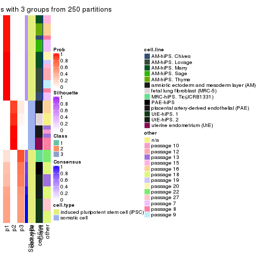
consensus_heatmap(res, k = 4)
consensus_heatmap(res, k = 5)
consensus_heatmap(res, k = 6)
Heatmaps for the membership of samples in all partitions to see how consistent they are:
membership_heatmap(res, k = 2)

membership_heatmap(res, k = 3)
membership_heatmap(res, k = 4)
membership_heatmap(res, k = 5)
membership_heatmap(res, k = 6)
As soon as we have had the classes for columns, we can look for signatures which are significantly different between classes which can be candidate marks for certain classes. Following are the heatmaps for signatures.
Signature heatmaps where rows are scaled:
get_signatures(res, k = 2)

get_signatures(res, k = 3)
get_signatures(res, k = 4)
#> Error in mat[ceiling(1:nr/h_ratio), ceiling(1:nc/w_ratio), drop = FALSE]: subscript out of bounds
get_signatures(res, k = 5)
get_signatures(res, k = 6)
#> Error in mat[ceiling(1:nr/h_ratio), ceiling(1:nc/w_ratio), drop = FALSE]: subscript out of bounds

Signature heatmaps where rows are not scaled:
get_signatures(res, k = 2, scale_rows = FALSE)

get_signatures(res, k = 3, scale_rows = FALSE)
get_signatures(res, k = 4, scale_rows = FALSE)
get_signatures(res, k = 5, scale_rows = FALSE)
get_signatures(res, k = 6, scale_rows = FALSE)
Compare the overlap of signatures from different k:
compare_signatures(res)
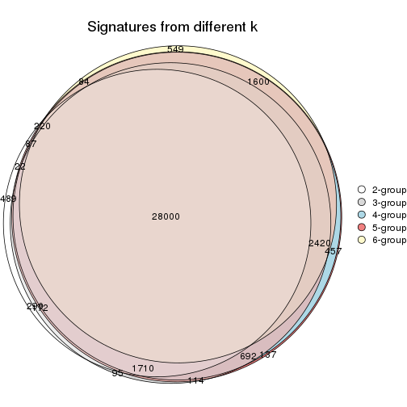
get_signature() returns a data frame invisibly. TO get the list of signatures, the function
call should be assigned to a variable explicitly. In following code, if plot argument is set
to FALSE, no heatmap is plotted while only the differential analysis is performed.
# code only for demonstration
tb = get_signature(res, k = ..., plot = FALSE)
An example of the output of tb is:
#> which_row fdr mean_1 mean_2 scaled_mean_1 scaled_mean_2 km
#> 1 38 0.042760348 8.373488 9.131774 -0.5533452 0.5164555 1
#> 2 40 0.018707592 7.106213 8.469186 -0.6173731 0.5762149 1
#> 3 55 0.019134737 10.221463 11.207825 -0.6159697 0.5749050 1
#> 4 59 0.006059896 5.921854 7.869574 -0.6899429 0.6439467 1
#> 5 60 0.018055526 8.928898 10.211722 -0.6204761 0.5791110 1
#> 6 98 0.009384629 15.714769 14.887706 0.6635654 -0.6193277 2
...
The columns in tb are:
which_row: row indices corresponding to the input matrix.fdr: FDR for the differential test. mean_x: The mean value in group x.scaled_mean_x: The mean value in group x after rows are scaled.km: Row groups if k-means clustering is applied to rows.UMAP plot which shows how samples are separated.
dimension_reduction(res, k = 2, method = "UMAP")
dimension_reduction(res, k = 3, method = "UMAP")
dimension_reduction(res, k = 4, method = "UMAP")
dimension_reduction(res, k = 5, method = "UMAP")
dimension_reduction(res, k = 6, method = "UMAP")
Following heatmap shows how subgroups are split when increasing k:
collect_classes(res)
Test correlation between subgroups and known annotations. If the known annotation is numeric, one-way ANOVA test is applied, and if the known annotation is discrete, chi-squared contingency table test is applied.
test_to_known_factors(res)
#> n cell.type(p) cell.line(p) other(p) k
#> CV:kmeans 51 1.46e-11 9.31e-07 5.89e-03 2
#> CV:kmeans 51 8.42e-12 1.37e-11 1.03e-06 3
#> CV:kmeans 48 2.13e-10 8.08e-16 8.70e-10 4
#> CV:kmeans 51 4.89e-11 2.26e-16 4.62e-11 5
#> CV:kmeans 34 7.45e-07 1.56e-13 1.60e-08 6
If matrix rows can be associated to genes, consider to use GO_Enrichment(res,
...) to perform function enrichment for the signature genes.
The object with results only for a single top-value method and a single partition method can be extracted as:
res = res_list["CV", "skmeans"]
# you can also extract it by
# res = res_list["CV:skmeans"]
A summary of res and all the functions that can be applied to it:
res
#> A 'ConsensusPartition' object with k = 2, 3, 4, 5, 6.
#> On a matrix with 42764 rows and 51 columns.
#> Top rows (1000, 2000, 3000, 4000, 5000) are extracted by 'CV' method.
#> Subgroups are detected by 'skmeans' method.
#> Performed in total 1250 partitions by row resampling.
#> Best k for subgroups seems to be 4.
#>
#> Following methods can be applied to this 'ConsensusPartition' object:
#> [1] "cola_report" "collect_classes" "collect_plots"
#> [4] "collect_stats" "colnames" "compare_signatures"
#> [7] "consensus_heatmap" "dimension_reduction" "functional_enrichment"
#> [10] "get_anno_col" "get_anno" "get_classes"
#> [13] "get_consensus" "get_matrix" "get_membership"
#> [16] "get_param" "get_signatures" "get_stats"
#> [19] "is_best_k" "is_stable_k" "membership_heatmap"
#> [22] "ncol" "nrow" "plot_ecdf"
#> [25] "rownames" "select_partition_number" "show"
#> [28] "suggest_best_k" "test_to_known_factors"
collect_plots() function collects all the plots made from res for all k (number of partitions)
into one single page to provide an easy and fast comparison between different k.
collect_plots(res)
The plots are:
k and the heatmap of
predicted classes for each k.k.k.k.All the plots in panels can be made by individual functions and they are plotted later in this section.
select_partition_number() produces several plots showing different
statistics for choosing “optimized” k. There are following statistics:
k;k, the area increased is defined as \(A_k - A_{k-1}\).The detailed explanations of these statistics can be found in the cola vignette.
Generally speaking, lower PAC score, higher mean silhouette score or higher
concordance corresponds to better partition. Rand index and Jaccard index
measure how similar the current partition is compared to partition with k-1.
If they are too similar, we won't accept k is better than k-1.
select_partition_number(res)
The numeric values for all these statistics can be obtained by get_stats().
get_stats(res)
#> k 1-PAC mean_silhouette concordance area_increased Rand Jaccard
#> 2 2 1.000 0.991 0.995 0.3722 0.633 0.633
#> 3 3 0.788 0.963 0.971 0.7479 0.704 0.532
#> 4 4 0.968 0.913 0.961 0.0962 0.965 0.895
#> 5 5 0.824 0.878 0.901 0.0488 0.972 0.906
#> 6 6 0.824 0.749 0.811 0.0529 0.929 0.741
suggest_best_k() suggests the best \(k\) based on these statistics. The rules are as follows:
NA.suggest_best_k(res)
#> [1] 4
#> attr(,"optional")
#> [1] 2
There is also optional best \(k\) = 2 that is worth to check.
Following shows the table of the partitions (You need to click the show/hide
code output link to see it). The membership matrix (columns with name p*)
is inferred by
clue::cl_consensus()
function with the SE method. Basically the value in the membership matrix
represents the probability to belong to a certain group. The finall class
label for an item is determined with the group with highest probability it
belongs to.
In get_classes() function, the entropy is calculated from the membership
matrix and the silhouette score is calculated from the consensus matrix.
cbind(get_classes(res, k = 2), get_membership(res, k = 2))
#> class entropy silhouette p1 p2
#> GSM520665 2 0.000 1.000 0.00 1.00
#> GSM520666 2 0.000 1.000 0.00 1.00
#> GSM520667 2 0.000 1.000 0.00 1.00
#> GSM520704 2 0.000 1.000 0.00 1.00
#> GSM520705 2 0.000 1.000 0.00 1.00
#> GSM520711 2 0.000 1.000 0.00 1.00
#> GSM520692 2 0.000 1.000 0.00 1.00
#> GSM520693 2 0.000 1.000 0.00 1.00
#> GSM520694 2 0.000 1.000 0.00 1.00
#> GSM520689 2 0.000 1.000 0.00 1.00
#> GSM520690 2 0.000 1.000 0.00 1.00
#> GSM520691 2 0.000 1.000 0.00 1.00
#> GSM520668 1 0.402 0.918 0.92 0.08
#> GSM520669 1 0.402 0.918 0.92 0.08
#> GSM520670 1 0.402 0.918 0.92 0.08
#> GSM520713 1 0.000 0.994 1.00 0.00
#> GSM520714 1 0.000 0.994 1.00 0.00
#> GSM520715 1 0.000 0.994 1.00 0.00
#> GSM520695 1 0.000 0.994 1.00 0.00
#> GSM520696 1 0.000 0.994 1.00 0.00
#> GSM520697 1 0.000 0.994 1.00 0.00
#> GSM520709 1 0.000 0.994 1.00 0.00
#> GSM520710 1 0.000 0.994 1.00 0.00
#> GSM520712 1 0.000 0.994 1.00 0.00
#> GSM520698 1 0.000 0.994 1.00 0.00
#> GSM520699 1 0.000 0.994 1.00 0.00
#> GSM520700 1 0.000 0.994 1.00 0.00
#> GSM520701 1 0.000 0.994 1.00 0.00
#> GSM520702 1 0.000 0.994 1.00 0.00
#> GSM520703 1 0.000 0.994 1.00 0.00
#> GSM520671 1 0.000 0.994 1.00 0.00
#> GSM520672 1 0.000 0.994 1.00 0.00
#> GSM520673 1 0.000 0.994 1.00 0.00
#> GSM520681 1 0.000 0.994 1.00 0.00
#> GSM520682 1 0.000 0.994 1.00 0.00
#> GSM520680 1 0.000 0.994 1.00 0.00
#> GSM520677 1 0.000 0.994 1.00 0.00
#> GSM520678 1 0.000 0.994 1.00 0.00
#> GSM520679 1 0.000 0.994 1.00 0.00
#> GSM520674 1 0.000 0.994 1.00 0.00
#> GSM520675 1 0.000 0.994 1.00 0.00
#> GSM520676 1 0.000 0.994 1.00 0.00
#> GSM520686 1 0.000 0.994 1.00 0.00
#> GSM520687 1 0.000 0.994 1.00 0.00
#> GSM520688 1 0.000 0.994 1.00 0.00
#> GSM520683 1 0.000 0.994 1.00 0.00
#> GSM520684 1 0.000 0.994 1.00 0.00
#> GSM520685 1 0.000 0.994 1.00 0.00
#> GSM520708 1 0.000 0.994 1.00 0.00
#> GSM520706 1 0.000 0.994 1.00 0.00
#> GSM520707 1 0.000 0.994 1.00 0.00
cbind(get_classes(res, k = 3), get_membership(res, k = 3))
#> class entropy silhouette p1 p2 p3
#> GSM520665 2 0.0000 1.000 0.000 1 0.000
#> GSM520666 2 0.0000 1.000 0.000 1 0.000
#> GSM520667 2 0.0000 1.000 0.000 1 0.000
#> GSM520704 2 0.0000 1.000 0.000 1 0.000
#> GSM520705 2 0.0000 1.000 0.000 1 0.000
#> GSM520711 2 0.0000 1.000 0.000 1 0.000
#> GSM520692 2 0.0000 1.000 0.000 1 0.000
#> GSM520693 2 0.0000 1.000 0.000 1 0.000
#> GSM520694 2 0.0000 1.000 0.000 1 0.000
#> GSM520689 2 0.0000 1.000 0.000 1 0.000
#> GSM520690 2 0.0000 1.000 0.000 1 0.000
#> GSM520691 2 0.0000 1.000 0.000 1 0.000
#> GSM520668 3 0.0000 0.899 0.000 0 1.000
#> GSM520669 3 0.0000 0.899 0.000 0 1.000
#> GSM520670 3 0.0000 0.899 0.000 0 1.000
#> GSM520713 3 0.0000 0.899 0.000 0 1.000
#> GSM520714 3 0.0000 0.899 0.000 0 1.000
#> GSM520715 3 0.0000 0.899 0.000 0 1.000
#> GSM520695 3 0.4178 0.887 0.172 0 0.828
#> GSM520696 3 0.4178 0.887 0.172 0 0.828
#> GSM520697 3 0.4178 0.887 0.172 0 0.828
#> GSM520709 3 0.4178 0.887 0.172 0 0.828
#> GSM520710 3 0.4178 0.887 0.172 0 0.828
#> GSM520712 3 0.4178 0.887 0.172 0 0.828
#> GSM520698 3 0.0237 0.900 0.004 0 0.996
#> GSM520699 3 0.0237 0.900 0.004 0 0.996
#> GSM520700 3 0.0237 0.900 0.004 0 0.996
#> GSM520701 3 0.4178 0.887 0.172 0 0.828
#> GSM520702 3 0.3482 0.899 0.128 0 0.872
#> GSM520703 3 0.3482 0.899 0.128 0 0.872
#> GSM520671 1 0.0000 1.000 1.000 0 0.000
#> GSM520672 1 0.0000 1.000 1.000 0 0.000
#> GSM520673 1 0.0000 1.000 1.000 0 0.000
#> GSM520681 1 0.0000 1.000 1.000 0 0.000
#> GSM520682 1 0.0000 1.000 1.000 0 0.000
#> GSM520680 1 0.0000 1.000 1.000 0 0.000
#> GSM520677 1 0.0000 1.000 1.000 0 0.000
#> GSM520678 1 0.0000 1.000 1.000 0 0.000
#> GSM520679 1 0.0000 1.000 1.000 0 0.000
#> GSM520674 1 0.0000 1.000 1.000 0 0.000
#> GSM520675 1 0.0000 1.000 1.000 0 0.000
#> GSM520676 1 0.0000 1.000 1.000 0 0.000
#> GSM520686 1 0.0000 1.000 1.000 0 0.000
#> GSM520687 1 0.0000 1.000 1.000 0 0.000
#> GSM520688 1 0.0000 1.000 1.000 0 0.000
#> GSM520683 1 0.0000 1.000 1.000 0 0.000
#> GSM520684 1 0.0000 1.000 1.000 0 0.000
#> GSM520685 1 0.0000 1.000 1.000 0 0.000
#> GSM520708 1 0.0000 1.000 1.000 0 0.000
#> GSM520706 1 0.0000 1.000 1.000 0 0.000
#> GSM520707 1 0.0000 1.000 1.000 0 0.000
cbind(get_classes(res, k = 4), get_membership(res, k = 4))
#> class entropy silhouette p1 p2 p3 p4
#> GSM520665 2 0.0000 1.000 0.000 1 0.000 0.000
#> GSM520666 2 0.0000 1.000 0.000 1 0.000 0.000
#> GSM520667 2 0.0000 1.000 0.000 1 0.000 0.000
#> GSM520704 2 0.0000 1.000 0.000 1 0.000 0.000
#> GSM520705 2 0.0000 1.000 0.000 1 0.000 0.000
#> GSM520711 2 0.0000 1.000 0.000 1 0.000 0.000
#> GSM520692 2 0.0000 1.000 0.000 1 0.000 0.000
#> GSM520693 2 0.0000 1.000 0.000 1 0.000 0.000
#> GSM520694 2 0.0000 1.000 0.000 1 0.000 0.000
#> GSM520689 2 0.0000 1.000 0.000 1 0.000 0.000
#> GSM520690 2 0.0000 1.000 0.000 1 0.000 0.000
#> GSM520691 2 0.0000 1.000 0.000 1 0.000 0.000
#> GSM520668 3 0.0188 1.000 0.000 0 0.996 0.004
#> GSM520669 3 0.0188 1.000 0.000 0 0.996 0.004
#> GSM520670 3 0.0188 1.000 0.000 0 0.996 0.004
#> GSM520713 4 0.4331 0.587 0.000 0 0.288 0.712
#> GSM520714 4 0.4331 0.587 0.000 0 0.288 0.712
#> GSM520715 4 0.4331 0.587 0.000 0 0.288 0.712
#> GSM520695 4 0.0000 0.833 0.000 0 0.000 1.000
#> GSM520696 4 0.0000 0.833 0.000 0 0.000 1.000
#> GSM520697 4 0.0000 0.833 0.000 0 0.000 1.000
#> GSM520709 4 0.0000 0.833 0.000 0 0.000 1.000
#> GSM520710 4 0.0000 0.833 0.000 0 0.000 1.000
#> GSM520712 4 0.0000 0.833 0.000 0 0.000 1.000
#> GSM520698 4 0.4730 0.453 0.000 0 0.364 0.636
#> GSM520699 4 0.4730 0.453 0.000 0 0.364 0.636
#> GSM520700 4 0.4730 0.453 0.000 0 0.364 0.636
#> GSM520701 4 0.0000 0.833 0.000 0 0.000 1.000
#> GSM520702 4 0.0000 0.833 0.000 0 0.000 1.000
#> GSM520703 4 0.0000 0.833 0.000 0 0.000 1.000
#> GSM520671 1 0.0000 0.998 1.000 0 0.000 0.000
#> GSM520672 1 0.0000 0.998 1.000 0 0.000 0.000
#> GSM520673 1 0.0000 0.998 1.000 0 0.000 0.000
#> GSM520681 1 0.0000 0.998 1.000 0 0.000 0.000
#> GSM520682 1 0.0000 0.998 1.000 0 0.000 0.000
#> GSM520680 1 0.0000 0.998 1.000 0 0.000 0.000
#> GSM520677 1 0.0000 0.998 1.000 0 0.000 0.000
#> GSM520678 1 0.0000 0.998 1.000 0 0.000 0.000
#> GSM520679 1 0.0000 0.998 1.000 0 0.000 0.000
#> GSM520674 1 0.0000 0.998 1.000 0 0.000 0.000
#> GSM520675 1 0.0000 0.998 1.000 0 0.000 0.000
#> GSM520676 1 0.0000 0.998 1.000 0 0.000 0.000
#> GSM520686 1 0.0188 0.998 0.996 0 0.004 0.000
#> GSM520687 1 0.0188 0.998 0.996 0 0.004 0.000
#> GSM520688 1 0.0188 0.998 0.996 0 0.004 0.000
#> GSM520683 1 0.0188 0.998 0.996 0 0.004 0.000
#> GSM520684 1 0.0188 0.998 0.996 0 0.004 0.000
#> GSM520685 1 0.0188 0.998 0.996 0 0.004 0.000
#> GSM520708 1 0.0188 0.998 0.996 0 0.004 0.000
#> GSM520706 1 0.0188 0.998 0.996 0 0.004 0.000
#> GSM520707 1 0.0188 0.998 0.996 0 0.004 0.000
cbind(get_classes(res, k = 5), get_membership(res, k = 5))
#> class entropy silhouette p1 p2 p3 p4 p5
#> GSM520665 2 0.0000 0.960 0.000 1.00 0.000 0.000 0.000
#> GSM520666 2 0.0000 0.960 0.000 1.00 0.000 0.000 0.000
#> GSM520667 2 0.0000 0.960 0.000 1.00 0.000 0.000 0.000
#> GSM520704 2 0.2732 0.872 0.000 0.84 0.000 0.000 0.160
#> GSM520705 2 0.2732 0.872 0.000 0.84 0.000 0.000 0.160
#> GSM520711 2 0.2732 0.872 0.000 0.84 0.000 0.000 0.160
#> GSM520692 2 0.0000 0.960 0.000 1.00 0.000 0.000 0.000
#> GSM520693 2 0.0000 0.960 0.000 1.00 0.000 0.000 0.000
#> GSM520694 2 0.0000 0.960 0.000 1.00 0.000 0.000 0.000
#> GSM520689 2 0.0000 0.960 0.000 1.00 0.000 0.000 0.000
#> GSM520690 2 0.0000 0.960 0.000 1.00 0.000 0.000 0.000
#> GSM520691 2 0.0000 0.960 0.000 1.00 0.000 0.000 0.000
#> GSM520668 3 0.0000 1.000 0.000 0.00 1.000 0.000 0.000
#> GSM520669 3 0.0000 1.000 0.000 0.00 1.000 0.000 0.000
#> GSM520670 3 0.0000 1.000 0.000 0.00 1.000 0.000 0.000
#> GSM520713 4 0.4065 0.660 0.000 0.00 0.180 0.772 0.048
#> GSM520714 4 0.4065 0.660 0.000 0.00 0.180 0.772 0.048
#> GSM520715 4 0.4065 0.660 0.000 0.00 0.180 0.772 0.048
#> GSM520695 4 0.0000 0.820 0.000 0.00 0.000 1.000 0.000
#> GSM520696 4 0.0000 0.820 0.000 0.00 0.000 1.000 0.000
#> GSM520697 4 0.0000 0.820 0.000 0.00 0.000 1.000 0.000
#> GSM520709 4 0.0000 0.820 0.000 0.00 0.000 1.000 0.000
#> GSM520710 4 0.0000 0.820 0.000 0.00 0.000 1.000 0.000
#> GSM520712 4 0.0000 0.820 0.000 0.00 0.000 1.000 0.000
#> GSM520698 5 0.5938 1.000 0.000 0.00 0.128 0.320 0.552
#> GSM520699 5 0.5938 1.000 0.000 0.00 0.128 0.320 0.552
#> GSM520700 5 0.5938 1.000 0.000 0.00 0.128 0.320 0.552
#> GSM520701 4 0.2891 0.641 0.000 0.00 0.000 0.824 0.176
#> GSM520702 4 0.2891 0.641 0.000 0.00 0.000 0.824 0.176
#> GSM520703 4 0.2891 0.641 0.000 0.00 0.000 0.824 0.176
#> GSM520671 1 0.0880 0.906 0.968 0.00 0.000 0.000 0.032
#> GSM520672 1 0.0880 0.906 0.968 0.00 0.000 0.000 0.032
#> GSM520673 1 0.0880 0.906 0.968 0.00 0.000 0.000 0.032
#> GSM520681 1 0.2329 0.889 0.876 0.00 0.000 0.000 0.124
#> GSM520682 1 0.2329 0.889 0.876 0.00 0.000 0.000 0.124
#> GSM520680 1 0.2690 0.886 0.844 0.00 0.000 0.000 0.156
#> GSM520677 1 0.3282 0.866 0.804 0.00 0.000 0.008 0.188
#> GSM520678 1 0.3282 0.866 0.804 0.00 0.000 0.008 0.188
#> GSM520679 1 0.3282 0.866 0.804 0.00 0.000 0.008 0.188
#> GSM520674 1 0.3282 0.866 0.804 0.00 0.000 0.008 0.188
#> GSM520675 1 0.3282 0.866 0.804 0.00 0.000 0.008 0.188
#> GSM520676 1 0.3282 0.866 0.804 0.00 0.000 0.008 0.188
#> GSM520686 1 0.1043 0.904 0.960 0.00 0.000 0.000 0.040
#> GSM520687 1 0.1043 0.904 0.960 0.00 0.000 0.000 0.040
#> GSM520688 1 0.1043 0.904 0.960 0.00 0.000 0.000 0.040
#> GSM520683 1 0.0880 0.905 0.968 0.00 0.000 0.000 0.032
#> GSM520684 1 0.1121 0.903 0.956 0.00 0.000 0.000 0.044
#> GSM520685 1 0.1121 0.903 0.956 0.00 0.000 0.000 0.044
#> GSM520708 1 0.0963 0.906 0.964 0.00 0.000 0.000 0.036
#> GSM520706 1 0.0963 0.906 0.964 0.00 0.000 0.000 0.036
#> GSM520707 1 0.0963 0.906 0.964 0.00 0.000 0.000 0.036
cbind(get_classes(res, k = 6), get_membership(res, k = 6))
#> class entropy silhouette p1 p2 p3 p4 p5 p6
#> GSM520665 2 0.0000 0.902 0.000 1.000 0.000 0.000 0.000 0.000
#> GSM520666 2 0.0000 0.902 0.000 1.000 0.000 0.000 0.000 0.000
#> GSM520667 2 0.0000 0.902 0.000 1.000 0.000 0.000 0.000 0.000
#> GSM520704 2 0.4720 0.655 0.000 0.624 0.000 0.000 0.072 0.304
#> GSM520705 2 0.4720 0.655 0.000 0.624 0.000 0.000 0.072 0.304
#> GSM520711 2 0.4720 0.655 0.000 0.624 0.000 0.000 0.072 0.304
#> GSM520692 2 0.0000 0.902 0.000 1.000 0.000 0.000 0.000 0.000
#> GSM520693 2 0.0000 0.902 0.000 1.000 0.000 0.000 0.000 0.000
#> GSM520694 2 0.0000 0.902 0.000 1.000 0.000 0.000 0.000 0.000
#> GSM520689 2 0.0000 0.902 0.000 1.000 0.000 0.000 0.000 0.000
#> GSM520690 2 0.0000 0.902 0.000 1.000 0.000 0.000 0.000 0.000
#> GSM520691 2 0.0000 0.902 0.000 1.000 0.000 0.000 0.000 0.000
#> GSM520668 3 0.0000 1.000 0.000 0.000 1.000 0.000 0.000 0.000
#> GSM520669 3 0.0000 1.000 0.000 0.000 1.000 0.000 0.000 0.000
#> GSM520670 3 0.0000 1.000 0.000 0.000 1.000 0.000 0.000 0.000
#> GSM520713 4 0.5411 0.636 0.000 0.000 0.092 0.684 0.108 0.116
#> GSM520714 4 0.5411 0.636 0.000 0.000 0.092 0.684 0.108 0.116
#> GSM520715 4 0.5411 0.636 0.000 0.000 0.092 0.684 0.108 0.116
#> GSM520695 4 0.0000 0.808 0.000 0.000 0.000 1.000 0.000 0.000
#> GSM520696 4 0.0000 0.808 0.000 0.000 0.000 1.000 0.000 0.000
#> GSM520697 4 0.0000 0.808 0.000 0.000 0.000 1.000 0.000 0.000
#> GSM520709 4 0.0000 0.808 0.000 0.000 0.000 1.000 0.000 0.000
#> GSM520710 4 0.0000 0.808 0.000 0.000 0.000 1.000 0.000 0.000
#> GSM520712 4 0.0000 0.808 0.000 0.000 0.000 1.000 0.000 0.000
#> GSM520698 5 0.3352 1.000 0.000 0.000 0.032 0.176 0.792 0.000
#> GSM520699 5 0.3352 1.000 0.000 0.000 0.032 0.176 0.792 0.000
#> GSM520700 5 0.3352 1.000 0.000 0.000 0.032 0.176 0.792 0.000
#> GSM520701 4 0.3245 0.613 0.000 0.000 0.000 0.764 0.228 0.008
#> GSM520702 4 0.3245 0.613 0.000 0.000 0.000 0.764 0.228 0.008
#> GSM520703 4 0.3245 0.613 0.000 0.000 0.000 0.764 0.228 0.008
#> GSM520671 1 0.3017 0.590 0.816 0.000 0.000 0.000 0.020 0.164
#> GSM520672 1 0.3017 0.590 0.816 0.000 0.000 0.000 0.020 0.164
#> GSM520673 1 0.3017 0.590 0.816 0.000 0.000 0.000 0.020 0.164
#> GSM520681 1 0.3695 -0.299 0.624 0.000 0.000 0.000 0.000 0.376
#> GSM520682 1 0.3695 -0.299 0.624 0.000 0.000 0.000 0.000 0.376
#> GSM520680 1 0.3695 -0.333 0.624 0.000 0.000 0.000 0.000 0.376
#> GSM520677 6 0.4218 1.000 0.428 0.000 0.000 0.016 0.000 0.556
#> GSM520678 6 0.4218 1.000 0.428 0.000 0.000 0.016 0.000 0.556
#> GSM520679 6 0.4218 1.000 0.428 0.000 0.000 0.016 0.000 0.556
#> GSM520674 6 0.4218 1.000 0.428 0.000 0.000 0.016 0.000 0.556
#> GSM520675 6 0.4218 1.000 0.428 0.000 0.000 0.016 0.000 0.556
#> GSM520676 6 0.4218 1.000 0.428 0.000 0.000 0.016 0.000 0.556
#> GSM520686 1 0.0260 0.750 0.992 0.000 0.000 0.000 0.000 0.008
#> GSM520687 1 0.0260 0.750 0.992 0.000 0.000 0.000 0.000 0.008
#> GSM520688 1 0.0260 0.750 0.992 0.000 0.000 0.000 0.000 0.008
#> GSM520683 1 0.1152 0.741 0.952 0.000 0.000 0.000 0.004 0.044
#> GSM520684 1 0.0146 0.747 0.996 0.000 0.000 0.000 0.004 0.000
#> GSM520685 1 0.0291 0.748 0.992 0.000 0.000 0.000 0.004 0.004
#> GSM520708 1 0.1333 0.738 0.944 0.000 0.000 0.000 0.008 0.048
#> GSM520706 1 0.1333 0.738 0.944 0.000 0.000 0.000 0.008 0.048
#> GSM520707 1 0.1333 0.738 0.944 0.000 0.000 0.000 0.008 0.048
Heatmaps for the consensus matrix. It visualizes the probability of two samples to be in a same group.
consensus_heatmap(res, k = 2)
consensus_heatmap(res, k = 3)
consensus_heatmap(res, k = 4)
consensus_heatmap(res, k = 5)
consensus_heatmap(res, k = 6)
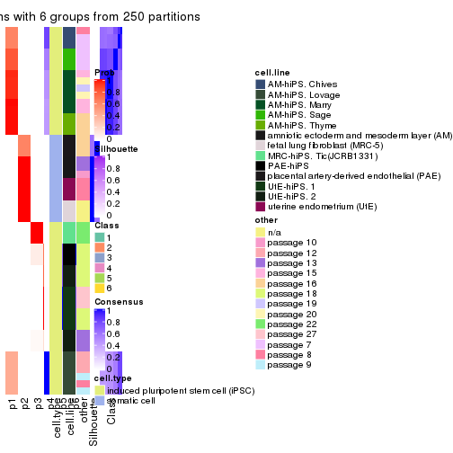
Heatmaps for the membership of samples in all partitions to see how consistent they are:
membership_heatmap(res, k = 2)
membership_heatmap(res, k = 3)
membership_heatmap(res, k = 4)
membership_heatmap(res, k = 5)
membership_heatmap(res, k = 6)
As soon as we have had the classes for columns, we can look for signatures which are significantly different between classes which can be candidate marks for certain classes. Following are the heatmaps for signatures.
Signature heatmaps where rows are scaled:
get_signatures(res, k = 2)
get_signatures(res, k = 3)
get_signatures(res, k = 4)
#> Error in mat[ceiling(1:nr/h_ratio), ceiling(1:nc/w_ratio), drop = FALSE]: subscript out of bounds
get_signatures(res, k = 5)
get_signatures(res, k = 6)
#> Error in mat[ceiling(1:nr/h_ratio), ceiling(1:nc/w_ratio), drop = FALSE]: subscript out of bounds
Signature heatmaps where rows are not scaled:
get_signatures(res, k = 2, scale_rows = FALSE)

get_signatures(res, k = 3, scale_rows = FALSE)
get_signatures(res, k = 4, scale_rows = FALSE)
get_signatures(res, k = 5, scale_rows = FALSE)
get_signatures(res, k = 6, scale_rows = FALSE)

Compare the overlap of signatures from different k:
compare_signatures(res)
get_signature() returns a data frame invisibly. TO get the list of signatures, the function
call should be assigned to a variable explicitly. In following code, if plot argument is set
to FALSE, no heatmap is plotted while only the differential analysis is performed.
# code only for demonstration
tb = get_signature(res, k = ..., plot = FALSE)
An example of the output of tb is:
#> which_row fdr mean_1 mean_2 scaled_mean_1 scaled_mean_2 km
#> 1 38 0.042760348 8.373488 9.131774 -0.5533452 0.5164555 1
#> 2 40 0.018707592 7.106213 8.469186 -0.6173731 0.5762149 1
#> 3 55 0.019134737 10.221463 11.207825 -0.6159697 0.5749050 1
#> 4 59 0.006059896 5.921854 7.869574 -0.6899429 0.6439467 1
#> 5 60 0.018055526 8.928898 10.211722 -0.6204761 0.5791110 1
#> 6 98 0.009384629 15.714769 14.887706 0.6635654 -0.6193277 2
...
The columns in tb are:
which_row: row indices corresponding to the input matrix.fdr: FDR for the differential test. mean_x: The mean value in group x.scaled_mean_x: The mean value in group x after rows are scaled.km: Row groups if k-means clustering is applied to rows.UMAP plot which shows how samples are separated.
dimension_reduction(res, k = 2, method = "UMAP")

dimension_reduction(res, k = 3, method = "UMAP")
dimension_reduction(res, k = 4, method = "UMAP")
dimension_reduction(res, k = 5, method = "UMAP")
dimension_reduction(res, k = 6, method = "UMAP")
Following heatmap shows how subgroups are split when increasing k:
collect_classes(res)
Test correlation between subgroups and known annotations. If the known annotation is numeric, one-way ANOVA test is applied, and if the known annotation is discrete, chi-squared contingency table test is applied.
test_to_known_factors(res)
#> n cell.type(p) cell.line(p) other(p) k
#> CV:skmeans 51 1.46e-11 9.31e-07 5.89e-03 2
#> CV:skmeans 51 8.42e-12 1.37e-11 1.03e-06 3
#> CV:skmeans 48 2.13e-10 7.40e-15 2.97e-11 4
#> CV:skmeans 51 2.23e-10 6.99e-16 5.39e-13 5
#> CV:skmeans 48 3.55e-09 5.83e-20 6.46e-15 6
If matrix rows can be associated to genes, consider to use GO_Enrichment(res,
...) to perform function enrichment for the signature genes.
The object with results only for a single top-value method and a single partition method can be extracted as:
res = res_list["CV", "pam"]
# you can also extract it by
# res = res_list["CV:pam"]
A summary of res and all the functions that can be applied to it:
res
#> A 'ConsensusPartition' object with k = 2, 3, 4, 5, 6.
#> On a matrix with 42764 rows and 51 columns.
#> Top rows (1000, 2000, 3000, 4000, 5000) are extracted by 'CV' method.
#> Subgroups are detected by 'pam' method.
#> Performed in total 1250 partitions by row resampling.
#> Best k for subgroups seems to be 6.
#>
#> Following methods can be applied to this 'ConsensusPartition' object:
#> [1] "cola_report" "collect_classes" "collect_plots"
#> [4] "collect_stats" "colnames" "compare_signatures"
#> [7] "consensus_heatmap" "dimension_reduction" "functional_enrichment"
#> [10] "get_anno_col" "get_anno" "get_classes"
#> [13] "get_consensus" "get_matrix" "get_membership"
#> [16] "get_param" "get_signatures" "get_stats"
#> [19] "is_best_k" "is_stable_k" "membership_heatmap"
#> [22] "ncol" "nrow" "plot_ecdf"
#> [25] "rownames" "select_partition_number" "show"
#> [28] "suggest_best_k" "test_to_known_factors"
collect_plots() function collects all the plots made from res for all k (number of partitions)
into one single page to provide an easy and fast comparison between different k.
collect_plots(res)
The plots are:
k and the heatmap of
predicted classes for each k.k.k.k.All the plots in panels can be made by individual functions and they are plotted later in this section.
select_partition_number() produces several plots showing different
statistics for choosing “optimized” k. There are following statistics:
k;k, the area increased is defined as \(A_k - A_{k-1}\).The detailed explanations of these statistics can be found in the cola vignette.
Generally speaking, lower PAC score, higher mean silhouette score or higher
concordance corresponds to better partition. Rand index and Jaccard index
measure how similar the current partition is compared to partition with k-1.
If they are too similar, we won't accept k is better than k-1.
select_partition_number(res)
The numeric values for all these statistics can be obtained by get_stats().
get_stats(res)
#> k 1-PAC mean_silhouette concordance area_increased Rand Jaccard
#> 2 2 1.000 1.000 1.000 0.3677 0.633 0.633
#> 3 3 1.000 1.000 1.000 0.0575 0.979 0.967
#> 4 4 0.721 0.976 0.954 0.6772 0.704 0.515
#> 5 5 0.721 0.986 0.942 0.0514 0.965 0.888
#> 6 6 1.000 0.997 0.998 0.0709 0.986 0.950
suggest_best_k() suggests the best \(k\) based on these statistics. The rules are as follows:
NA.suggest_best_k(res)
#> [1] 6
#> attr(,"optional")
#> [1] 2
There is also optional best \(k\) = 2 that is worth to check.
Following shows the table of the partitions (You need to click the show/hide
code output link to see it). The membership matrix (columns with name p*)
is inferred by
clue::cl_consensus()
function with the SE method. Basically the value in the membership matrix
represents the probability to belong to a certain group. The finall class
label for an item is determined with the group with highest probability it
belongs to.
In get_classes() function, the entropy is calculated from the membership
matrix and the silhouette score is calculated from the consensus matrix.
cbind(get_classes(res, k = 2), get_membership(res, k = 2))
#> class entropy silhouette p1 p2
#> GSM520665 2 0 1 0 1
#> GSM520666 2 0 1 0 1
#> GSM520667 2 0 1 0 1
#> GSM520704 2 0 1 0 1
#> GSM520705 2 0 1 0 1
#> GSM520711 2 0 1 0 1
#> GSM520692 2 0 1 0 1
#> GSM520693 2 0 1 0 1
#> GSM520694 2 0 1 0 1
#> GSM520689 2 0 1 0 1
#> GSM520690 2 0 1 0 1
#> GSM520691 2 0 1 0 1
#> GSM520668 1 0 1 1 0
#> GSM520669 1 0 1 1 0
#> GSM520670 1 0 1 1 0
#> GSM520713 1 0 1 1 0
#> GSM520714 1 0 1 1 0
#> GSM520715 1 0 1 1 0
#> GSM520695 1 0 1 1 0
#> GSM520696 1 0 1 1 0
#> GSM520697 1 0 1 1 0
#> GSM520709 1 0 1 1 0
#> GSM520710 1 0 1 1 0
#> GSM520712 1 0 1 1 0
#> GSM520698 1 0 1 1 0
#> GSM520699 1 0 1 1 0
#> GSM520700 1 0 1 1 0
#> GSM520701 1 0 1 1 0
#> GSM520702 1 0 1 1 0
#> GSM520703 1 0 1 1 0
#> GSM520671 1 0 1 1 0
#> GSM520672 1 0 1 1 0
#> GSM520673 1 0 1 1 0
#> GSM520681 1 0 1 1 0
#> GSM520682 1 0 1 1 0
#> GSM520680 1 0 1 1 0
#> GSM520677 1 0 1 1 0
#> GSM520678 1 0 1 1 0
#> GSM520679 1 0 1 1 0
#> GSM520674 1 0 1 1 0
#> GSM520675 1 0 1 1 0
#> GSM520676 1 0 1 1 0
#> GSM520686 1 0 1 1 0
#> GSM520687 1 0 1 1 0
#> GSM520688 1 0 1 1 0
#> GSM520683 1 0 1 1 0
#> GSM520684 1 0 1 1 0
#> GSM520685 1 0 1 1 0
#> GSM520708 1 0 1 1 0
#> GSM520706 1 0 1 1 0
#> GSM520707 1 0 1 1 0
cbind(get_classes(res, k = 3), get_membership(res, k = 3))
#> class entropy silhouette p1 p2 p3
#> GSM520665 2 0 1 0 1 0
#> GSM520666 2 0 1 0 1 0
#> GSM520667 2 0 1 0 1 0
#> GSM520704 3 0 1 0 0 1
#> GSM520705 3 0 1 0 0 1
#> GSM520711 3 0 1 0 0 1
#> GSM520692 2 0 1 0 1 0
#> GSM520693 2 0 1 0 1 0
#> GSM520694 2 0 1 0 1 0
#> GSM520689 2 0 1 0 1 0
#> GSM520690 2 0 1 0 1 0
#> GSM520691 2 0 1 0 1 0
#> GSM520668 1 0 1 1 0 0
#> GSM520669 1 0 1 1 0 0
#> GSM520670 1 0 1 1 0 0
#> GSM520713 1 0 1 1 0 0
#> GSM520714 1 0 1 1 0 0
#> GSM520715 1 0 1 1 0 0
#> GSM520695 1 0 1 1 0 0
#> GSM520696 1 0 1 1 0 0
#> GSM520697 1 0 1 1 0 0
#> GSM520709 1 0 1 1 0 0
#> GSM520710 1 0 1 1 0 0
#> GSM520712 1 0 1 1 0 0
#> GSM520698 1 0 1 1 0 0
#> GSM520699 1 0 1 1 0 0
#> GSM520700 1 0 1 1 0 0
#> GSM520701 1 0 1 1 0 0
#> GSM520702 1 0 1 1 0 0
#> GSM520703 1 0 1 1 0 0
#> GSM520671 1 0 1 1 0 0
#> GSM520672 1 0 1 1 0 0
#> GSM520673 1 0 1 1 0 0
#> GSM520681 1 0 1 1 0 0
#> GSM520682 1 0 1 1 0 0
#> GSM520680 1 0 1 1 0 0
#> GSM520677 1 0 1 1 0 0
#> GSM520678 1 0 1 1 0 0
#> GSM520679 1 0 1 1 0 0
#> GSM520674 1 0 1 1 0 0
#> GSM520675 1 0 1 1 0 0
#> GSM520676 1 0 1 1 0 0
#> GSM520686 1 0 1 1 0 0
#> GSM520687 1 0 1 1 0 0
#> GSM520688 1 0 1 1 0 0
#> GSM520683 1 0 1 1 0 0
#> GSM520684 1 0 1 1 0 0
#> GSM520685 1 0 1 1 0 0
#> GSM520708 1 0 1 1 0 0
#> GSM520706 1 0 1 1 0 0
#> GSM520707 1 0 1 1 0 0
cbind(get_classes(res, k = 4), get_membership(res, k = 4))
#> class entropy silhouette p1 p2 p3 p4
#> GSM520665 2 0.000 1.000 0.000 1 0 0.000
#> GSM520666 2 0.000 1.000 0.000 1 0 0.000
#> GSM520667 2 0.000 1.000 0.000 1 0 0.000
#> GSM520704 3 0.000 1.000 0.000 0 1 0.000
#> GSM520705 3 0.000 1.000 0.000 0 1 0.000
#> GSM520711 3 0.000 1.000 0.000 0 1 0.000
#> GSM520692 2 0.000 1.000 0.000 1 0 0.000
#> GSM520693 2 0.000 1.000 0.000 1 0 0.000
#> GSM520694 2 0.000 1.000 0.000 1 0 0.000
#> GSM520689 2 0.000 1.000 0.000 1 0 0.000
#> GSM520690 2 0.000 1.000 0.000 1 0 0.000
#> GSM520691 2 0.000 1.000 0.000 1 0 0.000
#> GSM520668 4 0.000 0.790 0.000 0 0 1.000
#> GSM520669 4 0.000 0.790 0.000 0 0 1.000
#> GSM520670 4 0.000 0.790 0.000 0 0 1.000
#> GSM520713 4 0.312 0.962 0.156 0 0 0.844
#> GSM520714 4 0.312 0.962 0.156 0 0 0.844
#> GSM520715 4 0.312 0.962 0.156 0 0 0.844
#> GSM520695 4 0.312 0.962 0.156 0 0 0.844
#> GSM520696 4 0.312 0.962 0.156 0 0 0.844
#> GSM520697 4 0.312 0.962 0.156 0 0 0.844
#> GSM520709 4 0.312 0.962 0.156 0 0 0.844
#> GSM520710 4 0.312 0.962 0.156 0 0 0.844
#> GSM520712 4 0.312 0.962 0.156 0 0 0.844
#> GSM520698 4 0.312 0.962 0.156 0 0 0.844
#> GSM520699 4 0.312 0.962 0.156 0 0 0.844
#> GSM520700 4 0.312 0.962 0.156 0 0 0.844
#> GSM520701 4 0.312 0.962 0.156 0 0 0.844
#> GSM520702 4 0.312 0.962 0.156 0 0 0.844
#> GSM520703 4 0.312 0.962 0.156 0 0 0.844
#> GSM520671 1 0.000 1.000 1.000 0 0 0.000
#> GSM520672 1 0.000 1.000 1.000 0 0 0.000
#> GSM520673 1 0.000 1.000 1.000 0 0 0.000
#> GSM520681 1 0.000 1.000 1.000 0 0 0.000
#> GSM520682 1 0.000 1.000 1.000 0 0 0.000
#> GSM520680 1 0.000 1.000 1.000 0 0 0.000
#> GSM520677 1 0.000 1.000 1.000 0 0 0.000
#> GSM520678 1 0.000 1.000 1.000 0 0 0.000
#> GSM520679 1 0.000 1.000 1.000 0 0 0.000
#> GSM520674 1 0.000 1.000 1.000 0 0 0.000
#> GSM520675 1 0.000 1.000 1.000 0 0 0.000
#> GSM520676 1 0.000 1.000 1.000 0 0 0.000
#> GSM520686 1 0.000 1.000 1.000 0 0 0.000
#> GSM520687 1 0.000 1.000 1.000 0 0 0.000
#> GSM520688 1 0.000 1.000 1.000 0 0 0.000
#> GSM520683 1 0.000 1.000 1.000 0 0 0.000
#> GSM520684 1 0.000 1.000 1.000 0 0 0.000
#> GSM520685 1 0.000 1.000 1.000 0 0 0.000
#> GSM520708 1 0.000 1.000 1.000 0 0 0.000
#> GSM520706 1 0.000 1.000 1.000 0 0 0.000
#> GSM520707 1 0.000 1.000 1.000 0 0 0.000
cbind(get_classes(res, k = 5), get_membership(res, k = 5))
#> class entropy silhouette p1 p2 p3 p4 p5
#> GSM520665 2 0.310 0.884 0.148 0.836 0.016 0.000 0
#> GSM520666 2 0.310 0.884 0.148 0.836 0.016 0.000 0
#> GSM520667 2 0.310 0.884 0.148 0.836 0.016 0.000 0
#> GSM520704 5 0.000 1.000 0.000 0.000 0.000 0.000 1
#> GSM520705 5 0.000 1.000 0.000 0.000 0.000 0.000 1
#> GSM520711 5 0.000 1.000 0.000 0.000 0.000 0.000 1
#> GSM520692 2 0.000 0.945 0.000 1.000 0.000 0.000 0
#> GSM520693 2 0.000 0.945 0.000 1.000 0.000 0.000 0
#> GSM520694 2 0.000 0.945 0.000 1.000 0.000 0.000 0
#> GSM520689 2 0.000 0.945 0.000 1.000 0.000 0.000 0
#> GSM520690 2 0.000 0.945 0.000 1.000 0.000 0.000 0
#> GSM520691 2 0.000 0.945 0.000 1.000 0.000 0.000 0
#> GSM520668 3 0.051 1.000 0.000 0.000 0.984 0.016 0
#> GSM520669 3 0.051 1.000 0.000 0.000 0.984 0.016 0
#> GSM520670 3 0.051 1.000 0.000 0.000 0.984 0.016 0
#> GSM520713 4 0.000 1.000 0.000 0.000 0.000 1.000 0
#> GSM520714 4 0.000 1.000 0.000 0.000 0.000 1.000 0
#> GSM520715 4 0.000 1.000 0.000 0.000 0.000 1.000 0
#> GSM520695 4 0.000 1.000 0.000 0.000 0.000 1.000 0
#> GSM520696 4 0.000 1.000 0.000 0.000 0.000 1.000 0
#> GSM520697 4 0.000 1.000 0.000 0.000 0.000 1.000 0
#> GSM520709 4 0.000 1.000 0.000 0.000 0.000 1.000 0
#> GSM520710 4 0.000 1.000 0.000 0.000 0.000 1.000 0
#> GSM520712 4 0.000 1.000 0.000 0.000 0.000 1.000 0
#> GSM520698 4 0.000 1.000 0.000 0.000 0.000 1.000 0
#> GSM520699 4 0.000 1.000 0.000 0.000 0.000 1.000 0
#> GSM520700 4 0.000 1.000 0.000 0.000 0.000 1.000 0
#> GSM520701 4 0.000 1.000 0.000 0.000 0.000 1.000 0
#> GSM520702 4 0.000 1.000 0.000 0.000 0.000 1.000 0
#> GSM520703 4 0.000 1.000 0.000 0.000 0.000 1.000 0
#> GSM520671 1 0.260 1.000 0.852 0.000 0.000 0.148 0
#> GSM520672 1 0.265 0.995 0.848 0.000 0.000 0.152 0
#> GSM520673 1 0.260 1.000 0.852 0.000 0.000 0.148 0
#> GSM520681 1 0.260 1.000 0.852 0.000 0.000 0.148 0
#> GSM520682 1 0.260 1.000 0.852 0.000 0.000 0.148 0
#> GSM520680 1 0.260 1.000 0.852 0.000 0.000 0.148 0
#> GSM520677 1 0.260 1.000 0.852 0.000 0.000 0.148 0
#> GSM520678 1 0.260 1.000 0.852 0.000 0.000 0.148 0
#> GSM520679 1 0.260 1.000 0.852 0.000 0.000 0.148 0
#> GSM520674 1 0.260 1.000 0.852 0.000 0.000 0.148 0
#> GSM520675 1 0.260 1.000 0.852 0.000 0.000 0.148 0
#> GSM520676 1 0.260 1.000 0.852 0.000 0.000 0.148 0
#> GSM520686 1 0.260 1.000 0.852 0.000 0.000 0.148 0
#> GSM520687 1 0.260 1.000 0.852 0.000 0.000 0.148 0
#> GSM520688 1 0.260 1.000 0.852 0.000 0.000 0.148 0
#> GSM520683 1 0.260 1.000 0.852 0.000 0.000 0.148 0
#> GSM520684 1 0.260 1.000 0.852 0.000 0.000 0.148 0
#> GSM520685 1 0.260 1.000 0.852 0.000 0.000 0.148 0
#> GSM520708 1 0.260 1.000 0.852 0.000 0.000 0.148 0
#> GSM520706 1 0.260 1.000 0.852 0.000 0.000 0.148 0
#> GSM520707 1 0.260 1.000 0.852 0.000 0.000 0.148 0
cbind(get_classes(res, k = 6), get_membership(res, k = 6))
#> class entropy silhouette p1 p2 p3 p4 p5 p6
#> GSM520665 6 0.0000 1.000 0.000 0 0 0.000 0 1
#> GSM520666 6 0.0000 1.000 0.000 0 0 0.000 0 1
#> GSM520667 6 0.0000 1.000 0.000 0 0 0.000 0 1
#> GSM520704 5 0.0000 1.000 0.000 0 0 0.000 1 0
#> GSM520705 5 0.0000 1.000 0.000 0 0 0.000 1 0
#> GSM520711 5 0.0000 1.000 0.000 0 0 0.000 1 0
#> GSM520692 2 0.0000 1.000 0.000 1 0 0.000 0 0
#> GSM520693 2 0.0000 1.000 0.000 1 0 0.000 0 0
#> GSM520694 2 0.0000 1.000 0.000 1 0 0.000 0 0
#> GSM520689 2 0.0000 1.000 0.000 1 0 0.000 0 0
#> GSM520690 2 0.0000 1.000 0.000 1 0 0.000 0 0
#> GSM520691 2 0.0000 1.000 0.000 1 0 0.000 0 0
#> GSM520668 3 0.0000 1.000 0.000 0 1 0.000 0 0
#> GSM520669 3 0.0000 1.000 0.000 0 1 0.000 0 0
#> GSM520670 3 0.0000 1.000 0.000 0 1 0.000 0 0
#> GSM520713 4 0.0000 1.000 0.000 0 0 1.000 0 0
#> GSM520714 4 0.0000 1.000 0.000 0 0 1.000 0 0
#> GSM520715 4 0.0000 1.000 0.000 0 0 1.000 0 0
#> GSM520695 4 0.0000 1.000 0.000 0 0 1.000 0 0
#> GSM520696 4 0.0000 1.000 0.000 0 0 1.000 0 0
#> GSM520697 4 0.0000 1.000 0.000 0 0 1.000 0 0
#> GSM520709 4 0.0000 1.000 0.000 0 0 1.000 0 0
#> GSM520710 4 0.0000 1.000 0.000 0 0 1.000 0 0
#> GSM520712 4 0.0000 1.000 0.000 0 0 1.000 0 0
#> GSM520698 4 0.0000 1.000 0.000 0 0 1.000 0 0
#> GSM520699 4 0.0000 1.000 0.000 0 0 1.000 0 0
#> GSM520700 4 0.0000 1.000 0.000 0 0 1.000 0 0
#> GSM520701 4 0.0000 1.000 0.000 0 0 1.000 0 0
#> GSM520702 4 0.0000 1.000 0.000 0 0 1.000 0 0
#> GSM520703 4 0.0000 1.000 0.000 0 0 1.000 0 0
#> GSM520671 1 0.0000 0.993 1.000 0 0 0.000 0 0
#> GSM520672 1 0.0458 0.981 0.984 0 0 0.016 0 0
#> GSM520673 1 0.0000 0.993 1.000 0 0 0.000 0 0
#> GSM520681 1 0.0260 0.992 0.992 0 0 0.008 0 0
#> GSM520682 1 0.0260 0.992 0.992 0 0 0.008 0 0
#> GSM520680 1 0.0260 0.992 0.992 0 0 0.008 0 0
#> GSM520677 1 0.0363 0.991 0.988 0 0 0.012 0 0
#> GSM520678 1 0.0363 0.991 0.988 0 0 0.012 0 0
#> GSM520679 1 0.0363 0.991 0.988 0 0 0.012 0 0
#> GSM520674 1 0.0363 0.991 0.988 0 0 0.012 0 0
#> GSM520675 1 0.0363 0.991 0.988 0 0 0.012 0 0
#> GSM520676 1 0.0363 0.991 0.988 0 0 0.012 0 0
#> GSM520686 1 0.0000 0.993 1.000 0 0 0.000 0 0
#> GSM520687 1 0.0000 0.993 1.000 0 0 0.000 0 0
#> GSM520688 1 0.0000 0.993 1.000 0 0 0.000 0 0
#> GSM520683 1 0.0000 0.993 1.000 0 0 0.000 0 0
#> GSM520684 1 0.0000 0.993 1.000 0 0 0.000 0 0
#> GSM520685 1 0.0000 0.993 1.000 0 0 0.000 0 0
#> GSM520708 1 0.0000 0.993 1.000 0 0 0.000 0 0
#> GSM520706 1 0.0000 0.993 1.000 0 0 0.000 0 0
#> GSM520707 1 0.0000 0.993 1.000 0 0 0.000 0 0
Heatmaps for the consensus matrix. It visualizes the probability of two samples to be in a same group.
consensus_heatmap(res, k = 2)

consensus_heatmap(res, k = 3)
consensus_heatmap(res, k = 4)
consensus_heatmap(res, k = 5)
consensus_heatmap(res, k = 6)
Heatmaps for the membership of samples in all partitions to see how consistent they are:
membership_heatmap(res, k = 2)

membership_heatmap(res, k = 3)
membership_heatmap(res, k = 4)
membership_heatmap(res, k = 5)
membership_heatmap(res, k = 6)
As soon as we have had the classes for columns, we can look for signatures which are significantly different between classes which can be candidate marks for certain classes. Following are the heatmaps for signatures.
Signature heatmaps where rows are scaled:
get_signatures(res, k = 2)

get_signatures(res, k = 3)
get_signatures(res, k = 4)
get_signatures(res, k = 5)
get_signatures(res, k = 6)
Signature heatmaps where rows are not scaled:
get_signatures(res, k = 2, scale_rows = FALSE)

get_signatures(res, k = 3, scale_rows = FALSE)

get_signatures(res, k = 4, scale_rows = FALSE)
get_signatures(res, k = 5, scale_rows = FALSE)
get_signatures(res, k = 6, scale_rows = FALSE)
Compare the overlap of signatures from different k:
compare_signatures(res)
get_signature() returns a data frame invisibly. TO get the list of signatures, the function
call should be assigned to a variable explicitly. In following code, if plot argument is set
to FALSE, no heatmap is plotted while only the differential analysis is performed.
# code only for demonstration
tb = get_signature(res, k = ..., plot = FALSE)
An example of the output of tb is:
#> which_row fdr mean_1 mean_2 scaled_mean_1 scaled_mean_2 km
#> 1 38 0.042760348 8.373488 9.131774 -0.5533452 0.5164555 1
#> 2 40 0.018707592 7.106213 8.469186 -0.6173731 0.5762149 1
#> 3 55 0.019134737 10.221463 11.207825 -0.6159697 0.5749050 1
#> 4 59 0.006059896 5.921854 7.869574 -0.6899429 0.6439467 1
#> 5 60 0.018055526 8.928898 10.211722 -0.6204761 0.5791110 1
#> 6 98 0.009384629 15.714769 14.887706 0.6635654 -0.6193277 2
...
The columns in tb are:
which_row: row indices corresponding to the input matrix.fdr: FDR for the differential test. mean_x: The mean value in group x.scaled_mean_x: The mean value in group x after rows are scaled.km: Row groups if k-means clustering is applied to rows.UMAP plot which shows how samples are separated.
dimension_reduction(res, k = 2, method = "UMAP")

dimension_reduction(res, k = 3, method = "UMAP")
dimension_reduction(res, k = 4, method = "UMAP")
dimension_reduction(res, k = 5, method = "UMAP")
dimension_reduction(res, k = 6, method = "UMAP")
Following heatmap shows how subgroups are split when increasing k:
collect_classes(res)
Test correlation between subgroups and known annotations. If the known annotation is numeric, one-way ANOVA test is applied, and if the known annotation is discrete, chi-squared contingency table test is applied.
test_to_known_factors(res)
#> n cell.type(p) cell.line(p) other(p) k
#> CV:pam 51 1.46e-11 9.31e-07 5.89e-03 2
#> CV:pam 51 8.42e-12 1.37e-11 3.29e-04 3
#> CV:pam 51 4.89e-11 2.26e-16 8.17e-08 4
#> CV:pam 51 2.23e-10 3.95e-21 4.56e-12 5
#> CV:pam 51 8.65e-10 7.10e-26 1.98e-15 6
If matrix rows can be associated to genes, consider to use GO_Enrichment(res,
...) to perform function enrichment for the signature genes.
The object with results only for a single top-value method and a single partition method can be extracted as:
res = res_list["CV", "mclust"]
# you can also extract it by
# res = res_list["CV:mclust"]
A summary of res and all the functions that can be applied to it:
res
#> A 'ConsensusPartition' object with k = 2, 3, 4, 5, 6.
#> On a matrix with 42764 rows and 51 columns.
#> Top rows (1000, 2000, 3000, 4000, 5000) are extracted by 'CV' method.
#> Subgroups are detected by 'mclust' method.
#> Performed in total 1250 partitions by row resampling.
#> Best k for subgroups seems to be 6.
#>
#> Following methods can be applied to this 'ConsensusPartition' object:
#> [1] "cola_report" "collect_classes" "collect_plots"
#> [4] "collect_stats" "colnames" "compare_signatures"
#> [7] "consensus_heatmap" "dimension_reduction" "functional_enrichment"
#> [10] "get_anno_col" "get_anno" "get_classes"
#> [13] "get_consensus" "get_matrix" "get_membership"
#> [16] "get_param" "get_signatures" "get_stats"
#> [19] "is_best_k" "is_stable_k" "membership_heatmap"
#> [22] "ncol" "nrow" "plot_ecdf"
#> [25] "rownames" "select_partition_number" "show"
#> [28] "suggest_best_k" "test_to_known_factors"
collect_plots() function collects all the plots made from res for all k (number of partitions)
into one single page to provide an easy and fast comparison between different k.
collect_plots(res)
The plots are:
k and the heatmap of
predicted classes for each k.k.k.k.All the plots in panels can be made by individual functions and they are plotted later in this section.
select_partition_number() produces several plots showing different
statistics for choosing “optimized” k. There are following statistics:
k;k, the area increased is defined as \(A_k - A_{k-1}\).The detailed explanations of these statistics can be found in the cola vignette.
Generally speaking, lower PAC score, higher mean silhouette score or higher
concordance corresponds to better partition. Rand index and Jaccard index
measure how similar the current partition is compared to partition with k-1.
If they are too similar, we won't accept k is better than k-1.
select_partition_number(res)
The numeric values for all these statistics can be obtained by get_stats().
get_stats(res)
#> k 1-PAC mean_silhouette concordance area_increased Rand Jaccard
#> 2 2 1.000 1.000 1.000 0.3677 0.633 0.633
#> 3 3 0.818 0.916 0.951 0.3400 0.887 0.824
#> 4 4 0.785 0.926 0.951 0.4260 0.753 0.537
#> 5 5 0.767 0.891 0.922 0.0314 0.993 0.975
#> 6 6 0.921 0.949 0.968 0.0620 0.958 0.849
suggest_best_k() suggests the best \(k\) based on these statistics. The rules are as follows:
NA.suggest_best_k(res)
#> [1] 6
#> attr(,"optional")
#> [1] 2
There is also optional best \(k\) = 2 that is worth to check.
Following shows the table of the partitions (You need to click the show/hide
code output link to see it). The membership matrix (columns with name p*)
is inferred by
clue::cl_consensus()
function with the SE method. Basically the value in the membership matrix
represents the probability to belong to a certain group. The finall class
label for an item is determined with the group with highest probability it
belongs to.
In get_classes() function, the entropy is calculated from the membership
matrix and the silhouette score is calculated from the consensus matrix.
cbind(get_classes(res, k = 2), get_membership(res, k = 2))
#> class entropy silhouette p1 p2
#> GSM520665 2 0 1 0 1
#> GSM520666 2 0 1 0 1
#> GSM520667 2 0 1 0 1
#> GSM520704 2 0 1 0 1
#> GSM520705 2 0 1 0 1
#> GSM520711 2 0 1 0 1
#> GSM520692 2 0 1 0 1
#> GSM520693 2 0 1 0 1
#> GSM520694 2 0 1 0 1
#> GSM520689 2 0 1 0 1
#> GSM520690 2 0 1 0 1
#> GSM520691 2 0 1 0 1
#> GSM520668 1 0 1 1 0
#> GSM520669 1 0 1 1 0
#> GSM520670 1 0 1 1 0
#> GSM520713 1 0 1 1 0
#> GSM520714 1 0 1 1 0
#> GSM520715 1 0 1 1 0
#> GSM520695 1 0 1 1 0
#> GSM520696 1 0 1 1 0
#> GSM520697 1 0 1 1 0
#> GSM520709 1 0 1 1 0
#> GSM520710 1 0 1 1 0
#> GSM520712 1 0 1 1 0
#> GSM520698 1 0 1 1 0
#> GSM520699 1 0 1 1 0
#> GSM520700 1 0 1 1 0
#> GSM520701 1 0 1 1 0
#> GSM520702 1 0 1 1 0
#> GSM520703 1 0 1 1 0
#> GSM520671 1 0 1 1 0
#> GSM520672 1 0 1 1 0
#> GSM520673 1 0 1 1 0
#> GSM520681 1 0 1 1 0
#> GSM520682 1 0 1 1 0
#> GSM520680 1 0 1 1 0
#> GSM520677 1 0 1 1 0
#> GSM520678 1 0 1 1 0
#> GSM520679 1 0 1 1 0
#> GSM520674 1 0 1 1 0
#> GSM520675 1 0 1 1 0
#> GSM520676 1 0 1 1 0
#> GSM520686 1 0 1 1 0
#> GSM520687 1 0 1 1 0
#> GSM520688 1 0 1 1 0
#> GSM520683 1 0 1 1 0
#> GSM520684 1 0 1 1 0
#> GSM520685 1 0 1 1 0
#> GSM520708 1 0 1 1 0
#> GSM520706 1 0 1 1 0
#> GSM520707 1 0 1 1 0
cbind(get_classes(res, k = 3), get_membership(res, k = 3))
#> class entropy silhouette p1 p2 p3
#> GSM520665 2 0.0000 1.000 0.000 1.000 0.000
#> GSM520666 2 0.0000 1.000 0.000 1.000 0.000
#> GSM520667 2 0.0000 1.000 0.000 1.000 0.000
#> GSM520704 3 0.5733 0.694 0.000 0.324 0.676
#> GSM520705 3 0.5733 0.694 0.000 0.324 0.676
#> GSM520711 3 0.5733 0.694 0.000 0.324 0.676
#> GSM520692 2 0.0000 1.000 0.000 1.000 0.000
#> GSM520693 2 0.0000 1.000 0.000 1.000 0.000
#> GSM520694 2 0.0000 1.000 0.000 1.000 0.000
#> GSM520689 2 0.0000 1.000 0.000 1.000 0.000
#> GSM520690 2 0.0000 1.000 0.000 1.000 0.000
#> GSM520691 2 0.0000 1.000 0.000 1.000 0.000
#> GSM520668 3 0.0424 0.773 0.000 0.008 0.992
#> GSM520669 3 0.0424 0.773 0.000 0.008 0.992
#> GSM520670 3 0.0424 0.773 0.000 0.008 0.992
#> GSM520713 1 0.0592 0.957 0.988 0.000 0.012
#> GSM520714 1 0.0592 0.957 0.988 0.000 0.012
#> GSM520715 1 0.0592 0.957 0.988 0.000 0.012
#> GSM520695 1 0.0592 0.957 0.988 0.000 0.012
#> GSM520696 1 0.0592 0.957 0.988 0.000 0.012
#> GSM520697 1 0.0592 0.957 0.988 0.000 0.012
#> GSM520709 1 0.0592 0.957 0.988 0.000 0.012
#> GSM520710 1 0.0592 0.957 0.988 0.000 0.012
#> GSM520712 1 0.0592 0.957 0.988 0.000 0.012
#> GSM520698 1 0.5216 0.731 0.740 0.000 0.260
#> GSM520699 1 0.5254 0.725 0.736 0.000 0.264
#> GSM520700 1 0.5216 0.731 0.740 0.000 0.260
#> GSM520701 1 0.0592 0.957 0.988 0.000 0.012
#> GSM520702 1 0.0592 0.957 0.988 0.000 0.012
#> GSM520703 1 0.0592 0.957 0.988 0.000 0.012
#> GSM520671 1 0.3879 0.841 0.848 0.000 0.152
#> GSM520672 1 0.5138 0.742 0.748 0.000 0.252
#> GSM520673 1 0.4178 0.822 0.828 0.000 0.172
#> GSM520681 1 0.0000 0.959 1.000 0.000 0.000
#> GSM520682 1 0.0000 0.959 1.000 0.000 0.000
#> GSM520680 1 0.0000 0.959 1.000 0.000 0.000
#> GSM520677 1 0.0000 0.959 1.000 0.000 0.000
#> GSM520678 1 0.0000 0.959 1.000 0.000 0.000
#> GSM520679 1 0.0000 0.959 1.000 0.000 0.000
#> GSM520674 1 0.0000 0.959 1.000 0.000 0.000
#> GSM520675 1 0.0000 0.959 1.000 0.000 0.000
#> GSM520676 1 0.0000 0.959 1.000 0.000 0.000
#> GSM520686 1 0.0000 0.959 1.000 0.000 0.000
#> GSM520687 1 0.0000 0.959 1.000 0.000 0.000
#> GSM520688 1 0.0000 0.959 1.000 0.000 0.000
#> GSM520683 1 0.0000 0.959 1.000 0.000 0.000
#> GSM520684 1 0.0000 0.959 1.000 0.000 0.000
#> GSM520685 1 0.0000 0.959 1.000 0.000 0.000
#> GSM520708 1 0.0000 0.959 1.000 0.000 0.000
#> GSM520706 1 0.0000 0.959 1.000 0.000 0.000
#> GSM520707 1 0.0000 0.959 1.000 0.000 0.000
cbind(get_classes(res, k = 4), get_membership(res, k = 4))
#> class entropy silhouette p1 p2 p3 p4
#> GSM520665 2 0.0000 1.000 0.000 1 0.000 0.000
#> GSM520666 2 0.0000 1.000 0.000 1 0.000 0.000
#> GSM520667 2 0.0000 1.000 0.000 1 0.000 0.000
#> GSM520704 3 0.0000 0.925 0.000 0 1.000 0.000
#> GSM520705 3 0.0000 0.925 0.000 0 1.000 0.000
#> GSM520711 3 0.0000 0.925 0.000 0 1.000 0.000
#> GSM520692 2 0.0000 1.000 0.000 1 0.000 0.000
#> GSM520693 2 0.0000 1.000 0.000 1 0.000 0.000
#> GSM520694 2 0.0000 1.000 0.000 1 0.000 0.000
#> GSM520689 2 0.0000 1.000 0.000 1 0.000 0.000
#> GSM520690 2 0.0000 1.000 0.000 1 0.000 0.000
#> GSM520691 2 0.0000 1.000 0.000 1 0.000 0.000
#> GSM520668 3 0.2704 0.926 0.000 0 0.876 0.124
#> GSM520669 3 0.2704 0.926 0.000 0 0.876 0.124
#> GSM520670 3 0.2704 0.926 0.000 0 0.876 0.124
#> GSM520713 4 0.0000 0.883 0.000 0 0.000 1.000
#> GSM520714 4 0.0000 0.883 0.000 0 0.000 1.000
#> GSM520715 4 0.0000 0.883 0.000 0 0.000 1.000
#> GSM520695 4 0.2814 0.917 0.132 0 0.000 0.868
#> GSM520696 4 0.2814 0.917 0.132 0 0.000 0.868
#> GSM520697 4 0.2760 0.918 0.128 0 0.000 0.872
#> GSM520709 4 0.2973 0.906 0.144 0 0.000 0.856
#> GSM520710 4 0.2921 0.909 0.140 0 0.000 0.860
#> GSM520712 4 0.2647 0.916 0.120 0 0.000 0.880
#> GSM520698 4 0.0376 0.884 0.004 0 0.004 0.992
#> GSM520699 4 0.0376 0.884 0.004 0 0.004 0.992
#> GSM520700 4 0.0376 0.884 0.004 0 0.004 0.992
#> GSM520701 4 0.2814 0.917 0.132 0 0.000 0.868
#> GSM520702 4 0.2704 0.919 0.124 0 0.000 0.876
#> GSM520703 4 0.2589 0.919 0.116 0 0.000 0.884
#> GSM520671 1 0.3837 0.744 0.776 0 0.000 0.224
#> GSM520672 1 0.4564 0.598 0.672 0 0.000 0.328
#> GSM520673 1 0.4040 0.721 0.752 0 0.000 0.248
#> GSM520681 1 0.0000 0.951 1.000 0 0.000 0.000
#> GSM520682 1 0.0000 0.951 1.000 0 0.000 0.000
#> GSM520680 1 0.1022 0.934 0.968 0 0.000 0.032
#> GSM520677 1 0.0000 0.951 1.000 0 0.000 0.000
#> GSM520678 1 0.0000 0.951 1.000 0 0.000 0.000
#> GSM520679 1 0.0000 0.951 1.000 0 0.000 0.000
#> GSM520674 1 0.0000 0.951 1.000 0 0.000 0.000
#> GSM520675 1 0.0000 0.951 1.000 0 0.000 0.000
#> GSM520676 1 0.0000 0.951 1.000 0 0.000 0.000
#> GSM520686 1 0.0188 0.950 0.996 0 0.000 0.004
#> GSM520687 1 0.0188 0.950 0.996 0 0.000 0.004
#> GSM520688 1 0.0336 0.948 0.992 0 0.000 0.008
#> GSM520683 1 0.0000 0.951 1.000 0 0.000 0.000
#> GSM520684 1 0.0921 0.936 0.972 0 0.000 0.028
#> GSM520685 1 0.1474 0.918 0.948 0 0.000 0.052
#> GSM520708 1 0.0000 0.951 1.000 0 0.000 0.000
#> GSM520706 1 0.0000 0.951 1.000 0 0.000 0.000
#> GSM520707 1 0.0000 0.951 1.000 0 0.000 0.000
cbind(get_classes(res, k = 5), get_membership(res, k = 5))
#> class entropy silhouette p1 p2 p3 p4 p5
#> GSM520665 2 0.0000 1.000 0.000 1 0.000 0.000 0
#> GSM520666 2 0.0000 1.000 0.000 1 0.000 0.000 0
#> GSM520667 2 0.0000 1.000 0.000 1 0.000 0.000 0
#> GSM520704 5 0.0000 1.000 0.000 0 0.000 0.000 1
#> GSM520705 5 0.0000 1.000 0.000 0 0.000 0.000 1
#> GSM520711 5 0.0000 1.000 0.000 0 0.000 0.000 1
#> GSM520692 2 0.0000 1.000 0.000 1 0.000 0.000 0
#> GSM520693 2 0.0000 1.000 0.000 1 0.000 0.000 0
#> GSM520694 2 0.0000 1.000 0.000 1 0.000 0.000 0
#> GSM520689 2 0.0000 1.000 0.000 1 0.000 0.000 0
#> GSM520690 2 0.0000 1.000 0.000 1 0.000 0.000 0
#> GSM520691 2 0.0000 1.000 0.000 1 0.000 0.000 0
#> GSM520668 3 0.0000 1.000 0.000 0 1.000 0.000 0
#> GSM520669 3 0.0000 1.000 0.000 0 1.000 0.000 0
#> GSM520670 3 0.0000 1.000 0.000 0 1.000 0.000 0
#> GSM520713 4 0.2818 0.878 0.012 0 0.132 0.856 0
#> GSM520714 4 0.2818 0.878 0.012 0 0.132 0.856 0
#> GSM520715 4 0.2818 0.878 0.012 0 0.132 0.856 0
#> GSM520695 4 0.0880 0.915 0.032 0 0.000 0.968 0
#> GSM520696 4 0.0794 0.915 0.028 0 0.000 0.972 0
#> GSM520697 4 0.0880 0.915 0.032 0 0.000 0.968 0
#> GSM520709 4 0.1043 0.910 0.040 0 0.000 0.960 0
#> GSM520710 4 0.0963 0.911 0.036 0 0.000 0.964 0
#> GSM520712 4 0.0880 0.913 0.032 0 0.000 0.968 0
#> GSM520698 4 0.3039 0.819 0.000 0 0.192 0.808 0
#> GSM520699 4 0.3039 0.819 0.000 0 0.192 0.808 0
#> GSM520700 4 0.3039 0.819 0.000 0 0.192 0.808 0
#> GSM520701 4 0.0963 0.913 0.036 0 0.000 0.964 0
#> GSM520702 4 0.0880 0.915 0.032 0 0.000 0.968 0
#> GSM520703 4 0.0794 0.915 0.028 0 0.000 0.972 0
#> GSM520671 1 0.3796 0.708 0.700 0 0.000 0.300 0
#> GSM520672 1 0.4182 0.552 0.600 0 0.000 0.400 0
#> GSM520673 1 0.3816 0.703 0.696 0 0.000 0.304 0
#> GSM520681 1 0.1792 0.874 0.916 0 0.000 0.084 0
#> GSM520682 1 0.1478 0.875 0.936 0 0.000 0.064 0
#> GSM520680 1 0.2966 0.820 0.816 0 0.000 0.184 0
#> GSM520677 1 0.1270 0.876 0.948 0 0.000 0.052 0
#> GSM520678 1 0.0162 0.860 0.996 0 0.000 0.004 0
#> GSM520679 1 0.0000 0.858 1.000 0 0.000 0.000 0
#> GSM520674 1 0.0162 0.860 0.996 0 0.000 0.004 0
#> GSM520675 1 0.1121 0.875 0.956 0 0.000 0.044 0
#> GSM520676 1 0.0703 0.870 0.976 0 0.000 0.024 0
#> GSM520686 1 0.0794 0.870 0.972 0 0.000 0.028 0
#> GSM520687 1 0.1197 0.876 0.952 0 0.000 0.048 0
#> GSM520688 1 0.1197 0.874 0.952 0 0.000 0.048 0
#> GSM520683 1 0.2280 0.852 0.880 0 0.000 0.120 0
#> GSM520684 1 0.3143 0.815 0.796 0 0.000 0.204 0
#> GSM520685 1 0.4192 0.560 0.596 0 0.000 0.404 0
#> GSM520708 1 0.1792 0.861 0.916 0 0.000 0.084 0
#> GSM520706 1 0.2516 0.843 0.860 0 0.000 0.140 0
#> GSM520707 1 0.2074 0.857 0.896 0 0.000 0.104 0
cbind(get_classes(res, k = 6), get_membership(res, k = 6))
#> class entropy silhouette p1 p2 p3 p4 p5 p6
#> GSM520665 2 0.0146 0.997 0.000 0.996 0.004 0.000 0 0.000
#> GSM520666 2 0.0146 0.997 0.000 0.996 0.004 0.000 0 0.000
#> GSM520667 2 0.0146 0.997 0.000 0.996 0.004 0.000 0 0.000
#> GSM520704 5 0.0000 1.000 0.000 0.000 0.000 0.000 1 0.000
#> GSM520705 5 0.0000 1.000 0.000 0.000 0.000 0.000 1 0.000
#> GSM520711 5 0.0000 1.000 0.000 0.000 0.000 0.000 1 0.000
#> GSM520692 2 0.0000 0.999 0.000 1.000 0.000 0.000 0 0.000
#> GSM520693 2 0.0000 0.999 0.000 1.000 0.000 0.000 0 0.000
#> GSM520694 2 0.0000 0.999 0.000 1.000 0.000 0.000 0 0.000
#> GSM520689 2 0.0000 0.999 0.000 1.000 0.000 0.000 0 0.000
#> GSM520690 2 0.0000 0.999 0.000 1.000 0.000 0.000 0 0.000
#> GSM520691 2 0.0000 0.999 0.000 1.000 0.000 0.000 0 0.000
#> GSM520668 3 0.0146 1.000 0.000 0.000 0.996 0.000 0 0.004
#> GSM520669 3 0.0146 1.000 0.000 0.000 0.996 0.000 0 0.004
#> GSM520670 3 0.0146 1.000 0.000 0.000 0.996 0.000 0 0.004
#> GSM520713 6 0.0000 0.996 0.000 0.000 0.000 0.000 0 1.000
#> GSM520714 6 0.0000 0.996 0.000 0.000 0.000 0.000 0 1.000
#> GSM520715 6 0.0000 0.996 0.000 0.000 0.000 0.000 0 1.000
#> GSM520695 4 0.0000 0.996 0.000 0.000 0.000 1.000 0 0.000
#> GSM520696 4 0.0000 0.996 0.000 0.000 0.000 1.000 0 0.000
#> GSM520697 4 0.0146 0.997 0.004 0.000 0.000 0.996 0 0.000
#> GSM520709 4 0.0146 0.997 0.004 0.000 0.000 0.996 0 0.000
#> GSM520710 4 0.0146 0.997 0.004 0.000 0.000 0.996 0 0.000
#> GSM520712 4 0.0146 0.997 0.004 0.000 0.000 0.996 0 0.000
#> GSM520698 6 0.0146 0.996 0.000 0.000 0.000 0.004 0 0.996
#> GSM520699 6 0.0146 0.996 0.000 0.000 0.000 0.004 0 0.996
#> GSM520700 6 0.0146 0.996 0.000 0.000 0.000 0.004 0 0.996
#> GSM520701 4 0.0146 0.997 0.004 0.000 0.000 0.996 0 0.000
#> GSM520702 4 0.0000 0.996 0.000 0.000 0.000 1.000 0 0.000
#> GSM520703 4 0.0000 0.996 0.000 0.000 0.000 1.000 0 0.000
#> GSM520671 1 0.2883 0.806 0.788 0.000 0.000 0.212 0 0.000
#> GSM520672 1 0.3756 0.595 0.644 0.000 0.000 0.352 0 0.004
#> GSM520673 1 0.2883 0.806 0.788 0.000 0.000 0.212 0 0.000
#> GSM520681 1 0.0865 0.918 0.964 0.000 0.000 0.036 0 0.000
#> GSM520682 1 0.0790 0.919 0.968 0.000 0.000 0.032 0 0.000
#> GSM520680 1 0.2135 0.870 0.872 0.000 0.000 0.128 0 0.000
#> GSM520677 1 0.0458 0.922 0.984 0.000 0.000 0.016 0 0.000
#> GSM520678 1 0.0000 0.917 1.000 0.000 0.000 0.000 0 0.000
#> GSM520679 1 0.0000 0.917 1.000 0.000 0.000 0.000 0 0.000
#> GSM520674 1 0.0000 0.917 1.000 0.000 0.000 0.000 0 0.000
#> GSM520675 1 0.0547 0.922 0.980 0.000 0.000 0.020 0 0.000
#> GSM520676 1 0.0547 0.922 0.980 0.000 0.000 0.020 0 0.000
#> GSM520686 1 0.0146 0.919 0.996 0.000 0.000 0.004 0 0.000
#> GSM520687 1 0.0363 0.921 0.988 0.000 0.000 0.012 0 0.000
#> GSM520688 1 0.0458 0.922 0.984 0.000 0.000 0.016 0 0.000
#> GSM520683 1 0.0632 0.919 0.976 0.000 0.000 0.024 0 0.000
#> GSM520684 1 0.2092 0.873 0.876 0.000 0.000 0.124 0 0.000
#> GSM520685 1 0.3221 0.743 0.736 0.000 0.000 0.264 0 0.000
#> GSM520708 1 0.0000 0.917 1.000 0.000 0.000 0.000 0 0.000
#> GSM520706 1 0.1204 0.905 0.944 0.000 0.000 0.056 0 0.000
#> GSM520707 1 0.0547 0.919 0.980 0.000 0.000 0.020 0 0.000
Heatmaps for the consensus matrix. It visualizes the probability of two samples to be in a same group.
consensus_heatmap(res, k = 2)

consensus_heatmap(res, k = 3)
consensus_heatmap(res, k = 4)
consensus_heatmap(res, k = 5)
consensus_heatmap(res, k = 6)
Heatmaps for the membership of samples in all partitions to see how consistent they are:
membership_heatmap(res, k = 2)

membership_heatmap(res, k = 3)
membership_heatmap(res, k = 4)
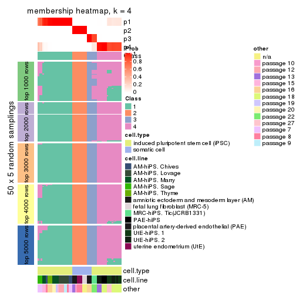
membership_heatmap(res, k = 5)
membership_heatmap(res, k = 6)
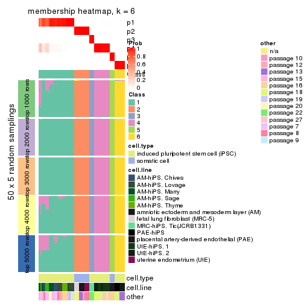
As soon as we have had the classes for columns, we can look for signatures which are significantly different between classes which can be candidate marks for certain classes. Following are the heatmaps for signatures.
Signature heatmaps where rows are scaled:
get_signatures(res, k = 2)

get_signatures(res, k = 3)
get_signatures(res, k = 4)
get_signatures(res, k = 5)
get_signatures(res, k = 6)
Signature heatmaps where rows are not scaled:
get_signatures(res, k = 2, scale_rows = FALSE)

get_signatures(res, k = 3, scale_rows = FALSE)
get_signatures(res, k = 4, scale_rows = FALSE)
get_signatures(res, k = 5, scale_rows = FALSE)
get_signatures(res, k = 6, scale_rows = FALSE)
Compare the overlap of signatures from different k:
compare_signatures(res)
get_signature() returns a data frame invisibly. TO get the list of signatures, the function
call should be assigned to a variable explicitly. In following code, if plot argument is set
to FALSE, no heatmap is plotted while only the differential analysis is performed.
# code only for demonstration
tb = get_signature(res, k = ..., plot = FALSE)
An example of the output of tb is:
#> which_row fdr mean_1 mean_2 scaled_mean_1 scaled_mean_2 km
#> 1 38 0.042760348 8.373488 9.131774 -0.5533452 0.5164555 1
#> 2 40 0.018707592 7.106213 8.469186 -0.6173731 0.5762149 1
#> 3 55 0.019134737 10.221463 11.207825 -0.6159697 0.5749050 1
#> 4 59 0.006059896 5.921854 7.869574 -0.6899429 0.6439467 1
#> 5 60 0.018055526 8.928898 10.211722 -0.6204761 0.5791110 1
#> 6 98 0.009384629 15.714769 14.887706 0.6635654 -0.6193277 2
...
The columns in tb are:
which_row: row indices corresponding to the input matrix.fdr: FDR for the differential test. mean_x: The mean value in group x.scaled_mean_x: The mean value in group x after rows are scaled.km: Row groups if k-means clustering is applied to rows.UMAP plot which shows how samples are separated.
dimension_reduction(res, k = 2, method = "UMAP")

dimension_reduction(res, k = 3, method = "UMAP")
dimension_reduction(res, k = 4, method = "UMAP")
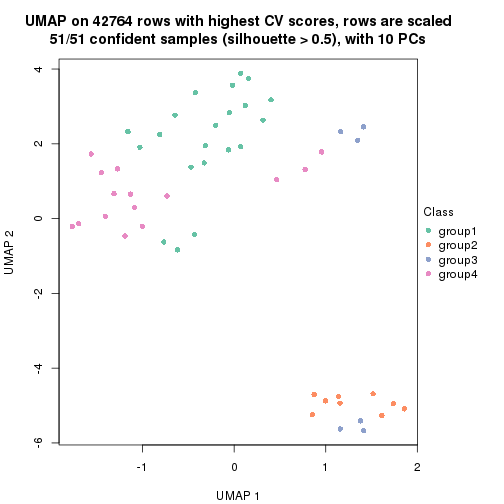
dimension_reduction(res, k = 5, method = "UMAP")
dimension_reduction(res, k = 6, method = "UMAP")
Following heatmap shows how subgroups are split when increasing k:
collect_classes(res)
Test correlation between subgroups and known annotations. If the known annotation is numeric, one-way ANOVA test is applied, and if the known annotation is discrete, chi-squared contingency table test is applied.
test_to_known_factors(res)
#> n cell.type(p) cell.line(p) other(p) k
#> CV:mclust 51 1.46e-11 9.31e-07 5.89e-03 2
#> CV:mclust 51 5.44e-10 1.37e-11 6.36e-06 3
#> CV:mclust 51 2.90e-09 2.26e-16 1.42e-09 4
#> CV:mclust 51 2.23e-10 3.95e-21 4.56e-12 5
#> CV:mclust 51 8.65e-10 2.41e-22 1.91e-11 6
If matrix rows can be associated to genes, consider to use GO_Enrichment(res,
...) to perform function enrichment for the signature genes.
The object with results only for a single top-value method and a single partition method can be extracted as:
res = res_list["CV", "NMF"]
# you can also extract it by
# res = res_list["CV:NMF"]
A summary of res and all the functions that can be applied to it:
res
#> A 'ConsensusPartition' object with k = 2, 3, 4, 5, 6.
#> On a matrix with 42764 rows and 51 columns.
#> Top rows (1000, 2000, 3000, 4000, 5000) are extracted by 'CV' method.
#> Subgroups are detected by 'NMF' method.
#> Performed in total 1250 partitions by row resampling.
#> Best k for subgroups seems to be 5.
#>
#> Following methods can be applied to this 'ConsensusPartition' object:
#> [1] "cola_report" "collect_classes" "collect_plots"
#> [4] "collect_stats" "colnames" "compare_signatures"
#> [7] "consensus_heatmap" "dimension_reduction" "functional_enrichment"
#> [10] "get_anno_col" "get_anno" "get_classes"
#> [13] "get_consensus" "get_matrix" "get_membership"
#> [16] "get_param" "get_signatures" "get_stats"
#> [19] "is_best_k" "is_stable_k" "membership_heatmap"
#> [22] "ncol" "nrow" "plot_ecdf"
#> [25] "rownames" "select_partition_number" "show"
#> [28] "suggest_best_k" "test_to_known_factors"
collect_plots() function collects all the plots made from res for all k (number of partitions)
into one single page to provide an easy and fast comparison between different k.
collect_plots(res)
The plots are:
k and the heatmap of
predicted classes for each k.k.k.k.All the plots in panels can be made by individual functions and they are plotted later in this section.
select_partition_number() produces several plots showing different
statistics for choosing “optimized” k. There are following statistics:
k;k, the area increased is defined as \(A_k - A_{k-1}\).The detailed explanations of these statistics can be found in the cola vignette.
Generally speaking, lower PAC score, higher mean silhouette score or higher
concordance corresponds to better partition. Rand index and Jaccard index
measure how similar the current partition is compared to partition with k-1.
If they are too similar, we won't accept k is better than k-1.
select_partition_number(res)
The numeric values for all these statistics can be obtained by get_stats().
get_stats(res)
#> k 1-PAC mean_silhouette concordance area_increased Rand Jaccard
#> 2 2 1.000 1.000 1.000 0.3677 0.633 0.633
#> 3 3 0.745 0.932 0.911 0.4411 0.788 0.665
#> 4 4 0.793 0.784 0.894 0.2290 0.894 0.761
#> 5 5 0.906 0.903 0.939 0.1153 0.838 0.594
#> 6 6 0.842 0.653 0.856 0.0594 0.989 0.961
suggest_best_k() suggests the best \(k\) based on these statistics. The rules are as follows:
NA.suggest_best_k(res)
#> [1] 5
#> attr(,"optional")
#> [1] 2
There is also optional best \(k\) = 2 that is worth to check.
Following shows the table of the partitions (You need to click the show/hide
code output link to see it). The membership matrix (columns with name p*)
is inferred by
clue::cl_consensus()
function with the SE method. Basically the value in the membership matrix
represents the probability to belong to a certain group. The finall class
label for an item is determined with the group with highest probability it
belongs to.
In get_classes() function, the entropy is calculated from the membership
matrix and the silhouette score is calculated from the consensus matrix.
cbind(get_classes(res, k = 2), get_membership(res, k = 2))
#> class entropy silhouette p1 p2
#> GSM520665 2 0 1 0 1
#> GSM520666 2 0 1 0 1
#> GSM520667 2 0 1 0 1
#> GSM520704 2 0 1 0 1
#> GSM520705 2 0 1 0 1
#> GSM520711 2 0 1 0 1
#> GSM520692 2 0 1 0 1
#> GSM520693 2 0 1 0 1
#> GSM520694 2 0 1 0 1
#> GSM520689 2 0 1 0 1
#> GSM520690 2 0 1 0 1
#> GSM520691 2 0 1 0 1
#> GSM520668 1 0 1 1 0
#> GSM520669 1 0 1 1 0
#> GSM520670 1 0 1 1 0
#> GSM520713 1 0 1 1 0
#> GSM520714 1 0 1 1 0
#> GSM520715 1 0 1 1 0
#> GSM520695 1 0 1 1 0
#> GSM520696 1 0 1 1 0
#> GSM520697 1 0 1 1 0
#> GSM520709 1 0 1 1 0
#> GSM520710 1 0 1 1 0
#> GSM520712 1 0 1 1 0
#> GSM520698 1 0 1 1 0
#> GSM520699 1 0 1 1 0
#> GSM520700 1 0 1 1 0
#> GSM520701 1 0 1 1 0
#> GSM520702 1 0 1 1 0
#> GSM520703 1 0 1 1 0
#> GSM520671 1 0 1 1 0
#> GSM520672 1 0 1 1 0
#> GSM520673 1 0 1 1 0
#> GSM520681 1 0 1 1 0
#> GSM520682 1 0 1 1 0
#> GSM520680 1 0 1 1 0
#> GSM520677 1 0 1 1 0
#> GSM520678 1 0 1 1 0
#> GSM520679 1 0 1 1 0
#> GSM520674 1 0 1 1 0
#> GSM520675 1 0 1 1 0
#> GSM520676 1 0 1 1 0
#> GSM520686 1 0 1 1 0
#> GSM520687 1 0 1 1 0
#> GSM520688 1 0 1 1 0
#> GSM520683 1 0 1 1 0
#> GSM520684 1 0 1 1 0
#> GSM520685 1 0 1 1 0
#> GSM520708 1 0 1 1 0
#> GSM520706 1 0 1 1 0
#> GSM520707 1 0 1 1 0
cbind(get_classes(res, k = 3), get_membership(res, k = 3))
#> class entropy silhouette p1 p2 p3
#> GSM520665 2 0.000 0.938 0.000 1.000 0.000
#> GSM520666 2 0.000 0.938 0.000 1.000 0.000
#> GSM520667 2 0.000 0.938 0.000 1.000 0.000
#> GSM520704 2 0.565 0.801 0.000 0.688 0.312
#> GSM520705 2 0.565 0.801 0.000 0.688 0.312
#> GSM520711 2 0.565 0.801 0.000 0.688 0.312
#> GSM520692 2 0.000 0.938 0.000 1.000 0.000
#> GSM520693 2 0.000 0.938 0.000 1.000 0.000
#> GSM520694 2 0.000 0.938 0.000 1.000 0.000
#> GSM520689 2 0.000 0.938 0.000 1.000 0.000
#> GSM520690 2 0.000 0.938 0.000 1.000 0.000
#> GSM520691 2 0.000 0.938 0.000 1.000 0.000
#> GSM520668 3 0.562 0.994 0.308 0.000 0.692
#> GSM520669 3 0.562 0.994 0.308 0.000 0.692
#> GSM520670 3 0.565 0.998 0.312 0.000 0.688
#> GSM520713 3 0.565 0.998 0.312 0.000 0.688
#> GSM520714 3 0.565 0.998 0.312 0.000 0.688
#> GSM520715 3 0.565 0.998 0.312 0.000 0.688
#> GSM520695 1 0.164 0.925 0.956 0.000 0.044
#> GSM520696 1 0.296 0.845 0.900 0.000 0.100
#> GSM520697 1 0.153 0.929 0.960 0.000 0.040
#> GSM520709 1 0.116 0.940 0.972 0.000 0.028
#> GSM520710 1 0.116 0.940 0.972 0.000 0.028
#> GSM520712 1 0.129 0.937 0.968 0.000 0.032
#> GSM520698 3 0.565 0.998 0.312 0.000 0.688
#> GSM520699 3 0.565 0.998 0.312 0.000 0.688
#> GSM520700 3 0.565 0.998 0.312 0.000 0.688
#> GSM520701 1 0.153 0.930 0.960 0.000 0.040
#> GSM520702 1 0.465 0.618 0.792 0.000 0.208
#> GSM520703 1 0.525 0.449 0.736 0.000 0.264
#> GSM520671 1 0.000 0.961 1.000 0.000 0.000
#> GSM520672 1 0.000 0.961 1.000 0.000 0.000
#> GSM520673 1 0.000 0.961 1.000 0.000 0.000
#> GSM520681 1 0.000 0.961 1.000 0.000 0.000
#> GSM520682 1 0.000 0.961 1.000 0.000 0.000
#> GSM520680 1 0.000 0.961 1.000 0.000 0.000
#> GSM520677 1 0.000 0.961 1.000 0.000 0.000
#> GSM520678 1 0.000 0.961 1.000 0.000 0.000
#> GSM520679 1 0.000 0.961 1.000 0.000 0.000
#> GSM520674 1 0.000 0.961 1.000 0.000 0.000
#> GSM520675 1 0.000 0.961 1.000 0.000 0.000
#> GSM520676 1 0.000 0.961 1.000 0.000 0.000
#> GSM520686 1 0.000 0.961 1.000 0.000 0.000
#> GSM520687 1 0.000 0.961 1.000 0.000 0.000
#> GSM520688 1 0.000 0.961 1.000 0.000 0.000
#> GSM520683 1 0.000 0.961 1.000 0.000 0.000
#> GSM520684 1 0.000 0.961 1.000 0.000 0.000
#> GSM520685 1 0.000 0.961 1.000 0.000 0.000
#> GSM520708 1 0.000 0.961 1.000 0.000 0.000
#> GSM520706 1 0.000 0.961 1.000 0.000 0.000
#> GSM520707 1 0.000 0.961 1.000 0.000 0.000
cbind(get_classes(res, k = 4), get_membership(res, k = 4))
#> class entropy silhouette p1 p2 p3 p4
#> GSM520665 2 0.0000 1.000 0.000 1.000 0.000 0.000
#> GSM520666 2 0.0000 1.000 0.000 1.000 0.000 0.000
#> GSM520667 2 0.0000 1.000 0.000 1.000 0.000 0.000
#> GSM520704 3 0.3942 1.000 0.000 0.236 0.764 0.000
#> GSM520705 3 0.3942 1.000 0.000 0.236 0.764 0.000
#> GSM520711 3 0.3942 1.000 0.000 0.236 0.764 0.000
#> GSM520692 2 0.0000 1.000 0.000 1.000 0.000 0.000
#> GSM520693 2 0.0000 1.000 0.000 1.000 0.000 0.000
#> GSM520694 2 0.0000 1.000 0.000 1.000 0.000 0.000
#> GSM520689 2 0.0000 1.000 0.000 1.000 0.000 0.000
#> GSM520690 2 0.0000 1.000 0.000 1.000 0.000 0.000
#> GSM520691 2 0.0000 1.000 0.000 1.000 0.000 0.000
#> GSM520668 4 0.3942 0.660 0.000 0.000 0.236 0.764
#> GSM520669 4 0.3942 0.660 0.000 0.000 0.236 0.764
#> GSM520670 4 0.3942 0.660 0.000 0.000 0.236 0.764
#> GSM520713 4 0.1557 0.737 0.000 0.000 0.056 0.944
#> GSM520714 4 0.1022 0.738 0.000 0.000 0.032 0.968
#> GSM520715 4 0.1302 0.738 0.000 0.000 0.044 0.956
#> GSM520695 1 0.4933 0.337 0.568 0.000 0.000 0.432
#> GSM520696 4 0.4989 -0.110 0.472 0.000 0.000 0.528
#> GSM520697 1 0.4888 0.390 0.588 0.000 0.000 0.412
#> GSM520709 1 0.4830 0.435 0.608 0.000 0.000 0.392
#> GSM520710 1 0.4830 0.435 0.608 0.000 0.000 0.392
#> GSM520712 1 0.4830 0.435 0.608 0.000 0.000 0.392
#> GSM520698 4 0.0921 0.738 0.000 0.000 0.028 0.972
#> GSM520699 4 0.0921 0.738 0.000 0.000 0.028 0.972
#> GSM520700 4 0.2704 0.714 0.000 0.000 0.124 0.876
#> GSM520701 1 0.4877 0.400 0.592 0.000 0.000 0.408
#> GSM520702 4 0.4679 0.313 0.352 0.000 0.000 0.648
#> GSM520703 4 0.4222 0.493 0.272 0.000 0.000 0.728
#> GSM520671 1 0.0000 0.883 1.000 0.000 0.000 0.000
#> GSM520672 1 0.0000 0.883 1.000 0.000 0.000 0.000
#> GSM520673 1 0.0000 0.883 1.000 0.000 0.000 0.000
#> GSM520681 1 0.0000 0.883 1.000 0.000 0.000 0.000
#> GSM520682 1 0.0000 0.883 1.000 0.000 0.000 0.000
#> GSM520680 1 0.0000 0.883 1.000 0.000 0.000 0.000
#> GSM520677 1 0.1022 0.869 0.968 0.000 0.000 0.032
#> GSM520678 1 0.0817 0.873 0.976 0.000 0.000 0.024
#> GSM520679 1 0.0707 0.875 0.980 0.000 0.000 0.020
#> GSM520674 1 0.0592 0.877 0.984 0.000 0.000 0.016
#> GSM520675 1 0.0188 0.882 0.996 0.000 0.000 0.004
#> GSM520676 1 0.0188 0.882 0.996 0.000 0.000 0.004
#> GSM520686 1 0.0000 0.883 1.000 0.000 0.000 0.000
#> GSM520687 1 0.0000 0.883 1.000 0.000 0.000 0.000
#> GSM520688 1 0.0000 0.883 1.000 0.000 0.000 0.000
#> GSM520683 1 0.0000 0.883 1.000 0.000 0.000 0.000
#> GSM520684 1 0.0000 0.883 1.000 0.000 0.000 0.000
#> GSM520685 1 0.0000 0.883 1.000 0.000 0.000 0.000
#> GSM520708 1 0.1389 0.854 0.952 0.000 0.000 0.048
#> GSM520706 1 0.0188 0.882 0.996 0.000 0.000 0.004
#> GSM520707 1 0.0000 0.883 1.000 0.000 0.000 0.000
cbind(get_classes(res, k = 5), get_membership(res, k = 5))
#> class entropy silhouette p1 p2 p3 p4 p5
#> GSM520665 2 0.1732 0.945 0.000 0.920 0.080 0.000 0.000
#> GSM520666 2 0.1732 0.945 0.000 0.920 0.080 0.000 0.000
#> GSM520667 2 0.1732 0.945 0.000 0.920 0.080 0.000 0.000
#> GSM520704 5 0.0703 1.000 0.000 0.024 0.000 0.000 0.976
#> GSM520705 5 0.0703 1.000 0.000 0.024 0.000 0.000 0.976
#> GSM520711 5 0.0703 1.000 0.000 0.024 0.000 0.000 0.976
#> GSM520692 2 0.0000 0.973 0.000 1.000 0.000 0.000 0.000
#> GSM520693 2 0.0000 0.973 0.000 1.000 0.000 0.000 0.000
#> GSM520694 2 0.0000 0.973 0.000 1.000 0.000 0.000 0.000
#> GSM520689 2 0.0000 0.973 0.000 1.000 0.000 0.000 0.000
#> GSM520690 2 0.0000 0.973 0.000 1.000 0.000 0.000 0.000
#> GSM520691 2 0.0000 0.973 0.000 1.000 0.000 0.000 0.000
#> GSM520668 3 0.1732 1.000 0.000 0.000 0.920 0.080 0.000
#> GSM520669 3 0.1732 1.000 0.000 0.000 0.920 0.080 0.000
#> GSM520670 3 0.1732 1.000 0.000 0.000 0.920 0.080 0.000
#> GSM520713 4 0.3612 0.594 0.000 0.000 0.268 0.732 0.000
#> GSM520714 4 0.2773 0.724 0.000 0.000 0.164 0.836 0.000
#> GSM520715 4 0.3242 0.668 0.000 0.000 0.216 0.784 0.000
#> GSM520695 4 0.1608 0.844 0.072 0.000 0.000 0.928 0.000
#> GSM520696 4 0.1197 0.846 0.048 0.000 0.000 0.952 0.000
#> GSM520697 4 0.1608 0.844 0.072 0.000 0.000 0.928 0.000
#> GSM520709 4 0.1671 0.842 0.076 0.000 0.000 0.924 0.000
#> GSM520710 4 0.1671 0.842 0.076 0.000 0.000 0.924 0.000
#> GSM520712 4 0.1671 0.842 0.076 0.000 0.000 0.924 0.000
#> GSM520698 4 0.2824 0.759 0.000 0.000 0.116 0.864 0.020
#> GSM520699 4 0.2969 0.750 0.000 0.000 0.128 0.852 0.020
#> GSM520700 4 0.4707 0.236 0.000 0.000 0.392 0.588 0.020
#> GSM520701 4 0.2110 0.844 0.072 0.000 0.000 0.912 0.016
#> GSM520702 4 0.1117 0.835 0.020 0.000 0.000 0.964 0.016
#> GSM520703 4 0.1211 0.837 0.024 0.000 0.000 0.960 0.016
#> GSM520671 1 0.0000 0.972 1.000 0.000 0.000 0.000 0.000
#> GSM520672 1 0.0000 0.972 1.000 0.000 0.000 0.000 0.000
#> GSM520673 1 0.0000 0.972 1.000 0.000 0.000 0.000 0.000
#> GSM520681 1 0.0162 0.971 0.996 0.000 0.000 0.004 0.000
#> GSM520682 1 0.0162 0.971 0.996 0.000 0.000 0.004 0.000
#> GSM520680 1 0.0162 0.971 0.996 0.000 0.000 0.000 0.004
#> GSM520677 1 0.1952 0.919 0.912 0.000 0.000 0.084 0.004
#> GSM520678 1 0.1571 0.941 0.936 0.000 0.000 0.060 0.004
#> GSM520679 1 0.1571 0.941 0.936 0.000 0.000 0.060 0.004
#> GSM520674 1 0.1430 0.947 0.944 0.000 0.000 0.052 0.004
#> GSM520675 1 0.1124 0.957 0.960 0.000 0.000 0.036 0.004
#> GSM520676 1 0.1041 0.958 0.964 0.000 0.000 0.032 0.004
#> GSM520686 1 0.0000 0.972 1.000 0.000 0.000 0.000 0.000
#> GSM520687 1 0.0000 0.972 1.000 0.000 0.000 0.000 0.000
#> GSM520688 1 0.0000 0.972 1.000 0.000 0.000 0.000 0.000
#> GSM520683 1 0.0000 0.972 1.000 0.000 0.000 0.000 0.000
#> GSM520684 1 0.0000 0.972 1.000 0.000 0.000 0.000 0.000
#> GSM520685 1 0.0000 0.972 1.000 0.000 0.000 0.000 0.000
#> GSM520708 1 0.2605 0.818 0.852 0.000 0.000 0.148 0.000
#> GSM520706 1 0.0404 0.968 0.988 0.000 0.000 0.012 0.000
#> GSM520707 1 0.0162 0.971 0.996 0.000 0.000 0.004 0.000
cbind(get_classes(res, k = 6), get_membership(res, k = 6))
#> class entropy silhouette p1 p2 p3 p4 p5 p6
#> GSM520665 2 0.3309 0.790 0.000 0.720 0.000 0.000 0.000 0.280
#> GSM520666 2 0.3309 0.790 0.000 0.720 0.000 0.000 0.000 0.280
#> GSM520667 2 0.3309 0.790 0.000 0.720 0.000 0.000 0.000 0.280
#> GSM520704 5 0.0260 1.000 0.000 0.008 0.000 0.000 0.992 0.000
#> GSM520705 5 0.0260 1.000 0.000 0.008 0.000 0.000 0.992 0.000
#> GSM520711 5 0.0260 1.000 0.000 0.008 0.000 0.000 0.992 0.000
#> GSM520692 2 0.0000 0.901 0.000 1.000 0.000 0.000 0.000 0.000
#> GSM520693 2 0.0000 0.901 0.000 1.000 0.000 0.000 0.000 0.000
#> GSM520694 2 0.0000 0.901 0.000 1.000 0.000 0.000 0.000 0.000
#> GSM520689 2 0.0146 0.901 0.000 0.996 0.004 0.000 0.000 0.000
#> GSM520690 2 0.0146 0.901 0.000 0.996 0.004 0.000 0.000 0.000
#> GSM520691 2 0.0291 0.899 0.000 0.992 0.004 0.000 0.000 0.004
#> GSM520668 3 0.0146 1.000 0.000 0.000 0.996 0.004 0.000 0.000
#> GSM520669 3 0.0146 1.000 0.000 0.000 0.996 0.004 0.000 0.000
#> GSM520670 3 0.0146 1.000 0.000 0.000 0.996 0.004 0.000 0.000
#> GSM520713 6 0.6053 0.000 0.000 0.000 0.256 0.368 0.000 0.376
#> GSM520714 4 0.5943 -0.870 0.000 0.000 0.216 0.404 0.000 0.380
#> GSM520715 4 0.6005 -0.936 0.000 0.000 0.236 0.384 0.000 0.380
#> GSM520695 4 0.3717 0.182 0.000 0.000 0.000 0.616 0.000 0.384
#> GSM520696 4 0.3717 0.182 0.000 0.000 0.000 0.616 0.000 0.384
#> GSM520697 4 0.3706 0.182 0.000 0.000 0.000 0.620 0.000 0.380
#> GSM520709 4 0.3717 0.184 0.000 0.000 0.000 0.616 0.000 0.384
#> GSM520710 4 0.3717 0.184 0.000 0.000 0.000 0.616 0.000 0.384
#> GSM520712 4 0.3727 0.176 0.000 0.000 0.000 0.612 0.000 0.388
#> GSM520698 4 0.2265 0.382 0.000 0.000 0.052 0.896 0.000 0.052
#> GSM520699 4 0.2201 0.385 0.000 0.000 0.048 0.900 0.000 0.052
#> GSM520700 4 0.4007 0.231 0.000 0.000 0.220 0.728 0.000 0.052
#> GSM520701 4 0.0363 0.418 0.000 0.000 0.000 0.988 0.000 0.012
#> GSM520702 4 0.0146 0.418 0.000 0.000 0.000 0.996 0.000 0.004
#> GSM520703 4 0.0458 0.417 0.000 0.000 0.000 0.984 0.000 0.016
#> GSM520671 1 0.0790 0.893 0.968 0.000 0.000 0.000 0.000 0.032
#> GSM520672 1 0.0458 0.895 0.984 0.000 0.000 0.000 0.000 0.016
#> GSM520673 1 0.1327 0.885 0.936 0.000 0.000 0.000 0.000 0.064
#> GSM520681 1 0.0363 0.896 0.988 0.000 0.000 0.000 0.000 0.012
#> GSM520682 1 0.0692 0.895 0.976 0.000 0.000 0.000 0.004 0.020
#> GSM520680 1 0.2948 0.832 0.804 0.000 0.000 0.000 0.008 0.188
#> GSM520677 1 0.4322 0.747 0.672 0.000 0.000 0.032 0.008 0.288
#> GSM520678 1 0.4001 0.778 0.704 0.000 0.000 0.020 0.008 0.268
#> GSM520679 1 0.4152 0.771 0.696 0.000 0.000 0.028 0.008 0.268
#> GSM520674 1 0.3809 0.788 0.716 0.000 0.000 0.012 0.008 0.264
#> GSM520675 1 0.3787 0.790 0.720 0.000 0.000 0.012 0.008 0.260
#> GSM520676 1 0.3809 0.788 0.716 0.000 0.000 0.012 0.008 0.264
#> GSM520686 1 0.0000 0.896 1.000 0.000 0.000 0.000 0.000 0.000
#> GSM520687 1 0.0000 0.896 1.000 0.000 0.000 0.000 0.000 0.000
#> GSM520688 1 0.0000 0.896 1.000 0.000 0.000 0.000 0.000 0.000
#> GSM520683 1 0.0000 0.896 1.000 0.000 0.000 0.000 0.000 0.000
#> GSM520684 1 0.0000 0.896 1.000 0.000 0.000 0.000 0.000 0.000
#> GSM520685 1 0.0000 0.896 1.000 0.000 0.000 0.000 0.000 0.000
#> GSM520708 1 0.1225 0.864 0.952 0.000 0.000 0.036 0.000 0.012
#> GSM520706 1 0.0146 0.894 0.996 0.000 0.000 0.004 0.000 0.000
#> GSM520707 1 0.0000 0.896 1.000 0.000 0.000 0.000 0.000 0.000
Heatmaps for the consensus matrix. It visualizes the probability of two samples to be in a same group.
consensus_heatmap(res, k = 2)

consensus_heatmap(res, k = 3)
consensus_heatmap(res, k = 4)
consensus_heatmap(res, k = 5)
consensus_heatmap(res, k = 6)
Heatmaps for the membership of samples in all partitions to see how consistent they are:
membership_heatmap(res, k = 2)

membership_heatmap(res, k = 3)
membership_heatmap(res, k = 4)
membership_heatmap(res, k = 5)
membership_heatmap(res, k = 6)
As soon as we have had the classes for columns, we can look for signatures which are significantly different between classes which can be candidate marks for certain classes. Following are the heatmaps for signatures.
Signature heatmaps where rows are scaled:
get_signatures(res, k = 2)

get_signatures(res, k = 3)
#> Error in mat[ceiling(1:nr/h_ratio), ceiling(1:nc/w_ratio), drop = FALSE]: subscript out of bounds
get_signatures(res, k = 4)
#> Error in mat[ceiling(1:nr/h_ratio), ceiling(1:nc/w_ratio), drop = FALSE]: subscript out of bounds
get_signatures(res, k = 5)
#> Error in mat[ceiling(1:nr/h_ratio), ceiling(1:nc/w_ratio), drop = FALSE]: subscript out of bounds
get_signatures(res, k = 6)
#> Error in mat[ceiling(1:nr/h_ratio), ceiling(1:nc/w_ratio), drop = FALSE]: subscript out of bounds
Signature heatmaps where rows are not scaled:
get_signatures(res, k = 2, scale_rows = FALSE)

get_signatures(res, k = 3, scale_rows = FALSE)
get_signatures(res, k = 4, scale_rows = FALSE)

get_signatures(res, k = 5, scale_rows = FALSE)
get_signatures(res, k = 6, scale_rows = FALSE)
Compare the overlap of signatures from different k:
compare_signatures(res)
get_signature() returns a data frame invisibly. TO get the list of signatures, the function
call should be assigned to a variable explicitly. In following code, if plot argument is set
to FALSE, no heatmap is plotted while only the differential analysis is performed.
# code only for demonstration
tb = get_signature(res, k = ..., plot = FALSE)
An example of the output of tb is:
#> which_row fdr mean_1 mean_2 scaled_mean_1 scaled_mean_2 km
#> 1 38 0.042760348 8.373488 9.131774 -0.5533452 0.5164555 1
#> 2 40 0.018707592 7.106213 8.469186 -0.6173731 0.5762149 1
#> 3 55 0.019134737 10.221463 11.207825 -0.6159697 0.5749050 1
#> 4 59 0.006059896 5.921854 7.869574 -0.6899429 0.6439467 1
#> 5 60 0.018055526 8.928898 10.211722 -0.6204761 0.5791110 1
#> 6 98 0.009384629 15.714769 14.887706 0.6635654 -0.6193277 2
...
The columns in tb are:
which_row: row indices corresponding to the input matrix.fdr: FDR for the differential test. mean_x: The mean value in group x.scaled_mean_x: The mean value in group x after rows are scaled.km: Row groups if k-means clustering is applied to rows.UMAP plot which shows how samples are separated.
dimension_reduction(res, k = 2, method = "UMAP")

dimension_reduction(res, k = 3, method = "UMAP")
dimension_reduction(res, k = 4, method = "UMAP")
dimension_reduction(res, k = 5, method = "UMAP")
dimension_reduction(res, k = 6, method = "UMAP")
Following heatmap shows how subgroups are split when increasing k:
collect_classes(res)
Test correlation between subgroups and known annotations. If the known annotation is numeric, one-way ANOVA test is applied, and if the known annotation is discrete, chi-squared contingency table test is applied.
test_to_known_factors(res)
#> n cell.type(p) cell.line(p) other(p) k
#> CV:NMF 51 1.46e-11 9.31e-07 5.89e-03 2
#> CV:NMF 50 1.39e-11 8.89e-10 2.44e-04 3
#> CV:NMF 42 4.01e-09 8.59e-13 1.50e-05 4
#> CV:NMF 50 3.61e-10 1.86e-20 7.55e-12 5
#> CV:NMF 36 7.49e-08 1.21e-11 7.41e-06 6
If matrix rows can be associated to genes, consider to use GO_Enrichment(res,
...) to perform function enrichment for the signature genes.
The object with results only for a single top-value method and a single partition method can be extracted as:
res = res_list["MAD", "hclust"]
# you can also extract it by
# res = res_list["MAD:hclust"]
A summary of res and all the functions that can be applied to it:
res
#> A 'ConsensusPartition' object with k = 2, 3, 4, 5, 6.
#> On a matrix with 42764 rows and 51 columns.
#> Top rows (1000, 2000, 3000, 4000, 5000) are extracted by 'MAD' method.
#> Subgroups are detected by 'hclust' method.
#> Performed in total 1250 partitions by row resampling.
#> Best k for subgroups seems to be 5.
#>
#> Following methods can be applied to this 'ConsensusPartition' object:
#> [1] "cola_report" "collect_classes" "collect_plots"
#> [4] "collect_stats" "colnames" "compare_signatures"
#> [7] "consensus_heatmap" "dimension_reduction" "functional_enrichment"
#> [10] "get_anno_col" "get_anno" "get_classes"
#> [13] "get_consensus" "get_matrix" "get_membership"
#> [16] "get_param" "get_signatures" "get_stats"
#> [19] "is_best_k" "is_stable_k" "membership_heatmap"
#> [22] "ncol" "nrow" "plot_ecdf"
#> [25] "rownames" "select_partition_number" "show"
#> [28] "suggest_best_k" "test_to_known_factors"
collect_plots() function collects all the plots made from res for all k (number of partitions)
into one single page to provide an easy and fast comparison between different k.
collect_plots(res)
The plots are:
k and the heatmap of
predicted classes for each k.k.k.k.All the plots in panels can be made by individual functions and they are plotted later in this section.
select_partition_number() produces several plots showing different
statistics for choosing “optimized” k. There are following statistics:
k;k, the area increased is defined as \(A_k - A_{k-1}\).The detailed explanations of these statistics can be found in the cola vignette.
Generally speaking, lower PAC score, higher mean silhouette score or higher
concordance corresponds to better partition. Rand index and Jaccard index
measure how similar the current partition is compared to partition with k-1.
If they are too similar, we won't accept k is better than k-1.
select_partition_number(res)
The numeric values for all these statistics can be obtained by get_stats().
get_stats(res)
#> k 1-PAC mean_silhouette concordance area_increased Rand Jaccard
#> 2 2 1.000 1.000 1.000 0.3677 0.633 0.633
#> 3 3 0.713 0.817 0.813 0.6004 0.718 0.554
#> 4 4 0.649 0.741 0.770 0.0669 0.979 0.940
#> 5 5 0.960 0.976 0.987 0.1942 0.915 0.743
#> 6 6 1.000 0.976 0.987 0.0229 0.993 0.971
suggest_best_k() suggests the best \(k\) based on these statistics. The rules are as follows:
NA.suggest_best_k(res)
#> [1] 5
#> attr(,"optional")
#> [1] 2
There is also optional best \(k\) = 2 that is worth to check.
Following shows the table of the partitions (You need to click the show/hide
code output link to see it). The membership matrix (columns with name p*)
is inferred by
clue::cl_consensus()
function with the SE method. Basically the value in the membership matrix
represents the probability to belong to a certain group. The finall class
label for an item is determined with the group with highest probability it
belongs to.
In get_classes() function, the entropy is calculated from the membership
matrix and the silhouette score is calculated from the consensus matrix.
cbind(get_classes(res, k = 2), get_membership(res, k = 2))
#> class entropy silhouette p1 p2
#> GSM520665 2 0 1 0 1
#> GSM520666 2 0 1 0 1
#> GSM520667 2 0 1 0 1
#> GSM520704 2 0 1 0 1
#> GSM520705 2 0 1 0 1
#> GSM520711 2 0 1 0 1
#> GSM520692 2 0 1 0 1
#> GSM520693 2 0 1 0 1
#> GSM520694 2 0 1 0 1
#> GSM520689 2 0 1 0 1
#> GSM520690 2 0 1 0 1
#> GSM520691 2 0 1 0 1
#> GSM520668 1 0 1 1 0
#> GSM520669 1 0 1 1 0
#> GSM520670 1 0 1 1 0
#> GSM520713 1 0 1 1 0
#> GSM520714 1 0 1 1 0
#> GSM520715 1 0 1 1 0
#> GSM520695 1 0 1 1 0
#> GSM520696 1 0 1 1 0
#> GSM520697 1 0 1 1 0
#> GSM520709 1 0 1 1 0
#> GSM520710 1 0 1 1 0
#> GSM520712 1 0 1 1 0
#> GSM520698 1 0 1 1 0
#> GSM520699 1 0 1 1 0
#> GSM520700 1 0 1 1 0
#> GSM520701 1 0 1 1 0
#> GSM520702 1 0 1 1 0
#> GSM520703 1 0 1 1 0
#> GSM520671 1 0 1 1 0
#> GSM520672 1 0 1 1 0
#> GSM520673 1 0 1 1 0
#> GSM520681 1 0 1 1 0
#> GSM520682 1 0 1 1 0
#> GSM520680 1 0 1 1 0
#> GSM520677 1 0 1 1 0
#> GSM520678 1 0 1 1 0
#> GSM520679 1 0 1 1 0
#> GSM520674 1 0 1 1 0
#> GSM520675 1 0 1 1 0
#> GSM520676 1 0 1 1 0
#> GSM520686 1 0 1 1 0
#> GSM520687 1 0 1 1 0
#> GSM520688 1 0 1 1 0
#> GSM520683 1 0 1 1 0
#> GSM520684 1 0 1 1 0
#> GSM520685 1 0 1 1 0
#> GSM520708 1 0 1 1 0
#> GSM520706 1 0 1 1 0
#> GSM520707 1 0 1 1 0
cbind(get_classes(res, k = 3), get_membership(res, k = 3))
#> class entropy silhouette p1 p2 p3
#> GSM520665 2 0.000 1.000 0.000 1 0.000
#> GSM520666 2 0.000 1.000 0.000 1 0.000
#> GSM520667 2 0.000 1.000 0.000 1 0.000
#> GSM520704 2 0.000 1.000 0.000 1 0.000
#> GSM520705 2 0.000 1.000 0.000 1 0.000
#> GSM520711 2 0.000 1.000 0.000 1 0.000
#> GSM520692 2 0.000 1.000 0.000 1 0.000
#> GSM520693 2 0.000 1.000 0.000 1 0.000
#> GSM520694 2 0.000 1.000 0.000 1 0.000
#> GSM520689 2 0.000 1.000 0.000 1 0.000
#> GSM520690 2 0.000 1.000 0.000 1 0.000
#> GSM520691 2 0.000 1.000 0.000 1 0.000
#> GSM520668 3 0.000 0.409 0.000 0 1.000
#> GSM520669 3 0.000 0.409 0.000 0 1.000
#> GSM520670 3 0.000 0.409 0.000 0 1.000
#> GSM520713 1 0.000 0.989 1.000 0 0.000
#> GSM520714 1 0.000 0.989 1.000 0 0.000
#> GSM520715 1 0.000 0.989 1.000 0 0.000
#> GSM520695 1 0.116 0.952 0.972 0 0.028
#> GSM520696 1 0.116 0.952 0.972 0 0.028
#> GSM520697 1 0.116 0.952 0.972 0 0.028
#> GSM520709 1 0.000 0.989 1.000 0 0.000
#> GSM520710 1 0.000 0.989 1.000 0 0.000
#> GSM520712 1 0.000 0.989 1.000 0 0.000
#> GSM520698 3 0.418 0.274 0.172 0 0.828
#> GSM520699 3 0.418 0.274 0.172 0 0.828
#> GSM520700 3 0.418 0.274 0.172 0 0.828
#> GSM520701 1 0.000 0.989 1.000 0 0.000
#> GSM520702 1 0.000 0.989 1.000 0 0.000
#> GSM520703 1 0.000 0.989 1.000 0 0.000
#> GSM520671 3 0.631 0.718 0.496 0 0.504
#> GSM520672 3 0.631 0.718 0.496 0 0.504
#> GSM520673 3 0.631 0.718 0.496 0 0.504
#> GSM520681 3 0.631 0.718 0.496 0 0.504
#> GSM520682 3 0.631 0.718 0.496 0 0.504
#> GSM520680 3 0.631 0.718 0.496 0 0.504
#> GSM520677 3 0.631 0.718 0.496 0 0.504
#> GSM520678 3 0.631 0.718 0.496 0 0.504
#> GSM520679 3 0.631 0.718 0.496 0 0.504
#> GSM520674 3 0.631 0.718 0.496 0 0.504
#> GSM520675 3 0.631 0.718 0.496 0 0.504
#> GSM520676 3 0.631 0.718 0.496 0 0.504
#> GSM520686 3 0.631 0.718 0.496 0 0.504
#> GSM520687 3 0.631 0.718 0.496 0 0.504
#> GSM520688 3 0.631 0.718 0.496 0 0.504
#> GSM520683 3 0.631 0.718 0.496 0 0.504
#> GSM520684 3 0.631 0.718 0.496 0 0.504
#> GSM520685 3 0.631 0.718 0.496 0 0.504
#> GSM520708 1 0.000 0.989 1.000 0 0.000
#> GSM520706 1 0.000 0.989 1.000 0 0.000
#> GSM520707 1 0.000 0.989 1.000 0 0.000
cbind(get_classes(res, k = 4), get_membership(res, k = 4))
#> class entropy silhouette p1 p2 p3 p4
#> GSM520665 2 0.000 1.0000 0.000 1.000 0.000 0.000
#> GSM520666 2 0.000 1.0000 0.000 1.000 0.000 0.000
#> GSM520667 2 0.000 1.0000 0.000 1.000 0.000 0.000
#> GSM520704 3 0.468 1.0000 0.000 0.352 0.648 0.000
#> GSM520705 3 0.468 1.0000 0.000 0.352 0.648 0.000
#> GSM520711 3 0.468 1.0000 0.000 0.352 0.648 0.000
#> GSM520692 2 0.000 1.0000 0.000 1.000 0.000 0.000
#> GSM520693 2 0.000 1.0000 0.000 1.000 0.000 0.000
#> GSM520694 2 0.000 1.0000 0.000 1.000 0.000 0.000
#> GSM520689 2 0.000 1.0000 0.000 1.000 0.000 0.000
#> GSM520690 2 0.000 1.0000 0.000 1.000 0.000 0.000
#> GSM520691 2 0.000 1.0000 0.000 1.000 0.000 0.000
#> GSM520668 1 0.468 -0.1123 0.648 0.000 0.352 0.000
#> GSM520669 1 0.468 -0.1123 0.648 0.000 0.352 0.000
#> GSM520670 1 0.468 -0.1123 0.648 0.000 0.352 0.000
#> GSM520713 4 0.000 0.9905 0.000 0.000 0.000 1.000
#> GSM520714 4 0.000 0.9905 0.000 0.000 0.000 1.000
#> GSM520715 4 0.000 0.9905 0.000 0.000 0.000 1.000
#> GSM520695 4 0.104 0.9609 0.020 0.000 0.008 0.972
#> GSM520696 4 0.104 0.9609 0.020 0.000 0.008 0.972
#> GSM520697 4 0.104 0.9609 0.020 0.000 0.008 0.972
#> GSM520709 4 0.000 0.9905 0.000 0.000 0.000 1.000
#> GSM520710 4 0.000 0.9905 0.000 0.000 0.000 1.000
#> GSM520712 4 0.000 0.9905 0.000 0.000 0.000 1.000
#> GSM520698 1 0.632 -0.0249 0.660 0.000 0.168 0.172
#> GSM520699 1 0.632 -0.0249 0.660 0.000 0.168 0.172
#> GSM520700 1 0.632 -0.0249 0.660 0.000 0.168 0.172
#> GSM520701 4 0.000 0.9905 0.000 0.000 0.000 1.000
#> GSM520702 4 0.000 0.9905 0.000 0.000 0.000 1.000
#> GSM520703 4 0.000 0.9905 0.000 0.000 0.000 1.000
#> GSM520671 1 0.499 0.6358 0.528 0.000 0.000 0.472
#> GSM520672 1 0.499 0.6358 0.528 0.000 0.000 0.472
#> GSM520673 1 0.499 0.6358 0.528 0.000 0.000 0.472
#> GSM520681 1 0.499 0.6358 0.528 0.000 0.000 0.472
#> GSM520682 1 0.499 0.6358 0.528 0.000 0.000 0.472
#> GSM520680 1 0.499 0.6358 0.528 0.000 0.000 0.472
#> GSM520677 1 0.499 0.6358 0.528 0.000 0.000 0.472
#> GSM520678 1 0.499 0.6358 0.528 0.000 0.000 0.472
#> GSM520679 1 0.499 0.6358 0.528 0.000 0.000 0.472
#> GSM520674 1 0.499 0.6358 0.528 0.000 0.000 0.472
#> GSM520675 1 0.499 0.6358 0.528 0.000 0.000 0.472
#> GSM520676 1 0.499 0.6358 0.528 0.000 0.000 0.472
#> GSM520686 1 0.499 0.6358 0.528 0.000 0.000 0.472
#> GSM520687 1 0.499 0.6358 0.528 0.000 0.000 0.472
#> GSM520688 1 0.499 0.6358 0.528 0.000 0.000 0.472
#> GSM520683 1 0.499 0.6358 0.528 0.000 0.000 0.472
#> GSM520684 1 0.499 0.6358 0.528 0.000 0.000 0.472
#> GSM520685 1 0.499 0.6358 0.528 0.000 0.000 0.472
#> GSM520708 4 0.000 0.9905 0.000 0.000 0.000 1.000
#> GSM520706 4 0.000 0.9905 0.000 0.000 0.000 1.000
#> GSM520707 4 0.000 0.9905 0.000 0.000 0.000 1.000
cbind(get_classes(res, k = 5), get_membership(res, k = 5))
#> class entropy silhouette p1 p2 p3 p4 p5
#> GSM520665 2 0.0000 1.000 0.00 1 0.000 0.000 0
#> GSM520666 2 0.0000 1.000 0.00 1 0.000 0.000 0
#> GSM520667 2 0.0000 1.000 0.00 1 0.000 0.000 0
#> GSM520704 5 0.0000 1.000 0.00 0 0.000 0.000 1
#> GSM520705 5 0.0000 1.000 0.00 0 0.000 0.000 1
#> GSM520711 5 0.0000 1.000 0.00 0 0.000 0.000 1
#> GSM520692 2 0.0000 1.000 0.00 1 0.000 0.000 0
#> GSM520693 2 0.0000 1.000 0.00 1 0.000 0.000 0
#> GSM520694 2 0.0000 1.000 0.00 1 0.000 0.000 0
#> GSM520689 2 0.0000 1.000 0.00 1 0.000 0.000 0
#> GSM520690 2 0.0000 1.000 0.00 1 0.000 0.000 0
#> GSM520691 2 0.0000 1.000 0.00 1 0.000 0.000 0
#> GSM520668 3 0.0000 0.823 0.00 0 1.000 0.000 0
#> GSM520669 3 0.0000 0.823 0.00 0 1.000 0.000 0
#> GSM520670 3 0.0000 0.823 0.00 0 1.000 0.000 0
#> GSM520713 4 0.0000 0.992 0.00 0 0.000 1.000 0
#> GSM520714 4 0.0000 0.992 0.00 0 0.000 1.000 0
#> GSM520715 4 0.0000 0.992 0.00 0 0.000 1.000 0
#> GSM520695 4 0.0898 0.968 0.02 0 0.008 0.972 0
#> GSM520696 4 0.0898 0.968 0.02 0 0.008 0.972 0
#> GSM520697 4 0.0898 0.968 0.02 0 0.008 0.972 0
#> GSM520709 4 0.0000 0.992 0.00 0 0.000 1.000 0
#> GSM520710 4 0.0000 0.992 0.00 0 0.000 1.000 0
#> GSM520712 4 0.0000 0.992 0.00 0 0.000 1.000 0
#> GSM520698 3 0.3438 0.828 0.02 0 0.808 0.172 0
#> GSM520699 3 0.3438 0.828 0.02 0 0.808 0.172 0
#> GSM520700 3 0.3438 0.828 0.02 0 0.808 0.172 0
#> GSM520701 4 0.0000 0.992 0.00 0 0.000 1.000 0
#> GSM520702 4 0.0000 0.992 0.00 0 0.000 1.000 0
#> GSM520703 4 0.0000 0.992 0.00 0 0.000 1.000 0
#> GSM520671 1 0.0000 1.000 1.00 0 0.000 0.000 0
#> GSM520672 1 0.0000 1.000 1.00 0 0.000 0.000 0
#> GSM520673 1 0.0000 1.000 1.00 0 0.000 0.000 0
#> GSM520681 1 0.0000 1.000 1.00 0 0.000 0.000 0
#> GSM520682 1 0.0000 1.000 1.00 0 0.000 0.000 0
#> GSM520680 1 0.0000 1.000 1.00 0 0.000 0.000 0
#> GSM520677 1 0.0000 1.000 1.00 0 0.000 0.000 0
#> GSM520678 1 0.0000 1.000 1.00 0 0.000 0.000 0
#> GSM520679 1 0.0000 1.000 1.00 0 0.000 0.000 0
#> GSM520674 1 0.0000 1.000 1.00 0 0.000 0.000 0
#> GSM520675 1 0.0000 1.000 1.00 0 0.000 0.000 0
#> GSM520676 1 0.0000 1.000 1.00 0 0.000 0.000 0
#> GSM520686 1 0.0000 1.000 1.00 0 0.000 0.000 0
#> GSM520687 1 0.0000 1.000 1.00 0 0.000 0.000 0
#> GSM520688 1 0.0000 1.000 1.00 0 0.000 0.000 0
#> GSM520683 1 0.0000 1.000 1.00 0 0.000 0.000 0
#> GSM520684 1 0.0000 1.000 1.00 0 0.000 0.000 0
#> GSM520685 1 0.0000 1.000 1.00 0 0.000 0.000 0
#> GSM520708 4 0.0000 0.992 0.00 0 0.000 1.000 0
#> GSM520706 4 0.0000 0.992 0.00 0 0.000 1.000 0
#> GSM520707 4 0.0000 0.992 0.00 0 0.000 1.000 0
cbind(get_classes(res, k = 6), get_membership(res, k = 6))
#> class entropy silhouette p1 p2 p3 p4 p5 p6
#> GSM520665 2 0.0000 0.996 0 1.000 0.000 0.0 0 0.000
#> GSM520666 2 0.0000 0.996 0 1.000 0.000 0.0 0 0.000
#> GSM520667 2 0.0000 0.996 0 1.000 0.000 0.0 0 0.000
#> GSM520704 5 0.0000 1.000 0 0.000 0.000 0.0 1 0.000
#> GSM520705 5 0.0000 1.000 0 0.000 0.000 0.0 1 0.000
#> GSM520711 5 0.0000 1.000 0 0.000 0.000 0.0 1 0.000
#> GSM520692 2 0.0000 0.996 0 1.000 0.000 0.0 0 0.000
#> GSM520693 2 0.0000 0.996 0 1.000 0.000 0.0 0 0.000
#> GSM520694 2 0.0000 0.996 0 1.000 0.000 0.0 0 0.000
#> GSM520689 2 0.0363 0.992 0 0.988 0.000 0.0 0 0.012
#> GSM520690 2 0.0363 0.992 0 0.988 0.000 0.0 0 0.012
#> GSM520691 2 0.0363 0.992 0 0.988 0.000 0.0 0 0.012
#> GSM520668 3 0.0000 1.000 0 0.000 1.000 0.0 0 0.000
#> GSM520669 3 0.0000 1.000 0 0.000 1.000 0.0 0 0.000
#> GSM520670 3 0.0000 1.000 0 0.000 1.000 0.0 0 0.000
#> GSM520713 4 0.0000 0.955 0 0.000 0.000 1.0 0 0.000
#> GSM520714 4 0.0000 0.955 0 0.000 0.000 1.0 0 0.000
#> GSM520715 4 0.0000 0.955 0 0.000 0.000 1.0 0 0.000
#> GSM520695 4 0.2793 0.786 0 0.000 0.000 0.8 0 0.200
#> GSM520696 4 0.2793 0.786 0 0.000 0.000 0.8 0 0.200
#> GSM520697 4 0.2793 0.786 0 0.000 0.000 0.8 0 0.200
#> GSM520709 4 0.0000 0.955 0 0.000 0.000 1.0 0 0.000
#> GSM520710 4 0.0000 0.955 0 0.000 0.000 1.0 0 0.000
#> GSM520712 4 0.0000 0.955 0 0.000 0.000 1.0 0 0.000
#> GSM520698 6 0.0363 1.000 0 0.000 0.012 0.0 0 0.988
#> GSM520699 6 0.0363 1.000 0 0.000 0.012 0.0 0 0.988
#> GSM520700 6 0.0363 1.000 0 0.000 0.012 0.0 0 0.988
#> GSM520701 4 0.0000 0.955 0 0.000 0.000 1.0 0 0.000
#> GSM520702 4 0.0000 0.955 0 0.000 0.000 1.0 0 0.000
#> GSM520703 4 0.0000 0.955 0 0.000 0.000 1.0 0 0.000
#> GSM520671 1 0.0000 1.000 1 0.000 0.000 0.0 0 0.000
#> GSM520672 1 0.0000 1.000 1 0.000 0.000 0.0 0 0.000
#> GSM520673 1 0.0000 1.000 1 0.000 0.000 0.0 0 0.000
#> GSM520681 1 0.0000 1.000 1 0.000 0.000 0.0 0 0.000
#> GSM520682 1 0.0000 1.000 1 0.000 0.000 0.0 0 0.000
#> GSM520680 1 0.0000 1.000 1 0.000 0.000 0.0 0 0.000
#> GSM520677 1 0.0000 1.000 1 0.000 0.000 0.0 0 0.000
#> GSM520678 1 0.0000 1.000 1 0.000 0.000 0.0 0 0.000
#> GSM520679 1 0.0000 1.000 1 0.000 0.000 0.0 0 0.000
#> GSM520674 1 0.0000 1.000 1 0.000 0.000 0.0 0 0.000
#> GSM520675 1 0.0000 1.000 1 0.000 0.000 0.0 0 0.000
#> GSM520676 1 0.0000 1.000 1 0.000 0.000 0.0 0 0.000
#> GSM520686 1 0.0000 1.000 1 0.000 0.000 0.0 0 0.000
#> GSM520687 1 0.0000 1.000 1 0.000 0.000 0.0 0 0.000
#> GSM520688 1 0.0000 1.000 1 0.000 0.000 0.0 0 0.000
#> GSM520683 1 0.0000 1.000 1 0.000 0.000 0.0 0 0.000
#> GSM520684 1 0.0000 1.000 1 0.000 0.000 0.0 0 0.000
#> GSM520685 1 0.0000 1.000 1 0.000 0.000 0.0 0 0.000
#> GSM520708 4 0.0000 0.955 0 0.000 0.000 1.0 0 0.000
#> GSM520706 4 0.0000 0.955 0 0.000 0.000 1.0 0 0.000
#> GSM520707 4 0.0000 0.955 0 0.000 0.000 1.0 0 0.000
Heatmaps for the consensus matrix. It visualizes the probability of two samples to be in a same group.
consensus_heatmap(res, k = 2)
consensus_heatmap(res, k = 3)
consensus_heatmap(res, k = 4)
consensus_heatmap(res, k = 5)
consensus_heatmap(res, k = 6)
Heatmaps for the membership of samples in all partitions to see how consistent they are:
membership_heatmap(res, k = 2)

membership_heatmap(res, k = 3)
membership_heatmap(res, k = 4)
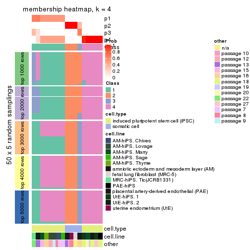
membership_heatmap(res, k = 5)
membership_heatmap(res, k = 6)
As soon as we have had the classes for columns, we can look for signatures which are significantly different between classes which can be candidate marks for certain classes. Following are the heatmaps for signatures.
Signature heatmaps where rows are scaled:
get_signatures(res, k = 2)

get_signatures(res, k = 3)

get_signatures(res, k = 4)
#> Error in mat[ceiling(1:nr/h_ratio), ceiling(1:nc/w_ratio), drop = FALSE]: subscript out of bounds
get_signatures(res, k = 5)
get_signatures(res, k = 6)
Signature heatmaps where rows are not scaled:
get_signatures(res, k = 2, scale_rows = FALSE)

get_signatures(res, k = 3, scale_rows = FALSE)
get_signatures(res, k = 4, scale_rows = FALSE)
get_signatures(res, k = 5, scale_rows = FALSE)
get_signatures(res, k = 6, scale_rows = FALSE)
Compare the overlap of signatures from different k:
compare_signatures(res)
get_signature() returns a data frame invisibly. TO get the list of signatures, the function
call should be assigned to a variable explicitly. In following code, if plot argument is set
to FALSE, no heatmap is plotted while only the differential analysis is performed.
# code only for demonstration
tb = get_signature(res, k = ..., plot = FALSE)
An example of the output of tb is:
#> which_row fdr mean_1 mean_2 scaled_mean_1 scaled_mean_2 km
#> 1 38 0.042760348 8.373488 9.131774 -0.5533452 0.5164555 1
#> 2 40 0.018707592 7.106213 8.469186 -0.6173731 0.5762149 1
#> 3 55 0.019134737 10.221463 11.207825 -0.6159697 0.5749050 1
#> 4 59 0.006059896 5.921854 7.869574 -0.6899429 0.6439467 1
#> 5 60 0.018055526 8.928898 10.211722 -0.6204761 0.5791110 1
#> 6 98 0.009384629 15.714769 14.887706 0.6635654 -0.6193277 2
...
The columns in tb are:
which_row: row indices corresponding to the input matrix.fdr: FDR for the differential test. mean_x: The mean value in group x.scaled_mean_x: The mean value in group x after rows are scaled.km: Row groups if k-means clustering is applied to rows.UMAP plot which shows how samples are separated.
dimension_reduction(res, k = 2, method = "UMAP")

dimension_reduction(res, k = 3, method = "UMAP")

dimension_reduction(res, k = 4, method = "UMAP")
dimension_reduction(res, k = 5, method = "UMAP")
dimension_reduction(res, k = 6, method = "UMAP")
Following heatmap shows how subgroups are split when increasing k:
collect_classes(res)
Test correlation between subgroups and known annotations. If the known annotation is numeric, one-way ANOVA test is applied, and if the known annotation is discrete, chi-squared contingency table test is applied.
test_to_known_factors(res)
#> n cell.type(p) cell.line(p) other(p) k
#> MAD:hclust 51 1.46e-11 9.31e-07 5.89e-03 2
#> MAD:hclust 45 1.69e-10 8.33e-09 7.28e-07 3
#> MAD:hclust 45 9.25e-10 6.46e-13 6.72e-08 4
#> MAD:hclust 51 2.23e-10 1.24e-16 5.19e-11 5
#> MAD:hclust 51 8.65e-10 2.54e-19 7.24e-14 6
If matrix rows can be associated to genes, consider to use GO_Enrichment(res,
...) to perform function enrichment for the signature genes.
The object with results only for a single top-value method and a single partition method can be extracted as:
res = res_list["MAD", "kmeans"]
# you can also extract it by
# res = res_list["MAD:kmeans"]
A summary of res and all the functions that can be applied to it:
res
#> A 'ConsensusPartition' object with k = 2, 3, 4, 5, 6.
#> On a matrix with 42764 rows and 51 columns.
#> Top rows (1000, 2000, 3000, 4000, 5000) are extracted by 'MAD' method.
#> Subgroups are detected by 'kmeans' method.
#> Performed in total 1250 partitions by row resampling.
#> Best k for subgroups seems to be 2.
#>
#> Following methods can be applied to this 'ConsensusPartition' object:
#> [1] "cola_report" "collect_classes" "collect_plots"
#> [4] "collect_stats" "colnames" "compare_signatures"
#> [7] "consensus_heatmap" "dimension_reduction" "functional_enrichment"
#> [10] "get_anno_col" "get_anno" "get_classes"
#> [13] "get_consensus" "get_matrix" "get_membership"
#> [16] "get_param" "get_signatures" "get_stats"
#> [19] "is_best_k" "is_stable_k" "membership_heatmap"
#> [22] "ncol" "nrow" "plot_ecdf"
#> [25] "rownames" "select_partition_number" "show"
#> [28] "suggest_best_k" "test_to_known_factors"
collect_plots() function collects all the plots made from res for all k (number of partitions)
into one single page to provide an easy and fast comparison between different k.
collect_plots(res)
The plots are:
k and the heatmap of
predicted classes for each k.k.k.k.All the plots in panels can be made by individual functions and they are plotted later in this section.
select_partition_number() produces several plots showing different
statistics for choosing “optimized” k. There are following statistics:
k;k, the area increased is defined as \(A_k - A_{k-1}\).The detailed explanations of these statistics can be found in the cola vignette.
Generally speaking, lower PAC score, higher mean silhouette score or higher
concordance corresponds to better partition. Rand index and Jaccard index
measure how similar the current partition is compared to partition with k-1.
If they are too similar, we won't accept k is better than k-1.
select_partition_number(res)
The numeric values for all these statistics can be obtained by get_stats().
get_stats(res)
#> k 1-PAC mean_silhouette concordance area_increased Rand Jaccard
#> 2 2 1.000 0.960 0.963 0.3821 0.633 0.633
#> 3 3 0.645 0.920 0.898 0.6094 0.704 0.532
#> 4 4 0.859 0.890 0.895 0.1425 0.942 0.829
#> 5 5 0.704 0.771 0.825 0.0727 1.000 1.000
#> 6 6 0.740 0.661 0.755 0.0536 0.976 0.917
suggest_best_k() suggests the best \(k\) based on these statistics. The rules are as follows:
NA.suggest_best_k(res)
#> [1] 2
Following shows the table of the partitions (You need to click the show/hide
code output link to see it). The membership matrix (columns with name p*)
is inferred by
clue::cl_consensus()
function with the SE method. Basically the value in the membership matrix
represents the probability to belong to a certain group. The finall class
label for an item is determined with the group with highest probability it
belongs to.
In get_classes() function, the entropy is calculated from the membership
matrix and the silhouette score is calculated from the consensus matrix.
cbind(get_classes(res, k = 2), get_membership(res, k = 2))
#> class entropy silhouette p1 p2
#> GSM520665 2 0.0376 0.987 0.004 0.996
#> GSM520666 2 0.0376 0.987 0.004 0.996
#> GSM520667 2 0.0376 0.987 0.004 0.996
#> GSM520704 2 0.2236 0.966 0.036 0.964
#> GSM520705 2 0.2236 0.966 0.036 0.964
#> GSM520711 2 0.2236 0.966 0.036 0.964
#> GSM520692 2 0.0000 0.987 0.000 1.000
#> GSM520693 2 0.0000 0.987 0.000 1.000
#> GSM520694 2 0.0000 0.987 0.000 1.000
#> GSM520689 2 0.0376 0.987 0.004 0.996
#> GSM520690 2 0.0376 0.987 0.004 0.996
#> GSM520691 2 0.0376 0.987 0.004 0.996
#> GSM520668 1 0.5737 0.899 0.864 0.136
#> GSM520669 1 0.5737 0.899 0.864 0.136
#> GSM520670 1 0.5737 0.899 0.864 0.136
#> GSM520713 1 0.2603 0.955 0.956 0.044
#> GSM520714 1 0.2603 0.955 0.956 0.044
#> GSM520715 1 0.2603 0.955 0.956 0.044
#> GSM520695 1 0.2236 0.957 0.964 0.036
#> GSM520696 1 0.2236 0.957 0.964 0.036
#> GSM520697 1 0.2236 0.957 0.964 0.036
#> GSM520709 1 0.2603 0.955 0.956 0.044
#> GSM520710 1 0.2603 0.955 0.956 0.044
#> GSM520712 1 0.2603 0.955 0.956 0.044
#> GSM520698 1 0.2603 0.955 0.956 0.044
#> GSM520699 1 0.2603 0.955 0.956 0.044
#> GSM520700 1 0.2423 0.959 0.960 0.040
#> GSM520701 1 0.2603 0.955 0.956 0.044
#> GSM520702 1 0.2603 0.955 0.956 0.044
#> GSM520703 1 0.2603 0.955 0.956 0.044
#> GSM520671 1 0.2236 0.960 0.964 0.036
#> GSM520672 1 0.2236 0.960 0.964 0.036
#> GSM520673 1 0.2236 0.960 0.964 0.036
#> GSM520681 1 0.2043 0.961 0.968 0.032
#> GSM520682 1 0.2043 0.961 0.968 0.032
#> GSM520680 1 0.2236 0.960 0.964 0.036
#> GSM520677 1 0.2236 0.960 0.964 0.036
#> GSM520678 1 0.2236 0.960 0.964 0.036
#> GSM520679 1 0.2236 0.960 0.964 0.036
#> GSM520674 1 0.2236 0.960 0.964 0.036
#> GSM520675 1 0.2043 0.961 0.968 0.032
#> GSM520676 1 0.2236 0.960 0.964 0.036
#> GSM520686 1 0.2236 0.960 0.964 0.036
#> GSM520687 1 0.2236 0.960 0.964 0.036
#> GSM520688 1 0.2236 0.960 0.964 0.036
#> GSM520683 1 0.2043 0.961 0.968 0.032
#> GSM520684 1 0.2236 0.960 0.964 0.036
#> GSM520685 1 0.2236 0.960 0.964 0.036
#> GSM520708 1 0.1633 0.957 0.976 0.024
#> GSM520706 1 0.1633 0.957 0.976 0.024
#> GSM520707 1 0.1633 0.957 0.976 0.024
cbind(get_classes(res, k = 3), get_membership(res, k = 3))
#> class entropy silhouette p1 p2 p3
#> GSM520665 2 0.1015 0.976 0.012 0.980 0.008
#> GSM520666 2 0.1015 0.976 0.012 0.980 0.008
#> GSM520667 2 0.1015 0.976 0.012 0.980 0.008
#> GSM520704 2 0.3295 0.947 0.096 0.896 0.008
#> GSM520705 2 0.3295 0.947 0.096 0.896 0.008
#> GSM520711 2 0.3295 0.947 0.096 0.896 0.008
#> GSM520692 2 0.0424 0.977 0.000 0.992 0.008
#> GSM520693 2 0.0424 0.977 0.000 0.992 0.008
#> GSM520694 2 0.0424 0.977 0.000 0.992 0.008
#> GSM520689 2 0.1315 0.975 0.020 0.972 0.008
#> GSM520690 2 0.1315 0.975 0.020 0.972 0.008
#> GSM520691 2 0.1315 0.975 0.020 0.972 0.008
#> GSM520668 1 0.5803 0.800 0.760 0.028 0.212
#> GSM520669 1 0.5803 0.800 0.760 0.028 0.212
#> GSM520670 1 0.5803 0.800 0.760 0.028 0.212
#> GSM520713 3 0.0000 0.942 0.000 0.000 1.000
#> GSM520714 3 0.0000 0.942 0.000 0.000 1.000
#> GSM520715 3 0.0000 0.942 0.000 0.000 1.000
#> GSM520695 3 0.0000 0.942 0.000 0.000 1.000
#> GSM520696 3 0.0000 0.942 0.000 0.000 1.000
#> GSM520697 3 0.0000 0.942 0.000 0.000 1.000
#> GSM520709 3 0.0000 0.942 0.000 0.000 1.000
#> GSM520710 3 0.0000 0.942 0.000 0.000 1.000
#> GSM520712 3 0.0000 0.942 0.000 0.000 1.000
#> GSM520698 3 0.2066 0.887 0.060 0.000 0.940
#> GSM520699 3 0.2066 0.887 0.060 0.000 0.940
#> GSM520700 3 0.6308 -0.172 0.492 0.000 0.508
#> GSM520701 3 0.0000 0.942 0.000 0.000 1.000
#> GSM520702 3 0.0000 0.942 0.000 0.000 1.000
#> GSM520703 3 0.0000 0.942 0.000 0.000 1.000
#> GSM520671 1 0.4784 0.957 0.796 0.004 0.200
#> GSM520672 1 0.4784 0.957 0.796 0.004 0.200
#> GSM520673 1 0.4784 0.957 0.796 0.004 0.200
#> GSM520681 1 0.4702 0.965 0.788 0.000 0.212
#> GSM520682 1 0.4702 0.965 0.788 0.000 0.212
#> GSM520680 1 0.4784 0.957 0.796 0.004 0.200
#> GSM520677 1 0.4702 0.965 0.788 0.000 0.212
#> GSM520678 1 0.4702 0.965 0.788 0.000 0.212
#> GSM520679 1 0.4702 0.965 0.788 0.000 0.212
#> GSM520674 1 0.4702 0.965 0.788 0.000 0.212
#> GSM520675 1 0.4702 0.965 0.788 0.000 0.212
#> GSM520676 1 0.4702 0.965 0.788 0.000 0.212
#> GSM520686 1 0.4702 0.965 0.788 0.000 0.212
#> GSM520687 1 0.4702 0.965 0.788 0.000 0.212
#> GSM520688 1 0.4702 0.965 0.788 0.000 0.212
#> GSM520683 1 0.4702 0.965 0.788 0.000 0.212
#> GSM520684 1 0.4702 0.965 0.788 0.000 0.212
#> GSM520685 1 0.4702 0.965 0.788 0.000 0.212
#> GSM520708 3 0.2165 0.886 0.064 0.000 0.936
#> GSM520706 3 0.2165 0.886 0.064 0.000 0.936
#> GSM520707 3 0.2165 0.886 0.064 0.000 0.936
cbind(get_classes(res, k = 4), get_membership(res, k = 4))
#> class entropy silhouette p1 p2 p3 p4
#> GSM520665 2 0.1913 0.921 0.000 0.940 0.040 0.020
#> GSM520666 2 0.1913 0.921 0.000 0.940 0.040 0.020
#> GSM520667 2 0.1913 0.921 0.000 0.940 0.040 0.020
#> GSM520704 2 0.4446 0.829 0.000 0.776 0.196 0.028
#> GSM520705 2 0.4446 0.829 0.000 0.776 0.196 0.028
#> GSM520711 2 0.4446 0.829 0.000 0.776 0.196 0.028
#> GSM520692 2 0.0336 0.928 0.000 0.992 0.000 0.008
#> GSM520693 2 0.0336 0.928 0.000 0.992 0.000 0.008
#> GSM520694 2 0.0336 0.928 0.000 0.992 0.000 0.008
#> GSM520689 2 0.1004 0.927 0.000 0.972 0.024 0.004
#> GSM520690 2 0.1004 0.927 0.000 0.972 0.024 0.004
#> GSM520691 2 0.1004 0.927 0.000 0.972 0.024 0.004
#> GSM520668 3 0.5396 0.881 0.240 0.016 0.716 0.028
#> GSM520669 3 0.5396 0.881 0.240 0.016 0.716 0.028
#> GSM520670 3 0.5396 0.881 0.240 0.016 0.716 0.028
#> GSM520713 4 0.2124 0.915 0.068 0.000 0.008 0.924
#> GSM520714 4 0.2124 0.915 0.068 0.000 0.008 0.924
#> GSM520715 4 0.2124 0.915 0.068 0.000 0.008 0.924
#> GSM520695 4 0.2198 0.914 0.072 0.000 0.008 0.920
#> GSM520696 4 0.2198 0.914 0.072 0.000 0.008 0.920
#> GSM520697 4 0.2198 0.914 0.072 0.000 0.008 0.920
#> GSM520709 4 0.1792 0.915 0.068 0.000 0.000 0.932
#> GSM520710 4 0.1792 0.915 0.068 0.000 0.000 0.932
#> GSM520712 4 0.1792 0.915 0.068 0.000 0.000 0.932
#> GSM520698 4 0.5713 0.438 0.040 0.000 0.340 0.620
#> GSM520699 4 0.5713 0.438 0.040 0.000 0.340 0.620
#> GSM520700 3 0.6796 0.598 0.152 0.000 0.596 0.252
#> GSM520701 4 0.2489 0.913 0.068 0.000 0.020 0.912
#> GSM520702 4 0.2489 0.913 0.068 0.000 0.020 0.912
#> GSM520703 4 0.2489 0.913 0.068 0.000 0.020 0.912
#> GSM520671 1 0.2216 0.934 0.908 0.000 0.092 0.000
#> GSM520672 1 0.2216 0.934 0.908 0.000 0.092 0.000
#> GSM520673 1 0.2216 0.934 0.908 0.000 0.092 0.000
#> GSM520681 1 0.0000 0.943 1.000 0.000 0.000 0.000
#> GSM520682 1 0.0000 0.943 1.000 0.000 0.000 0.000
#> GSM520680 1 0.2216 0.934 0.908 0.000 0.092 0.000
#> GSM520677 1 0.1211 0.947 0.960 0.000 0.040 0.000
#> GSM520678 1 0.1211 0.947 0.960 0.000 0.040 0.000
#> GSM520679 1 0.1211 0.947 0.960 0.000 0.040 0.000
#> GSM520674 1 0.1211 0.947 0.960 0.000 0.040 0.000
#> GSM520675 1 0.0000 0.943 1.000 0.000 0.000 0.000
#> GSM520676 1 0.1211 0.947 0.960 0.000 0.040 0.000
#> GSM520686 1 0.1389 0.941 0.952 0.000 0.048 0.000
#> GSM520687 1 0.1389 0.941 0.952 0.000 0.048 0.000
#> GSM520688 1 0.1389 0.941 0.952 0.000 0.048 0.000
#> GSM520683 1 0.0000 0.943 1.000 0.000 0.000 0.000
#> GSM520684 1 0.1389 0.941 0.952 0.000 0.048 0.000
#> GSM520685 1 0.0188 0.944 0.996 0.000 0.004 0.000
#> GSM520708 4 0.4100 0.839 0.148 0.000 0.036 0.816
#> GSM520706 4 0.4100 0.839 0.148 0.000 0.036 0.816
#> GSM520707 4 0.4100 0.839 0.148 0.000 0.036 0.816
cbind(get_classes(res, k = 5), get_membership(res, k = 5))
#> class entropy silhouette p1 p2 p3 p4 p5
#> GSM520665 2 0.2234 0.862 0.000 0.916 0.036 0.004 NA
#> GSM520666 2 0.2278 0.862 0.000 0.916 0.032 0.008 NA
#> GSM520667 2 0.2234 0.862 0.000 0.916 0.036 0.004 NA
#> GSM520704 2 0.4341 0.706 0.000 0.628 0.008 0.000 NA
#> GSM520705 2 0.4341 0.706 0.000 0.628 0.008 0.000 NA
#> GSM520711 2 0.4721 0.706 0.000 0.628 0.020 0.004 NA
#> GSM520692 2 0.0727 0.869 0.000 0.980 0.004 0.004 NA
#> GSM520693 2 0.0727 0.869 0.000 0.980 0.004 0.004 NA
#> GSM520694 2 0.0727 0.869 0.000 0.980 0.004 0.004 NA
#> GSM520689 2 0.2308 0.855 0.000 0.912 0.048 0.004 NA
#> GSM520690 2 0.2308 0.855 0.000 0.912 0.048 0.004 NA
#> GSM520691 2 0.2359 0.855 0.000 0.912 0.044 0.008 NA
#> GSM520668 3 0.3246 0.888 0.120 0.008 0.848 0.024 NA
#> GSM520669 3 0.3246 0.888 0.120 0.008 0.848 0.024 NA
#> GSM520670 3 0.3246 0.888 0.120 0.008 0.848 0.024 NA
#> GSM520713 4 0.1300 0.806 0.028 0.000 0.000 0.956 NA
#> GSM520714 4 0.1300 0.806 0.028 0.000 0.000 0.956 NA
#> GSM520715 4 0.1300 0.806 0.028 0.000 0.000 0.956 NA
#> GSM520695 4 0.3653 0.752 0.036 0.000 0.012 0.828 NA
#> GSM520696 4 0.3653 0.752 0.036 0.000 0.012 0.828 NA
#> GSM520697 4 0.3653 0.752 0.036 0.000 0.012 0.828 NA
#> GSM520709 4 0.1493 0.807 0.028 0.000 0.000 0.948 NA
#> GSM520710 4 0.1493 0.807 0.028 0.000 0.000 0.948 NA
#> GSM520712 4 0.0794 0.807 0.028 0.000 0.000 0.972 NA
#> GSM520698 4 0.6737 0.205 0.024 0.000 0.340 0.492 NA
#> GSM520699 4 0.6737 0.205 0.024 0.000 0.340 0.492 NA
#> GSM520700 3 0.6678 0.578 0.072 0.000 0.608 0.184 NA
#> GSM520701 4 0.2921 0.799 0.028 0.000 0.020 0.884 NA
#> GSM520702 4 0.2921 0.799 0.028 0.000 0.020 0.884 NA
#> GSM520703 4 0.2921 0.799 0.028 0.000 0.020 0.884 NA
#> GSM520671 1 0.4609 0.808 0.744 0.000 0.104 0.000 NA
#> GSM520672 1 0.4609 0.808 0.744 0.000 0.104 0.000 NA
#> GSM520673 1 0.4609 0.808 0.744 0.000 0.104 0.000 NA
#> GSM520681 1 0.1571 0.810 0.936 0.000 0.004 0.000 NA
#> GSM520682 1 0.1571 0.810 0.936 0.000 0.004 0.000 NA
#> GSM520680 1 0.4609 0.808 0.744 0.000 0.104 0.000 NA
#> GSM520677 1 0.2729 0.807 0.884 0.000 0.060 0.000 NA
#> GSM520678 1 0.2729 0.807 0.884 0.000 0.060 0.000 NA
#> GSM520679 1 0.2729 0.807 0.884 0.000 0.060 0.000 NA
#> GSM520674 1 0.2729 0.807 0.884 0.000 0.060 0.000 NA
#> GSM520675 1 0.1121 0.812 0.956 0.000 0.000 0.000 NA
#> GSM520676 1 0.2729 0.807 0.884 0.000 0.060 0.000 NA
#> GSM520686 1 0.3958 0.809 0.780 0.000 0.044 0.000 NA
#> GSM520687 1 0.3958 0.809 0.780 0.000 0.044 0.000 NA
#> GSM520688 1 0.3958 0.809 0.780 0.000 0.044 0.000 NA
#> GSM520683 1 0.1638 0.811 0.932 0.000 0.004 0.000 NA
#> GSM520684 1 0.3995 0.808 0.776 0.000 0.044 0.000 NA
#> GSM520685 1 0.3209 0.817 0.812 0.000 0.008 0.000 NA
#> GSM520708 4 0.6459 0.573 0.184 0.000 0.032 0.600 NA
#> GSM520706 4 0.6459 0.573 0.184 0.000 0.032 0.600 NA
#> GSM520707 4 0.6459 0.573 0.184 0.000 0.032 0.600 NA
cbind(get_classes(res, k = 6), get_membership(res, k = 6))
#> class entropy silhouette p1 p2 p3 p4 p5 p6
#> GSM520665 2 0.2758 0.843 0.000 0.872 0.012 0.000 0.036 NA
#> GSM520666 2 0.2758 0.843 0.000 0.872 0.012 0.000 0.036 NA
#> GSM520667 2 0.2758 0.843 0.000 0.872 0.012 0.000 0.036 NA
#> GSM520704 2 0.4870 0.688 0.000 0.612 0.008 0.000 0.320 NA
#> GSM520705 2 0.4870 0.688 0.000 0.612 0.008 0.000 0.320 NA
#> GSM520711 2 0.5137 0.688 0.000 0.612 0.012 0.004 0.304 NA
#> GSM520692 2 0.0146 0.860 0.000 0.996 0.000 0.000 0.004 NA
#> GSM520693 2 0.0146 0.860 0.000 0.996 0.000 0.000 0.004 NA
#> GSM520694 2 0.0146 0.860 0.000 0.996 0.000 0.000 0.004 NA
#> GSM520689 2 0.1901 0.852 0.000 0.924 0.028 0.000 0.008 NA
#> GSM520690 2 0.1901 0.852 0.000 0.924 0.028 0.000 0.008 NA
#> GSM520691 2 0.1901 0.852 0.000 0.924 0.028 0.000 0.008 NA
#> GSM520668 3 0.1732 0.783 0.072 0.000 0.920 0.004 0.000 NA
#> GSM520669 3 0.1588 0.784 0.072 0.000 0.924 0.004 0.000 NA
#> GSM520670 3 0.1588 0.784 0.072 0.000 0.924 0.004 0.000 NA
#> GSM520713 4 0.2321 0.605 0.008 0.000 0.004 0.904 0.052 NA
#> GSM520714 4 0.2321 0.605 0.008 0.000 0.004 0.904 0.052 NA
#> GSM520715 4 0.2321 0.605 0.008 0.000 0.004 0.904 0.052 NA
#> GSM520695 4 0.4626 0.165 0.008 0.000 0.016 0.680 0.264 NA
#> GSM520696 4 0.4626 0.165 0.008 0.000 0.016 0.680 0.264 NA
#> GSM520697 4 0.4626 0.165 0.008 0.000 0.016 0.680 0.264 NA
#> GSM520709 4 0.1149 0.628 0.008 0.000 0.000 0.960 0.008 NA
#> GSM520710 4 0.1149 0.628 0.008 0.000 0.000 0.960 0.008 NA
#> GSM520712 4 0.0717 0.619 0.008 0.000 0.000 0.976 0.016 NA
#> GSM520698 5 0.6324 1.000 0.004 0.000 0.276 0.332 0.384 NA
#> GSM520699 5 0.6324 1.000 0.004 0.000 0.276 0.332 0.384 NA
#> GSM520700 3 0.5929 -0.322 0.020 0.000 0.492 0.112 0.372 NA
#> GSM520701 4 0.3090 0.591 0.008 0.000 0.016 0.864 0.060 NA
#> GSM520702 4 0.3090 0.591 0.008 0.000 0.016 0.864 0.060 NA
#> GSM520703 4 0.3090 0.591 0.008 0.000 0.016 0.864 0.060 NA
#> GSM520671 1 0.1644 0.729 0.932 0.000 0.000 0.000 0.040 NA
#> GSM520672 1 0.1644 0.729 0.932 0.000 0.000 0.000 0.040 NA
#> GSM520673 1 0.1644 0.729 0.932 0.000 0.000 0.000 0.040 NA
#> GSM520681 1 0.3833 0.717 0.556 0.000 0.000 0.000 0.000 NA
#> GSM520682 1 0.3833 0.717 0.556 0.000 0.000 0.000 0.000 NA
#> GSM520680 1 0.1644 0.729 0.932 0.000 0.000 0.000 0.040 NA
#> GSM520677 1 0.3933 0.735 0.740 0.000 0.004 0.000 0.040 NA
#> GSM520678 1 0.3933 0.735 0.740 0.000 0.004 0.000 0.040 NA
#> GSM520679 1 0.3933 0.735 0.740 0.000 0.004 0.000 0.040 NA
#> GSM520674 1 0.3933 0.735 0.740 0.000 0.004 0.000 0.040 NA
#> GSM520675 1 0.4568 0.741 0.612 0.000 0.004 0.000 0.040 NA
#> GSM520676 1 0.3933 0.735 0.740 0.000 0.004 0.000 0.040 NA
#> GSM520686 1 0.3361 0.741 0.788 0.000 0.004 0.000 0.020 NA
#> GSM520687 1 0.3361 0.741 0.788 0.000 0.004 0.000 0.020 NA
#> GSM520688 1 0.3361 0.741 0.788 0.000 0.004 0.000 0.020 NA
#> GSM520683 1 0.3833 0.717 0.556 0.000 0.000 0.000 0.000 NA
#> GSM520684 1 0.3398 0.735 0.768 0.000 0.004 0.000 0.012 NA
#> GSM520685 1 0.3426 0.736 0.764 0.000 0.004 0.000 0.012 NA
#> GSM520708 4 0.5699 0.266 0.012 0.000 0.004 0.448 0.096 NA
#> GSM520706 4 0.5699 0.266 0.012 0.000 0.004 0.448 0.096 NA
#> GSM520707 4 0.5699 0.266 0.012 0.000 0.004 0.448 0.096 NA
Heatmaps for the consensus matrix. It visualizes the probability of two samples to be in a same group.
consensus_heatmap(res, k = 2)
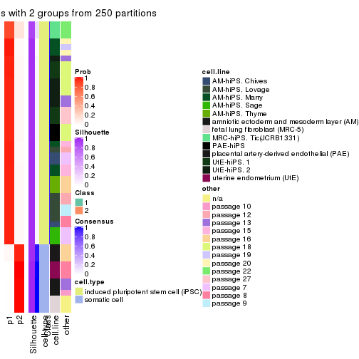
consensus_heatmap(res, k = 3)
consensus_heatmap(res, k = 4)
consensus_heatmap(res, k = 5)
consensus_heatmap(res, k = 6)
Heatmaps for the membership of samples in all partitions to see how consistent they are:
membership_heatmap(res, k = 2)
membership_heatmap(res, k = 3)
membership_heatmap(res, k = 4)
membership_heatmap(res, k = 5)
membership_heatmap(res, k = 6)
As soon as we have had the classes for columns, we can look for signatures which are significantly different between classes which can be candidate marks for certain classes. Following are the heatmaps for signatures.
Signature heatmaps where rows are scaled:
get_signatures(res, k = 2)
get_signatures(res, k = 3)
#> Error in mat[ceiling(1:nr/h_ratio), ceiling(1:nc/w_ratio), drop = FALSE]: subscript out of bounds
get_signatures(res, k = 4)
#> Error in mat[ceiling(1:nr/h_ratio), ceiling(1:nc/w_ratio), drop = FALSE]: subscript out of bounds
get_signatures(res, k = 5)
#> Error in mat[ceiling(1:nr/h_ratio), ceiling(1:nc/w_ratio), drop = FALSE]: subscript out of bounds
get_signatures(res, k = 6)
#> Error in mat[ceiling(1:nr/h_ratio), ceiling(1:nc/w_ratio), drop = FALSE]: subscript out of bounds
Signature heatmaps where rows are not scaled:
get_signatures(res, k = 2, scale_rows = FALSE)
get_signatures(res, k = 3, scale_rows = FALSE)
get_signatures(res, k = 4, scale_rows = FALSE)
get_signatures(res, k = 5, scale_rows = FALSE)
get_signatures(res, k = 6, scale_rows = FALSE)
Compare the overlap of signatures from different k:
compare_signatures(res)
get_signature() returns a data frame invisibly. TO get the list of signatures, the function
call should be assigned to a variable explicitly. In following code, if plot argument is set
to FALSE, no heatmap is plotted while only the differential analysis is performed.
# code only for demonstration
tb = get_signature(res, k = ..., plot = FALSE)
An example of the output of tb is:
#> which_row fdr mean_1 mean_2 scaled_mean_1 scaled_mean_2 km
#> 1 38 0.042760348 8.373488 9.131774 -0.5533452 0.5164555 1
#> 2 40 0.018707592 7.106213 8.469186 -0.6173731 0.5762149 1
#> 3 55 0.019134737 10.221463 11.207825 -0.6159697 0.5749050 1
#> 4 59 0.006059896 5.921854 7.869574 -0.6899429 0.6439467 1
#> 5 60 0.018055526 8.928898 10.211722 -0.6204761 0.5791110 1
#> 6 98 0.009384629 15.714769 14.887706 0.6635654 -0.6193277 2
...
The columns in tb are:
which_row: row indices corresponding to the input matrix.fdr: FDR for the differential test. mean_x: The mean value in group x.scaled_mean_x: The mean value in group x after rows are scaled.km: Row groups if k-means clustering is applied to rows.UMAP plot which shows how samples are separated.
dimension_reduction(res, k = 2, method = "UMAP")
dimension_reduction(res, k = 3, method = "UMAP")

dimension_reduction(res, k = 4, method = "UMAP")
dimension_reduction(res, k = 5, method = "UMAP")
dimension_reduction(res, k = 6, method = "UMAP")
Following heatmap shows how subgroups are split when increasing k:
collect_classes(res)
Test correlation between subgroups and known annotations. If the known annotation is numeric, one-way ANOVA test is applied, and if the known annotation is discrete, chi-squared contingency table test is applied.
test_to_known_factors(res)
#> n cell.type(p) cell.line(p) other(p) k
#> MAD:kmeans 51 1.46e-11 9.31e-07 5.89e-03 2
#> MAD:kmeans 50 1.39e-11 6.67e-10 1.12e-06 3
#> MAD:kmeans 49 1.30e-10 5.62e-12 7.82e-10 4
#> MAD:kmeans 49 1.30e-10 5.62e-12 7.82e-10 5
#> MAD:kmeans 44 6.42e-09 1.74e-11 5.32e-11 6
If matrix rows can be associated to genes, consider to use GO_Enrichment(res,
...) to perform function enrichment for the signature genes.
The object with results only for a single top-value method and a single partition method can be extracted as:
res = res_list["MAD", "skmeans"]
# you can also extract it by
# res = res_list["MAD:skmeans"]
A summary of res and all the functions that can be applied to it:
res
#> A 'ConsensusPartition' object with k = 2, 3, 4, 5, 6.
#> On a matrix with 42764 rows and 51 columns.
#> Top rows (1000, 2000, 3000, 4000, 5000) are extracted by 'MAD' method.
#> Subgroups are detected by 'skmeans' method.
#> Performed in total 1250 partitions by row resampling.
#> Best k for subgroups seems to be 4.
#>
#> Following methods can be applied to this 'ConsensusPartition' object:
#> [1] "cola_report" "collect_classes" "collect_plots"
#> [4] "collect_stats" "colnames" "compare_signatures"
#> [7] "consensus_heatmap" "dimension_reduction" "functional_enrichment"
#> [10] "get_anno_col" "get_anno" "get_classes"
#> [13] "get_consensus" "get_matrix" "get_membership"
#> [16] "get_param" "get_signatures" "get_stats"
#> [19] "is_best_k" "is_stable_k" "membership_heatmap"
#> [22] "ncol" "nrow" "plot_ecdf"
#> [25] "rownames" "select_partition_number" "show"
#> [28] "suggest_best_k" "test_to_known_factors"
collect_plots() function collects all the plots made from res for all k (number of partitions)
into one single page to provide an easy and fast comparison between different k.
collect_plots(res)
The plots are:
k and the heatmap of
predicted classes for each k.k.k.k.All the plots in panels can be made by individual functions and they are plotted later in this section.
select_partition_number() produces several plots showing different
statistics for choosing “optimized” k. There are following statistics:
k;k, the area increased is defined as \(A_k - A_{k-1}\).The detailed explanations of these statistics can be found in the cola vignette.
Generally speaking, lower PAC score, higher mean silhouette score or higher
concordance corresponds to better partition. Rand index and Jaccard index
measure how similar the current partition is compared to partition with k-1.
If they are too similar, we won't accept k is better than k-1.
select_partition_number(res)
The numeric values for all these statistics can be obtained by get_stats().
get_stats(res)
#> k 1-PAC mean_silhouette concordance area_increased Rand Jaccard
#> 2 2 1.000 0.988 0.994 0.4285 0.576 0.576
#> 3 3 1.000 0.994 0.997 0.5819 0.746 0.559
#> 4 4 1.000 0.993 0.994 0.0841 0.929 0.786
#> 5 5 0.844 0.826 0.868 0.0589 0.972 0.894
#> 6 6 0.818 0.699 0.789 0.0466 0.937 0.736
suggest_best_k() suggests the best \(k\) based on these statistics. The rules are as follows:
NA.suggest_best_k(res)
#> [1] 4
#> attr(,"optional")
#> [1] 2 3
There is also optional best \(k\) = 2 3 that is worth to check.
Following shows the table of the partitions (You need to click the show/hide
code output link to see it). The membership matrix (columns with name p*)
is inferred by
clue::cl_consensus()
function with the SE method. Basically the value in the membership matrix
represents the probability to belong to a certain group. The finall class
label for an item is determined with the group with highest probability it
belongs to.
In get_classes() function, the entropy is calculated from the membership
matrix and the silhouette score is calculated from the consensus matrix.
cbind(get_classes(res, k = 2), get_membership(res, k = 2))
#> class entropy silhouette p1 p2
#> GSM520665 2 0.000 1.000 0.000 1.000
#> GSM520666 2 0.000 1.000 0.000 1.000
#> GSM520667 2 0.000 1.000 0.000 1.000
#> GSM520704 2 0.000 1.000 0.000 1.000
#> GSM520705 2 0.000 1.000 0.000 1.000
#> GSM520711 2 0.000 1.000 0.000 1.000
#> GSM520692 2 0.000 1.000 0.000 1.000
#> GSM520693 2 0.000 1.000 0.000 1.000
#> GSM520694 2 0.000 1.000 0.000 1.000
#> GSM520689 2 0.000 1.000 0.000 1.000
#> GSM520690 2 0.000 1.000 0.000 1.000
#> GSM520691 2 0.000 1.000 0.000 1.000
#> GSM520668 2 0.000 1.000 0.000 1.000
#> GSM520669 2 0.000 1.000 0.000 1.000
#> GSM520670 2 0.000 1.000 0.000 1.000
#> GSM520713 1 0.000 0.991 1.000 0.000
#> GSM520714 1 0.000 0.991 1.000 0.000
#> GSM520715 1 0.000 0.991 1.000 0.000
#> GSM520695 1 0.000 0.991 1.000 0.000
#> GSM520696 1 0.000 0.991 1.000 0.000
#> GSM520697 1 0.000 0.991 1.000 0.000
#> GSM520709 1 0.000 0.991 1.000 0.000
#> GSM520710 1 0.000 0.991 1.000 0.000
#> GSM520712 1 0.000 0.991 1.000 0.000
#> GSM520698 1 0.482 0.891 0.896 0.104
#> GSM520699 1 0.482 0.891 0.896 0.104
#> GSM520700 1 0.482 0.891 0.896 0.104
#> GSM520701 1 0.000 0.991 1.000 0.000
#> GSM520702 1 0.000 0.991 1.000 0.000
#> GSM520703 1 0.000 0.991 1.000 0.000
#> GSM520671 1 0.000 0.991 1.000 0.000
#> GSM520672 1 0.000 0.991 1.000 0.000
#> GSM520673 1 0.000 0.991 1.000 0.000
#> GSM520681 1 0.000 0.991 1.000 0.000
#> GSM520682 1 0.000 0.991 1.000 0.000
#> GSM520680 1 0.000 0.991 1.000 0.000
#> GSM520677 1 0.000 0.991 1.000 0.000
#> GSM520678 1 0.000 0.991 1.000 0.000
#> GSM520679 1 0.000 0.991 1.000 0.000
#> GSM520674 1 0.000 0.991 1.000 0.000
#> GSM520675 1 0.000 0.991 1.000 0.000
#> GSM520676 1 0.000 0.991 1.000 0.000
#> GSM520686 1 0.000 0.991 1.000 0.000
#> GSM520687 1 0.000 0.991 1.000 0.000
#> GSM520688 1 0.000 0.991 1.000 0.000
#> GSM520683 1 0.000 0.991 1.000 0.000
#> GSM520684 1 0.000 0.991 1.000 0.000
#> GSM520685 1 0.000 0.991 1.000 0.000
#> GSM520708 1 0.000 0.991 1.000 0.000
#> GSM520706 1 0.000 0.991 1.000 0.000
#> GSM520707 1 0.000 0.991 1.000 0.000
cbind(get_classes(res, k = 3), get_membership(res, k = 3))
#> class entropy silhouette p1 p2 p3
#> GSM520665 2 0.0000 0.999 0.000 1.000 0.000
#> GSM520666 2 0.0000 0.999 0.000 1.000 0.000
#> GSM520667 2 0.0000 0.999 0.000 1.000 0.000
#> GSM520704 2 0.0000 0.999 0.000 1.000 0.000
#> GSM520705 2 0.0000 0.999 0.000 1.000 0.000
#> GSM520711 2 0.0000 0.999 0.000 1.000 0.000
#> GSM520692 2 0.0000 0.999 0.000 1.000 0.000
#> GSM520693 2 0.0000 0.999 0.000 1.000 0.000
#> GSM520694 2 0.0000 0.999 0.000 1.000 0.000
#> GSM520689 2 0.0000 0.999 0.000 1.000 0.000
#> GSM520690 2 0.0000 0.999 0.000 1.000 0.000
#> GSM520691 2 0.0000 0.999 0.000 1.000 0.000
#> GSM520668 2 0.0237 0.996 0.004 0.996 0.000
#> GSM520669 2 0.0237 0.996 0.004 0.996 0.000
#> GSM520670 2 0.0237 0.996 0.004 0.996 0.000
#> GSM520713 3 0.0000 0.992 0.000 0.000 1.000
#> GSM520714 3 0.0000 0.992 0.000 0.000 1.000
#> GSM520715 3 0.0000 0.992 0.000 0.000 1.000
#> GSM520695 3 0.0000 0.992 0.000 0.000 1.000
#> GSM520696 3 0.0000 0.992 0.000 0.000 1.000
#> GSM520697 3 0.0000 0.992 0.000 0.000 1.000
#> GSM520709 3 0.0000 0.992 0.000 0.000 1.000
#> GSM520710 3 0.0000 0.992 0.000 0.000 1.000
#> GSM520712 3 0.0000 0.992 0.000 0.000 1.000
#> GSM520698 3 0.0000 0.992 0.000 0.000 1.000
#> GSM520699 3 0.0000 0.992 0.000 0.000 1.000
#> GSM520700 3 0.3551 0.848 0.132 0.000 0.868
#> GSM520701 3 0.0000 0.992 0.000 0.000 1.000
#> GSM520702 3 0.0000 0.992 0.000 0.000 1.000
#> GSM520703 3 0.0000 0.992 0.000 0.000 1.000
#> GSM520671 1 0.0000 1.000 1.000 0.000 0.000
#> GSM520672 1 0.0000 1.000 1.000 0.000 0.000
#> GSM520673 1 0.0000 1.000 1.000 0.000 0.000
#> GSM520681 1 0.0000 1.000 1.000 0.000 0.000
#> GSM520682 1 0.0000 1.000 1.000 0.000 0.000
#> GSM520680 1 0.0000 1.000 1.000 0.000 0.000
#> GSM520677 1 0.0000 1.000 1.000 0.000 0.000
#> GSM520678 1 0.0000 1.000 1.000 0.000 0.000
#> GSM520679 1 0.0000 1.000 1.000 0.000 0.000
#> GSM520674 1 0.0000 1.000 1.000 0.000 0.000
#> GSM520675 1 0.0000 1.000 1.000 0.000 0.000
#> GSM520676 1 0.0000 1.000 1.000 0.000 0.000
#> GSM520686 1 0.0000 1.000 1.000 0.000 0.000
#> GSM520687 1 0.0000 1.000 1.000 0.000 0.000
#> GSM520688 1 0.0000 1.000 1.000 0.000 0.000
#> GSM520683 1 0.0000 1.000 1.000 0.000 0.000
#> GSM520684 1 0.0000 1.000 1.000 0.000 0.000
#> GSM520685 1 0.0000 1.000 1.000 0.000 0.000
#> GSM520708 3 0.0000 0.992 0.000 0.000 1.000
#> GSM520706 3 0.0000 0.992 0.000 0.000 1.000
#> GSM520707 3 0.0000 0.992 0.000 0.000 1.000
cbind(get_classes(res, k = 4), get_membership(res, k = 4))
#> class entropy silhouette p1 p2 p3 p4
#> GSM520665 2 0.0000 1.000 0.000 1.000 0.000 0.000
#> GSM520666 2 0.0000 1.000 0.000 1.000 0.000 0.000
#> GSM520667 2 0.0000 1.000 0.000 1.000 0.000 0.000
#> GSM520704 2 0.0000 1.000 0.000 1.000 0.000 0.000
#> GSM520705 2 0.0000 1.000 0.000 1.000 0.000 0.000
#> GSM520711 2 0.0000 1.000 0.000 1.000 0.000 0.000
#> GSM520692 2 0.0000 1.000 0.000 1.000 0.000 0.000
#> GSM520693 2 0.0000 1.000 0.000 1.000 0.000 0.000
#> GSM520694 2 0.0000 1.000 0.000 1.000 0.000 0.000
#> GSM520689 2 0.0000 1.000 0.000 1.000 0.000 0.000
#> GSM520690 2 0.0000 1.000 0.000 1.000 0.000 0.000
#> GSM520691 2 0.0000 1.000 0.000 1.000 0.000 0.000
#> GSM520668 3 0.0188 0.987 0.000 0.004 0.996 0.000
#> GSM520669 3 0.0188 0.987 0.000 0.004 0.996 0.000
#> GSM520670 3 0.0188 0.987 0.000 0.004 0.996 0.000
#> GSM520713 4 0.0000 0.995 0.000 0.000 0.000 1.000
#> GSM520714 4 0.0000 0.995 0.000 0.000 0.000 1.000
#> GSM520715 4 0.0000 0.995 0.000 0.000 0.000 1.000
#> GSM520695 4 0.0000 0.995 0.000 0.000 0.000 1.000
#> GSM520696 4 0.0000 0.995 0.000 0.000 0.000 1.000
#> GSM520697 4 0.0000 0.995 0.000 0.000 0.000 1.000
#> GSM520709 4 0.0000 0.995 0.000 0.000 0.000 1.000
#> GSM520710 4 0.0000 0.995 0.000 0.000 0.000 1.000
#> GSM520712 4 0.0000 0.995 0.000 0.000 0.000 1.000
#> GSM520698 3 0.0817 0.980 0.000 0.000 0.976 0.024
#> GSM520699 3 0.0817 0.980 0.000 0.000 0.976 0.024
#> GSM520700 3 0.0336 0.987 0.000 0.000 0.992 0.008
#> GSM520701 4 0.0000 0.995 0.000 0.000 0.000 1.000
#> GSM520702 4 0.0000 0.995 0.000 0.000 0.000 1.000
#> GSM520703 4 0.0000 0.995 0.000 0.000 0.000 1.000
#> GSM520671 1 0.0707 0.990 0.980 0.000 0.020 0.000
#> GSM520672 1 0.0707 0.990 0.980 0.000 0.020 0.000
#> GSM520673 1 0.0707 0.990 0.980 0.000 0.020 0.000
#> GSM520681 1 0.0000 0.991 1.000 0.000 0.000 0.000
#> GSM520682 1 0.0000 0.991 1.000 0.000 0.000 0.000
#> GSM520680 1 0.0707 0.990 0.980 0.000 0.020 0.000
#> GSM520677 1 0.0188 0.991 0.996 0.000 0.004 0.000
#> GSM520678 1 0.0188 0.991 0.996 0.000 0.004 0.000
#> GSM520679 1 0.0188 0.991 0.996 0.000 0.004 0.000
#> GSM520674 1 0.0188 0.991 0.996 0.000 0.004 0.000
#> GSM520675 1 0.0000 0.991 1.000 0.000 0.000 0.000
#> GSM520676 1 0.0188 0.991 0.996 0.000 0.004 0.000
#> GSM520686 1 0.0592 0.990 0.984 0.000 0.016 0.000
#> GSM520687 1 0.0592 0.990 0.984 0.000 0.016 0.000
#> GSM520688 1 0.0592 0.990 0.984 0.000 0.016 0.000
#> GSM520683 1 0.0000 0.991 1.000 0.000 0.000 0.000
#> GSM520684 1 0.0592 0.990 0.984 0.000 0.016 0.000
#> GSM520685 1 0.0336 0.991 0.992 0.000 0.008 0.000
#> GSM520708 4 0.0779 0.982 0.016 0.000 0.004 0.980
#> GSM520706 4 0.0779 0.982 0.016 0.000 0.004 0.980
#> GSM520707 4 0.0779 0.982 0.016 0.000 0.004 0.980
cbind(get_classes(res, k = 5), get_membership(res, k = 5))
#> class entropy silhouette p1 p2 p3 p4 p5
#> GSM520665 2 0.0000 0.994 0.000 1.000 0.000 0.000 0.000
#> GSM520666 2 0.0000 0.994 0.000 1.000 0.000 0.000 0.000
#> GSM520667 2 0.0000 0.994 0.000 1.000 0.000 0.000 0.000
#> GSM520704 2 0.0703 0.983 0.000 0.976 0.000 0.000 0.024
#> GSM520705 2 0.0703 0.983 0.000 0.976 0.000 0.000 0.024
#> GSM520711 2 0.0703 0.983 0.000 0.976 0.000 0.000 0.024
#> GSM520692 2 0.0000 0.994 0.000 1.000 0.000 0.000 0.000
#> GSM520693 2 0.0000 0.994 0.000 1.000 0.000 0.000 0.000
#> GSM520694 2 0.0000 0.994 0.000 1.000 0.000 0.000 0.000
#> GSM520689 2 0.0000 0.994 0.000 1.000 0.000 0.000 0.000
#> GSM520690 2 0.0000 0.994 0.000 1.000 0.000 0.000 0.000
#> GSM520691 2 0.0000 0.994 0.000 1.000 0.000 0.000 0.000
#> GSM520668 3 0.3003 0.901 0.000 0.000 0.812 0.000 0.188
#> GSM520669 3 0.3003 0.901 0.000 0.000 0.812 0.000 0.188
#> GSM520670 3 0.3003 0.901 0.000 0.000 0.812 0.000 0.188
#> GSM520713 4 0.0000 0.721 0.000 0.000 0.000 1.000 0.000
#> GSM520714 4 0.0000 0.721 0.000 0.000 0.000 1.000 0.000
#> GSM520715 4 0.0000 0.721 0.000 0.000 0.000 1.000 0.000
#> GSM520695 4 0.3513 0.580 0.000 0.000 0.180 0.800 0.020
#> GSM520696 4 0.3513 0.580 0.000 0.000 0.180 0.800 0.020
#> GSM520697 4 0.3513 0.580 0.000 0.000 0.180 0.800 0.020
#> GSM520709 4 0.0510 0.712 0.000 0.000 0.000 0.984 0.016
#> GSM520710 4 0.0510 0.712 0.000 0.000 0.000 0.984 0.016
#> GSM520712 4 0.0000 0.721 0.000 0.000 0.000 1.000 0.000
#> GSM520698 3 0.0000 0.900 0.000 0.000 1.000 0.000 0.000
#> GSM520699 3 0.0000 0.900 0.000 0.000 1.000 0.000 0.000
#> GSM520700 3 0.0000 0.900 0.000 0.000 1.000 0.000 0.000
#> GSM520701 4 0.3586 0.125 0.000 0.000 0.000 0.736 0.264
#> GSM520702 4 0.3586 0.125 0.000 0.000 0.000 0.736 0.264
#> GSM520703 4 0.3586 0.125 0.000 0.000 0.000 0.736 0.264
#> GSM520671 1 0.2773 0.871 0.836 0.000 0.000 0.000 0.164
#> GSM520672 1 0.2773 0.871 0.836 0.000 0.000 0.000 0.164
#> GSM520673 1 0.2773 0.871 0.836 0.000 0.000 0.000 0.164
#> GSM520681 1 0.1851 0.848 0.912 0.000 0.000 0.000 0.088
#> GSM520682 1 0.1851 0.848 0.912 0.000 0.000 0.000 0.088
#> GSM520680 1 0.2773 0.871 0.836 0.000 0.000 0.000 0.164
#> GSM520677 1 0.3876 0.840 0.684 0.000 0.000 0.000 0.316
#> GSM520678 1 0.3876 0.840 0.684 0.000 0.000 0.000 0.316
#> GSM520679 1 0.3876 0.840 0.684 0.000 0.000 0.000 0.316
#> GSM520674 1 0.3876 0.840 0.684 0.000 0.000 0.000 0.316
#> GSM520675 1 0.3274 0.851 0.780 0.000 0.000 0.000 0.220
#> GSM520676 1 0.3876 0.840 0.684 0.000 0.000 0.000 0.316
#> GSM520686 1 0.0000 0.862 1.000 0.000 0.000 0.000 0.000
#> GSM520687 1 0.0000 0.862 1.000 0.000 0.000 0.000 0.000
#> GSM520688 1 0.0000 0.862 1.000 0.000 0.000 0.000 0.000
#> GSM520683 1 0.1851 0.848 0.912 0.000 0.000 0.000 0.088
#> GSM520684 1 0.0290 0.859 0.992 0.000 0.000 0.000 0.008
#> GSM520685 1 0.0290 0.859 0.992 0.000 0.000 0.000 0.008
#> GSM520708 5 0.5046 1.000 0.032 0.000 0.000 0.468 0.500
#> GSM520706 5 0.5046 1.000 0.032 0.000 0.000 0.468 0.500
#> GSM520707 5 0.5046 1.000 0.032 0.000 0.000 0.468 0.500
cbind(get_classes(res, k = 6), get_membership(res, k = 6))
#> class entropy silhouette p1 p2 p3 p4 p5 p6
#> GSM520665 2 0.0000 0.963175 0.000 1.000 0.000 0.000 0.000 0.000
#> GSM520666 2 0.0000 0.963175 0.000 1.000 0.000 0.000 0.000 0.000
#> GSM520667 2 0.0000 0.963175 0.000 1.000 0.000 0.000 0.000 0.000
#> GSM520704 2 0.2956 0.882842 0.000 0.848 0.000 0.000 0.088 0.064
#> GSM520705 2 0.2956 0.882842 0.000 0.848 0.000 0.000 0.088 0.064
#> GSM520711 2 0.2956 0.882842 0.000 0.848 0.000 0.000 0.088 0.064
#> GSM520692 2 0.0000 0.963175 0.000 1.000 0.000 0.000 0.000 0.000
#> GSM520693 2 0.0000 0.963175 0.000 1.000 0.000 0.000 0.000 0.000
#> GSM520694 2 0.0000 0.963175 0.000 1.000 0.000 0.000 0.000 0.000
#> GSM520689 2 0.0000 0.963175 0.000 1.000 0.000 0.000 0.000 0.000
#> GSM520690 2 0.0000 0.963175 0.000 1.000 0.000 0.000 0.000 0.000
#> GSM520691 2 0.0000 0.963175 0.000 1.000 0.000 0.000 0.000 0.000
#> GSM520668 3 0.0146 0.772001 0.004 0.000 0.996 0.000 0.000 0.000
#> GSM520669 3 0.0146 0.772001 0.004 0.000 0.996 0.000 0.000 0.000
#> GSM520670 3 0.0146 0.772001 0.004 0.000 0.996 0.000 0.000 0.000
#> GSM520713 4 0.0000 0.663993 0.000 0.000 0.000 1.000 0.000 0.000
#> GSM520714 4 0.0000 0.663993 0.000 0.000 0.000 1.000 0.000 0.000
#> GSM520715 4 0.0146 0.662843 0.000 0.000 0.000 0.996 0.000 0.004
#> GSM520695 4 0.4147 0.490594 0.000 0.000 0.004 0.668 0.024 0.304
#> GSM520696 4 0.4147 0.490594 0.000 0.000 0.004 0.668 0.024 0.304
#> GSM520697 4 0.4147 0.490594 0.000 0.000 0.004 0.668 0.024 0.304
#> GSM520709 4 0.0891 0.648725 0.000 0.000 0.000 0.968 0.008 0.024
#> GSM520710 4 0.0891 0.648725 0.000 0.000 0.000 0.968 0.008 0.024
#> GSM520712 4 0.0000 0.663993 0.000 0.000 0.000 1.000 0.000 0.000
#> GSM520698 3 0.5406 0.773162 0.000 0.000 0.568 0.000 0.160 0.272
#> GSM520699 3 0.5406 0.773162 0.000 0.000 0.568 0.000 0.160 0.272
#> GSM520700 3 0.5406 0.773162 0.000 0.000 0.568 0.000 0.160 0.272
#> GSM520701 4 0.3741 0.000662 0.000 0.000 0.000 0.672 0.008 0.320
#> GSM520702 4 0.3741 0.000662 0.000 0.000 0.000 0.672 0.008 0.320
#> GSM520703 4 0.3741 0.000662 0.000 0.000 0.000 0.672 0.008 0.320
#> GSM520671 1 0.3774 0.196653 0.592 0.000 0.000 0.000 0.408 0.000
#> GSM520672 1 0.3774 0.196653 0.592 0.000 0.000 0.000 0.408 0.000
#> GSM520673 1 0.3774 0.196653 0.592 0.000 0.000 0.000 0.408 0.000
#> GSM520681 5 0.4252 0.775419 0.372 0.000 0.000 0.000 0.604 0.024
#> GSM520682 5 0.4252 0.775419 0.372 0.000 0.000 0.000 0.604 0.024
#> GSM520680 1 0.3774 0.196653 0.592 0.000 0.000 0.000 0.408 0.000
#> GSM520677 1 0.0000 0.666886 1.000 0.000 0.000 0.000 0.000 0.000
#> GSM520678 1 0.0000 0.666886 1.000 0.000 0.000 0.000 0.000 0.000
#> GSM520679 1 0.0000 0.666886 1.000 0.000 0.000 0.000 0.000 0.000
#> GSM520674 1 0.0000 0.666886 1.000 0.000 0.000 0.000 0.000 0.000
#> GSM520675 1 0.2491 0.445986 0.836 0.000 0.000 0.000 0.164 0.000
#> GSM520676 1 0.0000 0.666886 1.000 0.000 0.000 0.000 0.000 0.000
#> GSM520686 5 0.3309 0.877587 0.280 0.000 0.000 0.000 0.720 0.000
#> GSM520687 5 0.3309 0.877587 0.280 0.000 0.000 0.000 0.720 0.000
#> GSM520688 5 0.3309 0.877587 0.280 0.000 0.000 0.000 0.720 0.000
#> GSM520683 5 0.4230 0.785333 0.364 0.000 0.000 0.000 0.612 0.024
#> GSM520684 5 0.3309 0.877587 0.280 0.000 0.000 0.000 0.720 0.000
#> GSM520685 5 0.3309 0.877587 0.280 0.000 0.000 0.000 0.720 0.000
#> GSM520708 6 0.4721 1.000000 0.024 0.000 0.000 0.364 0.020 0.592
#> GSM520706 6 0.4721 1.000000 0.024 0.000 0.000 0.364 0.020 0.592
#> GSM520707 6 0.4721 1.000000 0.024 0.000 0.000 0.364 0.020 0.592
Heatmaps for the consensus matrix. It visualizes the probability of two samples to be in a same group.
consensus_heatmap(res, k = 2)
consensus_heatmap(res, k = 3)
consensus_heatmap(res, k = 4)
consensus_heatmap(res, k = 5)
consensus_heatmap(res, k = 6)
Heatmaps for the membership of samples in all partitions to see how consistent they are:
membership_heatmap(res, k = 2)
membership_heatmap(res, k = 3)
membership_heatmap(res, k = 4)
membership_heatmap(res, k = 5)
membership_heatmap(res, k = 6)
As soon as we have had the classes for columns, we can look for signatures which are significantly different between classes which can be candidate marks for certain classes. Following are the heatmaps for signatures.
Signature heatmaps where rows are scaled:
get_signatures(res, k = 2)
get_signatures(res, k = 3)
get_signatures(res, k = 4)
get_signatures(res, k = 5)
#> Error in mat[ceiling(1:nr/h_ratio), ceiling(1:nc/w_ratio), drop = FALSE]: subscript out of bounds
get_signatures(res, k = 6)
#> Error in mat[ceiling(1:nr/h_ratio), ceiling(1:nc/w_ratio), drop = FALSE]: subscript out of bounds

Signature heatmaps where rows are not scaled:
get_signatures(res, k = 2, scale_rows = FALSE)

get_signatures(res, k = 3, scale_rows = FALSE)
get_signatures(res, k = 4, scale_rows = FALSE)
get_signatures(res, k = 5, scale_rows = FALSE)
get_signatures(res, k = 6, scale_rows = FALSE)
Compare the overlap of signatures from different k:
compare_signatures(res)
get_signature() returns a data frame invisibly. TO get the list of signatures, the function
call should be assigned to a variable explicitly. In following code, if plot argument is set
to FALSE, no heatmap is plotted while only the differential analysis is performed.
# code only for demonstration
tb = get_signature(res, k = ..., plot = FALSE)
An example of the output of tb is:
#> which_row fdr mean_1 mean_2 scaled_mean_1 scaled_mean_2 km
#> 1 38 0.042760348 8.373488 9.131774 -0.5533452 0.5164555 1
#> 2 40 0.018707592 7.106213 8.469186 -0.6173731 0.5762149 1
#> 3 55 0.019134737 10.221463 11.207825 -0.6159697 0.5749050 1
#> 4 59 0.006059896 5.921854 7.869574 -0.6899429 0.6439467 1
#> 5 60 0.018055526 8.928898 10.211722 -0.6204761 0.5791110 1
#> 6 98 0.009384629 15.714769 14.887706 0.6635654 -0.6193277 2
...
The columns in tb are:
which_row: row indices corresponding to the input matrix.fdr: FDR for the differential test. mean_x: The mean value in group x.scaled_mean_x: The mean value in group x after rows are scaled.km: Row groups if k-means clustering is applied to rows.UMAP plot which shows how samples are separated.
dimension_reduction(res, k = 2, method = "UMAP")
dimension_reduction(res, k = 3, method = "UMAP")
dimension_reduction(res, k = 4, method = "UMAP")
dimension_reduction(res, k = 5, method = "UMAP")
dimension_reduction(res, k = 6, method = "UMAP")
Following heatmap shows how subgroups are split when increasing k:
collect_classes(res)
Test correlation between subgroups and known annotations. If the known annotation is numeric, one-way ANOVA test is applied, and if the known annotation is discrete, chi-squared contingency table test is applied.
test_to_known_factors(res)
#> n cell.type(p) cell.line(p) other(p) k
#> MAD:skmeans 51 7.71e-09 9.31e-07 2.23e-03 2
#> MAD:skmeans 51 6.64e-09 3.77e-10 4.74e-07 3
#> MAD:skmeans 51 4.89e-11 6.96e-12 5.84e-10 4
#> MAD:skmeans 48 9.44e-10 1.36e-14 7.29e-13 5
#> MAD:skmeans 40 1.49e-07 4.75e-14 6.38e-11 6
If matrix rows can be associated to genes, consider to use GO_Enrichment(res,
...) to perform function enrichment for the signature genes.
The object with results only for a single top-value method and a single partition method can be extracted as:
res = res_list["MAD", "pam"]
# you can also extract it by
# res = res_list["MAD:pam"]
A summary of res and all the functions that can be applied to it:
res
#> A 'ConsensusPartition' object with k = 2, 3, 4, 5, 6.
#> On a matrix with 42764 rows and 51 columns.
#> Top rows (1000, 2000, 3000, 4000, 5000) are extracted by 'MAD' method.
#> Subgroups are detected by 'pam' method.
#> Performed in total 1250 partitions by row resampling.
#> Best k for subgroups seems to be 5.
#>
#> Following methods can be applied to this 'ConsensusPartition' object:
#> [1] "cola_report" "collect_classes" "collect_plots"
#> [4] "collect_stats" "colnames" "compare_signatures"
#> [7] "consensus_heatmap" "dimension_reduction" "functional_enrichment"
#> [10] "get_anno_col" "get_anno" "get_classes"
#> [13] "get_consensus" "get_matrix" "get_membership"
#> [16] "get_param" "get_signatures" "get_stats"
#> [19] "is_best_k" "is_stable_k" "membership_heatmap"
#> [22] "ncol" "nrow" "plot_ecdf"
#> [25] "rownames" "select_partition_number" "show"
#> [28] "suggest_best_k" "test_to_known_factors"
collect_plots() function collects all the plots made from res for all k (number of partitions)
into one single page to provide an easy and fast comparison between different k.
collect_plots(res)
The plots are:
k and the heatmap of
predicted classes for each k.k.k.k.All the plots in panels can be made by individual functions and they are plotted later in this section.
select_partition_number() produces several plots showing different
statistics for choosing “optimized” k. There are following statistics:
k;k, the area increased is defined as \(A_k - A_{k-1}\).The detailed explanations of these statistics can be found in the cola vignette.
Generally speaking, lower PAC score, higher mean silhouette score or higher
concordance corresponds to better partition. Rand index and Jaccard index
measure how similar the current partition is compared to partition with k-1.
If they are too similar, we won't accept k is better than k-1.
select_partition_number(res)
The numeric values for all these statistics can be obtained by get_stats().
get_stats(res)
#> k 1-PAC mean_silhouette concordance area_increased Rand Jaccard
#> 2 2 1.000 1.000 1.000 0.3677 0.633 0.633
#> 3 3 0.914 0.940 0.974 0.7665 0.725 0.566
#> 4 4 1.000 0.930 0.964 0.0923 0.859 0.639
#> 5 5 1.000 0.932 0.971 0.0368 0.979 0.925
#> 6 6 0.816 0.758 0.884 0.0942 0.890 0.606
suggest_best_k() suggests the best \(k\) based on these statistics. The rules are as follows:
NA.suggest_best_k(res)
#> [1] 5
#> attr(,"optional")
#> [1] 2 3 4
There is also optional best \(k\) = 2 3 4 that is worth to check.
Following shows the table of the partitions (You need to click the show/hide
code output link to see it). The membership matrix (columns with name p*)
is inferred by
clue::cl_consensus()
function with the SE method. Basically the value in the membership matrix
represents the probability to belong to a certain group. The finall class
label for an item is determined with the group with highest probability it
belongs to.
In get_classes() function, the entropy is calculated from the membership
matrix and the silhouette score is calculated from the consensus matrix.
cbind(get_classes(res, k = 2), get_membership(res, k = 2))
#> class entropy silhouette p1 p2
#> GSM520665 2 0 1 0 1
#> GSM520666 2 0 1 0 1
#> GSM520667 2 0 1 0 1
#> GSM520704 2 0 1 0 1
#> GSM520705 2 0 1 0 1
#> GSM520711 2 0 1 0 1
#> GSM520692 2 0 1 0 1
#> GSM520693 2 0 1 0 1
#> GSM520694 2 0 1 0 1
#> GSM520689 2 0 1 0 1
#> GSM520690 2 0 1 0 1
#> GSM520691 2 0 1 0 1
#> GSM520668 1 0 1 1 0
#> GSM520669 1 0 1 1 0
#> GSM520670 1 0 1 1 0
#> GSM520713 1 0 1 1 0
#> GSM520714 1 0 1 1 0
#> GSM520715 1 0 1 1 0
#> GSM520695 1 0 1 1 0
#> GSM520696 1 0 1 1 0
#> GSM520697 1 0 1 1 0
#> GSM520709 1 0 1 1 0
#> GSM520710 1 0 1 1 0
#> GSM520712 1 0 1 1 0
#> GSM520698 1 0 1 1 0
#> GSM520699 1 0 1 1 0
#> GSM520700 1 0 1 1 0
#> GSM520701 1 0 1 1 0
#> GSM520702 1 0 1 1 0
#> GSM520703 1 0 1 1 0
#> GSM520671 1 0 1 1 0
#> GSM520672 1 0 1 1 0
#> GSM520673 1 0 1 1 0
#> GSM520681 1 0 1 1 0
#> GSM520682 1 0 1 1 0
#> GSM520680 1 0 1 1 0
#> GSM520677 1 0 1 1 0
#> GSM520678 1 0 1 1 0
#> GSM520679 1 0 1 1 0
#> GSM520674 1 0 1 1 0
#> GSM520675 1 0 1 1 0
#> GSM520676 1 0 1 1 0
#> GSM520686 1 0 1 1 0
#> GSM520687 1 0 1 1 0
#> GSM520688 1 0 1 1 0
#> GSM520683 1 0 1 1 0
#> GSM520684 1 0 1 1 0
#> GSM520685 1 0 1 1 0
#> GSM520708 1 0 1 1 0
#> GSM520706 1 0 1 1 0
#> GSM520707 1 0 1 1 0
cbind(get_classes(res, k = 3), get_membership(res, k = 3))
#> class entropy silhouette p1 p2 p3
#> GSM520665 2 0.000 1.000 0.000 1 0.000
#> GSM520666 2 0.000 1.000 0.000 1 0.000
#> GSM520667 2 0.000 1.000 0.000 1 0.000
#> GSM520704 2 0.000 1.000 0.000 1 0.000
#> GSM520705 2 0.000 1.000 0.000 1 0.000
#> GSM520711 2 0.000 1.000 0.000 1 0.000
#> GSM520692 2 0.000 1.000 0.000 1 0.000
#> GSM520693 2 0.000 1.000 0.000 1 0.000
#> GSM520694 2 0.000 1.000 0.000 1 0.000
#> GSM520689 2 0.000 1.000 0.000 1 0.000
#> GSM520690 2 0.000 1.000 0.000 1 0.000
#> GSM520691 2 0.000 1.000 0.000 1 0.000
#> GSM520668 1 0.000 0.942 1.000 0 0.000
#> GSM520669 1 0.000 0.942 1.000 0 0.000
#> GSM520670 1 0.000 0.942 1.000 0 0.000
#> GSM520713 3 0.000 1.000 0.000 0 1.000
#> GSM520714 3 0.000 1.000 0.000 0 1.000
#> GSM520715 3 0.000 1.000 0.000 0 1.000
#> GSM520695 3 0.000 1.000 0.000 0 1.000
#> GSM520696 3 0.000 1.000 0.000 0 1.000
#> GSM520697 3 0.000 1.000 0.000 0 1.000
#> GSM520709 3 0.000 1.000 0.000 0 1.000
#> GSM520710 3 0.000 1.000 0.000 0 1.000
#> GSM520712 3 0.000 1.000 0.000 0 1.000
#> GSM520698 3 0.000 1.000 0.000 0 1.000
#> GSM520699 3 0.000 1.000 0.000 0 1.000
#> GSM520700 1 0.556 0.614 0.700 0 0.300
#> GSM520701 3 0.000 1.000 0.000 0 1.000
#> GSM520702 3 0.000 1.000 0.000 0 1.000
#> GSM520703 3 0.000 1.000 0.000 0 1.000
#> GSM520671 1 0.000 0.942 1.000 0 0.000
#> GSM520672 1 0.000 0.942 1.000 0 0.000
#> GSM520673 1 0.000 0.942 1.000 0 0.000
#> GSM520681 1 0.000 0.942 1.000 0 0.000
#> GSM520682 1 0.000 0.942 1.000 0 0.000
#> GSM520680 1 0.000 0.942 1.000 0 0.000
#> GSM520677 1 0.000 0.942 1.000 0 0.000
#> GSM520678 1 0.000 0.942 1.000 0 0.000
#> GSM520679 1 0.000 0.942 1.000 0 0.000
#> GSM520674 1 0.000 0.942 1.000 0 0.000
#> GSM520675 1 0.000 0.942 1.000 0 0.000
#> GSM520676 1 0.000 0.942 1.000 0 0.000
#> GSM520686 1 0.000 0.942 1.000 0 0.000
#> GSM520687 1 0.000 0.942 1.000 0 0.000
#> GSM520688 1 0.000 0.942 1.000 0 0.000
#> GSM520683 1 0.000 0.942 1.000 0 0.000
#> GSM520684 1 0.000 0.942 1.000 0 0.000
#> GSM520685 1 0.000 0.942 1.000 0 0.000
#> GSM520708 1 0.622 0.328 0.568 0 0.432
#> GSM520706 1 0.556 0.614 0.700 0 0.300
#> GSM520707 1 0.556 0.614 0.700 0 0.300
cbind(get_classes(res, k = 4), get_membership(res, k = 4))
#> class entropy silhouette p1 p2 p3 p4
#> GSM520665 2 0.000 0.977 0.000 1.000 0.000 0.000
#> GSM520666 2 0.000 0.977 0.000 1.000 0.000 0.000
#> GSM520667 2 0.000 0.977 0.000 1.000 0.000 0.000
#> GSM520704 2 0.228 0.929 0.000 0.904 0.096 0.000
#> GSM520705 2 0.228 0.929 0.000 0.904 0.096 0.000
#> GSM520711 2 0.228 0.929 0.000 0.904 0.096 0.000
#> GSM520692 2 0.000 0.977 0.000 1.000 0.000 0.000
#> GSM520693 2 0.000 0.977 0.000 1.000 0.000 0.000
#> GSM520694 2 0.000 0.977 0.000 1.000 0.000 0.000
#> GSM520689 2 0.000 0.977 0.000 1.000 0.000 0.000
#> GSM520690 2 0.000 0.977 0.000 1.000 0.000 0.000
#> GSM520691 2 0.000 0.977 0.000 1.000 0.000 0.000
#> GSM520668 3 0.228 1.000 0.096 0.000 0.904 0.000
#> GSM520669 3 0.228 1.000 0.096 0.000 0.904 0.000
#> GSM520670 3 0.228 1.000 0.096 0.000 0.904 0.000
#> GSM520713 4 0.000 0.901 0.000 0.000 0.000 1.000
#> GSM520714 4 0.000 0.901 0.000 0.000 0.000 1.000
#> GSM520715 4 0.000 0.901 0.000 0.000 0.000 1.000
#> GSM520695 4 0.000 0.901 0.000 0.000 0.000 1.000
#> GSM520696 4 0.000 0.901 0.000 0.000 0.000 1.000
#> GSM520697 4 0.000 0.901 0.000 0.000 0.000 1.000
#> GSM520709 4 0.000 0.901 0.000 0.000 0.000 1.000
#> GSM520710 4 0.000 0.901 0.000 0.000 0.000 1.000
#> GSM520712 4 0.000 0.901 0.000 0.000 0.000 1.000
#> GSM520698 4 0.000 0.901 0.000 0.000 0.000 1.000
#> GSM520699 4 0.000 0.901 0.000 0.000 0.000 1.000
#> GSM520700 3 0.228 1.000 0.096 0.000 0.904 0.000
#> GSM520701 4 0.000 0.901 0.000 0.000 0.000 1.000
#> GSM520702 4 0.000 0.901 0.000 0.000 0.000 1.000
#> GSM520703 4 0.000 0.901 0.000 0.000 0.000 1.000
#> GSM520671 1 0.000 1.000 1.000 0.000 0.000 0.000
#> GSM520672 1 0.000 1.000 1.000 0.000 0.000 0.000
#> GSM520673 1 0.000 1.000 1.000 0.000 0.000 0.000
#> GSM520681 1 0.000 1.000 1.000 0.000 0.000 0.000
#> GSM520682 1 0.000 1.000 1.000 0.000 0.000 0.000
#> GSM520680 1 0.000 1.000 1.000 0.000 0.000 0.000
#> GSM520677 1 0.000 1.000 1.000 0.000 0.000 0.000
#> GSM520678 1 0.000 1.000 1.000 0.000 0.000 0.000
#> GSM520679 1 0.000 1.000 1.000 0.000 0.000 0.000
#> GSM520674 1 0.000 1.000 1.000 0.000 0.000 0.000
#> GSM520675 1 0.000 1.000 1.000 0.000 0.000 0.000
#> GSM520676 1 0.000 1.000 1.000 0.000 0.000 0.000
#> GSM520686 1 0.000 1.000 1.000 0.000 0.000 0.000
#> GSM520687 1 0.000 1.000 1.000 0.000 0.000 0.000
#> GSM520688 1 0.000 1.000 1.000 0.000 0.000 0.000
#> GSM520683 1 0.000 1.000 1.000 0.000 0.000 0.000
#> GSM520684 1 0.000 1.000 1.000 0.000 0.000 0.000
#> GSM520685 1 0.000 1.000 1.000 0.000 0.000 0.000
#> GSM520708 4 0.468 0.483 0.352 0.000 0.000 0.648
#> GSM520706 4 0.483 0.417 0.392 0.000 0.000 0.608
#> GSM520707 4 0.492 0.350 0.424 0.000 0.000 0.576
cbind(get_classes(res, k = 5), get_membership(res, k = 5))
#> class entropy silhouette p1 p2 p3 p4 p5
#> GSM520665 2 0.0000 1.000 0.000 1.000 0.000 0.000 0.000
#> GSM520666 2 0.0000 1.000 0.000 1.000 0.000 0.000 0.000
#> GSM520667 2 0.0000 1.000 0.000 1.000 0.000 0.000 0.000
#> GSM520704 5 0.0794 1.000 0.000 0.028 0.000 0.000 0.972
#> GSM520705 5 0.0794 1.000 0.000 0.028 0.000 0.000 0.972
#> GSM520711 5 0.0794 1.000 0.000 0.028 0.000 0.000 0.972
#> GSM520692 2 0.0000 1.000 0.000 1.000 0.000 0.000 0.000
#> GSM520693 2 0.0000 1.000 0.000 1.000 0.000 0.000 0.000
#> GSM520694 2 0.0000 1.000 0.000 1.000 0.000 0.000 0.000
#> GSM520689 2 0.0000 1.000 0.000 1.000 0.000 0.000 0.000
#> GSM520690 2 0.0000 1.000 0.000 1.000 0.000 0.000 0.000
#> GSM520691 2 0.0000 1.000 0.000 1.000 0.000 0.000 0.000
#> GSM520668 3 0.0000 0.989 0.000 0.000 1.000 0.000 0.000
#> GSM520669 3 0.0000 0.989 0.000 0.000 1.000 0.000 0.000
#> GSM520670 3 0.0000 0.989 0.000 0.000 1.000 0.000 0.000
#> GSM520713 4 0.0000 0.889 0.000 0.000 0.000 1.000 0.000
#> GSM520714 4 0.0000 0.889 0.000 0.000 0.000 1.000 0.000
#> GSM520715 4 0.0000 0.889 0.000 0.000 0.000 1.000 0.000
#> GSM520695 4 0.0794 0.881 0.000 0.000 0.000 0.972 0.028
#> GSM520696 4 0.0794 0.881 0.000 0.000 0.000 0.972 0.028
#> GSM520697 4 0.0794 0.881 0.000 0.000 0.000 0.972 0.028
#> GSM520709 4 0.0000 0.889 0.000 0.000 0.000 1.000 0.000
#> GSM520710 4 0.0000 0.889 0.000 0.000 0.000 1.000 0.000
#> GSM520712 4 0.0000 0.889 0.000 0.000 0.000 1.000 0.000
#> GSM520698 4 0.0794 0.881 0.000 0.000 0.000 0.972 0.028
#> GSM520699 4 0.0794 0.881 0.000 0.000 0.000 0.972 0.028
#> GSM520700 3 0.0794 0.967 0.000 0.000 0.972 0.000 0.028
#> GSM520701 4 0.0000 0.889 0.000 0.000 0.000 1.000 0.000
#> GSM520702 4 0.0000 0.889 0.000 0.000 0.000 1.000 0.000
#> GSM520703 4 0.0000 0.889 0.000 0.000 0.000 1.000 0.000
#> GSM520671 1 0.0000 0.998 1.000 0.000 0.000 0.000 0.000
#> GSM520672 1 0.0000 0.998 1.000 0.000 0.000 0.000 0.000
#> GSM520673 1 0.0000 0.998 1.000 0.000 0.000 0.000 0.000
#> GSM520681 1 0.0703 0.975 0.976 0.000 0.000 0.000 0.024
#> GSM520682 1 0.0162 0.995 0.996 0.000 0.000 0.000 0.004
#> GSM520680 1 0.0000 0.998 1.000 0.000 0.000 0.000 0.000
#> GSM520677 1 0.0000 0.998 1.000 0.000 0.000 0.000 0.000
#> GSM520678 1 0.0000 0.998 1.000 0.000 0.000 0.000 0.000
#> GSM520679 1 0.0000 0.998 1.000 0.000 0.000 0.000 0.000
#> GSM520674 1 0.0000 0.998 1.000 0.000 0.000 0.000 0.000
#> GSM520675 1 0.0000 0.998 1.000 0.000 0.000 0.000 0.000
#> GSM520676 1 0.0000 0.998 1.000 0.000 0.000 0.000 0.000
#> GSM520686 1 0.0000 0.998 1.000 0.000 0.000 0.000 0.000
#> GSM520687 1 0.0000 0.998 1.000 0.000 0.000 0.000 0.000
#> GSM520688 1 0.0000 0.998 1.000 0.000 0.000 0.000 0.000
#> GSM520683 1 0.0000 0.998 1.000 0.000 0.000 0.000 0.000
#> GSM520684 1 0.0000 0.998 1.000 0.000 0.000 0.000 0.000
#> GSM520685 1 0.0000 0.998 1.000 0.000 0.000 0.000 0.000
#> GSM520708 4 0.4126 0.453 0.380 0.000 0.000 0.620 0.000
#> GSM520706 4 0.4101 0.469 0.372 0.000 0.000 0.628 0.000
#> GSM520707 4 0.4235 0.347 0.424 0.000 0.000 0.576 0.000
cbind(get_classes(res, k = 6), get_membership(res, k = 6))
#> class entropy silhouette p1 p2 p3 p4 p5 p6
#> GSM520665 2 0.0000 1.000 0.000 1 0.000 0.000 0 0.000
#> GSM520666 2 0.0000 1.000 0.000 1 0.000 0.000 0 0.000
#> GSM520667 2 0.0000 1.000 0.000 1 0.000 0.000 0 0.000
#> GSM520704 5 0.0000 1.000 0.000 0 0.000 0.000 1 0.000
#> GSM520705 5 0.0000 1.000 0.000 0 0.000 0.000 1 0.000
#> GSM520711 5 0.0000 1.000 0.000 0 0.000 0.000 1 0.000
#> GSM520692 2 0.0000 1.000 0.000 1 0.000 0.000 0 0.000
#> GSM520693 2 0.0000 1.000 0.000 1 0.000 0.000 0 0.000
#> GSM520694 2 0.0000 1.000 0.000 1 0.000 0.000 0 0.000
#> GSM520689 2 0.0000 1.000 0.000 1 0.000 0.000 0 0.000
#> GSM520690 2 0.0000 1.000 0.000 1 0.000 0.000 0 0.000
#> GSM520691 2 0.0000 1.000 0.000 1 0.000 0.000 0 0.000
#> GSM520668 3 0.0000 0.904 0.000 0 1.000 0.000 0 0.000
#> GSM520669 3 0.0000 0.904 0.000 0 1.000 0.000 0 0.000
#> GSM520670 3 0.0000 0.904 0.000 0 1.000 0.000 0 0.000
#> GSM520713 4 0.0000 0.931 0.000 0 0.000 1.000 0 0.000
#> GSM520714 4 0.0000 0.931 0.000 0 0.000 1.000 0 0.000
#> GSM520715 4 0.0260 0.931 0.000 0 0.000 0.992 0 0.008
#> GSM520695 4 0.2454 0.873 0.000 0 0.000 0.840 0 0.160
#> GSM520696 4 0.2454 0.873 0.000 0 0.000 0.840 0 0.160
#> GSM520697 4 0.2454 0.873 0.000 0 0.000 0.840 0 0.160
#> GSM520709 4 0.0260 0.931 0.000 0 0.000 0.992 0 0.008
#> GSM520710 4 0.0260 0.931 0.000 0 0.000 0.992 0 0.008
#> GSM520712 4 0.0000 0.931 0.000 0 0.000 1.000 0 0.000
#> GSM520698 4 0.2454 0.873 0.000 0 0.000 0.840 0 0.160
#> GSM520699 4 0.2454 0.873 0.000 0 0.000 0.840 0 0.160
#> GSM520700 3 0.3244 0.696 0.000 0 0.732 0.000 0 0.268
#> GSM520701 4 0.0260 0.931 0.000 0 0.000 0.992 0 0.008
#> GSM520702 4 0.0260 0.931 0.000 0 0.000 0.992 0 0.008
#> GSM520703 4 0.0260 0.931 0.000 0 0.000 0.992 0 0.008
#> GSM520671 1 0.1141 0.741 0.948 0 0.000 0.000 0 0.052
#> GSM520672 6 0.3804 0.209 0.424 0 0.000 0.000 0 0.576
#> GSM520673 1 0.0000 0.778 1.000 0 0.000 0.000 0 0.000
#> GSM520681 6 0.3857 0.174 0.468 0 0.000 0.000 0 0.532
#> GSM520682 1 0.3868 -0.271 0.508 0 0.000 0.000 0 0.492
#> GSM520680 1 0.3592 0.247 0.656 0 0.000 0.000 0 0.344
#> GSM520677 1 0.0000 0.778 1.000 0 0.000 0.000 0 0.000
#> GSM520678 1 0.0000 0.778 1.000 0 0.000 0.000 0 0.000
#> GSM520679 1 0.0000 0.778 1.000 0 0.000 0.000 0 0.000
#> GSM520674 1 0.0000 0.778 1.000 0 0.000 0.000 0 0.000
#> GSM520675 1 0.0713 0.757 0.972 0 0.000 0.000 0 0.028
#> GSM520676 1 0.0000 0.778 1.000 0 0.000 0.000 0 0.000
#> GSM520686 6 0.2527 0.640 0.168 0 0.000 0.000 0 0.832
#> GSM520687 6 0.2527 0.640 0.168 0 0.000 0.000 0 0.832
#> GSM520688 6 0.2527 0.640 0.168 0 0.000 0.000 0 0.832
#> GSM520683 1 0.3867 -0.267 0.512 0 0.000 0.000 0 0.488
#> GSM520684 6 0.2527 0.640 0.168 0 0.000 0.000 0 0.832
#> GSM520685 6 0.2527 0.640 0.168 0 0.000 0.000 0 0.832
#> GSM520708 6 0.6034 0.344 0.272 0 0.000 0.308 0 0.420
#> GSM520706 6 0.5787 0.369 0.180 0 0.000 0.376 0 0.444
#> GSM520707 6 0.5896 0.338 0.324 0 0.000 0.220 0 0.456
Heatmaps for the consensus matrix. It visualizes the probability of two samples to be in a same group.
consensus_heatmap(res, k = 2)
consensus_heatmap(res, k = 3)
consensus_heatmap(res, k = 4)
consensus_heatmap(res, k = 5)
consensus_heatmap(res, k = 6)
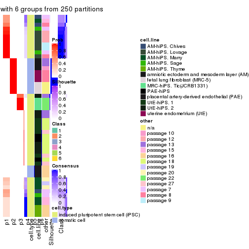
Heatmaps for the membership of samples in all partitions to see how consistent they are:
membership_heatmap(res, k = 2)

membership_heatmap(res, k = 3)
membership_heatmap(res, k = 4)
membership_heatmap(res, k = 5)
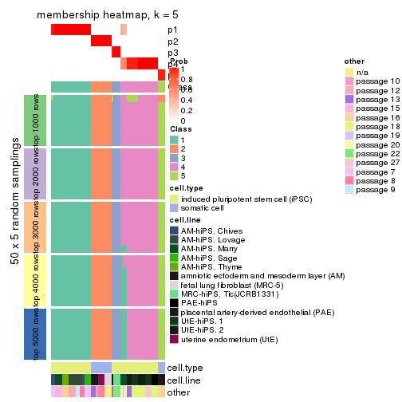
membership_heatmap(res, k = 6)
As soon as we have had the classes for columns, we can look for signatures which are significantly different between classes which can be candidate marks for certain classes. Following are the heatmaps for signatures.
Signature heatmaps where rows are scaled:
get_signatures(res, k = 2)

get_signatures(res, k = 3)
#> Error in mat[ceiling(1:nr/h_ratio), ceiling(1:nc/w_ratio), drop = FALSE]: subscript out of bounds
get_signatures(res, k = 4)
get_signatures(res, k = 5)
#> Error in mat[ceiling(1:nr/h_ratio), ceiling(1:nc/w_ratio), drop = FALSE]: subscript out of bounds
get_signatures(res, k = 6)
#> Error in mat[ceiling(1:nr/h_ratio), ceiling(1:nc/w_ratio), drop = FALSE]: subscript out of bounds

Signature heatmaps where rows are not scaled:
get_signatures(res, k = 2, scale_rows = FALSE)

get_signatures(res, k = 3, scale_rows = FALSE)
get_signatures(res, k = 4, scale_rows = FALSE)
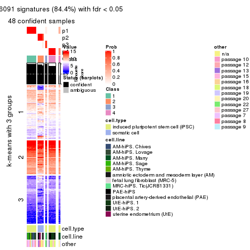
get_signatures(res, k = 5, scale_rows = FALSE)
get_signatures(res, k = 6, scale_rows = FALSE)
Compare the overlap of signatures from different k:
compare_signatures(res)
get_signature() returns a data frame invisibly. TO get the list of signatures, the function
call should be assigned to a variable explicitly. In following code, if plot argument is set
to FALSE, no heatmap is plotted while only the differential analysis is performed.
# code only for demonstration
tb = get_signature(res, k = ..., plot = FALSE)
An example of the output of tb is:
#> which_row fdr mean_1 mean_2 scaled_mean_1 scaled_mean_2 km
#> 1 38 0.042760348 8.373488 9.131774 -0.5533452 0.5164555 1
#> 2 40 0.018707592 7.106213 8.469186 -0.6173731 0.5762149 1
#> 3 55 0.019134737 10.221463 11.207825 -0.6159697 0.5749050 1
#> 4 59 0.006059896 5.921854 7.869574 -0.6899429 0.6439467 1
#> 5 60 0.018055526 8.928898 10.211722 -0.6204761 0.5791110 1
#> 6 98 0.009384629 15.714769 14.887706 0.6635654 -0.6193277 2
...
The columns in tb are:
which_row: row indices corresponding to the input matrix.fdr: FDR for the differential test. mean_x: The mean value in group x.scaled_mean_x: The mean value in group x after rows are scaled.km: Row groups if k-means clustering is applied to rows.UMAP plot which shows how samples are separated.
dimension_reduction(res, k = 2, method = "UMAP")

dimension_reduction(res, k = 3, method = "UMAP")
dimension_reduction(res, k = 4, method = "UMAP")
dimension_reduction(res, k = 5, method = "UMAP")
dimension_reduction(res, k = 6, method = "UMAP")
Following heatmap shows how subgroups are split when increasing k:
collect_classes(res)
Test correlation between subgroups and known annotations. If the known annotation is numeric, one-way ANOVA test is applied, and if the known annotation is discrete, chi-squared contingency table test is applied.
test_to_known_factors(res)
#> n cell.type(p) cell.line(p) other(p) k
#> MAD:pam 51 1.46e-11 9.31e-07 5.89e-03 2
#> MAD:pam 50 1.39e-11 1.89e-10 1.02e-06 3
#> MAD:pam 48 2.13e-10 9.62e-13 8.09e-10 4
#> MAD:pam 48 9.44e-10 5.17e-17 4.55e-11 5
#> MAD:pam 43 3.70e-08 6.65e-19 1.87e-11 6
If matrix rows can be associated to genes, consider to use GO_Enrichment(res,
...) to perform function enrichment for the signature genes.
The object with results only for a single top-value method and a single partition method can be extracted as:
res = res_list["MAD", "mclust"]
# you can also extract it by
# res = res_list["MAD:mclust"]
A summary of res and all the functions that can be applied to it:
res
#> A 'ConsensusPartition' object with k = 2, 3, 4, 5, 6.
#> On a matrix with 42764 rows and 51 columns.
#> Top rows (1000, 2000, 3000, 4000, 5000) are extracted by 'MAD' method.
#> Subgroups are detected by 'mclust' method.
#> Performed in total 1250 partitions by row resampling.
#> Best k for subgroups seems to be 4.
#>
#> Following methods can be applied to this 'ConsensusPartition' object:
#> [1] "cola_report" "collect_classes" "collect_plots"
#> [4] "collect_stats" "colnames" "compare_signatures"
#> [7] "consensus_heatmap" "dimension_reduction" "functional_enrichment"
#> [10] "get_anno_col" "get_anno" "get_classes"
#> [13] "get_consensus" "get_matrix" "get_membership"
#> [16] "get_param" "get_signatures" "get_stats"
#> [19] "is_best_k" "is_stable_k" "membership_heatmap"
#> [22] "ncol" "nrow" "plot_ecdf"
#> [25] "rownames" "select_partition_number" "show"
#> [28] "suggest_best_k" "test_to_known_factors"
collect_plots() function collects all the plots made from res for all k (number of partitions)
into one single page to provide an easy and fast comparison between different k.
collect_plots(res)
The plots are:
k and the heatmap of
predicted classes for each k.k.k.k.All the plots in panels can be made by individual functions and they are plotted later in this section.
select_partition_number() produces several plots showing different
statistics for choosing “optimized” k. There are following statistics:
k;k, the area increased is defined as \(A_k - A_{k-1}\).The detailed explanations of these statistics can be found in the cola vignette.
Generally speaking, lower PAC score, higher mean silhouette score or higher
concordance corresponds to better partition. Rand index and Jaccard index
measure how similar the current partition is compared to partition with k-1.
If they are too similar, we won't accept k is better than k-1.
select_partition_number(res)
The numeric values for all these statistics can be obtained by get_stats().
get_stats(res)
#> k 1-PAC mean_silhouette concordance area_increased Rand Jaccard
#> 2 2 1.000 0.995 0.997 0.3701 0.633 0.633
#> 3 3 1.000 0.999 1.000 0.7936 0.704 0.532
#> 4 4 0.914 0.950 0.971 0.0907 0.944 0.832
#> 5 5 0.896 0.820 0.929 0.0372 0.965 0.879
#> 6 6 0.889 0.844 0.906 0.0424 0.970 0.886
suggest_best_k() suggests the best \(k\) based on these statistics. The rules are as follows:
NA.suggest_best_k(res)
#> [1] 4
#> attr(,"optional")
#> [1] 2 3
There is also optional best \(k\) = 2 3 that is worth to check.
Following shows the table of the partitions (You need to click the show/hide
code output link to see it). The membership matrix (columns with name p*)
is inferred by
clue::cl_consensus()
function with the SE method. Basically the value in the membership matrix
represents the probability to belong to a certain group. The finall class
label for an item is determined with the group with highest probability it
belongs to.
In get_classes() function, the entropy is calculated from the membership
matrix and the silhouette score is calculated from the consensus matrix.
cbind(get_classes(res, k = 2), get_membership(res, k = 2))
#> class entropy silhouette p1 p2
#> GSM520665 2 0.00 1.000 0.000 1.000
#> GSM520666 2 0.00 1.000 0.000 1.000
#> GSM520667 2 0.00 1.000 0.000 1.000
#> GSM520704 2 0.00 1.000 0.000 1.000
#> GSM520705 2 0.00 1.000 0.000 1.000
#> GSM520711 2 0.00 1.000 0.000 1.000
#> GSM520692 2 0.00 1.000 0.000 1.000
#> GSM520693 2 0.00 1.000 0.000 1.000
#> GSM520694 2 0.00 1.000 0.000 1.000
#> GSM520689 2 0.00 1.000 0.000 1.000
#> GSM520690 2 0.00 1.000 0.000 1.000
#> GSM520691 2 0.00 1.000 0.000 1.000
#> GSM520668 1 0.26 0.956 0.956 0.044
#> GSM520669 1 0.26 0.956 0.956 0.044
#> GSM520670 1 0.26 0.956 0.956 0.044
#> GSM520713 1 0.00 0.997 1.000 0.000
#> GSM520714 1 0.00 0.997 1.000 0.000
#> GSM520715 1 0.00 0.997 1.000 0.000
#> GSM520695 1 0.00 0.997 1.000 0.000
#> GSM520696 1 0.00 0.997 1.000 0.000
#> GSM520697 1 0.00 0.997 1.000 0.000
#> GSM520709 1 0.00 0.997 1.000 0.000
#> GSM520710 1 0.00 0.997 1.000 0.000
#> GSM520712 1 0.00 0.997 1.000 0.000
#> GSM520698 1 0.00 0.997 1.000 0.000
#> GSM520699 1 0.00 0.997 1.000 0.000
#> GSM520700 1 0.00 0.997 1.000 0.000
#> GSM520701 1 0.00 0.997 1.000 0.000
#> GSM520702 1 0.00 0.997 1.000 0.000
#> GSM520703 1 0.00 0.997 1.000 0.000
#> GSM520671 1 0.00 0.997 1.000 0.000
#> GSM520672 1 0.00 0.997 1.000 0.000
#> GSM520673 1 0.00 0.997 1.000 0.000
#> GSM520681 1 0.00 0.997 1.000 0.000
#> GSM520682 1 0.00 0.997 1.000 0.000
#> GSM520680 1 0.00 0.997 1.000 0.000
#> GSM520677 1 0.00 0.997 1.000 0.000
#> GSM520678 1 0.00 0.997 1.000 0.000
#> GSM520679 1 0.00 0.997 1.000 0.000
#> GSM520674 1 0.00 0.997 1.000 0.000
#> GSM520675 1 0.00 0.997 1.000 0.000
#> GSM520676 1 0.00 0.997 1.000 0.000
#> GSM520686 1 0.00 0.997 1.000 0.000
#> GSM520687 1 0.00 0.997 1.000 0.000
#> GSM520688 1 0.00 0.997 1.000 0.000
#> GSM520683 1 0.00 0.997 1.000 0.000
#> GSM520684 1 0.00 0.997 1.000 0.000
#> GSM520685 1 0.00 0.997 1.000 0.000
#> GSM520708 1 0.00 0.997 1.000 0.000
#> GSM520706 1 0.00 0.997 1.000 0.000
#> GSM520707 1 0.00 0.997 1.000 0.000
cbind(get_classes(res, k = 3), get_membership(res, k = 3))
#> class entropy silhouette p1 p2 p3
#> GSM520665 2 0.0000 1.000 0 1.000 0.000
#> GSM520666 2 0.0000 1.000 0 1.000 0.000
#> GSM520667 2 0.0000 1.000 0 1.000 0.000
#> GSM520704 2 0.0000 1.000 0 1.000 0.000
#> GSM520705 2 0.0000 1.000 0 1.000 0.000
#> GSM520711 2 0.0000 1.000 0 1.000 0.000
#> GSM520692 2 0.0000 1.000 0 1.000 0.000
#> GSM520693 2 0.0000 1.000 0 1.000 0.000
#> GSM520694 2 0.0000 1.000 0 1.000 0.000
#> GSM520689 2 0.0000 1.000 0 1.000 0.000
#> GSM520690 2 0.0000 1.000 0 1.000 0.000
#> GSM520691 2 0.0000 1.000 0 1.000 0.000
#> GSM520668 3 0.0237 0.997 0 0.004 0.996
#> GSM520669 3 0.0237 0.997 0 0.004 0.996
#> GSM520670 3 0.0237 0.997 0 0.004 0.996
#> GSM520713 3 0.0000 0.999 0 0.000 1.000
#> GSM520714 3 0.0000 0.999 0 0.000 1.000
#> GSM520715 3 0.0000 0.999 0 0.000 1.000
#> GSM520695 3 0.0000 0.999 0 0.000 1.000
#> GSM520696 3 0.0000 0.999 0 0.000 1.000
#> GSM520697 3 0.0000 0.999 0 0.000 1.000
#> GSM520709 3 0.0000 0.999 0 0.000 1.000
#> GSM520710 3 0.0000 0.999 0 0.000 1.000
#> GSM520712 3 0.0000 0.999 0 0.000 1.000
#> GSM520698 3 0.0237 0.997 0 0.004 0.996
#> GSM520699 3 0.0237 0.997 0 0.004 0.996
#> GSM520700 3 0.0237 0.997 0 0.004 0.996
#> GSM520701 3 0.0000 0.999 0 0.000 1.000
#> GSM520702 3 0.0000 0.999 0 0.000 1.000
#> GSM520703 3 0.0000 0.999 0 0.000 1.000
#> GSM520671 1 0.0000 1.000 1 0.000 0.000
#> GSM520672 1 0.0000 1.000 1 0.000 0.000
#> GSM520673 1 0.0000 1.000 1 0.000 0.000
#> GSM520681 1 0.0000 1.000 1 0.000 0.000
#> GSM520682 1 0.0000 1.000 1 0.000 0.000
#> GSM520680 1 0.0000 1.000 1 0.000 0.000
#> GSM520677 1 0.0000 1.000 1 0.000 0.000
#> GSM520678 1 0.0000 1.000 1 0.000 0.000
#> GSM520679 1 0.0000 1.000 1 0.000 0.000
#> GSM520674 1 0.0000 1.000 1 0.000 0.000
#> GSM520675 1 0.0000 1.000 1 0.000 0.000
#> GSM520676 1 0.0000 1.000 1 0.000 0.000
#> GSM520686 1 0.0000 1.000 1 0.000 0.000
#> GSM520687 1 0.0000 1.000 1 0.000 0.000
#> GSM520688 1 0.0000 1.000 1 0.000 0.000
#> GSM520683 1 0.0000 1.000 1 0.000 0.000
#> GSM520684 1 0.0000 1.000 1 0.000 0.000
#> GSM520685 1 0.0000 1.000 1 0.000 0.000
#> GSM520708 1 0.0000 1.000 1 0.000 0.000
#> GSM520706 1 0.0000 1.000 1 0.000 0.000
#> GSM520707 1 0.0000 1.000 1 0.000 0.000
cbind(get_classes(res, k = 4), get_membership(res, k = 4))
#> class entropy silhouette p1 p2 p3 p4
#> GSM520665 2 0.0000 0.996 0.000 1.000 0.000 0.000
#> GSM520666 2 0.0000 0.996 0.000 1.000 0.000 0.000
#> GSM520667 2 0.0000 0.996 0.000 1.000 0.000 0.000
#> GSM520704 2 0.0592 0.989 0.000 0.984 0.016 0.000
#> GSM520705 2 0.0592 0.989 0.000 0.984 0.016 0.000
#> GSM520711 2 0.0592 0.989 0.000 0.984 0.016 0.000
#> GSM520692 2 0.0000 0.996 0.000 1.000 0.000 0.000
#> GSM520693 2 0.0000 0.996 0.000 1.000 0.000 0.000
#> GSM520694 2 0.0000 0.996 0.000 1.000 0.000 0.000
#> GSM520689 2 0.0000 0.996 0.000 1.000 0.000 0.000
#> GSM520690 2 0.0000 0.996 0.000 1.000 0.000 0.000
#> GSM520691 2 0.0000 0.996 0.000 1.000 0.000 0.000
#> GSM520668 3 0.0592 0.976 0.000 0.000 0.984 0.016
#> GSM520669 3 0.0592 0.976 0.000 0.000 0.984 0.016
#> GSM520670 3 0.0592 0.976 0.000 0.000 0.984 0.016
#> GSM520713 4 0.0000 0.928 0.000 0.000 0.000 1.000
#> GSM520714 4 0.0000 0.928 0.000 0.000 0.000 1.000
#> GSM520715 4 0.0000 0.928 0.000 0.000 0.000 1.000
#> GSM520695 4 0.3486 0.813 0.000 0.000 0.188 0.812
#> GSM520696 4 0.3486 0.813 0.000 0.000 0.188 0.812
#> GSM520697 4 0.3486 0.813 0.000 0.000 0.188 0.812
#> GSM520709 4 0.1637 0.909 0.000 0.000 0.060 0.940
#> GSM520710 4 0.1867 0.903 0.000 0.000 0.072 0.928
#> GSM520712 4 0.0000 0.928 0.000 0.000 0.000 1.000
#> GSM520698 3 0.1557 0.968 0.000 0.000 0.944 0.056
#> GSM520699 3 0.1557 0.968 0.000 0.000 0.944 0.056
#> GSM520700 3 0.1211 0.976 0.000 0.000 0.960 0.040
#> GSM520701 4 0.0000 0.928 0.000 0.000 0.000 1.000
#> GSM520702 4 0.0000 0.928 0.000 0.000 0.000 1.000
#> GSM520703 4 0.0000 0.928 0.000 0.000 0.000 1.000
#> GSM520671 1 0.0000 0.972 1.000 0.000 0.000 0.000
#> GSM520672 1 0.0000 0.972 1.000 0.000 0.000 0.000
#> GSM520673 1 0.0000 0.972 1.000 0.000 0.000 0.000
#> GSM520681 1 0.0188 0.969 0.996 0.000 0.000 0.004
#> GSM520682 1 0.0000 0.972 1.000 0.000 0.000 0.000
#> GSM520680 1 0.0000 0.972 1.000 0.000 0.000 0.000
#> GSM520677 1 0.0000 0.972 1.000 0.000 0.000 0.000
#> GSM520678 1 0.0000 0.972 1.000 0.000 0.000 0.000
#> GSM520679 1 0.0000 0.972 1.000 0.000 0.000 0.000
#> GSM520674 1 0.0000 0.972 1.000 0.000 0.000 0.000
#> GSM520675 1 0.0000 0.972 1.000 0.000 0.000 0.000
#> GSM520676 1 0.0000 0.972 1.000 0.000 0.000 0.000
#> GSM520686 1 0.0000 0.972 1.000 0.000 0.000 0.000
#> GSM520687 1 0.0000 0.972 1.000 0.000 0.000 0.000
#> GSM520688 1 0.0000 0.972 1.000 0.000 0.000 0.000
#> GSM520683 1 0.0000 0.972 1.000 0.000 0.000 0.000
#> GSM520684 1 0.0000 0.972 1.000 0.000 0.000 0.000
#> GSM520685 1 0.0000 0.972 1.000 0.000 0.000 0.000
#> GSM520708 1 0.3400 0.811 0.820 0.000 0.000 0.180
#> GSM520706 1 0.3356 0.816 0.824 0.000 0.000 0.176
#> GSM520707 1 0.3356 0.816 0.824 0.000 0.000 0.176
cbind(get_classes(res, k = 5), get_membership(res, k = 5))
#> class entropy silhouette p1 p2 p3 p4 p5
#> GSM520665 2 0.0000 1.0000 0.000 1.000 0.000 0.000 0.000
#> GSM520666 2 0.0000 1.0000 0.000 1.000 0.000 0.000 0.000
#> GSM520667 2 0.0000 1.0000 0.000 1.000 0.000 0.000 0.000
#> GSM520704 5 0.1270 1.0000 0.000 0.052 0.000 0.000 0.948
#> GSM520705 5 0.1270 1.0000 0.000 0.052 0.000 0.000 0.948
#> GSM520711 5 0.1270 1.0000 0.000 0.052 0.000 0.000 0.948
#> GSM520692 2 0.0000 1.0000 0.000 1.000 0.000 0.000 0.000
#> GSM520693 2 0.0000 1.0000 0.000 1.000 0.000 0.000 0.000
#> GSM520694 2 0.0000 1.0000 0.000 1.000 0.000 0.000 0.000
#> GSM520689 2 0.0000 1.0000 0.000 1.000 0.000 0.000 0.000
#> GSM520690 2 0.0000 1.0000 0.000 1.000 0.000 0.000 0.000
#> GSM520691 2 0.0000 1.0000 0.000 1.000 0.000 0.000 0.000
#> GSM520668 3 0.0290 0.7773 0.000 0.000 0.992 0.000 0.008
#> GSM520669 3 0.0290 0.7773 0.000 0.000 0.992 0.000 0.008
#> GSM520670 3 0.0290 0.7773 0.000 0.000 0.992 0.000 0.008
#> GSM520713 4 0.1410 0.8175 0.000 0.000 0.060 0.940 0.000
#> GSM520714 4 0.1410 0.8175 0.000 0.000 0.060 0.940 0.000
#> GSM520715 4 0.0000 0.8530 0.000 0.000 0.000 1.000 0.000
#> GSM520695 4 0.4307 -0.1974 0.000 0.000 0.500 0.500 0.000
#> GSM520696 3 0.4307 -0.0291 0.000 0.000 0.500 0.500 0.000
#> GSM520697 4 0.4307 -0.1974 0.000 0.000 0.500 0.500 0.000
#> GSM520709 4 0.0162 0.8539 0.000 0.000 0.000 0.996 0.004
#> GSM520710 4 0.0162 0.8539 0.000 0.000 0.000 0.996 0.004
#> GSM520712 4 0.0000 0.8530 0.000 0.000 0.000 1.000 0.000
#> GSM520698 3 0.2648 0.7988 0.000 0.000 0.848 0.152 0.000
#> GSM520699 3 0.2648 0.7988 0.000 0.000 0.848 0.152 0.000
#> GSM520700 3 0.2648 0.7964 0.000 0.000 0.848 0.152 0.000
#> GSM520701 4 0.0162 0.8539 0.000 0.000 0.000 0.996 0.004
#> GSM520702 4 0.0162 0.8539 0.000 0.000 0.000 0.996 0.004
#> GSM520703 4 0.0162 0.8539 0.000 0.000 0.000 0.996 0.004
#> GSM520671 1 0.0162 0.9251 0.996 0.000 0.000 0.000 0.004
#> GSM520672 1 0.0162 0.9251 0.996 0.000 0.000 0.000 0.004
#> GSM520673 1 0.0162 0.9251 0.996 0.000 0.000 0.000 0.004
#> GSM520681 1 0.0703 0.9112 0.976 0.000 0.000 0.000 0.024
#> GSM520682 1 0.0290 0.9223 0.992 0.000 0.000 0.000 0.008
#> GSM520680 1 0.0162 0.9251 0.996 0.000 0.000 0.000 0.004
#> GSM520677 1 0.0000 0.9266 1.000 0.000 0.000 0.000 0.000
#> GSM520678 1 0.0000 0.9266 1.000 0.000 0.000 0.000 0.000
#> GSM520679 1 0.0000 0.9266 1.000 0.000 0.000 0.000 0.000
#> GSM520674 1 0.0000 0.9266 1.000 0.000 0.000 0.000 0.000
#> GSM520675 1 0.0000 0.9266 1.000 0.000 0.000 0.000 0.000
#> GSM520676 1 0.0000 0.9266 1.000 0.000 0.000 0.000 0.000
#> GSM520686 1 0.0000 0.9266 1.000 0.000 0.000 0.000 0.000
#> GSM520687 1 0.0000 0.9266 1.000 0.000 0.000 0.000 0.000
#> GSM520688 1 0.0000 0.9266 1.000 0.000 0.000 0.000 0.000
#> GSM520683 1 0.0000 0.9266 1.000 0.000 0.000 0.000 0.000
#> GSM520684 1 0.0000 0.9266 1.000 0.000 0.000 0.000 0.000
#> GSM520685 1 0.0000 0.9266 1.000 0.000 0.000 0.000 0.000
#> GSM520708 1 0.5759 0.4261 0.568 0.000 0.000 0.324 0.108
#> GSM520706 1 0.5759 0.4261 0.568 0.000 0.000 0.324 0.108
#> GSM520707 1 0.5759 0.4261 0.568 0.000 0.000 0.324 0.108
cbind(get_classes(res, k = 6), get_membership(res, k = 6))
#> class entropy silhouette p1 p2 p3 p4 p5 p6
#> GSM520665 2 0.0000 1.0000 0.000 1 0.000 0.000 0.000 0.000
#> GSM520666 2 0.0000 1.0000 0.000 1 0.000 0.000 0.000 0.000
#> GSM520667 2 0.0000 1.0000 0.000 1 0.000 0.000 0.000 0.000
#> GSM520704 5 0.0000 1.0000 0.000 0 0.000 0.000 1.000 0.000
#> GSM520705 5 0.0000 1.0000 0.000 0 0.000 0.000 1.000 0.000
#> GSM520711 5 0.0000 1.0000 0.000 0 0.000 0.000 1.000 0.000
#> GSM520692 2 0.0000 1.0000 0.000 1 0.000 0.000 0.000 0.000
#> GSM520693 2 0.0000 1.0000 0.000 1 0.000 0.000 0.000 0.000
#> GSM520694 2 0.0000 1.0000 0.000 1 0.000 0.000 0.000 0.000
#> GSM520689 2 0.0000 1.0000 0.000 1 0.000 0.000 0.000 0.000
#> GSM520690 2 0.0000 1.0000 0.000 1 0.000 0.000 0.000 0.000
#> GSM520691 2 0.0000 1.0000 0.000 1 0.000 0.000 0.000 0.000
#> GSM520668 3 0.3266 1.0000 0.000 0 0.728 0.000 0.000 0.272
#> GSM520669 3 0.3266 1.0000 0.000 0 0.728 0.000 0.000 0.272
#> GSM520670 3 0.3266 1.0000 0.000 0 0.728 0.000 0.000 0.272
#> GSM520713 4 0.1863 0.8735 0.000 0 0.000 0.896 0.000 0.104
#> GSM520714 4 0.1863 0.8735 0.000 0 0.000 0.896 0.000 0.104
#> GSM520715 4 0.0146 0.9639 0.000 0 0.000 0.996 0.000 0.004
#> GSM520695 6 0.3499 0.6879 0.000 0 0.000 0.320 0.000 0.680
#> GSM520696 6 0.3499 0.6879 0.000 0 0.000 0.320 0.000 0.680
#> GSM520697 6 0.3499 0.6879 0.000 0 0.000 0.320 0.000 0.680
#> GSM520709 4 0.0000 0.9664 0.000 0 0.000 1.000 0.000 0.000
#> GSM520710 4 0.0000 0.9664 0.000 0 0.000 1.000 0.000 0.000
#> GSM520712 4 0.0000 0.9664 0.000 0 0.000 1.000 0.000 0.000
#> GSM520698 6 0.0000 0.6287 0.000 0 0.000 0.000 0.000 1.000
#> GSM520699 6 0.0000 0.6287 0.000 0 0.000 0.000 0.000 1.000
#> GSM520700 6 0.0000 0.6287 0.000 0 0.000 0.000 0.000 1.000
#> GSM520701 4 0.0000 0.9664 0.000 0 0.000 1.000 0.000 0.000
#> GSM520702 4 0.0000 0.9664 0.000 0 0.000 1.000 0.000 0.000
#> GSM520703 4 0.0000 0.9664 0.000 0 0.000 1.000 0.000 0.000
#> GSM520671 1 0.1957 0.8192 0.888 0 0.112 0.000 0.000 0.000
#> GSM520672 1 0.1957 0.8192 0.888 0 0.112 0.000 0.000 0.000
#> GSM520673 1 0.1957 0.8192 0.888 0 0.112 0.000 0.000 0.000
#> GSM520681 1 0.0937 0.8565 0.960 0 0.040 0.000 0.000 0.000
#> GSM520682 1 0.0937 0.8565 0.960 0 0.040 0.000 0.000 0.000
#> GSM520680 1 0.1957 0.8192 0.888 0 0.112 0.000 0.000 0.000
#> GSM520677 1 0.0937 0.8565 0.960 0 0.040 0.000 0.000 0.000
#> GSM520678 1 0.0000 0.8619 1.000 0 0.000 0.000 0.000 0.000
#> GSM520679 1 0.0000 0.8619 1.000 0 0.000 0.000 0.000 0.000
#> GSM520674 1 0.0000 0.8619 1.000 0 0.000 0.000 0.000 0.000
#> GSM520675 1 0.0000 0.8619 1.000 0 0.000 0.000 0.000 0.000
#> GSM520676 1 0.0000 0.8619 1.000 0 0.000 0.000 0.000 0.000
#> GSM520686 1 0.1327 0.8428 0.936 0 0.064 0.000 0.000 0.000
#> GSM520687 1 0.0000 0.8619 1.000 0 0.000 0.000 0.000 0.000
#> GSM520688 1 0.1327 0.8428 0.936 0 0.064 0.000 0.000 0.000
#> GSM520683 1 0.0937 0.8565 0.960 0 0.040 0.000 0.000 0.000
#> GSM520684 1 0.0937 0.8565 0.960 0 0.040 0.000 0.000 0.000
#> GSM520685 1 0.0937 0.8565 0.960 0 0.040 0.000 0.000 0.000
#> GSM520708 1 0.7123 0.0971 0.392 0 0.160 0.332 0.116 0.000
#> GSM520706 1 0.7123 0.0971 0.392 0 0.160 0.332 0.116 0.000
#> GSM520707 1 0.7123 0.0971 0.392 0 0.160 0.332 0.116 0.000
Heatmaps for the consensus matrix. It visualizes the probability of two samples to be in a same group.
consensus_heatmap(res, k = 2)
consensus_heatmap(res, k = 3)
consensus_heatmap(res, k = 4)
consensus_heatmap(res, k = 5)
consensus_heatmap(res, k = 6)
Heatmaps for the membership of samples in all partitions to see how consistent they are:
membership_heatmap(res, k = 2)
membership_heatmap(res, k = 3)
membership_heatmap(res, k = 4)
membership_heatmap(res, k = 5)

membership_heatmap(res, k = 6)
As soon as we have had the classes for columns, we can look for signatures which are significantly different between classes which can be candidate marks for certain classes. Following are the heatmaps for signatures.
Signature heatmaps where rows are scaled:
get_signatures(res, k = 2)
get_signatures(res, k = 3)
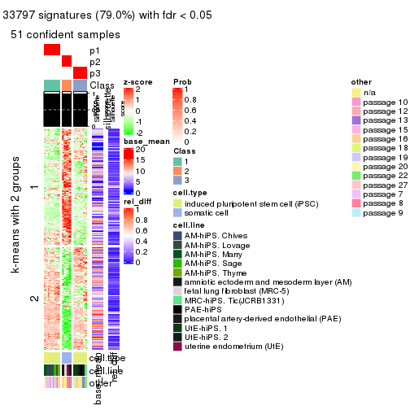
get_signatures(res, k = 4)
get_signatures(res, k = 5)
#> Error in mat[ceiling(1:nr/h_ratio), ceiling(1:nc/w_ratio), drop = FALSE]: subscript out of bounds
get_signatures(res, k = 6)
#> Error in mat[ceiling(1:nr/h_ratio), ceiling(1:nc/w_ratio), drop = FALSE]: subscript out of bounds
Signature heatmaps where rows are not scaled:
get_signatures(res, k = 2, scale_rows = FALSE)
get_signatures(res, k = 3, scale_rows = FALSE)
get_signatures(res, k = 4, scale_rows = FALSE)
get_signatures(res, k = 5, scale_rows = FALSE)

get_signatures(res, k = 6, scale_rows = FALSE)
Compare the overlap of signatures from different k:
compare_signatures(res)
get_signature() returns a data frame invisibly. TO get the list of signatures, the function
call should be assigned to a variable explicitly. In following code, if plot argument is set
to FALSE, no heatmap is plotted while only the differential analysis is performed.
# code only for demonstration
tb = get_signature(res, k = ..., plot = FALSE)
An example of the output of tb is:
#> which_row fdr mean_1 mean_2 scaled_mean_1 scaled_mean_2 km
#> 1 38 0.042760348 8.373488 9.131774 -0.5533452 0.5164555 1
#> 2 40 0.018707592 7.106213 8.469186 -0.6173731 0.5762149 1
#> 3 55 0.019134737 10.221463 11.207825 -0.6159697 0.5749050 1
#> 4 59 0.006059896 5.921854 7.869574 -0.6899429 0.6439467 1
#> 5 60 0.018055526 8.928898 10.211722 -0.6204761 0.5791110 1
#> 6 98 0.009384629 15.714769 14.887706 0.6635654 -0.6193277 2
...
The columns in tb are:
which_row: row indices corresponding to the input matrix.fdr: FDR for the differential test. mean_x: The mean value in group x.scaled_mean_x: The mean value in group x after rows are scaled.km: Row groups if k-means clustering is applied to rows.UMAP plot which shows how samples are separated.
dimension_reduction(res, k = 2, method = "UMAP")

dimension_reduction(res, k = 3, method = "UMAP")
dimension_reduction(res, k = 4, method = "UMAP")
dimension_reduction(res, k = 5, method = "UMAP")
dimension_reduction(res, k = 6, method = "UMAP")
Following heatmap shows how subgroups are split when increasing k:
collect_classes(res)
Test correlation between subgroups and known annotations. If the known annotation is numeric, one-way ANOVA test is applied, and if the known annotation is discrete, chi-squared contingency table test is applied.
test_to_known_factors(res)
#> n cell.type(p) cell.line(p) other(p) k
#> MAD:mclust 51 1.46e-11 9.31e-07 5.89e-03 2
#> MAD:mclust 51 8.42e-12 1.37e-11 1.03e-06 3
#> MAD:mclust 51 4.89e-11 3.46e-13 3.99e-10 4
#> MAD:mclust 45 3.98e-09 3.67e-14 2.17e-10 5
#> MAD:mclust 48 3.55e-09 5.89e-17 3.79e-12 6
If matrix rows can be associated to genes, consider to use GO_Enrichment(res,
...) to perform function enrichment for the signature genes.
The object with results only for a single top-value method and a single partition method can be extracted as:
res = res_list["MAD", "NMF"]
# you can also extract it by
# res = res_list["MAD:NMF"]
A summary of res and all the functions that can be applied to it:
res
#> A 'ConsensusPartition' object with k = 2, 3, 4, 5, 6.
#> On a matrix with 42764 rows and 51 columns.
#> Top rows (1000, 2000, 3000, 4000, 5000) are extracted by 'MAD' method.
#> Subgroups are detected by 'NMF' method.
#> Performed in total 1250 partitions by row resampling.
#> Best k for subgroups seems to be 2.
#>
#> Following methods can be applied to this 'ConsensusPartition' object:
#> [1] "cola_report" "collect_classes" "collect_plots"
#> [4] "collect_stats" "colnames" "compare_signatures"
#> [7] "consensus_heatmap" "dimension_reduction" "functional_enrichment"
#> [10] "get_anno_col" "get_anno" "get_classes"
#> [13] "get_consensus" "get_matrix" "get_membership"
#> [16] "get_param" "get_signatures" "get_stats"
#> [19] "is_best_k" "is_stable_k" "membership_heatmap"
#> [22] "ncol" "nrow" "plot_ecdf"
#> [25] "rownames" "select_partition_number" "show"
#> [28] "suggest_best_k" "test_to_known_factors"
collect_plots() function collects all the plots made from res for all k (number of partitions)
into one single page to provide an easy and fast comparison between different k.
collect_plots(res)
The plots are:
k and the heatmap of
predicted classes for each k.k.k.k.All the plots in panels can be made by individual functions and they are plotted later in this section.
select_partition_number() produces several plots showing different
statistics for choosing “optimized” k. There are following statistics:
k;k, the area increased is defined as \(A_k - A_{k-1}\).The detailed explanations of these statistics can be found in the cola vignette.
Generally speaking, lower PAC score, higher mean silhouette score or higher
concordance corresponds to better partition. Rand index and Jaccard index
measure how similar the current partition is compared to partition with k-1.
If they are too similar, we won't accept k is better than k-1.
select_partition_number(res)
The numeric values for all these statistics can be obtained by get_stats().
get_stats(res)
#> k 1-PAC mean_silhouette concordance area_increased Rand Jaccard
#> 2 2 1.000 0.934 0.976 0.3926 0.613 0.613
#> 3 3 0.850 0.915 0.962 0.6925 0.693 0.511
#> 4 4 0.790 0.739 0.868 0.0758 0.947 0.846
#> 5 5 0.816 0.805 0.858 0.0654 0.855 0.589
#> 6 6 0.795 0.711 0.864 0.0360 0.984 0.939
suggest_best_k() suggests the best \(k\) based on these statistics. The rules are as follows:
NA.suggest_best_k(res)
#> [1] 2
Following shows the table of the partitions (You need to click the show/hide
code output link to see it). The membership matrix (columns with name p*)
is inferred by
clue::cl_consensus()
function with the SE method. Basically the value in the membership matrix
represents the probability to belong to a certain group. The finall class
label for an item is determined with the group with highest probability it
belongs to.
In get_classes() function, the entropy is calculated from the membership
matrix and the silhouette score is calculated from the consensus matrix.
cbind(get_classes(res, k = 2), get_membership(res, k = 2))
#> class entropy silhouette p1 p2
#> GSM520665 2 0.000 0.961 0.000 1.000
#> GSM520666 2 0.000 0.961 0.000 1.000
#> GSM520667 2 0.000 0.961 0.000 1.000
#> GSM520704 2 0.000 0.961 0.000 1.000
#> GSM520705 2 0.000 0.961 0.000 1.000
#> GSM520711 2 0.000 0.961 0.000 1.000
#> GSM520692 2 0.000 0.961 0.000 1.000
#> GSM520693 2 0.000 0.961 0.000 1.000
#> GSM520694 2 0.000 0.961 0.000 1.000
#> GSM520689 2 0.000 0.961 0.000 1.000
#> GSM520690 2 0.000 0.961 0.000 1.000
#> GSM520691 2 0.000 0.961 0.000 1.000
#> GSM520668 1 0.958 0.364 0.620 0.380
#> GSM520669 1 0.958 0.364 0.620 0.380
#> GSM520670 2 0.992 0.144 0.448 0.552
#> GSM520713 1 0.000 0.978 1.000 0.000
#> GSM520714 1 0.000 0.978 1.000 0.000
#> GSM520715 1 0.000 0.978 1.000 0.000
#> GSM520695 1 0.000 0.978 1.000 0.000
#> GSM520696 1 0.000 0.978 1.000 0.000
#> GSM520697 1 0.000 0.978 1.000 0.000
#> GSM520709 1 0.000 0.978 1.000 0.000
#> GSM520710 1 0.000 0.978 1.000 0.000
#> GSM520712 1 0.000 0.978 1.000 0.000
#> GSM520698 1 0.000 0.978 1.000 0.000
#> GSM520699 1 0.000 0.978 1.000 0.000
#> GSM520700 1 0.000 0.978 1.000 0.000
#> GSM520701 1 0.000 0.978 1.000 0.000
#> GSM520702 1 0.000 0.978 1.000 0.000
#> GSM520703 1 0.000 0.978 1.000 0.000
#> GSM520671 1 0.000 0.978 1.000 0.000
#> GSM520672 1 0.000 0.978 1.000 0.000
#> GSM520673 1 0.000 0.978 1.000 0.000
#> GSM520681 1 0.000 0.978 1.000 0.000
#> GSM520682 1 0.000 0.978 1.000 0.000
#> GSM520680 1 0.000 0.978 1.000 0.000
#> GSM520677 1 0.000 0.978 1.000 0.000
#> GSM520678 1 0.000 0.978 1.000 0.000
#> GSM520679 1 0.000 0.978 1.000 0.000
#> GSM520674 1 0.000 0.978 1.000 0.000
#> GSM520675 1 0.000 0.978 1.000 0.000
#> GSM520676 1 0.000 0.978 1.000 0.000
#> GSM520686 1 0.000 0.978 1.000 0.000
#> GSM520687 1 0.000 0.978 1.000 0.000
#> GSM520688 1 0.000 0.978 1.000 0.000
#> GSM520683 1 0.000 0.978 1.000 0.000
#> GSM520684 1 0.000 0.978 1.000 0.000
#> GSM520685 1 0.000 0.978 1.000 0.000
#> GSM520708 1 0.000 0.978 1.000 0.000
#> GSM520706 1 0.000 0.978 1.000 0.000
#> GSM520707 1 0.000 0.978 1.000 0.000
cbind(get_classes(res, k = 3), get_membership(res, k = 3))
#> class entropy silhouette p1 p2 p3
#> GSM520665 2 0.0000 1.000 0.000 1.00 0.000
#> GSM520666 2 0.0000 1.000 0.000 1.00 0.000
#> GSM520667 2 0.0000 1.000 0.000 1.00 0.000
#> GSM520704 2 0.0000 1.000 0.000 1.00 0.000
#> GSM520705 2 0.0000 1.000 0.000 1.00 0.000
#> GSM520711 2 0.0000 1.000 0.000 1.00 0.000
#> GSM520692 2 0.0000 1.000 0.000 1.00 0.000
#> GSM520693 2 0.0000 1.000 0.000 1.00 0.000
#> GSM520694 2 0.0000 1.000 0.000 1.00 0.000
#> GSM520689 2 0.0000 1.000 0.000 1.00 0.000
#> GSM520690 2 0.0000 1.000 0.000 1.00 0.000
#> GSM520691 2 0.0000 1.000 0.000 1.00 0.000
#> GSM520668 1 0.5560 0.600 0.700 0.30 0.000
#> GSM520669 1 0.4291 0.773 0.820 0.18 0.000
#> GSM520670 1 0.5397 0.635 0.720 0.28 0.000
#> GSM520713 3 0.0000 0.967 0.000 0.00 1.000
#> GSM520714 3 0.0000 0.967 0.000 0.00 1.000
#> GSM520715 3 0.0000 0.967 0.000 0.00 1.000
#> GSM520695 3 0.0000 0.967 0.000 0.00 1.000
#> GSM520696 3 0.0000 0.967 0.000 0.00 1.000
#> GSM520697 3 0.0000 0.967 0.000 0.00 1.000
#> GSM520709 3 0.0000 0.967 0.000 0.00 1.000
#> GSM520710 3 0.0000 0.967 0.000 0.00 1.000
#> GSM520712 3 0.0000 0.967 0.000 0.00 1.000
#> GSM520698 3 0.0000 0.967 0.000 0.00 1.000
#> GSM520699 3 0.0000 0.967 0.000 0.00 1.000
#> GSM520700 3 0.6309 -0.129 0.496 0.00 0.504
#> GSM520701 3 0.0000 0.967 0.000 0.00 1.000
#> GSM520702 3 0.0000 0.967 0.000 0.00 1.000
#> GSM520703 3 0.0000 0.967 0.000 0.00 1.000
#> GSM520671 1 0.0000 0.924 1.000 0.00 0.000
#> GSM520672 1 0.0000 0.924 1.000 0.00 0.000
#> GSM520673 1 0.0000 0.924 1.000 0.00 0.000
#> GSM520681 1 0.3482 0.860 0.872 0.00 0.128
#> GSM520682 1 0.3340 0.868 0.880 0.00 0.120
#> GSM520680 1 0.0000 0.924 1.000 0.00 0.000
#> GSM520677 1 0.0747 0.923 0.984 0.00 0.016
#> GSM520678 1 0.0424 0.925 0.992 0.00 0.008
#> GSM520679 1 0.0237 0.925 0.996 0.00 0.004
#> GSM520674 1 0.0237 0.925 0.996 0.00 0.004
#> GSM520675 1 0.3116 0.877 0.892 0.00 0.108
#> GSM520676 1 0.0237 0.925 0.996 0.00 0.004
#> GSM520686 1 0.0237 0.925 0.996 0.00 0.004
#> GSM520687 1 0.0237 0.925 0.996 0.00 0.004
#> GSM520688 1 0.0424 0.925 0.992 0.00 0.008
#> GSM520683 1 0.3340 0.868 0.880 0.00 0.120
#> GSM520684 1 0.1753 0.911 0.952 0.00 0.048
#> GSM520685 1 0.2959 0.883 0.900 0.00 0.100
#> GSM520708 3 0.0000 0.967 0.000 0.00 1.000
#> GSM520706 3 0.0000 0.967 0.000 0.00 1.000
#> GSM520707 3 0.0000 0.967 0.000 0.00 1.000
cbind(get_classes(res, k = 4), get_membership(res, k = 4))
#> class entropy silhouette p1 p2 p3 p4
#> GSM520665 2 0.0188 0.775 0.000 0.996 0.004 0.000
#> GSM520666 2 0.0188 0.775 0.000 0.996 0.004 0.000
#> GSM520667 2 0.0188 0.775 0.000 0.996 0.004 0.000
#> GSM520704 2 0.4679 0.607 0.000 0.648 0.352 0.000
#> GSM520705 2 0.4679 0.607 0.000 0.648 0.352 0.000
#> GSM520711 2 0.4679 0.607 0.000 0.648 0.352 0.000
#> GSM520692 2 0.2589 0.743 0.000 0.884 0.116 0.000
#> GSM520693 2 0.1389 0.771 0.000 0.952 0.048 0.000
#> GSM520694 2 0.1118 0.774 0.000 0.964 0.036 0.000
#> GSM520689 2 0.0336 0.777 0.000 0.992 0.008 0.000
#> GSM520690 2 0.0000 0.776 0.000 1.000 0.000 0.000
#> GSM520691 2 0.0336 0.772 0.000 0.992 0.008 0.000
#> GSM520668 2 0.8064 -0.907 0.004 0.348 0.300 0.348
#> GSM520669 3 0.8048 0.989 0.004 0.348 0.360 0.288
#> GSM520670 3 0.8041 0.989 0.004 0.348 0.364 0.284
#> GSM520713 4 0.0000 0.792 0.000 0.000 0.000 1.000
#> GSM520714 4 0.0000 0.792 0.000 0.000 0.000 1.000
#> GSM520715 4 0.0000 0.792 0.000 0.000 0.000 1.000
#> GSM520695 4 0.0469 0.785 0.000 0.000 0.012 0.988
#> GSM520696 4 0.0469 0.785 0.000 0.000 0.012 0.988
#> GSM520697 4 0.0188 0.789 0.000 0.000 0.004 0.996
#> GSM520709 4 0.0336 0.790 0.008 0.000 0.000 0.992
#> GSM520710 4 0.0336 0.790 0.008 0.000 0.000 0.992
#> GSM520712 4 0.0188 0.792 0.004 0.000 0.000 0.996
#> GSM520698 4 0.3791 0.532 0.000 0.004 0.200 0.796
#> GSM520699 4 0.3791 0.532 0.000 0.004 0.200 0.796
#> GSM520700 4 0.5610 0.336 0.008 0.064 0.208 0.720
#> GSM520701 4 0.0188 0.792 0.004 0.000 0.000 0.996
#> GSM520702 4 0.0188 0.792 0.004 0.000 0.000 0.996
#> GSM520703 4 0.0188 0.792 0.004 0.000 0.000 0.996
#> GSM520671 1 0.4040 0.799 0.752 0.000 0.248 0.000
#> GSM520672 1 0.4907 0.570 0.580 0.000 0.420 0.000
#> GSM520673 1 0.2589 0.905 0.884 0.000 0.116 0.000
#> GSM520681 1 0.0592 0.921 0.984 0.000 0.000 0.016
#> GSM520682 1 0.0188 0.927 0.996 0.000 0.000 0.004
#> GSM520680 1 0.3266 0.871 0.832 0.000 0.168 0.000
#> GSM520677 1 0.2741 0.908 0.892 0.000 0.096 0.012
#> GSM520678 1 0.1970 0.923 0.932 0.000 0.060 0.008
#> GSM520679 1 0.1824 0.924 0.936 0.000 0.060 0.004
#> GSM520674 1 0.1389 0.927 0.952 0.000 0.048 0.000
#> GSM520675 1 0.0188 0.927 0.996 0.000 0.000 0.004
#> GSM520676 1 0.1474 0.926 0.948 0.000 0.052 0.000
#> GSM520686 1 0.0707 0.929 0.980 0.000 0.020 0.000
#> GSM520687 1 0.0592 0.929 0.984 0.000 0.016 0.000
#> GSM520688 1 0.0592 0.929 0.984 0.000 0.016 0.000
#> GSM520683 1 0.0188 0.927 0.996 0.000 0.000 0.004
#> GSM520684 1 0.1109 0.927 0.968 0.000 0.028 0.004
#> GSM520685 1 0.0657 0.929 0.984 0.000 0.012 0.004
#> GSM520708 4 0.4948 0.306 0.440 0.000 0.000 0.560
#> GSM520706 4 0.4948 0.306 0.440 0.000 0.000 0.560
#> GSM520707 4 0.4961 0.290 0.448 0.000 0.000 0.552
cbind(get_classes(res, k = 5), get_membership(res, k = 5))
#> class entropy silhouette p1 p2 p3 p4 p5
#> GSM520665 2 0.0510 0.98003 0.000 0.984 0.016 0.000 0.000
#> GSM520666 2 0.0510 0.98003 0.000 0.984 0.016 0.000 0.000
#> GSM520667 2 0.0510 0.98003 0.000 0.984 0.016 0.000 0.000
#> GSM520704 5 0.3561 1.00000 0.000 0.260 0.000 0.000 0.740
#> GSM520705 5 0.3561 1.00000 0.000 0.260 0.000 0.000 0.740
#> GSM520711 5 0.3561 1.00000 0.000 0.260 0.000 0.000 0.740
#> GSM520692 2 0.0404 0.97471 0.000 0.988 0.000 0.000 0.012
#> GSM520693 2 0.0404 0.97471 0.000 0.988 0.000 0.000 0.012
#> GSM520694 2 0.0566 0.97730 0.000 0.984 0.004 0.000 0.012
#> GSM520689 2 0.0000 0.98150 0.000 1.000 0.000 0.000 0.000
#> GSM520690 2 0.0000 0.98150 0.000 1.000 0.000 0.000 0.000
#> GSM520691 2 0.0510 0.98003 0.000 0.984 0.016 0.000 0.000
#> GSM520668 3 0.1106 0.69065 0.000 0.012 0.964 0.024 0.000
#> GSM520669 3 0.1012 0.68603 0.000 0.012 0.968 0.020 0.000
#> GSM520670 3 0.1106 0.69065 0.000 0.012 0.964 0.024 0.000
#> GSM520713 4 0.1197 0.95145 0.000 0.000 0.048 0.952 0.000
#> GSM520714 4 0.1197 0.95145 0.000 0.000 0.048 0.952 0.000
#> GSM520715 4 0.1121 0.95263 0.000 0.000 0.044 0.956 0.000
#> GSM520695 4 0.0671 0.96745 0.000 0.000 0.016 0.980 0.004
#> GSM520696 4 0.0865 0.96091 0.000 0.000 0.024 0.972 0.004
#> GSM520697 4 0.0290 0.97294 0.000 0.000 0.008 0.992 0.000
#> GSM520709 4 0.0566 0.96377 0.012 0.000 0.004 0.984 0.000
#> GSM520710 4 0.0566 0.96377 0.012 0.000 0.004 0.984 0.000
#> GSM520712 4 0.0000 0.97303 0.000 0.000 0.000 1.000 0.000
#> GSM520698 3 0.4449 0.58740 0.000 0.004 0.604 0.388 0.004
#> GSM520699 3 0.4480 0.56981 0.000 0.004 0.592 0.400 0.004
#> GSM520700 3 0.4040 0.69135 0.000 0.012 0.712 0.276 0.000
#> GSM520701 4 0.0162 0.97370 0.000 0.000 0.000 0.996 0.004
#> GSM520702 4 0.0162 0.97370 0.000 0.000 0.000 0.996 0.004
#> GSM520703 4 0.0162 0.97370 0.000 0.000 0.000 0.996 0.004
#> GSM520671 1 0.5068 0.65602 0.640 0.000 0.300 0.000 0.060
#> GSM520672 1 0.5129 0.63336 0.616 0.000 0.328 0.000 0.056
#> GSM520673 1 0.4380 0.70298 0.708 0.000 0.260 0.000 0.032
#> GSM520681 1 0.0486 0.77387 0.988 0.000 0.004 0.004 0.004
#> GSM520682 1 0.0771 0.77728 0.976 0.000 0.020 0.000 0.004
#> GSM520680 1 0.4866 0.67294 0.664 0.000 0.284 0.000 0.052
#> GSM520677 1 0.5696 0.68171 0.712 0.000 0.096 0.096 0.096
#> GSM520678 1 0.3479 0.75896 0.836 0.000 0.080 0.000 0.084
#> GSM520679 1 0.3479 0.75966 0.836 0.000 0.084 0.000 0.080
#> GSM520674 1 0.3301 0.76224 0.848 0.000 0.080 0.000 0.072
#> GSM520675 1 0.0451 0.77353 0.988 0.000 0.008 0.000 0.004
#> GSM520676 1 0.3354 0.76300 0.844 0.000 0.088 0.000 0.068
#> GSM520686 1 0.2390 0.77123 0.896 0.000 0.084 0.000 0.020
#> GSM520687 1 0.2331 0.77208 0.900 0.000 0.080 0.000 0.020
#> GSM520688 1 0.2079 0.77344 0.916 0.000 0.064 0.000 0.020
#> GSM520683 1 0.0771 0.77039 0.976 0.000 0.004 0.000 0.020
#> GSM520684 1 0.3639 0.72593 0.792 0.000 0.184 0.000 0.024
#> GSM520685 1 0.2012 0.77365 0.920 0.000 0.060 0.000 0.020
#> GSM520708 1 0.5427 -0.00325 0.480 0.000 0.020 0.476 0.024
#> GSM520706 1 0.5383 0.17931 0.536 0.000 0.020 0.420 0.024
#> GSM520707 1 0.5330 0.25561 0.564 0.000 0.020 0.392 0.024
cbind(get_classes(res, k = 6), get_membership(res, k = 6))
#> class entropy silhouette p1 p2 p3 p4 p5 p6
#> GSM520665 2 0.0937 0.9714 0.000 0.960 0.000 0.000 0.000 0.040
#> GSM520666 2 0.0937 0.9714 0.000 0.960 0.000 0.000 0.000 0.040
#> GSM520667 2 0.0937 0.9714 0.000 0.960 0.000 0.000 0.000 0.040
#> GSM520704 5 0.1501 1.0000 0.000 0.076 0.000 0.000 0.924 0.000
#> GSM520705 5 0.1501 1.0000 0.000 0.076 0.000 0.000 0.924 0.000
#> GSM520711 5 0.1501 1.0000 0.000 0.076 0.000 0.000 0.924 0.000
#> GSM520692 2 0.0291 0.9825 0.000 0.992 0.000 0.000 0.004 0.004
#> GSM520693 2 0.0146 0.9825 0.000 0.996 0.000 0.000 0.004 0.000
#> GSM520694 2 0.0000 0.9833 0.000 1.000 0.000 0.000 0.000 0.000
#> GSM520689 2 0.0146 0.9832 0.000 0.996 0.000 0.000 0.000 0.004
#> GSM520690 2 0.0146 0.9832 0.000 0.996 0.000 0.000 0.000 0.004
#> GSM520691 2 0.0146 0.9832 0.000 0.996 0.000 0.000 0.000 0.004
#> GSM520668 3 0.0806 0.8731 0.000 0.000 0.972 0.020 0.000 0.008
#> GSM520669 3 0.0622 0.8674 0.000 0.000 0.980 0.012 0.000 0.008
#> GSM520670 3 0.0806 0.8731 0.000 0.000 0.972 0.020 0.000 0.008
#> GSM520713 4 0.2488 0.8672 0.000 0.000 0.076 0.880 0.000 0.044
#> GSM520714 4 0.2376 0.8731 0.000 0.000 0.068 0.888 0.000 0.044
#> GSM520715 4 0.2563 0.8632 0.000 0.000 0.072 0.876 0.000 0.052
#> GSM520695 4 0.0146 0.9168 0.000 0.000 0.004 0.996 0.000 0.000
#> GSM520696 4 0.0260 0.9168 0.000 0.000 0.008 0.992 0.000 0.000
#> GSM520697 4 0.0146 0.9168 0.000 0.000 0.004 0.996 0.000 0.000
#> GSM520709 4 0.1080 0.9084 0.004 0.000 0.004 0.960 0.000 0.032
#> GSM520710 4 0.1080 0.9084 0.004 0.000 0.004 0.960 0.000 0.032
#> GSM520712 4 0.0260 0.9143 0.000 0.000 0.000 0.992 0.000 0.008
#> GSM520698 3 0.4138 0.8324 0.000 0.000 0.772 0.112 0.016 0.100
#> GSM520699 3 0.4138 0.8325 0.000 0.000 0.772 0.112 0.016 0.100
#> GSM520700 3 0.2982 0.8683 0.000 0.000 0.860 0.060 0.012 0.068
#> GSM520701 4 0.2466 0.8648 0.000 0.000 0.008 0.872 0.008 0.112
#> GSM520702 4 0.2712 0.8620 0.000 0.000 0.016 0.864 0.012 0.108
#> GSM520703 4 0.2666 0.8630 0.000 0.000 0.012 0.864 0.012 0.112
#> GSM520671 1 0.3766 0.4677 0.720 0.000 0.024 0.000 0.000 0.256
#> GSM520672 1 0.4272 0.4547 0.704 0.000 0.052 0.000 0.004 0.240
#> GSM520673 1 0.3320 0.5313 0.772 0.000 0.016 0.000 0.000 0.212
#> GSM520681 1 0.1444 0.6246 0.928 0.000 0.000 0.000 0.000 0.072
#> GSM520682 1 0.1863 0.6144 0.896 0.000 0.000 0.000 0.000 0.104
#> GSM520680 1 0.3619 0.5013 0.744 0.000 0.024 0.000 0.000 0.232
#> GSM520677 6 0.6531 0.0000 0.332 0.000 0.016 0.256 0.004 0.392
#> GSM520678 1 0.4896 -0.0830 0.528 0.000 0.016 0.032 0.000 0.424
#> GSM520679 1 0.4592 0.0710 0.560 0.000 0.016 0.016 0.000 0.408
#> GSM520674 1 0.4585 0.0859 0.564 0.000 0.016 0.016 0.000 0.404
#> GSM520675 1 0.2340 0.6057 0.852 0.000 0.000 0.000 0.000 0.148
#> GSM520676 1 0.4345 0.2718 0.624 0.000 0.020 0.008 0.000 0.348
#> GSM520686 1 0.0508 0.6278 0.984 0.000 0.000 0.000 0.004 0.012
#> GSM520687 1 0.0692 0.6283 0.976 0.000 0.000 0.000 0.004 0.020
#> GSM520688 1 0.0692 0.6252 0.976 0.000 0.000 0.000 0.004 0.020
#> GSM520683 1 0.0865 0.6307 0.964 0.000 0.000 0.000 0.000 0.036
#> GSM520684 1 0.1088 0.6251 0.960 0.000 0.016 0.000 0.000 0.024
#> GSM520685 1 0.1204 0.6036 0.944 0.000 0.000 0.000 0.000 0.056
#> GSM520708 1 0.5322 0.1498 0.596 0.000 0.000 0.216 0.000 0.188
#> GSM520706 1 0.4795 0.2918 0.672 0.000 0.000 0.152 0.000 0.176
#> GSM520707 1 0.4693 0.3112 0.684 0.000 0.000 0.140 0.000 0.176
Heatmaps for the consensus matrix. It visualizes the probability of two samples to be in a same group.
consensus_heatmap(res, k = 2)
consensus_heatmap(res, k = 3)
consensus_heatmap(res, k = 4)
consensus_heatmap(res, k = 5)
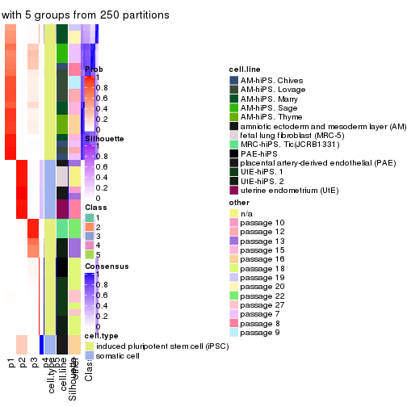
consensus_heatmap(res, k = 6)
Heatmaps for the membership of samples in all partitions to see how consistent they are:
membership_heatmap(res, k = 2)
membership_heatmap(res, k = 3)

membership_heatmap(res, k = 4)
membership_heatmap(res, k = 5)
membership_heatmap(res, k = 6)
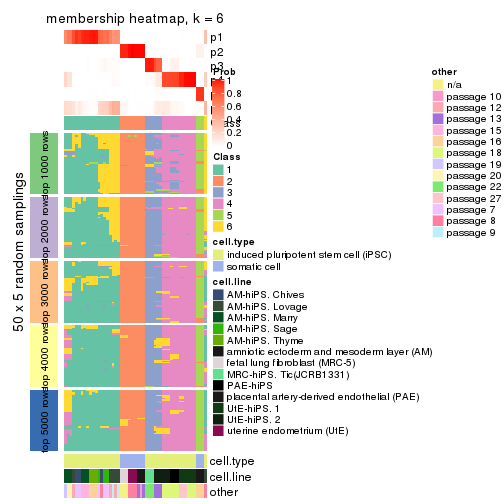
As soon as we have had the classes for columns, we can look for signatures which are significantly different between classes which can be candidate marks for certain classes. Following are the heatmaps for signatures.
Signature heatmaps where rows are scaled:
get_signatures(res, k = 2)
get_signatures(res, k = 3)
#> Error in mat[ceiling(1:nr/h_ratio), ceiling(1:nc/w_ratio), drop = FALSE]: subscript out of bounds
get_signatures(res, k = 4)
#> Error in mat[ceiling(1:nr/h_ratio), ceiling(1:nc/w_ratio), drop = FALSE]: subscript out of bounds
get_signatures(res, k = 5)
#> Error in mat[ceiling(1:nr/h_ratio), ceiling(1:nc/w_ratio), drop = FALSE]: subscript out of bounds
get_signatures(res, k = 6)
#> Error in mat[ceiling(1:nr/h_ratio), ceiling(1:nc/w_ratio), drop = FALSE]: subscript out of bounds
Signature heatmaps where rows are not scaled:
get_signatures(res, k = 2, scale_rows = FALSE)
get_signatures(res, k = 3, scale_rows = FALSE)
get_signatures(res, k = 4, scale_rows = FALSE)
get_signatures(res, k = 5, scale_rows = FALSE)
get_signatures(res, k = 6, scale_rows = FALSE)
Compare the overlap of signatures from different k:
compare_signatures(res)
get_signature() returns a data frame invisibly. TO get the list of signatures, the function
call should be assigned to a variable explicitly. In following code, if plot argument is set
to FALSE, no heatmap is plotted while only the differential analysis is performed.
# code only for demonstration
tb = get_signature(res, k = ..., plot = FALSE)
An example of the output of tb is:
#> which_row fdr mean_1 mean_2 scaled_mean_1 scaled_mean_2 km
#> 1 38 0.042760348 8.373488 9.131774 -0.5533452 0.5164555 1
#> 2 40 0.018707592 7.106213 8.469186 -0.6173731 0.5762149 1
#> 3 55 0.019134737 10.221463 11.207825 -0.6159697 0.5749050 1
#> 4 59 0.006059896 5.921854 7.869574 -0.6899429 0.6439467 1
#> 5 60 0.018055526 8.928898 10.211722 -0.6204761 0.5791110 1
#> 6 98 0.009384629 15.714769 14.887706 0.6635654 -0.6193277 2
...
The columns in tb are:
which_row: row indices corresponding to the input matrix.fdr: FDR for the differential test. mean_x: The mean value in group x.scaled_mean_x: The mean value in group x after rows are scaled.km: Row groups if k-means clustering is applied to rows.UMAP plot which shows how samples are separated.
dimension_reduction(res, k = 2, method = "UMAP")
dimension_reduction(res, k = 3, method = "UMAP")
dimension_reduction(res, k = 4, method = "UMAP")
dimension_reduction(res, k = 5, method = "UMAP")
dimension_reduction(res, k = 6, method = "UMAP")

Following heatmap shows how subgroups are split when increasing k:
collect_classes(res)
Test correlation between subgroups and known annotations. If the known annotation is numeric, one-way ANOVA test is applied, and if the known annotation is discrete, chi-squared contingency table test is applied.
test_to_known_factors(res)
#> n cell.type(p) cell.line(p) other(p) k
#> MAD:NMF 48 6.02e-11 1.43e-06 7.23e-03 2
#> MAD:NMF 50 1.39e-11 6.67e-10 1.12e-06 3
#> MAD:NMF 46 5.67e-10 7.30e-14 8.69e-11 4
#> MAD:NMF 48 9.44e-10 3.50e-16 1.08e-11 5
#> MAD:NMF 41 2.69e-08 3.20e-12 1.25e-09 6
If matrix rows can be associated to genes, consider to use GO_Enrichment(res,
...) to perform function enrichment for the signature genes.
The object with results only for a single top-value method and a single partition method can be extracted as:
res = res_list["ATC", "hclust"]
# you can also extract it by
# res = res_list["ATC:hclust"]
A summary of res and all the functions that can be applied to it:
res
#> A 'ConsensusPartition' object with k = 2, 3, 4, 5, 6.
#> On a matrix with 42764 rows and 51 columns.
#> Top rows (1000, 2000, 3000, 4000, 5000) are extracted by 'ATC' method.
#> Subgroups are detected by 'hclust' method.
#> Performed in total 1250 partitions by row resampling.
#> Best k for subgroups seems to be 6.
#>
#> Following methods can be applied to this 'ConsensusPartition' object:
#> [1] "cola_report" "collect_classes" "collect_plots"
#> [4] "collect_stats" "colnames" "compare_signatures"
#> [7] "consensus_heatmap" "dimension_reduction" "functional_enrichment"
#> [10] "get_anno_col" "get_anno" "get_classes"
#> [13] "get_consensus" "get_matrix" "get_membership"
#> [16] "get_param" "get_signatures" "get_stats"
#> [19] "is_best_k" "is_stable_k" "membership_heatmap"
#> [22] "ncol" "nrow" "plot_ecdf"
#> [25] "rownames" "select_partition_number" "show"
#> [28] "suggest_best_k" "test_to_known_factors"
collect_plots() function collects all the plots made from res for all k (number of partitions)
into one single page to provide an easy and fast comparison between different k.
collect_plots(res)
The plots are:
k and the heatmap of
predicted classes for each k.k.k.k.All the plots in panels can be made by individual functions and they are plotted later in this section.
select_partition_number() produces several plots showing different
statistics for choosing “optimized” k. There are following statistics:
k;k, the area increased is defined as \(A_k - A_{k-1}\).The detailed explanations of these statistics can be found in the cola vignette.
Generally speaking, lower PAC score, higher mean silhouette score or higher
concordance corresponds to better partition. Rand index and Jaccard index
measure how similar the current partition is compared to partition with k-1.
If they are too similar, we won't accept k is better than k-1.
select_partition_number(res)
The numeric values for all these statistics can be obtained by get_stats().
get_stats(res)
#> k 1-PAC mean_silhouette concordance area_increased Rand Jaccard
#> 2 2 1.000 1.000 1.000 0.3677 0.633 0.633
#> 3 3 1.000 0.978 0.990 0.2638 0.915 0.866
#> 4 4 0.968 0.960 0.969 0.0455 0.979 0.961
#> 5 5 1.000 0.978 0.990 0.0290 0.986 0.973
#> 6 6 1.000 1.000 1.000 0.1304 0.922 0.849
suggest_best_k() suggests the best \(k\) based on these statistics. The rules are as follows:
NA.suggest_best_k(res)
#> [1] 6
#> attr(,"optional")
#> [1] 2 3
There is also optional best \(k\) = 2 3 that is worth to check.
Following shows the table of the partitions (You need to click the show/hide
code output link to see it). The membership matrix (columns with name p*)
is inferred by
clue::cl_consensus()
function with the SE method. Basically the value in the membership matrix
represents the probability to belong to a certain group. The finall class
label for an item is determined with the group with highest probability it
belongs to.
In get_classes() function, the entropy is calculated from the membership
matrix and the silhouette score is calculated from the consensus matrix.
cbind(get_classes(res, k = 2), get_membership(res, k = 2))
#> class entropy silhouette p1 p2
#> GSM520665 2 0 1 0 1
#> GSM520666 2 0 1 0 1
#> GSM520667 2 0 1 0 1
#> GSM520704 2 0 1 0 1
#> GSM520705 2 0 1 0 1
#> GSM520711 2 0 1 0 1
#> GSM520692 2 0 1 0 1
#> GSM520693 2 0 1 0 1
#> GSM520694 2 0 1 0 1
#> GSM520689 2 0 1 0 1
#> GSM520690 2 0 1 0 1
#> GSM520691 2 0 1 0 1
#> GSM520668 1 0 1 1 0
#> GSM520669 1 0 1 1 0
#> GSM520670 1 0 1 1 0
#> GSM520713 1 0 1 1 0
#> GSM520714 1 0 1 1 0
#> GSM520715 1 0 1 1 0
#> GSM520695 1 0 1 1 0
#> GSM520696 1 0 1 1 0
#> GSM520697 1 0 1 1 0
#> GSM520709 1 0 1 1 0
#> GSM520710 1 0 1 1 0
#> GSM520712 1 0 1 1 0
#> GSM520698 1 0 1 1 0
#> GSM520699 1 0 1 1 0
#> GSM520700 1 0 1 1 0
#> GSM520701 1 0 1 1 0
#> GSM520702 1 0 1 1 0
#> GSM520703 1 0 1 1 0
#> GSM520671 1 0 1 1 0
#> GSM520672 1 0 1 1 0
#> GSM520673 1 0 1 1 0
#> GSM520681 1 0 1 1 0
#> GSM520682 1 0 1 1 0
#> GSM520680 1 0 1 1 0
#> GSM520677 1 0 1 1 0
#> GSM520678 1 0 1 1 0
#> GSM520679 1 0 1 1 0
#> GSM520674 1 0 1 1 0
#> GSM520675 1 0 1 1 0
#> GSM520676 1 0 1 1 0
#> GSM520686 1 0 1 1 0
#> GSM520687 1 0 1 1 0
#> GSM520688 1 0 1 1 0
#> GSM520683 1 0 1 1 0
#> GSM520684 1 0 1 1 0
#> GSM520685 1 0 1 1 0
#> GSM520708 1 0 1 1 0
#> GSM520706 1 0 1 1 0
#> GSM520707 1 0 1 1 0
cbind(get_classes(res, k = 3), get_membership(res, k = 3))
#> class entropy silhouette p1 p2 p3
#> GSM520665 2 0.000 1.000 0.000 1 0.000
#> GSM520666 2 0.000 1.000 0.000 1 0.000
#> GSM520667 2 0.000 1.000 0.000 1 0.000
#> GSM520704 2 0.000 1.000 0.000 1 0.000
#> GSM520705 2 0.000 1.000 0.000 1 0.000
#> GSM520711 2 0.000 1.000 0.000 1 0.000
#> GSM520692 2 0.000 1.000 0.000 1 0.000
#> GSM520693 2 0.000 1.000 0.000 1 0.000
#> GSM520694 2 0.000 1.000 0.000 1 0.000
#> GSM520689 2 0.000 1.000 0.000 1 0.000
#> GSM520690 2 0.000 1.000 0.000 1 0.000
#> GSM520691 2 0.000 1.000 0.000 1 0.000
#> GSM520668 3 0.000 1.000 0.000 0 1.000
#> GSM520669 3 0.000 1.000 0.000 0 1.000
#> GSM520670 3 0.000 1.000 0.000 0 1.000
#> GSM520713 1 0.000 0.985 1.000 0 0.000
#> GSM520714 1 0.000 0.985 1.000 0 0.000
#> GSM520715 1 0.000 0.985 1.000 0 0.000
#> GSM520695 1 0.000 0.985 1.000 0 0.000
#> GSM520696 1 0.000 0.985 1.000 0 0.000
#> GSM520697 1 0.000 0.985 1.000 0 0.000
#> GSM520709 1 0.000 0.985 1.000 0 0.000
#> GSM520710 1 0.000 0.985 1.000 0 0.000
#> GSM520712 1 0.000 0.985 1.000 0 0.000
#> GSM520698 1 0.424 0.799 0.824 0 0.176
#> GSM520699 1 0.424 0.799 0.824 0 0.176
#> GSM520700 1 0.424 0.799 0.824 0 0.176
#> GSM520701 1 0.000 0.985 1.000 0 0.000
#> GSM520702 1 0.000 0.985 1.000 0 0.000
#> GSM520703 1 0.000 0.985 1.000 0 0.000
#> GSM520671 1 0.000 0.985 1.000 0 0.000
#> GSM520672 1 0.000 0.985 1.000 0 0.000
#> GSM520673 1 0.000 0.985 1.000 0 0.000
#> GSM520681 1 0.000 0.985 1.000 0 0.000
#> GSM520682 1 0.000 0.985 1.000 0 0.000
#> GSM520680 1 0.000 0.985 1.000 0 0.000
#> GSM520677 1 0.000 0.985 1.000 0 0.000
#> GSM520678 1 0.000 0.985 1.000 0 0.000
#> GSM520679 1 0.000 0.985 1.000 0 0.000
#> GSM520674 1 0.000 0.985 1.000 0 0.000
#> GSM520675 1 0.000 0.985 1.000 0 0.000
#> GSM520676 1 0.000 0.985 1.000 0 0.000
#> GSM520686 1 0.000 0.985 1.000 0 0.000
#> GSM520687 1 0.000 0.985 1.000 0 0.000
#> GSM520688 1 0.000 0.985 1.000 0 0.000
#> GSM520683 1 0.000 0.985 1.000 0 0.000
#> GSM520684 1 0.000 0.985 1.000 0 0.000
#> GSM520685 1 0.000 0.985 1.000 0 0.000
#> GSM520708 1 0.000 0.985 1.000 0 0.000
#> GSM520706 1 0.000 0.985 1.000 0 0.000
#> GSM520707 1 0.000 0.985 1.000 0 0.000
cbind(get_classes(res, k = 4), get_membership(res, k = 4))
#> class entropy silhouette p1 p2 p3 p4
#> GSM520665 2 0.000 0.922 0.000 1.000 0.000 0.000
#> GSM520666 2 0.000 0.922 0.000 1.000 0.000 0.000
#> GSM520667 2 0.000 0.922 0.000 1.000 0.000 0.000
#> GSM520704 4 0.331 1.000 0.000 0.172 0.000 0.828
#> GSM520705 4 0.331 1.000 0.000 0.172 0.000 0.828
#> GSM520711 4 0.331 1.000 0.000 0.172 0.000 0.828
#> GSM520692 2 0.000 0.922 0.000 1.000 0.000 0.000
#> GSM520693 2 0.000 0.922 0.000 1.000 0.000 0.000
#> GSM520694 2 0.000 0.922 0.000 1.000 0.000 0.000
#> GSM520689 2 0.331 0.847 0.000 0.828 0.000 0.172
#> GSM520690 2 0.331 0.847 0.000 0.828 0.000 0.172
#> GSM520691 2 0.331 0.847 0.000 0.828 0.000 0.172
#> GSM520668 3 0.000 1.000 0.000 0.000 1.000 0.000
#> GSM520669 3 0.000 1.000 0.000 0.000 1.000 0.000
#> GSM520670 3 0.000 1.000 0.000 0.000 1.000 0.000
#> GSM520713 1 0.000 0.985 1.000 0.000 0.000 0.000
#> GSM520714 1 0.000 0.985 1.000 0.000 0.000 0.000
#> GSM520715 1 0.000 0.985 1.000 0.000 0.000 0.000
#> GSM520695 1 0.000 0.985 1.000 0.000 0.000 0.000
#> GSM520696 1 0.000 0.985 1.000 0.000 0.000 0.000
#> GSM520697 1 0.000 0.985 1.000 0.000 0.000 0.000
#> GSM520709 1 0.000 0.985 1.000 0.000 0.000 0.000
#> GSM520710 1 0.000 0.985 1.000 0.000 0.000 0.000
#> GSM520712 1 0.000 0.985 1.000 0.000 0.000 0.000
#> GSM520698 1 0.336 0.799 0.824 0.000 0.176 0.000
#> GSM520699 1 0.336 0.799 0.824 0.000 0.176 0.000
#> GSM520700 1 0.336 0.799 0.824 0.000 0.176 0.000
#> GSM520701 1 0.000 0.985 1.000 0.000 0.000 0.000
#> GSM520702 1 0.000 0.985 1.000 0.000 0.000 0.000
#> GSM520703 1 0.000 0.985 1.000 0.000 0.000 0.000
#> GSM520671 1 0.000 0.985 1.000 0.000 0.000 0.000
#> GSM520672 1 0.000 0.985 1.000 0.000 0.000 0.000
#> GSM520673 1 0.000 0.985 1.000 0.000 0.000 0.000
#> GSM520681 1 0.000 0.985 1.000 0.000 0.000 0.000
#> GSM520682 1 0.000 0.985 1.000 0.000 0.000 0.000
#> GSM520680 1 0.000 0.985 1.000 0.000 0.000 0.000
#> GSM520677 1 0.000 0.985 1.000 0.000 0.000 0.000
#> GSM520678 1 0.000 0.985 1.000 0.000 0.000 0.000
#> GSM520679 1 0.000 0.985 1.000 0.000 0.000 0.000
#> GSM520674 1 0.000 0.985 1.000 0.000 0.000 0.000
#> GSM520675 1 0.000 0.985 1.000 0.000 0.000 0.000
#> GSM520676 1 0.000 0.985 1.000 0.000 0.000 0.000
#> GSM520686 1 0.000 0.985 1.000 0.000 0.000 0.000
#> GSM520687 1 0.000 0.985 1.000 0.000 0.000 0.000
#> GSM520688 1 0.000 0.985 1.000 0.000 0.000 0.000
#> GSM520683 1 0.000 0.985 1.000 0.000 0.000 0.000
#> GSM520684 1 0.000 0.985 1.000 0.000 0.000 0.000
#> GSM520685 1 0.000 0.985 1.000 0.000 0.000 0.000
#> GSM520708 1 0.000 0.985 1.000 0.000 0.000 0.000
#> GSM520706 1 0.000 0.985 1.000 0.000 0.000 0.000
#> GSM520707 1 0.000 0.985 1.000 0.000 0.000 0.000
cbind(get_classes(res, k = 5), get_membership(res, k = 5))
#> class entropy silhouette p1 p2 p3 p4 p5
#> GSM520665 2 0.000 1.000 0 1 0.000 0.000 0
#> GSM520666 2 0.000 1.000 0 1 0.000 0.000 0
#> GSM520667 2 0.000 1.000 0 1 0.000 0.000 0
#> GSM520704 5 0.000 1.000 0 0 0.000 0.000 1
#> GSM520705 5 0.000 1.000 0 0 0.000 0.000 1
#> GSM520711 5 0.000 1.000 0 0 0.000 0.000 1
#> GSM520692 2 0.000 1.000 0 1 0.000 0.000 0
#> GSM520693 2 0.000 1.000 0 1 0.000 0.000 0
#> GSM520694 2 0.000 1.000 0 1 0.000 0.000 0
#> GSM520689 1 0.000 1.000 1 0 0.000 0.000 0
#> GSM520690 1 0.000 1.000 1 0 0.000 0.000 0
#> GSM520691 1 0.000 1.000 1 0 0.000 0.000 0
#> GSM520668 3 0.000 1.000 0 0 1.000 0.000 0
#> GSM520669 3 0.000 1.000 0 0 1.000 0.000 0
#> GSM520670 3 0.000 1.000 0 0 1.000 0.000 0
#> GSM520713 4 0.000 0.985 0 0 0.000 1.000 0
#> GSM520714 4 0.000 0.985 0 0 0.000 1.000 0
#> GSM520715 4 0.000 0.985 0 0 0.000 1.000 0
#> GSM520695 4 0.000 0.985 0 0 0.000 1.000 0
#> GSM520696 4 0.000 0.985 0 0 0.000 1.000 0
#> GSM520697 4 0.000 0.985 0 0 0.000 1.000 0
#> GSM520709 4 0.000 0.985 0 0 0.000 1.000 0
#> GSM520710 4 0.000 0.985 0 0 0.000 1.000 0
#> GSM520712 4 0.000 0.985 0 0 0.000 1.000 0
#> GSM520698 4 0.289 0.799 0 0 0.176 0.824 0
#> GSM520699 4 0.289 0.799 0 0 0.176 0.824 0
#> GSM520700 4 0.289 0.799 0 0 0.176 0.824 0
#> GSM520701 4 0.000 0.985 0 0 0.000 1.000 0
#> GSM520702 4 0.000 0.985 0 0 0.000 1.000 0
#> GSM520703 4 0.000 0.985 0 0 0.000 1.000 0
#> GSM520671 4 0.000 0.985 0 0 0.000 1.000 0
#> GSM520672 4 0.000 0.985 0 0 0.000 1.000 0
#> GSM520673 4 0.000 0.985 0 0 0.000 1.000 0
#> GSM520681 4 0.000 0.985 0 0 0.000 1.000 0
#> GSM520682 4 0.000 0.985 0 0 0.000 1.000 0
#> GSM520680 4 0.000 0.985 0 0 0.000 1.000 0
#> GSM520677 4 0.000 0.985 0 0 0.000 1.000 0
#> GSM520678 4 0.000 0.985 0 0 0.000 1.000 0
#> GSM520679 4 0.000 0.985 0 0 0.000 1.000 0
#> GSM520674 4 0.000 0.985 0 0 0.000 1.000 0
#> GSM520675 4 0.000 0.985 0 0 0.000 1.000 0
#> GSM520676 4 0.000 0.985 0 0 0.000 1.000 0
#> GSM520686 4 0.000 0.985 0 0 0.000 1.000 0
#> GSM520687 4 0.000 0.985 0 0 0.000 1.000 0
#> GSM520688 4 0.000 0.985 0 0 0.000 1.000 0
#> GSM520683 4 0.000 0.985 0 0 0.000 1.000 0
#> GSM520684 4 0.000 0.985 0 0 0.000 1.000 0
#> GSM520685 4 0.000 0.985 0 0 0.000 1.000 0
#> GSM520708 4 0.000 0.985 0 0 0.000 1.000 0
#> GSM520706 4 0.000 0.985 0 0 0.000 1.000 0
#> GSM520707 4 0.000 0.985 0 0 0.000 1.000 0
cbind(get_classes(res, k = 6), get_membership(res, k = 6))
#> class entropy silhouette p1 p2 p3 p4 p5 p6
#> GSM520665 2 0 1 0 1 0 0 0 0
#> GSM520666 2 0 1 0 1 0 0 0 0
#> GSM520667 2 0 1 0 1 0 0 0 0
#> GSM520704 5 0 1 0 0 0 0 1 0
#> GSM520705 5 0 1 0 0 0 0 1 0
#> GSM520711 5 0 1 0 0 0 0 1 0
#> GSM520692 2 0 1 0 1 0 0 0 0
#> GSM520693 2 0 1 0 1 0 0 0 0
#> GSM520694 2 0 1 0 1 0 0 0 0
#> GSM520689 6 0 1 0 0 0 0 0 1
#> GSM520690 6 0 1 0 0 0 0 0 1
#> GSM520691 6 0 1 0 0 0 0 0 1
#> GSM520668 3 0 1 0 0 1 0 0 0
#> GSM520669 3 0 1 0 0 1 0 0 0
#> GSM520670 3 0 1 0 0 1 0 0 0
#> GSM520713 1 0 1 1 0 0 0 0 0
#> GSM520714 1 0 1 1 0 0 0 0 0
#> GSM520715 1 0 1 1 0 0 0 0 0
#> GSM520695 1 0 1 1 0 0 0 0 0
#> GSM520696 1 0 1 1 0 0 0 0 0
#> GSM520697 1 0 1 1 0 0 0 0 0
#> GSM520709 1 0 1 1 0 0 0 0 0
#> GSM520710 1 0 1 1 0 0 0 0 0
#> GSM520712 1 0 1 1 0 0 0 0 0
#> GSM520698 4 0 1 0 0 0 1 0 0
#> GSM520699 4 0 1 0 0 0 1 0 0
#> GSM520700 4 0 1 0 0 0 1 0 0
#> GSM520701 1 0 1 1 0 0 0 0 0
#> GSM520702 1 0 1 1 0 0 0 0 0
#> GSM520703 1 0 1 1 0 0 0 0 0
#> GSM520671 1 0 1 1 0 0 0 0 0
#> GSM520672 1 0 1 1 0 0 0 0 0
#> GSM520673 1 0 1 1 0 0 0 0 0
#> GSM520681 1 0 1 1 0 0 0 0 0
#> GSM520682 1 0 1 1 0 0 0 0 0
#> GSM520680 1 0 1 1 0 0 0 0 0
#> GSM520677 1 0 1 1 0 0 0 0 0
#> GSM520678 1 0 1 1 0 0 0 0 0
#> GSM520679 1 0 1 1 0 0 0 0 0
#> GSM520674 1 0 1 1 0 0 0 0 0
#> GSM520675 1 0 1 1 0 0 0 0 0
#> GSM520676 1 0 1 1 0 0 0 0 0
#> GSM520686 1 0 1 1 0 0 0 0 0
#> GSM520687 1 0 1 1 0 0 0 0 0
#> GSM520688 1 0 1 1 0 0 0 0 0
#> GSM520683 1 0 1 1 0 0 0 0 0
#> GSM520684 1 0 1 1 0 0 0 0 0
#> GSM520685 1 0 1 1 0 0 0 0 0
#> GSM520708 1 0 1 1 0 0 0 0 0
#> GSM520706 1 0 1 1 0 0 0 0 0
#> GSM520707 1 0 1 1 0 0 0 0 0
Heatmaps for the consensus matrix. It visualizes the probability of two samples to be in a same group.
consensus_heatmap(res, k = 2)

consensus_heatmap(res, k = 3)
consensus_heatmap(res, k = 4)
consensus_heatmap(res, k = 5)
consensus_heatmap(res, k = 6)
Heatmaps for the membership of samples in all partitions to see how consistent they are:
membership_heatmap(res, k = 2)

membership_heatmap(res, k = 3)

membership_heatmap(res, k = 4)
membership_heatmap(res, k = 5)
membership_heatmap(res, k = 6)
As soon as we have had the classes for columns, we can look for signatures which are significantly different between classes which can be candidate marks for certain classes. Following are the heatmaps for signatures.
Signature heatmaps where rows are scaled:
get_signatures(res, k = 2)

get_signatures(res, k = 3)
get_signatures(res, k = 4)
get_signatures(res, k = 5)
get_signatures(res, k = 6)
Signature heatmaps where rows are not scaled:
get_signatures(res, k = 2, scale_rows = FALSE)

get_signatures(res, k = 3, scale_rows = FALSE)
get_signatures(res, k = 4, scale_rows = FALSE)
get_signatures(res, k = 5, scale_rows = FALSE)
get_signatures(res, k = 6, scale_rows = FALSE)
Compare the overlap of signatures from different k:
compare_signatures(res)

get_signature() returns a data frame invisibly. TO get the list of signatures, the function
call should be assigned to a variable explicitly. In following code, if plot argument is set
to FALSE, no heatmap is plotted while only the differential analysis is performed.
# code only for demonstration
tb = get_signature(res, k = ..., plot = FALSE)
An example of the output of tb is:
#> which_row fdr mean_1 mean_2 scaled_mean_1 scaled_mean_2 km
#> 1 38 0.042760348 8.373488 9.131774 -0.5533452 0.5164555 1
#> 2 40 0.018707592 7.106213 8.469186 -0.6173731 0.5762149 1
#> 3 55 0.019134737 10.221463 11.207825 -0.6159697 0.5749050 1
#> 4 59 0.006059896 5.921854 7.869574 -0.6899429 0.6439467 1
#> 5 60 0.018055526 8.928898 10.211722 -0.6204761 0.5791110 1
#> 6 98 0.009384629 15.714769 14.887706 0.6635654 -0.6193277 2
...
The columns in tb are:
which_row: row indices corresponding to the input matrix.fdr: FDR for the differential test. mean_x: The mean value in group x.scaled_mean_x: The mean value in group x after rows are scaled.km: Row groups if k-means clustering is applied to rows.UMAP plot which shows how samples are separated.
dimension_reduction(res, k = 2, method = "UMAP")

dimension_reduction(res, k = 3, method = "UMAP")

dimension_reduction(res, k = 4, method = "UMAP")
dimension_reduction(res, k = 5, method = "UMAP")
dimension_reduction(res, k = 6, method = "UMAP")
Following heatmap shows how subgroups are split when increasing k:
collect_classes(res)
Test correlation between subgroups and known annotations. If the known annotation is numeric, one-way ANOVA test is applied, and if the known annotation is discrete, chi-squared contingency table test is applied.
test_to_known_factors(res)
#> n cell.type(p) cell.line(p) other(p) k
#> ATC:hclust 51 1.46e-11 9.31e-07 5.89e-03 2
#> ATC:hclust 51 8.42e-12 1.37e-11 2.17e-07 3
#> ATC:hclust 51 4.89e-11 2.26e-16 1.89e-08 4
#> ATC:hclust 51 2.23e-10 3.95e-21 2.43e-10 5
#> ATC:hclust 51 8.65e-10 2.84e-21 6.17e-12 6
If matrix rows can be associated to genes, consider to use GO_Enrichment(res,
...) to perform function enrichment for the signature genes.
The object with results only for a single top-value method and a single partition method can be extracted as:
res = res_list["ATC", "kmeans"]
# you can also extract it by
# res = res_list["ATC:kmeans"]
A summary of res and all the functions that can be applied to it:
res
#> A 'ConsensusPartition' object with k = 2, 3, 4, 5, 6.
#> On a matrix with 42764 rows and 51 columns.
#> Top rows (1000, 2000, 3000, 4000, 5000) are extracted by 'ATC' method.
#> Subgroups are detected by 'kmeans' method.
#> Performed in total 1250 partitions by row resampling.
#> Best k for subgroups seems to be 2.
#>
#> Following methods can be applied to this 'ConsensusPartition' object:
#> [1] "cola_report" "collect_classes" "collect_plots"
#> [4] "collect_stats" "colnames" "compare_signatures"
#> [7] "consensus_heatmap" "dimension_reduction" "functional_enrichment"
#> [10] "get_anno_col" "get_anno" "get_classes"
#> [13] "get_consensus" "get_matrix" "get_membership"
#> [16] "get_param" "get_signatures" "get_stats"
#> [19] "is_best_k" "is_stable_k" "membership_heatmap"
#> [22] "ncol" "nrow" "plot_ecdf"
#> [25] "rownames" "select_partition_number" "show"
#> [28] "suggest_best_k" "test_to_known_factors"
collect_plots() function collects all the plots made from res for all k (number of partitions)
into one single page to provide an easy and fast comparison between different k.
collect_plots(res)
The plots are:
k and the heatmap of
predicted classes for each k.k.k.k.All the plots in panels can be made by individual functions and they are plotted later in this section.
select_partition_number() produces several plots showing different
statistics for choosing “optimized” k. There are following statistics:
k;k, the area increased is defined as \(A_k - A_{k-1}\).The detailed explanations of these statistics can be found in the cola vignette.
Generally speaking, lower PAC score, higher mean silhouette score or higher
concordance corresponds to better partition. Rand index and Jaccard index
measure how similar the current partition is compared to partition with k-1.
If they are too similar, we won't accept k is better than k-1.
select_partition_number(res)
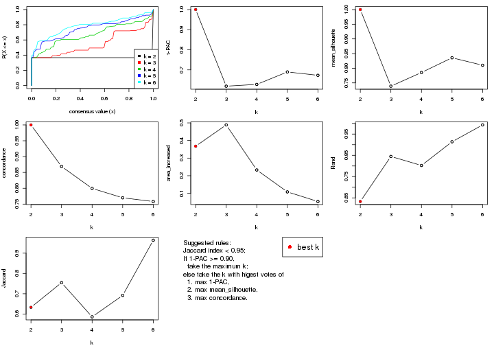
The numeric values for all these statistics can be obtained by get_stats().
get_stats(res)
#> k 1-PAC mean_silhouette concordance area_increased Rand Jaccard
#> 2 2 1.000 1.000 1.000 0.3677 0.633 0.633
#> 3 3 0.619 0.739 0.869 0.4885 0.845 0.755
#> 4 4 0.628 0.785 0.800 0.2326 0.802 0.586
#> 5 5 0.690 0.836 0.770 0.1081 0.914 0.692
#> 6 6 0.673 0.810 0.758 0.0534 0.993 0.964
suggest_best_k() suggests the best \(k\) based on these statistics. The rules are as follows:
NA.suggest_best_k(res)
#> [1] 2
Following shows the table of the partitions (You need to click the show/hide
code output link to see it). The membership matrix (columns with name p*)
is inferred by
clue::cl_consensus()
function with the SE method. Basically the value in the membership matrix
represents the probability to belong to a certain group. The finall class
label for an item is determined with the group with highest probability it
belongs to.
In get_classes() function, the entropy is calculated from the membership
matrix and the silhouette score is calculated from the consensus matrix.
cbind(get_classes(res, k = 2), get_membership(res, k = 2))
#> class entropy silhouette p1 p2
#> GSM520665 2 0 1 0 1
#> GSM520666 2 0 1 0 1
#> GSM520667 2 0 1 0 1
#> GSM520704 2 0 1 0 1
#> GSM520705 2 0 1 0 1
#> GSM520711 2 0 1 0 1
#> GSM520692 2 0 1 0 1
#> GSM520693 2 0 1 0 1
#> GSM520694 2 0 1 0 1
#> GSM520689 2 0 1 0 1
#> GSM520690 2 0 1 0 1
#> GSM520691 2 0 1 0 1
#> GSM520668 1 0 1 1 0
#> GSM520669 1 0 1 1 0
#> GSM520670 1 0 1 1 0
#> GSM520713 1 0 1 1 0
#> GSM520714 1 0 1 1 0
#> GSM520715 1 0 1 1 0
#> GSM520695 1 0 1 1 0
#> GSM520696 1 0 1 1 0
#> GSM520697 1 0 1 1 0
#> GSM520709 1 0 1 1 0
#> GSM520710 1 0 1 1 0
#> GSM520712 1 0 1 1 0
#> GSM520698 1 0 1 1 0
#> GSM520699 1 0 1 1 0
#> GSM520700 1 0 1 1 0
#> GSM520701 1 0 1 1 0
#> GSM520702 1 0 1 1 0
#> GSM520703 1 0 1 1 0
#> GSM520671 1 0 1 1 0
#> GSM520672 1 0 1 1 0
#> GSM520673 1 0 1 1 0
#> GSM520681 1 0 1 1 0
#> GSM520682 1 0 1 1 0
#> GSM520680 1 0 1 1 0
#> GSM520677 1 0 1 1 0
#> GSM520678 1 0 1 1 0
#> GSM520679 1 0 1 1 0
#> GSM520674 1 0 1 1 0
#> GSM520675 1 0 1 1 0
#> GSM520676 1 0 1 1 0
#> GSM520686 1 0 1 1 0
#> GSM520687 1 0 1 1 0
#> GSM520688 1 0 1 1 0
#> GSM520683 1 0 1 1 0
#> GSM520684 1 0 1 1 0
#> GSM520685 1 0 1 1 0
#> GSM520708 1 0 1 1 0
#> GSM520706 1 0 1 1 0
#> GSM520707 1 0 1 1 0
cbind(get_classes(res, k = 3), get_membership(res, k = 3))
#> class entropy silhouette p1 p2 p3
#> GSM520665 2 0.1289 0.963 0.000 0.968 0.032
#> GSM520666 2 0.1289 0.963 0.000 0.968 0.032
#> GSM520667 2 0.1289 0.963 0.000 0.968 0.032
#> GSM520704 2 0.3116 0.948 0.000 0.892 0.108
#> GSM520705 2 0.3116 0.948 0.000 0.892 0.108
#> GSM520711 2 0.3116 0.948 0.000 0.892 0.108
#> GSM520692 2 0.0000 0.963 0.000 1.000 0.000
#> GSM520693 2 0.0000 0.963 0.000 1.000 0.000
#> GSM520694 2 0.0000 0.963 0.000 1.000 0.000
#> GSM520689 2 0.2356 0.950 0.000 0.928 0.072
#> GSM520690 2 0.2356 0.950 0.000 0.928 0.072
#> GSM520691 2 0.2356 0.950 0.000 0.928 0.072
#> GSM520668 3 0.4121 0.848 0.168 0.000 0.832
#> GSM520669 3 0.4121 0.848 0.168 0.000 0.832
#> GSM520670 3 0.4121 0.848 0.168 0.000 0.832
#> GSM520713 1 0.5760 0.464 0.672 0.000 0.328
#> GSM520714 1 0.5760 0.464 0.672 0.000 0.328
#> GSM520715 1 0.5760 0.464 0.672 0.000 0.328
#> GSM520695 1 0.5760 0.464 0.672 0.000 0.328
#> GSM520696 1 0.5760 0.464 0.672 0.000 0.328
#> GSM520697 1 0.5760 0.464 0.672 0.000 0.328
#> GSM520709 1 0.5760 0.464 0.672 0.000 0.328
#> GSM520710 1 0.5760 0.464 0.672 0.000 0.328
#> GSM520712 1 0.5760 0.464 0.672 0.000 0.328
#> GSM520698 3 0.5905 0.764 0.352 0.000 0.648
#> GSM520699 3 0.5905 0.764 0.352 0.000 0.648
#> GSM520700 3 0.5431 0.801 0.284 0.000 0.716
#> GSM520701 1 0.5760 0.464 0.672 0.000 0.328
#> GSM520702 1 0.5760 0.464 0.672 0.000 0.328
#> GSM520703 1 0.5760 0.464 0.672 0.000 0.328
#> GSM520671 1 0.2261 0.734 0.932 0.000 0.068
#> GSM520672 1 0.2261 0.734 0.932 0.000 0.068
#> GSM520673 1 0.2261 0.734 0.932 0.000 0.068
#> GSM520681 1 0.0000 0.763 1.000 0.000 0.000
#> GSM520682 1 0.0000 0.763 1.000 0.000 0.000
#> GSM520680 1 0.2261 0.734 0.932 0.000 0.068
#> GSM520677 1 0.0592 0.757 0.988 0.000 0.012
#> GSM520678 1 0.0000 0.763 1.000 0.000 0.000
#> GSM520679 1 0.0000 0.763 1.000 0.000 0.000
#> GSM520674 1 0.0000 0.763 1.000 0.000 0.000
#> GSM520675 1 0.1411 0.751 0.964 0.000 0.036
#> GSM520676 1 0.0000 0.763 1.000 0.000 0.000
#> GSM520686 1 0.2261 0.734 0.932 0.000 0.068
#> GSM520687 1 0.2261 0.734 0.932 0.000 0.068
#> GSM520688 1 0.2261 0.734 0.932 0.000 0.068
#> GSM520683 1 0.0000 0.763 1.000 0.000 0.000
#> GSM520684 1 0.2261 0.734 0.932 0.000 0.068
#> GSM520685 1 0.1411 0.751 0.964 0.000 0.036
#> GSM520708 1 0.0000 0.763 1.000 0.000 0.000
#> GSM520706 1 0.0000 0.763 1.000 0.000 0.000
#> GSM520707 1 0.0000 0.763 1.000 0.000 0.000
cbind(get_classes(res, k = 4), get_membership(res, k = 4))
#> class entropy silhouette p1 p2 p3 p4
#> GSM520665 2 0.1256 0.946 0.000 0.964 0.028 0.008
#> GSM520666 2 0.1256 0.946 0.000 0.964 0.028 0.008
#> GSM520667 2 0.1256 0.946 0.000 0.964 0.028 0.008
#> GSM520704 2 0.4292 0.898 0.000 0.820 0.080 0.100
#> GSM520705 2 0.4292 0.898 0.000 0.820 0.080 0.100
#> GSM520711 2 0.4300 0.898 0.000 0.820 0.088 0.092
#> GSM520692 2 0.0000 0.946 0.000 1.000 0.000 0.000
#> GSM520693 2 0.0000 0.946 0.000 1.000 0.000 0.000
#> GSM520694 2 0.0000 0.946 0.000 1.000 0.000 0.000
#> GSM520689 2 0.1706 0.943 0.000 0.948 0.016 0.036
#> GSM520690 2 0.1677 0.943 0.000 0.948 0.012 0.040
#> GSM520691 2 0.1677 0.943 0.000 0.948 0.012 0.040
#> GSM520668 3 0.3611 0.782 0.060 0.000 0.860 0.080
#> GSM520669 3 0.3611 0.782 0.060 0.000 0.860 0.080
#> GSM520670 3 0.3611 0.782 0.060 0.000 0.860 0.080
#> GSM520713 4 0.3444 0.980 0.184 0.000 0.000 0.816
#> GSM520714 4 0.3444 0.980 0.184 0.000 0.000 0.816
#> GSM520715 4 0.3444 0.980 0.184 0.000 0.000 0.816
#> GSM520695 4 0.3486 0.981 0.188 0.000 0.000 0.812
#> GSM520696 4 0.3486 0.981 0.188 0.000 0.000 0.812
#> GSM520697 4 0.3486 0.981 0.188 0.000 0.000 0.812
#> GSM520709 4 0.3486 0.981 0.188 0.000 0.000 0.812
#> GSM520710 4 0.3486 0.981 0.188 0.000 0.000 0.812
#> GSM520712 4 0.3486 0.981 0.188 0.000 0.000 0.812
#> GSM520698 3 0.6474 0.687 0.076 0.000 0.536 0.388
#> GSM520699 3 0.6474 0.687 0.076 0.000 0.536 0.388
#> GSM520700 3 0.6648 0.700 0.092 0.000 0.536 0.372
#> GSM520701 4 0.3450 0.947 0.156 0.000 0.008 0.836
#> GSM520702 4 0.3450 0.947 0.156 0.000 0.008 0.836
#> GSM520703 4 0.3450 0.947 0.156 0.000 0.008 0.836
#> GSM520671 1 0.0000 0.756 1.000 0.000 0.000 0.000
#> GSM520672 1 0.0000 0.756 1.000 0.000 0.000 0.000
#> GSM520673 1 0.0000 0.756 1.000 0.000 0.000 0.000
#> GSM520681 1 0.5440 0.417 0.596 0.000 0.020 0.384
#> GSM520682 1 0.5400 0.442 0.608 0.000 0.020 0.372
#> GSM520680 1 0.0000 0.756 1.000 0.000 0.000 0.000
#> GSM520677 1 0.5550 0.304 0.552 0.000 0.020 0.428
#> GSM520678 1 0.4963 0.583 0.696 0.000 0.020 0.284
#> GSM520679 1 0.4963 0.583 0.696 0.000 0.020 0.284
#> GSM520674 1 0.4963 0.583 0.696 0.000 0.020 0.284
#> GSM520675 1 0.0188 0.756 0.996 0.000 0.000 0.004
#> GSM520676 1 0.2174 0.741 0.928 0.000 0.020 0.052
#> GSM520686 1 0.0000 0.756 1.000 0.000 0.000 0.000
#> GSM520687 1 0.0000 0.756 1.000 0.000 0.000 0.000
#> GSM520688 1 0.0000 0.756 1.000 0.000 0.000 0.000
#> GSM520683 1 0.2174 0.741 0.928 0.000 0.020 0.052
#> GSM520684 1 0.0000 0.756 1.000 0.000 0.000 0.000
#> GSM520685 1 0.0188 0.756 0.996 0.000 0.000 0.004
#> GSM520708 1 0.5842 0.244 0.520 0.000 0.032 0.448
#> GSM520706 1 0.5827 0.286 0.532 0.000 0.032 0.436
#> GSM520707 1 0.5827 0.286 0.532 0.000 0.032 0.436
cbind(get_classes(res, k = 5), get_membership(res, k = 5))
#> class entropy silhouette p1 p2 p3 p4 p5
#> GSM520665 2 0.1770 0.905 0.048 0.936 0.008 0.008 0.000
#> GSM520666 2 0.1770 0.905 0.048 0.936 0.008 0.008 0.000
#> GSM520667 2 0.1770 0.905 0.048 0.936 0.008 0.008 0.000
#> GSM520704 2 0.3828 0.854 0.220 0.764 0.008 0.008 0.000
#> GSM520705 2 0.3828 0.854 0.220 0.764 0.008 0.008 0.000
#> GSM520711 2 0.4048 0.855 0.208 0.764 0.012 0.016 0.000
#> GSM520692 2 0.0162 0.906 0.000 0.996 0.000 0.004 0.000
#> GSM520693 2 0.0162 0.906 0.000 0.996 0.000 0.004 0.000
#> GSM520694 2 0.0162 0.906 0.000 0.996 0.000 0.004 0.000
#> GSM520689 2 0.3130 0.877 0.096 0.856 0.000 0.048 0.000
#> GSM520690 2 0.3130 0.877 0.096 0.856 0.000 0.048 0.000
#> GSM520691 2 0.3130 0.877 0.096 0.856 0.000 0.048 0.000
#> GSM520668 3 0.0854 0.719 0.008 0.000 0.976 0.004 0.012
#> GSM520669 3 0.0854 0.719 0.008 0.000 0.976 0.004 0.012
#> GSM520670 3 0.0968 0.719 0.012 0.000 0.972 0.004 0.012
#> GSM520713 4 0.4302 0.874 0.048 0.000 0.000 0.744 0.208
#> GSM520714 4 0.4302 0.874 0.048 0.000 0.000 0.744 0.208
#> GSM520715 4 0.4302 0.874 0.048 0.000 0.000 0.744 0.208
#> GSM520695 4 0.3684 0.859 0.000 0.000 0.000 0.720 0.280
#> GSM520696 4 0.3684 0.859 0.000 0.000 0.000 0.720 0.280
#> GSM520697 4 0.3684 0.859 0.000 0.000 0.000 0.720 0.280
#> GSM520709 4 0.4073 0.881 0.032 0.000 0.000 0.752 0.216
#> GSM520710 4 0.4073 0.881 0.032 0.000 0.000 0.752 0.216
#> GSM520712 4 0.4073 0.881 0.032 0.000 0.000 0.752 0.216
#> GSM520698 3 0.6910 0.603 0.084 0.000 0.476 0.372 0.068
#> GSM520699 3 0.6910 0.603 0.084 0.000 0.476 0.372 0.068
#> GSM520700 3 0.6894 0.611 0.092 0.000 0.476 0.372 0.060
#> GSM520701 4 0.4355 0.737 0.076 0.000 0.000 0.760 0.164
#> GSM520702 4 0.4355 0.737 0.076 0.000 0.000 0.760 0.164
#> GSM520703 4 0.4355 0.737 0.076 0.000 0.000 0.760 0.164
#> GSM520671 1 0.4294 0.989 0.532 0.000 0.000 0.000 0.468
#> GSM520672 1 0.4294 0.989 0.532 0.000 0.000 0.000 0.468
#> GSM520673 1 0.4294 0.989 0.532 0.000 0.000 0.000 0.468
#> GSM520681 5 0.2280 0.803 0.000 0.000 0.000 0.120 0.880
#> GSM520682 5 0.2230 0.804 0.000 0.000 0.000 0.116 0.884
#> GSM520680 1 0.4294 0.989 0.532 0.000 0.000 0.000 0.468
#> GSM520677 5 0.2561 0.789 0.000 0.000 0.000 0.144 0.856
#> GSM520678 5 0.2124 0.779 0.028 0.000 0.000 0.056 0.916
#> GSM520679 5 0.2124 0.779 0.028 0.000 0.000 0.056 0.916
#> GSM520674 5 0.2124 0.779 0.028 0.000 0.000 0.056 0.916
#> GSM520675 1 0.4297 0.984 0.528 0.000 0.000 0.000 0.472
#> GSM520676 5 0.2338 0.534 0.112 0.000 0.000 0.004 0.884
#> GSM520686 1 0.4283 0.988 0.544 0.000 0.000 0.000 0.456
#> GSM520687 1 0.4283 0.988 0.544 0.000 0.000 0.000 0.456
#> GSM520688 1 0.4283 0.988 0.544 0.000 0.000 0.000 0.456
#> GSM520683 5 0.2179 0.528 0.112 0.000 0.000 0.000 0.888
#> GSM520684 1 0.4283 0.988 0.544 0.000 0.000 0.000 0.456
#> GSM520685 1 0.4291 0.986 0.536 0.000 0.000 0.000 0.464
#> GSM520708 5 0.3953 0.760 0.048 0.000 0.000 0.168 0.784
#> GSM520706 5 0.3914 0.763 0.048 0.000 0.000 0.164 0.788
#> GSM520707 5 0.3914 0.763 0.048 0.000 0.000 0.164 0.788
cbind(get_classes(res, k = 6), get_membership(res, k = 6))
#> class entropy silhouette p1 p2 p3 p4 p5 p6
#> GSM520665 2 0.2948 0.855 0.004 0.880 0.008 0.024 0.036 0.048
#> GSM520666 2 0.2948 0.855 0.004 0.880 0.008 0.024 0.036 0.048
#> GSM520667 2 0.2948 0.855 0.004 0.880 0.008 0.024 0.036 0.048
#> GSM520704 2 0.4054 0.788 0.000 0.688 0.004 0.000 0.024 0.284
#> GSM520705 2 0.4054 0.788 0.000 0.688 0.004 0.000 0.024 0.284
#> GSM520711 2 0.4417 0.789 0.000 0.688 0.008 0.012 0.024 0.268
#> GSM520692 2 0.0146 0.861 0.000 0.996 0.000 0.000 0.004 0.000
#> GSM520693 2 0.0146 0.861 0.000 0.996 0.000 0.000 0.004 0.000
#> GSM520694 2 0.0146 0.861 0.000 0.996 0.000 0.000 0.004 0.000
#> GSM520689 2 0.3908 0.816 0.008 0.808 0.000 0.052 0.028 0.104
#> GSM520690 2 0.3926 0.816 0.008 0.808 0.000 0.044 0.036 0.104
#> GSM520691 2 0.3926 0.816 0.008 0.808 0.000 0.044 0.036 0.104
#> GSM520668 3 0.0820 0.991 0.000 0.000 0.972 0.012 0.016 0.000
#> GSM520669 3 0.0820 0.991 0.000 0.000 0.972 0.012 0.016 0.000
#> GSM520670 3 0.1406 0.982 0.004 0.000 0.952 0.016 0.020 0.008
#> GSM520713 4 0.4574 0.727 0.172 0.000 0.000 0.732 0.036 0.060
#> GSM520714 4 0.4574 0.727 0.172 0.000 0.000 0.732 0.036 0.060
#> GSM520715 4 0.4574 0.727 0.172 0.000 0.000 0.732 0.036 0.060
#> GSM520695 4 0.5026 0.739 0.268 0.000 0.000 0.640 0.016 0.076
#> GSM520696 4 0.5026 0.739 0.268 0.000 0.000 0.640 0.016 0.076
#> GSM520697 4 0.5026 0.739 0.268 0.000 0.000 0.640 0.016 0.076
#> GSM520709 4 0.3201 0.768 0.208 0.000 0.000 0.780 0.012 0.000
#> GSM520710 4 0.3201 0.768 0.208 0.000 0.000 0.780 0.012 0.000
#> GSM520712 4 0.3201 0.768 0.208 0.000 0.000 0.780 0.012 0.000
#> GSM520698 6 0.6931 0.972 0.068 0.000 0.328 0.208 0.000 0.396
#> GSM520699 6 0.6931 0.972 0.068 0.000 0.328 0.208 0.000 0.396
#> GSM520700 6 0.7168 0.943 0.056 0.000 0.328 0.204 0.016 0.396
#> GSM520701 4 0.5756 0.414 0.188 0.000 0.000 0.548 0.008 0.256
#> GSM520702 4 0.5756 0.414 0.188 0.000 0.000 0.548 0.008 0.256
#> GSM520703 4 0.5756 0.414 0.188 0.000 0.000 0.548 0.008 0.256
#> GSM520671 5 0.2362 0.935 0.136 0.000 0.000 0.000 0.860 0.004
#> GSM520672 5 0.2362 0.935 0.136 0.000 0.000 0.000 0.860 0.004
#> GSM520673 5 0.2362 0.935 0.136 0.000 0.000 0.000 0.860 0.004
#> GSM520681 1 0.3358 0.825 0.824 0.000 0.000 0.052 0.116 0.008
#> GSM520682 1 0.3358 0.825 0.824 0.000 0.000 0.052 0.116 0.008
#> GSM520680 5 0.2362 0.935 0.136 0.000 0.000 0.000 0.860 0.004
#> GSM520677 1 0.3244 0.816 0.832 0.000 0.000 0.064 0.100 0.004
#> GSM520678 1 0.3062 0.821 0.816 0.000 0.000 0.024 0.160 0.000
#> GSM520679 1 0.3062 0.821 0.816 0.000 0.000 0.024 0.160 0.000
#> GSM520674 1 0.3062 0.821 0.816 0.000 0.000 0.024 0.160 0.000
#> GSM520675 5 0.2854 0.878 0.208 0.000 0.000 0.000 0.792 0.000
#> GSM520676 1 0.3265 0.705 0.748 0.000 0.000 0.004 0.248 0.000
#> GSM520686 5 0.3412 0.933 0.128 0.000 0.000 0.000 0.808 0.064
#> GSM520687 5 0.3412 0.933 0.128 0.000 0.000 0.000 0.808 0.064
#> GSM520688 5 0.3412 0.933 0.128 0.000 0.000 0.000 0.808 0.064
#> GSM520683 1 0.3290 0.697 0.744 0.000 0.000 0.000 0.252 0.004
#> GSM520684 5 0.3468 0.932 0.128 0.000 0.000 0.000 0.804 0.068
#> GSM520685 5 0.4305 0.833 0.232 0.000 0.000 0.000 0.700 0.068
#> GSM520708 1 0.3401 0.678 0.832 0.000 0.012 0.048 0.004 0.104
#> GSM520706 1 0.3545 0.687 0.828 0.000 0.012 0.044 0.012 0.104
#> GSM520707 1 0.3545 0.687 0.828 0.000 0.012 0.044 0.012 0.104
Heatmaps for the consensus matrix. It visualizes the probability of two samples to be in a same group.
consensus_heatmap(res, k = 2)

consensus_heatmap(res, k = 3)
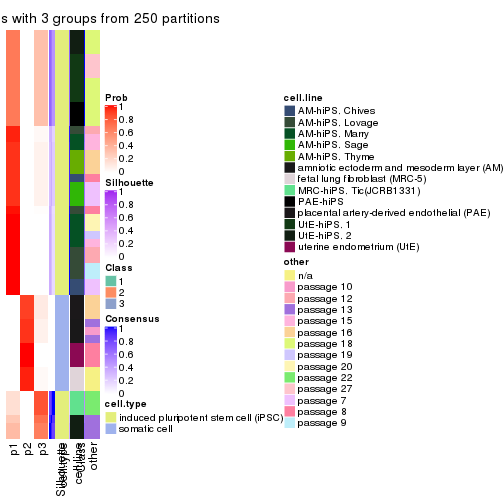
consensus_heatmap(res, k = 4)
consensus_heatmap(res, k = 5)
consensus_heatmap(res, k = 6)
Heatmaps for the membership of samples in all partitions to see how consistent they are:
membership_heatmap(res, k = 2)

membership_heatmap(res, k = 3)
membership_heatmap(res, k = 4)
membership_heatmap(res, k = 5)
membership_heatmap(res, k = 6)
As soon as we have had the classes for columns, we can look for signatures which are significantly different between classes which can be candidate marks for certain classes. Following are the heatmaps for signatures.
Signature heatmaps where rows are scaled:
get_signatures(res, k = 2)

get_signatures(res, k = 3)
get_signatures(res, k = 4)
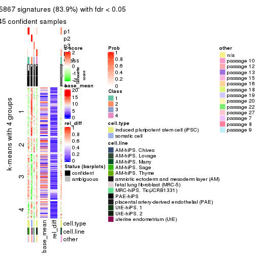
get_signatures(res, k = 5)
get_signatures(res, k = 6)
#> Error in mat[ceiling(1:nr/h_ratio), ceiling(1:nc/w_ratio), drop = FALSE]: subscript out of bounds
Signature heatmaps where rows are not scaled:
get_signatures(res, k = 2, scale_rows = FALSE)

get_signatures(res, k = 3, scale_rows = FALSE)
get_signatures(res, k = 4, scale_rows = FALSE)
get_signatures(res, k = 5, scale_rows = FALSE)
get_signatures(res, k = 6, scale_rows = FALSE)
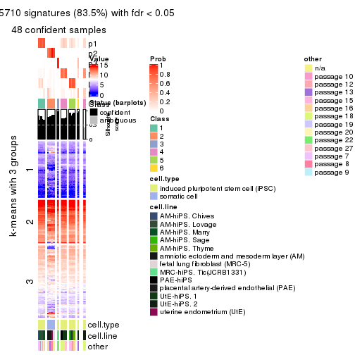
Compare the overlap of signatures from different k:
compare_signatures(res)
get_signature() returns a data frame invisibly. TO get the list of signatures, the function
call should be assigned to a variable explicitly. In following code, if plot argument is set
to FALSE, no heatmap is plotted while only the differential analysis is performed.
# code only for demonstration
tb = get_signature(res, k = ..., plot = FALSE)
An example of the output of tb is:
#> which_row fdr mean_1 mean_2 scaled_mean_1 scaled_mean_2 km
#> 1 38 0.042760348 8.373488 9.131774 -0.5533452 0.5164555 1
#> 2 40 0.018707592 7.106213 8.469186 -0.6173731 0.5762149 1
#> 3 55 0.019134737 10.221463 11.207825 -0.6159697 0.5749050 1
#> 4 59 0.006059896 5.921854 7.869574 -0.6899429 0.6439467 1
#> 5 60 0.018055526 8.928898 10.211722 -0.6204761 0.5791110 1
#> 6 98 0.009384629 15.714769 14.887706 0.6635654 -0.6193277 2
...
The columns in tb are:
which_row: row indices corresponding to the input matrix.fdr: FDR for the differential test. mean_x: The mean value in group x.scaled_mean_x: The mean value in group x after rows are scaled.km: Row groups if k-means clustering is applied to rows.UMAP plot which shows how samples are separated.
dimension_reduction(res, k = 2, method = "UMAP")

dimension_reduction(res, k = 3, method = "UMAP")
dimension_reduction(res, k = 4, method = "UMAP")
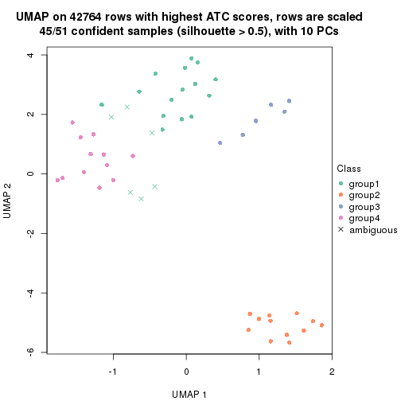
dimension_reduction(res, k = 5, method = "UMAP")
dimension_reduction(res, k = 6, method = "UMAP")

Following heatmap shows how subgroups are split when increasing k:
collect_classes(res)
Test correlation between subgroups and known annotations. If the known annotation is numeric, one-way ANOVA test is applied, and if the known annotation is discrete, chi-squared contingency table test is applied.
test_to_known_factors(res)
#> n cell.type(p) cell.line(p) other(p) k
#> ATC:kmeans 51 1.46e-11 9.31e-07 5.89e-03 2
#> ATC:kmeans 39 3.40e-09 8.56e-09 2.66e-04 3
#> ATC:kmeans 45 9.25e-10 1.13e-10 1.23e-09 4
#> ATC:kmeans 51 2.23e-10 1.51e-13 1.34e-09 5
#> ATC:kmeans 48 3.55e-09 3.68e-19 5.53e-11 6
If matrix rows can be associated to genes, consider to use GO_Enrichment(res,
...) to perform function enrichment for the signature genes.
The object with results only for a single top-value method and a single partition method can be extracted as:
res = res_list["ATC", "skmeans"]
# you can also extract it by
# res = res_list["ATC:skmeans"]
A summary of res and all the functions that can be applied to it:
res
#> A 'ConsensusPartition' object with k = 2, 3, 4, 5, 6.
#> On a matrix with 42764 rows and 51 columns.
#> Top rows (1000, 2000, 3000, 4000, 5000) are extracted by 'ATC' method.
#> Subgroups are detected by 'skmeans' method.
#> Performed in total 1250 partitions by row resampling.
#> Best k for subgroups seems to be 6.
#>
#> Following methods can be applied to this 'ConsensusPartition' object:
#> [1] "cola_report" "collect_classes" "collect_plots"
#> [4] "collect_stats" "colnames" "compare_signatures"
#> [7] "consensus_heatmap" "dimension_reduction" "functional_enrichment"
#> [10] "get_anno_col" "get_anno" "get_classes"
#> [13] "get_consensus" "get_matrix" "get_membership"
#> [16] "get_param" "get_signatures" "get_stats"
#> [19] "is_best_k" "is_stable_k" "membership_heatmap"
#> [22] "ncol" "nrow" "plot_ecdf"
#> [25] "rownames" "select_partition_number" "show"
#> [28] "suggest_best_k" "test_to_known_factors"
collect_plots() function collects all the plots made from res for all k (number of partitions)
into one single page to provide an easy and fast comparison between different k.
collect_plots(res)
The plots are:
k and the heatmap of
predicted classes for each k.k.k.k.All the plots in panels can be made by individual functions and they are plotted later in this section.
select_partition_number() produces several plots showing different
statistics for choosing “optimized” k. There are following statistics:
k;k, the area increased is defined as \(A_k - A_{k-1}\).The detailed explanations of these statistics can be found in the cola vignette.
Generally speaking, lower PAC score, higher mean silhouette score or higher
concordance corresponds to better partition. Rand index and Jaccard index
measure how similar the current partition is compared to partition with k-1.
If they are too similar, we won't accept k is better than k-1.
select_partition_number(res)
The numeric values for all these statistics can be obtained by get_stats().
get_stats(res)
#> k 1-PAC mean_silhouette concordance area_increased Rand Jaccard
#> 2 2 1.000 1.000 1.000 0.368 0.633 0.633
#> 3 3 1.000 1.000 1.000 0.230 0.915 0.866
#> 4 4 1.000 0.993 0.995 0.541 0.753 0.549
#> 5 5 0.848 0.950 0.964 0.049 0.972 0.906
#> 6 6 0.908 0.945 0.941 0.100 0.914 0.684
suggest_best_k() suggests the best \(k\) based on these statistics. The rules are as follows:
NA.suggest_best_k(res)
#> [1] 6
#> attr(,"optional")
#> [1] 2 3 4
There is also optional best \(k\) = 2 3 4 that is worth to check.
Following shows the table of the partitions (You need to click the show/hide
code output link to see it). The membership matrix (columns with name p*)
is inferred by
clue::cl_consensus()
function with the SE method. Basically the value in the membership matrix
represents the probability to belong to a certain group. The finall class
label for an item is determined with the group with highest probability it
belongs to.
In get_classes() function, the entropy is calculated from the membership
matrix and the silhouette score is calculated from the consensus matrix.
cbind(get_classes(res, k = 2), get_membership(res, k = 2))
#> class entropy silhouette p1 p2
#> GSM520665 2 0 1 0 1
#> GSM520666 2 0 1 0 1
#> GSM520667 2 0 1 0 1
#> GSM520704 2 0 1 0 1
#> GSM520705 2 0 1 0 1
#> GSM520711 2 0 1 0 1
#> GSM520692 2 0 1 0 1
#> GSM520693 2 0 1 0 1
#> GSM520694 2 0 1 0 1
#> GSM520689 2 0 1 0 1
#> GSM520690 2 0 1 0 1
#> GSM520691 2 0 1 0 1
#> GSM520668 1 0 1 1 0
#> GSM520669 1 0 1 1 0
#> GSM520670 1 0 1 1 0
#> GSM520713 1 0 1 1 0
#> GSM520714 1 0 1 1 0
#> GSM520715 1 0 1 1 0
#> GSM520695 1 0 1 1 0
#> GSM520696 1 0 1 1 0
#> GSM520697 1 0 1 1 0
#> GSM520709 1 0 1 1 0
#> GSM520710 1 0 1 1 0
#> GSM520712 1 0 1 1 0
#> GSM520698 1 0 1 1 0
#> GSM520699 1 0 1 1 0
#> GSM520700 1 0 1 1 0
#> GSM520701 1 0 1 1 0
#> GSM520702 1 0 1 1 0
#> GSM520703 1 0 1 1 0
#> GSM520671 1 0 1 1 0
#> GSM520672 1 0 1 1 0
#> GSM520673 1 0 1 1 0
#> GSM520681 1 0 1 1 0
#> GSM520682 1 0 1 1 0
#> GSM520680 1 0 1 1 0
#> GSM520677 1 0 1 1 0
#> GSM520678 1 0 1 1 0
#> GSM520679 1 0 1 1 0
#> GSM520674 1 0 1 1 0
#> GSM520675 1 0 1 1 0
#> GSM520676 1 0 1 1 0
#> GSM520686 1 0 1 1 0
#> GSM520687 1 0 1 1 0
#> GSM520688 1 0 1 1 0
#> GSM520683 1 0 1 1 0
#> GSM520684 1 0 1 1 0
#> GSM520685 1 0 1 1 0
#> GSM520708 1 0 1 1 0
#> GSM520706 1 0 1 1 0
#> GSM520707 1 0 1 1 0
cbind(get_classes(res, k = 3), get_membership(res, k = 3))
#> class entropy silhouette p1 p2 p3
#> GSM520665 2 0 1 0 1 0
#> GSM520666 2 0 1 0 1 0
#> GSM520667 2 0 1 0 1 0
#> GSM520704 2 0 1 0 1 0
#> GSM520705 2 0 1 0 1 0
#> GSM520711 2 0 1 0 1 0
#> GSM520692 2 0 1 0 1 0
#> GSM520693 2 0 1 0 1 0
#> GSM520694 2 0 1 0 1 0
#> GSM520689 2 0 1 0 1 0
#> GSM520690 2 0 1 0 1 0
#> GSM520691 2 0 1 0 1 0
#> GSM520668 3 0 1 0 0 1
#> GSM520669 3 0 1 0 0 1
#> GSM520670 3 0 1 0 0 1
#> GSM520713 1 0 1 1 0 0
#> GSM520714 1 0 1 1 0 0
#> GSM520715 1 0 1 1 0 0
#> GSM520695 1 0 1 1 0 0
#> GSM520696 1 0 1 1 0 0
#> GSM520697 1 0 1 1 0 0
#> GSM520709 1 0 1 1 0 0
#> GSM520710 1 0 1 1 0 0
#> GSM520712 1 0 1 1 0 0
#> GSM520698 1 0 1 1 0 0
#> GSM520699 1 0 1 1 0 0
#> GSM520700 1 0 1 1 0 0
#> GSM520701 1 0 1 1 0 0
#> GSM520702 1 0 1 1 0 0
#> GSM520703 1 0 1 1 0 0
#> GSM520671 1 0 1 1 0 0
#> GSM520672 1 0 1 1 0 0
#> GSM520673 1 0 1 1 0 0
#> GSM520681 1 0 1 1 0 0
#> GSM520682 1 0 1 1 0 0
#> GSM520680 1 0 1 1 0 0
#> GSM520677 1 0 1 1 0 0
#> GSM520678 1 0 1 1 0 0
#> GSM520679 1 0 1 1 0 0
#> GSM520674 1 0 1 1 0 0
#> GSM520675 1 0 1 1 0 0
#> GSM520676 1 0 1 1 0 0
#> GSM520686 1 0 1 1 0 0
#> GSM520687 1 0 1 1 0 0
#> GSM520688 1 0 1 1 0 0
#> GSM520683 1 0 1 1 0 0
#> GSM520684 1 0 1 1 0 0
#> GSM520685 1 0 1 1 0 0
#> GSM520708 1 0 1 1 0 0
#> GSM520706 1 0 1 1 0 0
#> GSM520707 1 0 1 1 0 0
cbind(get_classes(res, k = 4), get_membership(res, k = 4))
#> class entropy silhouette p1 p2 p3 p4
#> GSM520665 2 0.0000 1.000 0.000 1 0 0.000
#> GSM520666 2 0.0000 1.000 0.000 1 0 0.000
#> GSM520667 2 0.0000 1.000 0.000 1 0 0.000
#> GSM520704 2 0.0000 1.000 0.000 1 0 0.000
#> GSM520705 2 0.0000 1.000 0.000 1 0 0.000
#> GSM520711 2 0.0000 1.000 0.000 1 0 0.000
#> GSM520692 2 0.0000 1.000 0.000 1 0 0.000
#> GSM520693 2 0.0000 1.000 0.000 1 0 0.000
#> GSM520694 2 0.0000 1.000 0.000 1 0 0.000
#> GSM520689 2 0.0000 1.000 0.000 1 0 0.000
#> GSM520690 2 0.0000 1.000 0.000 1 0 0.000
#> GSM520691 2 0.0000 1.000 0.000 1 0 0.000
#> GSM520668 3 0.0000 1.000 0.000 0 1 0.000
#> GSM520669 3 0.0000 1.000 0.000 0 1 0.000
#> GSM520670 3 0.0000 1.000 0.000 0 1 0.000
#> GSM520713 4 0.0707 0.987 0.020 0 0 0.980
#> GSM520714 4 0.0707 0.987 0.020 0 0 0.980
#> GSM520715 4 0.0707 0.987 0.020 0 0 0.980
#> GSM520695 4 0.0707 0.987 0.020 0 0 0.980
#> GSM520696 4 0.0707 0.987 0.020 0 0 0.980
#> GSM520697 4 0.0707 0.987 0.020 0 0 0.980
#> GSM520709 4 0.0707 0.987 0.020 0 0 0.980
#> GSM520710 4 0.0707 0.987 0.020 0 0 0.980
#> GSM520712 4 0.0707 0.987 0.020 0 0 0.980
#> GSM520698 4 0.0000 0.979 0.000 0 0 1.000
#> GSM520699 4 0.0000 0.979 0.000 0 0 1.000
#> GSM520700 4 0.0817 0.966 0.024 0 0 0.976
#> GSM520701 4 0.0000 0.979 0.000 0 0 1.000
#> GSM520702 4 0.0000 0.979 0.000 0 0 1.000
#> GSM520703 4 0.0000 0.979 0.000 0 0 1.000
#> GSM520671 1 0.0000 0.996 1.000 0 0 0.000
#> GSM520672 1 0.0000 0.996 1.000 0 0 0.000
#> GSM520673 1 0.0000 0.996 1.000 0 0 0.000
#> GSM520681 1 0.0336 0.994 0.992 0 0 0.008
#> GSM520682 1 0.0336 0.994 0.992 0 0 0.008
#> GSM520680 1 0.0000 0.996 1.000 0 0 0.000
#> GSM520677 1 0.0336 0.994 0.992 0 0 0.008
#> GSM520678 1 0.0336 0.994 0.992 0 0 0.008
#> GSM520679 1 0.0336 0.994 0.992 0 0 0.008
#> GSM520674 1 0.0336 0.994 0.992 0 0 0.008
#> GSM520675 1 0.0000 0.996 1.000 0 0 0.000
#> GSM520676 1 0.0000 0.996 1.000 0 0 0.000
#> GSM520686 1 0.0000 0.996 1.000 0 0 0.000
#> GSM520687 1 0.0000 0.996 1.000 0 0 0.000
#> GSM520688 1 0.0000 0.996 1.000 0 0 0.000
#> GSM520683 1 0.0000 0.996 1.000 0 0 0.000
#> GSM520684 1 0.0000 0.996 1.000 0 0 0.000
#> GSM520685 1 0.0000 0.996 1.000 0 0 0.000
#> GSM520708 1 0.0336 0.994 0.992 0 0 0.008
#> GSM520706 1 0.0336 0.994 0.992 0 0 0.008
#> GSM520707 1 0.0336 0.994 0.992 0 0 0.008
cbind(get_classes(res, k = 5), get_membership(res, k = 5))
#> class entropy silhouette p1 p2 p3 p4 p5
#> GSM520665 2 0.000 1.000 0.000 1 0 0.000 0.000
#> GSM520666 2 0.000 1.000 0.000 1 0 0.000 0.000
#> GSM520667 2 0.000 1.000 0.000 1 0 0.000 0.000
#> GSM520704 2 0.000 1.000 0.000 1 0 0.000 0.000
#> GSM520705 2 0.000 1.000 0.000 1 0 0.000 0.000
#> GSM520711 2 0.000 1.000 0.000 1 0 0.000 0.000
#> GSM520692 2 0.000 1.000 0.000 1 0 0.000 0.000
#> GSM520693 2 0.000 1.000 0.000 1 0 0.000 0.000
#> GSM520694 2 0.000 1.000 0.000 1 0 0.000 0.000
#> GSM520689 2 0.000 1.000 0.000 1 0 0.000 0.000
#> GSM520690 2 0.000 1.000 0.000 1 0 0.000 0.000
#> GSM520691 2 0.000 1.000 0.000 1 0 0.000 0.000
#> GSM520668 3 0.000 1.000 0.000 0 1 0.000 0.000
#> GSM520669 3 0.000 1.000 0.000 0 1 0.000 0.000
#> GSM520670 3 0.000 1.000 0.000 0 1 0.000 0.000
#> GSM520713 4 0.000 0.986 0.000 0 0 1.000 0.000
#> GSM520714 4 0.000 0.986 0.000 0 0 1.000 0.000
#> GSM520715 4 0.000 0.986 0.000 0 0 1.000 0.000
#> GSM520695 4 0.000 0.986 0.000 0 0 1.000 0.000
#> GSM520696 4 0.000 0.986 0.000 0 0 1.000 0.000
#> GSM520697 4 0.000 0.986 0.000 0 0 1.000 0.000
#> GSM520709 4 0.000 0.986 0.000 0 0 1.000 0.000
#> GSM520710 4 0.000 0.986 0.000 0 0 1.000 0.000
#> GSM520712 4 0.000 0.986 0.000 0 0 1.000 0.000
#> GSM520698 5 0.120 0.951 0.000 0 0 0.048 0.952
#> GSM520699 5 0.120 0.951 0.000 0 0 0.048 0.952
#> GSM520700 5 0.000 0.901 0.000 0 0 0.000 1.000
#> GSM520701 4 0.120 0.957 0.000 0 0 0.952 0.048
#> GSM520702 4 0.120 0.957 0.000 0 0 0.952 0.048
#> GSM520703 4 0.120 0.957 0.000 0 0 0.952 0.048
#> GSM520671 1 0.120 0.910 0.952 0 0 0.000 0.048
#> GSM520672 1 0.120 0.910 0.952 0 0 0.000 0.048
#> GSM520673 1 0.120 0.910 0.952 0 0 0.000 0.048
#> GSM520681 1 0.238 0.885 0.872 0 0 0.128 0.000
#> GSM520682 1 0.223 0.892 0.884 0 0 0.116 0.000
#> GSM520680 1 0.120 0.910 0.952 0 0 0.000 0.048
#> GSM520677 1 0.242 0.881 0.868 0 0 0.132 0.000
#> GSM520678 1 0.218 0.894 0.888 0 0 0.112 0.000
#> GSM520679 1 0.218 0.894 0.888 0 0 0.112 0.000
#> GSM520674 1 0.218 0.894 0.888 0 0 0.112 0.000
#> GSM520675 1 0.120 0.910 0.952 0 0 0.000 0.048
#> GSM520676 1 0.051 0.908 0.984 0 0 0.016 0.000
#> GSM520686 1 0.120 0.910 0.952 0 0 0.000 0.048
#> GSM520687 1 0.120 0.910 0.952 0 0 0.000 0.048
#> GSM520688 1 0.120 0.910 0.952 0 0 0.000 0.048
#> GSM520683 1 0.051 0.908 0.984 0 0 0.016 0.000
#> GSM520684 1 0.120 0.910 0.952 0 0 0.000 0.048
#> GSM520685 1 0.120 0.910 0.952 0 0 0.000 0.048
#> GSM520708 1 0.238 0.885 0.872 0 0 0.128 0.000
#> GSM520706 1 0.238 0.885 0.872 0 0 0.128 0.000
#> GSM520707 1 0.233 0.887 0.876 0 0 0.124 0.000
cbind(get_classes(res, k = 6), get_membership(res, k = 6))
#> class entropy silhouette p1 p2 p3 p4 p5 p6
#> GSM520665 2 0.0000 0.999 0.000 1.000 0 0.000 0.000 0.000
#> GSM520666 2 0.0000 0.999 0.000 1.000 0 0.000 0.000 0.000
#> GSM520667 2 0.0000 0.999 0.000 1.000 0 0.000 0.000 0.000
#> GSM520704 2 0.0146 0.997 0.004 0.996 0 0.000 0.000 0.000
#> GSM520705 2 0.0146 0.997 0.004 0.996 0 0.000 0.000 0.000
#> GSM520711 2 0.0146 0.997 0.004 0.996 0 0.000 0.000 0.000
#> GSM520692 2 0.0000 0.999 0.000 1.000 0 0.000 0.000 0.000
#> GSM520693 2 0.0000 0.999 0.000 1.000 0 0.000 0.000 0.000
#> GSM520694 2 0.0000 0.999 0.000 1.000 0 0.000 0.000 0.000
#> GSM520689 2 0.0000 0.999 0.000 1.000 0 0.000 0.000 0.000
#> GSM520690 2 0.0000 0.999 0.000 1.000 0 0.000 0.000 0.000
#> GSM520691 2 0.0000 0.999 0.000 1.000 0 0.000 0.000 0.000
#> GSM520668 3 0.0000 1.000 0.000 0.000 1 0.000 0.000 0.000
#> GSM520669 3 0.0000 1.000 0.000 0.000 1 0.000 0.000 0.000
#> GSM520670 3 0.0000 1.000 0.000 0.000 1 0.000 0.000 0.000
#> GSM520713 4 0.0363 0.923 0.012 0.000 0 0.988 0.000 0.000
#> GSM520714 4 0.0363 0.923 0.012 0.000 0 0.988 0.000 0.000
#> GSM520715 4 0.0363 0.923 0.012 0.000 0 0.988 0.000 0.000
#> GSM520695 4 0.0632 0.921 0.024 0.000 0 0.976 0.000 0.000
#> GSM520696 4 0.0632 0.921 0.024 0.000 0 0.976 0.000 0.000
#> GSM520697 4 0.0632 0.921 0.024 0.000 0 0.976 0.000 0.000
#> GSM520709 4 0.0146 0.924 0.004 0.000 0 0.996 0.000 0.000
#> GSM520710 4 0.0146 0.924 0.004 0.000 0 0.996 0.000 0.000
#> GSM520712 4 0.0146 0.924 0.004 0.000 0 0.996 0.000 0.000
#> GSM520698 5 0.0000 1.000 0.000 0.000 0 0.000 1.000 0.000
#> GSM520699 5 0.0000 1.000 0.000 0.000 0 0.000 1.000 0.000
#> GSM520700 5 0.0000 1.000 0.000 0.000 0 0.000 1.000 0.000
#> GSM520701 4 0.4012 0.773 0.164 0.000 0 0.752 0.084 0.000
#> GSM520702 4 0.4012 0.773 0.164 0.000 0 0.752 0.084 0.000
#> GSM520703 4 0.4012 0.773 0.164 0.000 0 0.752 0.084 0.000
#> GSM520671 6 0.0000 0.998 0.000 0.000 0 0.000 0.000 1.000
#> GSM520672 6 0.0000 0.998 0.000 0.000 0 0.000 0.000 1.000
#> GSM520673 6 0.0000 0.998 0.000 0.000 0 0.000 0.000 1.000
#> GSM520681 1 0.3541 0.913 0.748 0.000 0 0.020 0.000 0.232
#> GSM520682 1 0.3541 0.913 0.748 0.000 0 0.020 0.000 0.232
#> GSM520680 6 0.0000 0.998 0.000 0.000 0 0.000 0.000 1.000
#> GSM520677 1 0.3514 0.913 0.752 0.000 0 0.020 0.000 0.228
#> GSM520678 1 0.3368 0.914 0.756 0.000 0 0.012 0.000 0.232
#> GSM520679 1 0.3368 0.914 0.756 0.000 0 0.012 0.000 0.232
#> GSM520674 1 0.3368 0.914 0.756 0.000 0 0.012 0.000 0.232
#> GSM520675 6 0.0260 0.990 0.008 0.000 0 0.000 0.000 0.992
#> GSM520676 1 0.3373 0.902 0.744 0.000 0 0.008 0.000 0.248
#> GSM520686 6 0.0000 0.998 0.000 0.000 0 0.000 0.000 1.000
#> GSM520687 6 0.0000 0.998 0.000 0.000 0 0.000 0.000 1.000
#> GSM520688 6 0.0000 0.998 0.000 0.000 0 0.000 0.000 1.000
#> GSM520683 1 0.3314 0.895 0.740 0.000 0 0.004 0.000 0.256
#> GSM520684 6 0.0000 0.998 0.000 0.000 0 0.000 0.000 1.000
#> GSM520685 6 0.0146 0.995 0.004 0.000 0 0.000 0.000 0.996
#> GSM520708 1 0.1075 0.785 0.952 0.000 0 0.000 0.000 0.048
#> GSM520706 1 0.1075 0.785 0.952 0.000 0 0.000 0.000 0.048
#> GSM520707 1 0.1075 0.785 0.952 0.000 0 0.000 0.000 0.048
Heatmaps for the consensus matrix. It visualizes the probability of two samples to be in a same group.
consensus_heatmap(res, k = 2)
consensus_heatmap(res, k = 3)
consensus_heatmap(res, k = 4)
consensus_heatmap(res, k = 5)
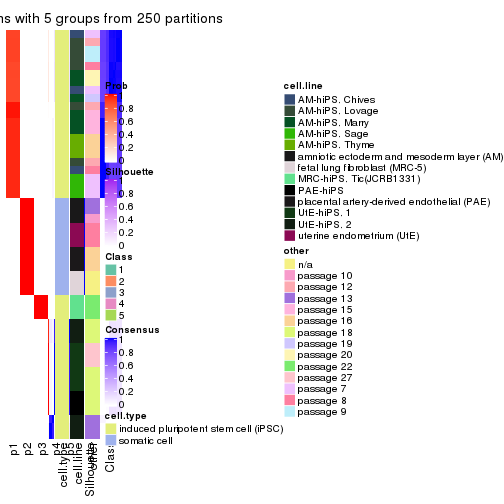
consensus_heatmap(res, k = 6)
Heatmaps for the membership of samples in all partitions to see how consistent they are:
membership_heatmap(res, k = 2)
membership_heatmap(res, k = 3)
membership_heatmap(res, k = 4)
membership_heatmap(res, k = 5)
membership_heatmap(res, k = 6)
As soon as we have had the classes for columns, we can look for signatures which are significantly different between classes which can be candidate marks for certain classes. Following are the heatmaps for signatures.
Signature heatmaps where rows are scaled:
get_signatures(res, k = 2)

get_signatures(res, k = 3)
get_signatures(res, k = 4)
get_signatures(res, k = 5)
get_signatures(res, k = 6)
Signature heatmaps where rows are not scaled:
get_signatures(res, k = 2, scale_rows = FALSE)

get_signatures(res, k = 3, scale_rows = FALSE)
get_signatures(res, k = 4, scale_rows = FALSE)
get_signatures(res, k = 5, scale_rows = FALSE)
get_signatures(res, k = 6, scale_rows = FALSE)
Compare the overlap of signatures from different k:
compare_signatures(res)
get_signature() returns a data frame invisibly. TO get the list of signatures, the function
call should be assigned to a variable explicitly. In following code, if plot argument is set
to FALSE, no heatmap is plotted while only the differential analysis is performed.
# code only for demonstration
tb = get_signature(res, k = ..., plot = FALSE)
An example of the output of tb is:
#> which_row fdr mean_1 mean_2 scaled_mean_1 scaled_mean_2 km
#> 1 38 0.042760348 8.373488 9.131774 -0.5533452 0.5164555 1
#> 2 40 0.018707592 7.106213 8.469186 -0.6173731 0.5762149 1
#> 3 55 0.019134737 10.221463 11.207825 -0.6159697 0.5749050 1
#> 4 59 0.006059896 5.921854 7.869574 -0.6899429 0.6439467 1
#> 5 60 0.018055526 8.928898 10.211722 -0.6204761 0.5791110 1
#> 6 98 0.009384629 15.714769 14.887706 0.6635654 -0.6193277 2
...
The columns in tb are:
which_row: row indices corresponding to the input matrix.fdr: FDR for the differential test. mean_x: The mean value in group x.scaled_mean_x: The mean value in group x after rows are scaled.km: Row groups if k-means clustering is applied to rows.UMAP plot which shows how samples are separated.
dimension_reduction(res, k = 2, method = "UMAP")
dimension_reduction(res, k = 3, method = "UMAP")
dimension_reduction(res, k = 4, method = "UMAP")
dimension_reduction(res, k = 5, method = "UMAP")

dimension_reduction(res, k = 6, method = "UMAP")
Following heatmap shows how subgroups are split when increasing k:
collect_classes(res)
Test correlation between subgroups and known annotations. If the known annotation is numeric, one-way ANOVA test is applied, and if the known annotation is discrete, chi-squared contingency table test is applied.
test_to_known_factors(res)
#> n cell.type(p) cell.line(p) other(p) k
#> ATC:skmeans 51 1.46e-11 9.31e-07 5.89e-03 2
#> ATC:skmeans 51 8.42e-12 1.37e-11 2.17e-07 3
#> ATC:skmeans 51 4.89e-11 2.26e-16 4.62e-11 4
#> ATC:skmeans 51 2.23e-10 6.99e-16 5.39e-13 5
#> ATC:skmeans 51 8.65e-10 2.88e-16 1.93e-12 6
If matrix rows can be associated to genes, consider to use GO_Enrichment(res,
...) to perform function enrichment for the signature genes.
The object with results only for a single top-value method and a single partition method can be extracted as:
res = res_list["ATC", "pam"]
# you can also extract it by
# res = res_list["ATC:pam"]
A summary of res and all the functions that can be applied to it:
res
#> A 'ConsensusPartition' object with k = 2, 3, 4, 5, 6.
#> On a matrix with 42764 rows and 51 columns.
#> Top rows (1000, 2000, 3000, 4000, 5000) are extracted by 'ATC' method.
#> Subgroups are detected by 'pam' method.
#> Performed in total 1250 partitions by row resampling.
#> Best k for subgroups seems to be 3.
#>
#> Following methods can be applied to this 'ConsensusPartition' object:
#> [1] "cola_report" "collect_classes" "collect_plots"
#> [4] "collect_stats" "colnames" "compare_signatures"
#> [7] "consensus_heatmap" "dimension_reduction" "functional_enrichment"
#> [10] "get_anno_col" "get_anno" "get_classes"
#> [13] "get_consensus" "get_matrix" "get_membership"
#> [16] "get_param" "get_signatures" "get_stats"
#> [19] "is_best_k" "is_stable_k" "membership_heatmap"
#> [22] "ncol" "nrow" "plot_ecdf"
#> [25] "rownames" "select_partition_number" "show"
#> [28] "suggest_best_k" "test_to_known_factors"
collect_plots() function collects all the plots made from res for all k (number of partitions)
into one single page to provide an easy and fast comparison between different k.
collect_plots(res)
The plots are:
k and the heatmap of
predicted classes for each k.k.k.k.All the plots in panels can be made by individual functions and they are plotted later in this section.
select_partition_number() produces several plots showing different
statistics for choosing “optimized” k. There are following statistics:
k;k, the area increased is defined as \(A_k - A_{k-1}\).The detailed explanations of these statistics can be found in the cola vignette.
Generally speaking, lower PAC score, higher mean silhouette score or higher
concordance corresponds to better partition. Rand index and Jaccard index
measure how similar the current partition is compared to partition with k-1.
If they are too similar, we won't accept k is better than k-1.
select_partition_number(res)
The numeric values for all these statistics can be obtained by get_stats().
get_stats(res)
#> k 1-PAC mean_silhouette concordance area_increased Rand Jaccard
#> 2 2 1.000 1.000 1.000 0.3677 0.633 0.633
#> 3 3 1.000 0.990 0.994 0.2403 0.915 0.866
#> 4 4 1.000 0.991 0.996 0.0494 0.979 0.961
#> 5 5 1.000 0.991 0.996 0.0295 0.986 0.973
#> 6 6 0.693 0.916 0.928 0.4452 0.753 0.518
suggest_best_k() suggests the best \(k\) based on these statistics. The rules are as follows:
NA.suggest_best_k(res)
#> [1] 3
#> attr(,"optional")
#> [1] 2
There is also optional best \(k\) = 2 that is worth to check.
Following shows the table of the partitions (You need to click the show/hide
code output link to see it). The membership matrix (columns with name p*)
is inferred by
clue::cl_consensus()
function with the SE method. Basically the value in the membership matrix
represents the probability to belong to a certain group. The finall class
label for an item is determined with the group with highest probability it
belongs to.
In get_classes() function, the entropy is calculated from the membership
matrix and the silhouette score is calculated from the consensus matrix.
cbind(get_classes(res, k = 2), get_membership(res, k = 2))
#> class entropy silhouette p1 p2
#> GSM520665 2 0 1 0 1
#> GSM520666 2 0 1 0 1
#> GSM520667 2 0 1 0 1
#> GSM520704 2 0 1 0 1
#> GSM520705 2 0 1 0 1
#> GSM520711 2 0 1 0 1
#> GSM520692 2 0 1 0 1
#> GSM520693 2 0 1 0 1
#> GSM520694 2 0 1 0 1
#> GSM520689 2 0 1 0 1
#> GSM520690 2 0 1 0 1
#> GSM520691 2 0 1 0 1
#> GSM520668 1 0 1 1 0
#> GSM520669 1 0 1 1 0
#> GSM520670 1 0 1 1 0
#> GSM520713 1 0 1 1 0
#> GSM520714 1 0 1 1 0
#> GSM520715 1 0 1 1 0
#> GSM520695 1 0 1 1 0
#> GSM520696 1 0 1 1 0
#> GSM520697 1 0 1 1 0
#> GSM520709 1 0 1 1 0
#> GSM520710 1 0 1 1 0
#> GSM520712 1 0 1 1 0
#> GSM520698 1 0 1 1 0
#> GSM520699 1 0 1 1 0
#> GSM520700 1 0 1 1 0
#> GSM520701 1 0 1 1 0
#> GSM520702 1 0 1 1 0
#> GSM520703 1 0 1 1 0
#> GSM520671 1 0 1 1 0
#> GSM520672 1 0 1 1 0
#> GSM520673 1 0 1 1 0
#> GSM520681 1 0 1 1 0
#> GSM520682 1 0 1 1 0
#> GSM520680 1 0 1 1 0
#> GSM520677 1 0 1 1 0
#> GSM520678 1 0 1 1 0
#> GSM520679 1 0 1 1 0
#> GSM520674 1 0 1 1 0
#> GSM520675 1 0 1 1 0
#> GSM520676 1 0 1 1 0
#> GSM520686 1 0 1 1 0
#> GSM520687 1 0 1 1 0
#> GSM520688 1 0 1 1 0
#> GSM520683 1 0 1 1 0
#> GSM520684 1 0 1 1 0
#> GSM520685 1 0 1 1 0
#> GSM520708 1 0 1 1 0
#> GSM520706 1 0 1 1 0
#> GSM520707 1 0 1 1 0
cbind(get_classes(res, k = 3), get_membership(res, k = 3))
#> class entropy silhouette p1 p2 p3
#> GSM520665 2 0.0000 0.996 0.000 1.000 0.000
#> GSM520666 2 0.0000 0.996 0.000 1.000 0.000
#> GSM520667 2 0.0000 0.996 0.000 1.000 0.000
#> GSM520704 2 0.0747 0.988 0.000 0.984 0.016
#> GSM520705 2 0.0747 0.988 0.000 0.984 0.016
#> GSM520711 2 0.0747 0.988 0.000 0.984 0.016
#> GSM520692 2 0.0000 0.996 0.000 1.000 0.000
#> GSM520693 2 0.0000 0.996 0.000 1.000 0.000
#> GSM520694 2 0.0000 0.996 0.000 1.000 0.000
#> GSM520689 2 0.0000 0.996 0.000 1.000 0.000
#> GSM520690 2 0.0000 0.996 0.000 1.000 0.000
#> GSM520691 2 0.0000 0.996 0.000 1.000 0.000
#> GSM520668 3 0.0747 1.000 0.016 0.000 0.984
#> GSM520669 3 0.0747 1.000 0.016 0.000 0.984
#> GSM520670 3 0.0747 1.000 0.016 0.000 0.984
#> GSM520713 1 0.0000 0.994 1.000 0.000 0.000
#> GSM520714 1 0.0000 0.994 1.000 0.000 0.000
#> GSM520715 1 0.0000 0.994 1.000 0.000 0.000
#> GSM520695 1 0.0000 0.994 1.000 0.000 0.000
#> GSM520696 1 0.0000 0.994 1.000 0.000 0.000
#> GSM520697 1 0.0000 0.994 1.000 0.000 0.000
#> GSM520709 1 0.0000 0.994 1.000 0.000 0.000
#> GSM520710 1 0.0000 0.994 1.000 0.000 0.000
#> GSM520712 1 0.0000 0.994 1.000 0.000 0.000
#> GSM520698 1 0.0000 0.994 1.000 0.000 0.000
#> GSM520699 1 0.0000 0.994 1.000 0.000 0.000
#> GSM520700 1 0.4399 0.764 0.812 0.000 0.188
#> GSM520701 1 0.0000 0.994 1.000 0.000 0.000
#> GSM520702 1 0.0000 0.994 1.000 0.000 0.000
#> GSM520703 1 0.0000 0.994 1.000 0.000 0.000
#> GSM520671 1 0.0000 0.994 1.000 0.000 0.000
#> GSM520672 1 0.0000 0.994 1.000 0.000 0.000
#> GSM520673 1 0.0000 0.994 1.000 0.000 0.000
#> GSM520681 1 0.0000 0.994 1.000 0.000 0.000
#> GSM520682 1 0.0000 0.994 1.000 0.000 0.000
#> GSM520680 1 0.0000 0.994 1.000 0.000 0.000
#> GSM520677 1 0.0000 0.994 1.000 0.000 0.000
#> GSM520678 1 0.0000 0.994 1.000 0.000 0.000
#> GSM520679 1 0.0000 0.994 1.000 0.000 0.000
#> GSM520674 1 0.0000 0.994 1.000 0.000 0.000
#> GSM520675 1 0.0000 0.994 1.000 0.000 0.000
#> GSM520676 1 0.0000 0.994 1.000 0.000 0.000
#> GSM520686 1 0.0000 0.994 1.000 0.000 0.000
#> GSM520687 1 0.0000 0.994 1.000 0.000 0.000
#> GSM520688 1 0.0000 0.994 1.000 0.000 0.000
#> GSM520683 1 0.0000 0.994 1.000 0.000 0.000
#> GSM520684 1 0.0000 0.994 1.000 0.000 0.000
#> GSM520685 1 0.0000 0.994 1.000 0.000 0.000
#> GSM520708 1 0.0000 0.994 1.000 0.000 0.000
#> GSM520706 1 0.0000 0.994 1.000 0.000 0.000
#> GSM520707 1 0.0000 0.994 1.000 0.000 0.000
cbind(get_classes(res, k = 4), get_membership(res, k = 4))
#> class entropy silhouette p1 p2 p3 p4
#> GSM520665 2 0.000 1.000 0.000 1 0.000 0
#> GSM520666 2 0.000 1.000 0.000 1 0.000 0
#> GSM520667 2 0.000 1.000 0.000 1 0.000 0
#> GSM520704 4 0.000 1.000 0.000 0 0.000 1
#> GSM520705 4 0.000 1.000 0.000 0 0.000 1
#> GSM520711 4 0.000 1.000 0.000 0 0.000 1
#> GSM520692 2 0.000 1.000 0.000 1 0.000 0
#> GSM520693 2 0.000 1.000 0.000 1 0.000 0
#> GSM520694 2 0.000 1.000 0.000 1 0.000 0
#> GSM520689 2 0.000 1.000 0.000 1 0.000 0
#> GSM520690 2 0.000 1.000 0.000 1 0.000 0
#> GSM520691 2 0.000 1.000 0.000 1 0.000 0
#> GSM520668 3 0.000 1.000 0.000 0 1.000 0
#> GSM520669 3 0.000 1.000 0.000 0 1.000 0
#> GSM520670 3 0.000 1.000 0.000 0 1.000 0
#> GSM520713 1 0.000 0.994 1.000 0 0.000 0
#> GSM520714 1 0.000 0.994 1.000 0 0.000 0
#> GSM520715 1 0.000 0.994 1.000 0 0.000 0
#> GSM520695 1 0.000 0.994 1.000 0 0.000 0
#> GSM520696 1 0.000 0.994 1.000 0 0.000 0
#> GSM520697 1 0.000 0.994 1.000 0 0.000 0
#> GSM520709 1 0.000 0.994 1.000 0 0.000 0
#> GSM520710 1 0.000 0.994 1.000 0 0.000 0
#> GSM520712 1 0.000 0.994 1.000 0 0.000 0
#> GSM520698 1 0.000 0.994 1.000 0 0.000 0
#> GSM520699 1 0.000 0.994 1.000 0 0.000 0
#> GSM520700 1 0.365 0.744 0.796 0 0.204 0
#> GSM520701 1 0.000 0.994 1.000 0 0.000 0
#> GSM520702 1 0.000 0.994 1.000 0 0.000 0
#> GSM520703 1 0.000 0.994 1.000 0 0.000 0
#> GSM520671 1 0.000 0.994 1.000 0 0.000 0
#> GSM520672 1 0.000 0.994 1.000 0 0.000 0
#> GSM520673 1 0.000 0.994 1.000 0 0.000 0
#> GSM520681 1 0.000 0.994 1.000 0 0.000 0
#> GSM520682 1 0.000 0.994 1.000 0 0.000 0
#> GSM520680 1 0.000 0.994 1.000 0 0.000 0
#> GSM520677 1 0.000 0.994 1.000 0 0.000 0
#> GSM520678 1 0.000 0.994 1.000 0 0.000 0
#> GSM520679 1 0.000 0.994 1.000 0 0.000 0
#> GSM520674 1 0.000 0.994 1.000 0 0.000 0
#> GSM520675 1 0.000 0.994 1.000 0 0.000 0
#> GSM520676 1 0.000 0.994 1.000 0 0.000 0
#> GSM520686 1 0.000 0.994 1.000 0 0.000 0
#> GSM520687 1 0.000 0.994 1.000 0 0.000 0
#> GSM520688 1 0.000 0.994 1.000 0 0.000 0
#> GSM520683 1 0.000 0.994 1.000 0 0.000 0
#> GSM520684 1 0.000 0.994 1.000 0 0.000 0
#> GSM520685 1 0.000 0.994 1.000 0 0.000 0
#> GSM520708 1 0.000 0.994 1.000 0 0.000 0
#> GSM520706 1 0.000 0.994 1.000 0 0.000 0
#> GSM520707 1 0.000 0.994 1.000 0 0.000 0
cbind(get_classes(res, k = 5), get_membership(res, k = 5))
#> class entropy silhouette p1 p2 p3 p4 p5
#> GSM520665 2 0.000 1.000 0 1 0.000 0.000 0
#> GSM520666 2 0.000 1.000 0 1 0.000 0.000 0
#> GSM520667 2 0.000 1.000 0 1 0.000 0.000 0
#> GSM520704 5 0.000 1.000 0 0 0.000 0.000 1
#> GSM520705 5 0.000 1.000 0 0 0.000 0.000 1
#> GSM520711 5 0.000 1.000 0 0 0.000 0.000 1
#> GSM520692 2 0.000 1.000 0 1 0.000 0.000 0
#> GSM520693 2 0.000 1.000 0 1 0.000 0.000 0
#> GSM520694 2 0.000 1.000 0 1 0.000 0.000 0
#> GSM520689 1 0.000 1.000 1 0 0.000 0.000 0
#> GSM520690 1 0.000 1.000 1 0 0.000 0.000 0
#> GSM520691 1 0.000 1.000 1 0 0.000 0.000 0
#> GSM520668 3 0.000 1.000 0 0 1.000 0.000 0
#> GSM520669 3 0.000 1.000 0 0 1.000 0.000 0
#> GSM520670 3 0.000 1.000 0 0 1.000 0.000 0
#> GSM520713 4 0.000 0.994 0 0 0.000 1.000 0
#> GSM520714 4 0.000 0.994 0 0 0.000 1.000 0
#> GSM520715 4 0.000 0.994 0 0 0.000 1.000 0
#> GSM520695 4 0.000 0.994 0 0 0.000 1.000 0
#> GSM520696 4 0.000 0.994 0 0 0.000 1.000 0
#> GSM520697 4 0.000 0.994 0 0 0.000 1.000 0
#> GSM520709 4 0.000 0.994 0 0 0.000 1.000 0
#> GSM520710 4 0.000 0.994 0 0 0.000 1.000 0
#> GSM520712 4 0.000 0.994 0 0 0.000 1.000 0
#> GSM520698 4 0.000 0.994 0 0 0.000 1.000 0
#> GSM520699 4 0.000 0.994 0 0 0.000 1.000 0
#> GSM520700 4 0.314 0.744 0 0 0.204 0.796 0
#> GSM520701 4 0.000 0.994 0 0 0.000 1.000 0
#> GSM520702 4 0.000 0.994 0 0 0.000 1.000 0
#> GSM520703 4 0.000 0.994 0 0 0.000 1.000 0
#> GSM520671 4 0.000 0.994 0 0 0.000 1.000 0
#> GSM520672 4 0.000 0.994 0 0 0.000 1.000 0
#> GSM520673 4 0.000 0.994 0 0 0.000 1.000 0
#> GSM520681 4 0.000 0.994 0 0 0.000 1.000 0
#> GSM520682 4 0.000 0.994 0 0 0.000 1.000 0
#> GSM520680 4 0.000 0.994 0 0 0.000 1.000 0
#> GSM520677 4 0.000 0.994 0 0 0.000 1.000 0
#> GSM520678 4 0.000 0.994 0 0 0.000 1.000 0
#> GSM520679 4 0.000 0.994 0 0 0.000 1.000 0
#> GSM520674 4 0.000 0.994 0 0 0.000 1.000 0
#> GSM520675 4 0.000 0.994 0 0 0.000 1.000 0
#> GSM520676 4 0.000 0.994 0 0 0.000 1.000 0
#> GSM520686 4 0.000 0.994 0 0 0.000 1.000 0
#> GSM520687 4 0.000 0.994 0 0 0.000 1.000 0
#> GSM520688 4 0.000 0.994 0 0 0.000 1.000 0
#> GSM520683 4 0.000 0.994 0 0 0.000 1.000 0
#> GSM520684 4 0.000 0.994 0 0 0.000 1.000 0
#> GSM520685 4 0.000 0.994 0 0 0.000 1.000 0
#> GSM520708 4 0.000 0.994 0 0 0.000 1.000 0
#> GSM520706 4 0.000 0.994 0 0 0.000 1.000 0
#> GSM520707 4 0.000 0.994 0 0 0.000 1.000 0
cbind(get_classes(res, k = 6), get_membership(res, k = 6))
#> class entropy silhouette p1 p2 p3 p4 p5 p6
#> GSM520665 2 0.0000 1.000 0.000 1 0 0.000 0 0
#> GSM520666 2 0.0000 1.000 0.000 1 0 0.000 0 0
#> GSM520667 2 0.0000 1.000 0.000 1 0 0.000 0 0
#> GSM520704 5 0.0000 1.000 0.000 0 0 0.000 1 0
#> GSM520705 5 0.0000 1.000 0.000 0 0 0.000 1 0
#> GSM520711 5 0.0000 1.000 0.000 0 0 0.000 1 0
#> GSM520692 2 0.0000 1.000 0.000 1 0 0.000 0 0
#> GSM520693 2 0.0000 1.000 0.000 1 0 0.000 0 0
#> GSM520694 2 0.0000 1.000 0.000 1 0 0.000 0 0
#> GSM520689 6 0.0000 1.000 0.000 0 0 0.000 0 1
#> GSM520690 6 0.0000 1.000 0.000 0 0 0.000 0 1
#> GSM520691 6 0.0000 1.000 0.000 0 0 0.000 0 1
#> GSM520668 3 0.0000 1.000 0.000 0 1 0.000 0 0
#> GSM520669 3 0.0000 1.000 0.000 0 1 0.000 0 0
#> GSM520670 3 0.0000 1.000 0.000 0 1 0.000 0 0
#> GSM520713 4 0.0865 0.916 0.036 0 0 0.964 0 0
#> GSM520714 4 0.2092 0.899 0.124 0 0 0.876 0 0
#> GSM520715 4 0.2135 0.897 0.128 0 0 0.872 0 0
#> GSM520695 4 0.2135 0.897 0.128 0 0 0.872 0 0
#> GSM520696 4 0.2135 0.897 0.128 0 0 0.872 0 0
#> GSM520697 4 0.2135 0.897 0.128 0 0 0.872 0 0
#> GSM520709 4 0.0363 0.914 0.012 0 0 0.988 0 0
#> GSM520710 4 0.1863 0.908 0.104 0 0 0.896 0 0
#> GSM520712 4 0.1714 0.911 0.092 0 0 0.908 0 0
#> GSM520698 4 0.0000 0.910 0.000 0 0 1.000 0 0
#> GSM520699 4 0.0000 0.910 0.000 0 0 1.000 0 0
#> GSM520700 4 0.0260 0.903 0.008 0 0 0.992 0 0
#> GSM520701 4 0.0000 0.910 0.000 0 0 1.000 0 0
#> GSM520702 4 0.0000 0.910 0.000 0 0 1.000 0 0
#> GSM520703 4 0.0000 0.910 0.000 0 0 1.000 0 0
#> GSM520671 1 0.2823 0.883 0.796 0 0 0.204 0 0
#> GSM520672 1 0.0000 0.828 1.000 0 0 0.000 0 0
#> GSM520673 1 0.1957 0.868 0.888 0 0 0.112 0 0
#> GSM520681 1 0.2823 0.883 0.796 0 0 0.204 0 0
#> GSM520682 1 0.2823 0.883 0.796 0 0 0.204 0 0
#> GSM520680 1 0.0000 0.828 1.000 0 0 0.000 0 0
#> GSM520677 1 0.2823 0.883 0.796 0 0 0.204 0 0
#> GSM520678 1 0.2823 0.883 0.796 0 0 0.204 0 0
#> GSM520679 1 0.2823 0.883 0.796 0 0 0.204 0 0
#> GSM520674 1 0.2823 0.883 0.796 0 0 0.204 0 0
#> GSM520675 1 0.0363 0.834 0.988 0 0 0.012 0 0
#> GSM520676 1 0.2823 0.883 0.796 0 0 0.204 0 0
#> GSM520686 1 0.0000 0.828 1.000 0 0 0.000 0 0
#> GSM520687 1 0.0000 0.828 1.000 0 0 0.000 0 0
#> GSM520688 1 0.0000 0.828 1.000 0 0 0.000 0 0
#> GSM520683 1 0.2823 0.883 0.796 0 0 0.204 0 0
#> GSM520684 1 0.0000 0.828 1.000 0 0 0.000 0 0
#> GSM520685 1 0.0260 0.832 0.992 0 0 0.008 0 0
#> GSM520708 1 0.2823 0.883 0.796 0 0 0.204 0 0
#> GSM520706 1 0.2823 0.883 0.796 0 0 0.204 0 0
#> GSM520707 1 0.2823 0.883 0.796 0 0 0.204 0 0
Heatmaps for the consensus matrix. It visualizes the probability of two samples to be in a same group.
consensus_heatmap(res, k = 2)

consensus_heatmap(res, k = 3)
consensus_heatmap(res, k = 4)
consensus_heatmap(res, k = 5)
consensus_heatmap(res, k = 6)
Heatmaps for the membership of samples in all partitions to see how consistent they are:
membership_heatmap(res, k = 2)

membership_heatmap(res, k = 3)
membership_heatmap(res, k = 4)
membership_heatmap(res, k = 5)
membership_heatmap(res, k = 6)
As soon as we have had the classes for columns, we can look for signatures which are significantly different between classes which can be candidate marks for certain classes. Following are the heatmaps for signatures.
Signature heatmaps where rows are scaled:
get_signatures(res, k = 2)
get_signatures(res, k = 3)
get_signatures(res, k = 4)
get_signatures(res, k = 5)
get_signatures(res, k = 6)
Signature heatmaps where rows are not scaled:
get_signatures(res, k = 2, scale_rows = FALSE)

get_signatures(res, k = 3, scale_rows = FALSE)
get_signatures(res, k = 4, scale_rows = FALSE)
get_signatures(res, k = 5, scale_rows = FALSE)
get_signatures(res, k = 6, scale_rows = FALSE)
Compare the overlap of signatures from different k:
compare_signatures(res)
get_signature() returns a data frame invisibly. TO get the list of signatures, the function
call should be assigned to a variable explicitly. In following code, if plot argument is set
to FALSE, no heatmap is plotted while only the differential analysis is performed.
# code only for demonstration
tb = get_signature(res, k = ..., plot = FALSE)
An example of the output of tb is:
#> which_row fdr mean_1 mean_2 scaled_mean_1 scaled_mean_2 km
#> 1 38 0.042760348 8.373488 9.131774 -0.5533452 0.5164555 1
#> 2 40 0.018707592 7.106213 8.469186 -0.6173731 0.5762149 1
#> 3 55 0.019134737 10.221463 11.207825 -0.6159697 0.5749050 1
#> 4 59 0.006059896 5.921854 7.869574 -0.6899429 0.6439467 1
#> 5 60 0.018055526 8.928898 10.211722 -0.6204761 0.5791110 1
#> 6 98 0.009384629 15.714769 14.887706 0.6635654 -0.6193277 2
...
The columns in tb are:
which_row: row indices corresponding to the input matrix.fdr: FDR for the differential test. mean_x: The mean value in group x.scaled_mean_x: The mean value in group x after rows are scaled.km: Row groups if k-means clustering is applied to rows.UMAP plot which shows how samples are separated.
dimension_reduction(res, k = 2, method = "UMAP")
dimension_reduction(res, k = 3, method = "UMAP")
dimension_reduction(res, k = 4, method = "UMAP")
dimension_reduction(res, k = 5, method = "UMAP")
dimension_reduction(res, k = 6, method = "UMAP")
Following heatmap shows how subgroups are split when increasing k:
collect_classes(res)
Test correlation between subgroups and known annotations. If the known annotation is numeric, one-way ANOVA test is applied, and if the known annotation is discrete, chi-squared contingency table test is applied.
test_to_known_factors(res)
#> n cell.type(p) cell.line(p) other(p) k
#> ATC:pam 51 1.46e-11 9.31e-07 5.89e-03 2
#> ATC:pam 51 8.42e-12 1.37e-11 2.17e-07 3
#> ATC:pam 51 4.89e-11 2.26e-16 1.89e-08 4
#> ATC:pam 51 2.23e-10 3.95e-21 2.43e-10 5
#> ATC:pam 51 8.65e-10 7.10e-26 6.30e-14 6
If matrix rows can be associated to genes, consider to use GO_Enrichment(res,
...) to perform function enrichment for the signature genes.
The object with results only for a single top-value method and a single partition method can be extracted as:
res = res_list["ATC", "mclust"]
# you can also extract it by
# res = res_list["ATC:mclust"]
A summary of res and all the functions that can be applied to it:
res
#> A 'ConsensusPartition' object with k = 2, 3, 4, 5, 6.
#> On a matrix with 42764 rows and 51 columns.
#> Top rows (1000, 2000, 3000, 4000, 5000) are extracted by 'ATC' method.
#> Subgroups are detected by 'mclust' method.
#> Performed in total 1250 partitions by row resampling.
#> Best k for subgroups seems to be 3.
#>
#> Following methods can be applied to this 'ConsensusPartition' object:
#> [1] "cola_report" "collect_classes" "collect_plots"
#> [4] "collect_stats" "colnames" "compare_signatures"
#> [7] "consensus_heatmap" "dimension_reduction" "functional_enrichment"
#> [10] "get_anno_col" "get_anno" "get_classes"
#> [13] "get_consensus" "get_matrix" "get_membership"
#> [16] "get_param" "get_signatures" "get_stats"
#> [19] "is_best_k" "is_stable_k" "membership_heatmap"
#> [22] "ncol" "nrow" "plot_ecdf"
#> [25] "rownames" "select_partition_number" "show"
#> [28] "suggest_best_k" "test_to_known_factors"
collect_plots() function collects all the plots made from res for all k (number of partitions)
into one single page to provide an easy and fast comparison between different k.
collect_plots(res)
The plots are:
k and the heatmap of
predicted classes for each k.k.k.k.All the plots in panels can be made by individual functions and they are plotted later in this section.
select_partition_number() produces several plots showing different
statistics for choosing “optimized” k. There are following statistics:
k;k, the area increased is defined as \(A_k - A_{k-1}\).The detailed explanations of these statistics can be found in the cola vignette.
Generally speaking, lower PAC score, higher mean silhouette score or higher
concordance corresponds to better partition. Rand index and Jaccard index
measure how similar the current partition is compared to partition with k-1.
If they are too similar, we won't accept k is better than k-1.
select_partition_number(res)
The numeric values for all these statistics can be obtained by get_stats().
get_stats(res)
#> k 1-PAC mean_silhouette concordance area_increased Rand Jaccard
#> 2 2 1.000 1.000 1.000 0.3677 0.633 0.633
#> 3 3 0.969 0.952 0.977 0.4697 0.845 0.755
#> 4 4 0.616 0.671 0.837 0.1716 0.894 0.785
#> 5 5 0.771 0.820 0.893 0.1528 0.761 0.473
#> 6 6 0.797 0.864 0.909 0.0163 0.979 0.923
suggest_best_k() suggests the best \(k\) based on these statistics. The rules are as follows:
NA.suggest_best_k(res)
#> [1] 3
#> attr(,"optional")
#> [1] 2
There is also optional best \(k\) = 2 that is worth to check.
Following shows the table of the partitions (You need to click the show/hide
code output link to see it). The membership matrix (columns with name p*)
is inferred by
clue::cl_consensus()
function with the SE method. Basically the value in the membership matrix
represents the probability to belong to a certain group. The finall class
label for an item is determined with the group with highest probability it
belongs to.
In get_classes() function, the entropy is calculated from the membership
matrix and the silhouette score is calculated from the consensus matrix.
cbind(get_classes(res, k = 2), get_membership(res, k = 2))
#> class entropy silhouette p1 p2
#> GSM520665 2 0 1 0 1
#> GSM520666 2 0 1 0 1
#> GSM520667 2 0 1 0 1
#> GSM520704 2 0 1 0 1
#> GSM520705 2 0 1 0 1
#> GSM520711 2 0 1 0 1
#> GSM520692 2 0 1 0 1
#> GSM520693 2 0 1 0 1
#> GSM520694 2 0 1 0 1
#> GSM520689 2 0 1 0 1
#> GSM520690 2 0 1 0 1
#> GSM520691 2 0 1 0 1
#> GSM520668 1 0 1 1 0
#> GSM520669 1 0 1 1 0
#> GSM520670 1 0 1 1 0
#> GSM520713 1 0 1 1 0
#> GSM520714 1 0 1 1 0
#> GSM520715 1 0 1 1 0
#> GSM520695 1 0 1 1 0
#> GSM520696 1 0 1 1 0
#> GSM520697 1 0 1 1 0
#> GSM520709 1 0 1 1 0
#> GSM520710 1 0 1 1 0
#> GSM520712 1 0 1 1 0
#> GSM520698 1 0 1 1 0
#> GSM520699 1 0 1 1 0
#> GSM520700 1 0 1 1 0
#> GSM520701 1 0 1 1 0
#> GSM520702 1 0 1 1 0
#> GSM520703 1 0 1 1 0
#> GSM520671 1 0 1 1 0
#> GSM520672 1 0 1 1 0
#> GSM520673 1 0 1 1 0
#> GSM520681 1 0 1 1 0
#> GSM520682 1 0 1 1 0
#> GSM520680 1 0 1 1 0
#> GSM520677 1 0 1 1 0
#> GSM520678 1 0 1 1 0
#> GSM520679 1 0 1 1 0
#> GSM520674 1 0 1 1 0
#> GSM520675 1 0 1 1 0
#> GSM520676 1 0 1 1 0
#> GSM520686 1 0 1 1 0
#> GSM520687 1 0 1 1 0
#> GSM520688 1 0 1 1 0
#> GSM520683 1 0 1 1 0
#> GSM520684 1 0 1 1 0
#> GSM520685 1 0 1 1 0
#> GSM520708 1 0 1 1 0
#> GSM520706 1 0 1 1 0
#> GSM520707 1 0 1 1 0
cbind(get_classes(res, k = 3), get_membership(res, k = 3))
#> class entropy silhouette p1 p2 p3
#> GSM520665 2 0.0000 0.992 0.000 1.000 0.000
#> GSM520666 2 0.0000 0.992 0.000 1.000 0.000
#> GSM520667 2 0.0000 0.992 0.000 1.000 0.000
#> GSM520704 2 0.1031 0.984 0.000 0.976 0.024
#> GSM520705 2 0.1031 0.984 0.000 0.976 0.024
#> GSM520711 2 0.1031 0.984 0.000 0.976 0.024
#> GSM520692 2 0.0000 0.992 0.000 1.000 0.000
#> GSM520693 2 0.0000 0.992 0.000 1.000 0.000
#> GSM520694 2 0.0000 0.992 0.000 1.000 0.000
#> GSM520689 2 0.0424 0.991 0.000 0.992 0.008
#> GSM520690 2 0.0424 0.991 0.000 0.992 0.008
#> GSM520691 2 0.0424 0.991 0.000 0.992 0.008
#> GSM520668 3 0.0000 0.978 0.000 0.000 1.000
#> GSM520669 3 0.0000 0.978 0.000 0.000 1.000
#> GSM520670 3 0.0000 0.978 0.000 0.000 1.000
#> GSM520713 1 0.0237 0.965 0.996 0.000 0.004
#> GSM520714 1 0.0237 0.965 0.996 0.000 0.004
#> GSM520715 1 0.0000 0.967 1.000 0.000 0.000
#> GSM520695 1 0.0000 0.967 1.000 0.000 0.000
#> GSM520696 1 0.0000 0.967 1.000 0.000 0.000
#> GSM520697 1 0.0000 0.967 1.000 0.000 0.000
#> GSM520709 1 0.0237 0.965 0.996 0.000 0.004
#> GSM520710 1 0.0424 0.963 0.992 0.000 0.008
#> GSM520712 1 0.0000 0.967 1.000 0.000 0.000
#> GSM520698 3 0.1031 0.978 0.024 0.000 0.976
#> GSM520699 3 0.1031 0.978 0.024 0.000 0.976
#> GSM520700 3 0.1031 0.978 0.024 0.000 0.976
#> GSM520701 1 0.4504 0.774 0.804 0.000 0.196
#> GSM520702 1 0.4178 0.804 0.828 0.000 0.172
#> GSM520703 1 0.5859 0.518 0.656 0.000 0.344
#> GSM520671 1 0.0000 0.967 1.000 0.000 0.000
#> GSM520672 1 0.0237 0.965 0.996 0.000 0.004
#> GSM520673 1 0.0000 0.967 1.000 0.000 0.000
#> GSM520681 1 0.0000 0.967 1.000 0.000 0.000
#> GSM520682 1 0.0000 0.967 1.000 0.000 0.000
#> GSM520680 1 0.0000 0.967 1.000 0.000 0.000
#> GSM520677 1 0.0000 0.967 1.000 0.000 0.000
#> GSM520678 1 0.0000 0.967 1.000 0.000 0.000
#> GSM520679 1 0.0000 0.967 1.000 0.000 0.000
#> GSM520674 1 0.0000 0.967 1.000 0.000 0.000
#> GSM520675 1 0.0000 0.967 1.000 0.000 0.000
#> GSM520676 1 0.0000 0.967 1.000 0.000 0.000
#> GSM520686 1 0.0000 0.967 1.000 0.000 0.000
#> GSM520687 1 0.0000 0.967 1.000 0.000 0.000
#> GSM520688 1 0.0000 0.967 1.000 0.000 0.000
#> GSM520683 1 0.0000 0.967 1.000 0.000 0.000
#> GSM520684 1 0.0000 0.967 1.000 0.000 0.000
#> GSM520685 1 0.0000 0.967 1.000 0.000 0.000
#> GSM520708 1 0.0237 0.965 0.996 0.000 0.004
#> GSM520706 1 0.2066 0.919 0.940 0.000 0.060
#> GSM520707 1 0.4887 0.729 0.772 0.000 0.228
cbind(get_classes(res, k = 4), get_membership(res, k = 4))
#> class entropy silhouette p1 p2 p3 p4
#> GSM520665 2 0.0000 0.793 0.000 1.000 0.000 0.000
#> GSM520666 2 0.0000 0.793 0.000 1.000 0.000 0.000
#> GSM520667 2 0.0000 0.793 0.000 1.000 0.000 0.000
#> GSM520704 3 0.1792 1.000 0.000 0.068 0.932 0.000
#> GSM520705 3 0.1792 1.000 0.000 0.068 0.932 0.000
#> GSM520711 3 0.1792 1.000 0.000 0.068 0.932 0.000
#> GSM520692 2 0.0000 0.793 0.000 1.000 0.000 0.000
#> GSM520693 2 0.0000 0.793 0.000 1.000 0.000 0.000
#> GSM520694 2 0.0000 0.793 0.000 1.000 0.000 0.000
#> GSM520689 2 0.5404 0.339 0.000 0.512 0.476 0.012
#> GSM520690 2 0.5399 0.355 0.000 0.520 0.468 0.012
#> GSM520691 2 0.5402 0.347 0.000 0.516 0.472 0.012
#> GSM520668 4 0.4222 0.513 0.000 0.000 0.272 0.728
#> GSM520669 4 0.4761 0.402 0.000 0.000 0.372 0.628
#> GSM520670 4 0.4222 0.512 0.000 0.000 0.272 0.728
#> GSM520713 1 0.4804 0.428 0.616 0.000 0.000 0.384
#> GSM520714 1 0.4804 0.428 0.616 0.000 0.000 0.384
#> GSM520715 1 0.4776 0.441 0.624 0.000 0.000 0.376
#> GSM520695 1 0.2589 0.778 0.884 0.000 0.000 0.116
#> GSM520696 1 0.2868 0.763 0.864 0.000 0.000 0.136
#> GSM520697 1 0.2589 0.778 0.884 0.000 0.000 0.116
#> GSM520709 1 0.4866 0.370 0.596 0.000 0.000 0.404
#> GSM520710 1 0.4817 0.410 0.612 0.000 0.000 0.388
#> GSM520712 1 0.4790 0.433 0.620 0.000 0.000 0.380
#> GSM520698 4 0.0592 0.639 0.000 0.000 0.016 0.984
#> GSM520699 4 0.0592 0.639 0.000 0.000 0.016 0.984
#> GSM520700 4 0.0817 0.637 0.000 0.000 0.024 0.976
#> GSM520701 4 0.4776 0.352 0.376 0.000 0.000 0.624
#> GSM520702 4 0.4761 0.364 0.372 0.000 0.000 0.628
#> GSM520703 4 0.4661 0.417 0.348 0.000 0.000 0.652
#> GSM520671 1 0.1211 0.815 0.960 0.000 0.000 0.040
#> GSM520672 1 0.2647 0.749 0.880 0.000 0.000 0.120
#> GSM520673 1 0.1389 0.812 0.952 0.000 0.000 0.048
#> GSM520681 1 0.0707 0.817 0.980 0.000 0.000 0.020
#> GSM520682 1 0.0707 0.817 0.980 0.000 0.000 0.020
#> GSM520680 1 0.1211 0.814 0.960 0.000 0.000 0.040
#> GSM520677 1 0.0817 0.816 0.976 0.000 0.000 0.024
#> GSM520678 1 0.0592 0.817 0.984 0.000 0.000 0.016
#> GSM520679 1 0.0921 0.815 0.972 0.000 0.000 0.028
#> GSM520674 1 0.0188 0.817 0.996 0.000 0.000 0.004
#> GSM520675 1 0.1118 0.815 0.964 0.000 0.000 0.036
#> GSM520676 1 0.0000 0.817 1.000 0.000 0.000 0.000
#> GSM520686 1 0.1211 0.814 0.960 0.000 0.000 0.040
#> GSM520687 1 0.1211 0.814 0.960 0.000 0.000 0.040
#> GSM520688 1 0.1211 0.814 0.960 0.000 0.000 0.040
#> GSM520683 1 0.0000 0.817 1.000 0.000 0.000 0.000
#> GSM520684 1 0.1211 0.814 0.960 0.000 0.000 0.040
#> GSM520685 1 0.1118 0.815 0.964 0.000 0.000 0.036
#> GSM520708 1 0.3801 0.680 0.780 0.000 0.000 0.220
#> GSM520706 1 0.4543 0.527 0.676 0.000 0.000 0.324
#> GSM520707 1 0.4925 0.285 0.572 0.000 0.000 0.428
cbind(get_classes(res, k = 5), get_membership(res, k = 5))
#> class entropy silhouette p1 p2 p3 p4 p5
#> GSM520665 2 0.0000 1.000 0.000 1.000 0.000 0.000 0.000
#> GSM520666 2 0.0000 1.000 0.000 1.000 0.000 0.000 0.000
#> GSM520667 2 0.0000 1.000 0.000 1.000 0.000 0.000 0.000
#> GSM520704 5 0.0451 0.721 0.000 0.008 0.004 0.000 0.988
#> GSM520705 5 0.0451 0.721 0.000 0.008 0.004 0.000 0.988
#> GSM520711 5 0.0451 0.721 0.000 0.008 0.004 0.000 0.988
#> GSM520692 2 0.0000 1.000 0.000 1.000 0.000 0.000 0.000
#> GSM520693 2 0.0000 1.000 0.000 1.000 0.000 0.000 0.000
#> GSM520694 2 0.0000 1.000 0.000 1.000 0.000 0.000 0.000
#> GSM520689 5 0.5820 0.632 0.012 0.080 0.328 0.000 0.580
#> GSM520690 5 0.5820 0.632 0.012 0.080 0.328 0.000 0.580
#> GSM520691 5 0.5869 0.629 0.012 0.084 0.328 0.000 0.576
#> GSM520668 3 0.0162 0.691 0.000 0.000 0.996 0.000 0.004
#> GSM520669 3 0.0162 0.691 0.000 0.000 0.996 0.000 0.004
#> GSM520670 3 0.0162 0.691 0.000 0.000 0.996 0.000 0.004
#> GSM520713 4 0.0992 0.881 0.008 0.000 0.024 0.968 0.000
#> GSM520714 4 0.0992 0.881 0.008 0.000 0.024 0.968 0.000
#> GSM520715 4 0.0898 0.882 0.008 0.000 0.020 0.972 0.000
#> GSM520695 4 0.0880 0.880 0.032 0.000 0.000 0.968 0.000
#> GSM520696 4 0.0324 0.884 0.004 0.000 0.004 0.992 0.000
#> GSM520697 4 0.0880 0.880 0.032 0.000 0.000 0.968 0.000
#> GSM520709 4 0.0992 0.882 0.008 0.000 0.024 0.968 0.000
#> GSM520710 4 0.0992 0.882 0.008 0.000 0.024 0.968 0.000
#> GSM520712 4 0.1082 0.882 0.008 0.000 0.028 0.964 0.000
#> GSM520698 3 0.5158 0.697 0.308 0.000 0.640 0.040 0.012
#> GSM520699 3 0.5158 0.697 0.308 0.000 0.640 0.040 0.012
#> GSM520700 3 0.4684 0.697 0.308 0.000 0.664 0.016 0.012
#> GSM520701 4 0.0740 0.884 0.008 0.000 0.008 0.980 0.004
#> GSM520702 4 0.0740 0.884 0.008 0.000 0.008 0.980 0.004
#> GSM520703 4 0.0740 0.884 0.008 0.000 0.008 0.980 0.004
#> GSM520671 1 0.2690 0.823 0.844 0.000 0.000 0.156 0.000
#> GSM520672 1 0.0963 0.927 0.964 0.000 0.000 0.036 0.000
#> GSM520673 1 0.2732 0.814 0.840 0.000 0.000 0.160 0.000
#> GSM520681 4 0.2886 0.818 0.148 0.000 0.000 0.844 0.008
#> GSM520682 4 0.2929 0.817 0.152 0.000 0.000 0.840 0.008
#> GSM520680 1 0.0794 0.929 0.972 0.000 0.000 0.028 0.000
#> GSM520677 4 0.3455 0.768 0.208 0.000 0.000 0.784 0.008
#> GSM520678 4 0.3910 0.682 0.272 0.000 0.000 0.720 0.008
#> GSM520679 4 0.3093 0.805 0.168 0.000 0.000 0.824 0.008
#> GSM520674 4 0.3353 0.785 0.196 0.000 0.000 0.796 0.008
#> GSM520675 1 0.0609 0.934 0.980 0.000 0.000 0.020 0.000
#> GSM520676 4 0.4278 0.329 0.452 0.000 0.000 0.548 0.000
#> GSM520686 1 0.0609 0.934 0.980 0.000 0.000 0.020 0.000
#> GSM520687 1 0.0609 0.934 0.980 0.000 0.000 0.020 0.000
#> GSM520688 1 0.0609 0.934 0.980 0.000 0.000 0.020 0.000
#> GSM520683 4 0.4283 0.321 0.456 0.000 0.000 0.544 0.000
#> GSM520684 1 0.0609 0.934 0.980 0.000 0.000 0.020 0.000
#> GSM520685 1 0.1851 0.883 0.912 0.000 0.000 0.088 0.000
#> GSM520708 4 0.0693 0.883 0.008 0.000 0.000 0.980 0.012
#> GSM520706 4 0.0579 0.883 0.008 0.000 0.000 0.984 0.008
#> GSM520707 4 0.1299 0.881 0.020 0.000 0.008 0.960 0.012
cbind(get_classes(res, k = 6), get_membership(res, k = 6))
#> class entropy silhouette p1 p2 p3 p4 p5 p6
#> GSM520665 2 0.0000 1.000 0.000 1.000 0.000 0.000 0.000 0.000
#> GSM520666 2 0.0000 1.000 0.000 1.000 0.000 0.000 0.000 0.000
#> GSM520667 2 0.0000 1.000 0.000 1.000 0.000 0.000 0.000 0.000
#> GSM520704 5 0.1444 1.000 0.000 0.000 0.000 0.000 0.928 0.072
#> GSM520705 5 0.1444 1.000 0.000 0.000 0.000 0.000 0.928 0.072
#> GSM520711 5 0.1444 1.000 0.000 0.000 0.000 0.000 0.928 0.072
#> GSM520692 2 0.0000 1.000 0.000 1.000 0.000 0.000 0.000 0.000
#> GSM520693 2 0.0000 1.000 0.000 1.000 0.000 0.000 0.000 0.000
#> GSM520694 2 0.0000 1.000 0.000 1.000 0.000 0.000 0.000 0.000
#> GSM520689 6 0.0508 0.515 0.000 0.004 0.000 0.000 0.012 0.984
#> GSM520690 6 0.0508 0.515 0.000 0.004 0.000 0.000 0.012 0.984
#> GSM520691 6 0.0508 0.515 0.000 0.004 0.000 0.000 0.012 0.984
#> GSM520668 3 0.0547 1.000 0.000 0.000 0.980 0.000 0.000 0.020
#> GSM520669 3 0.0547 1.000 0.000 0.000 0.980 0.000 0.000 0.020
#> GSM520670 3 0.0547 1.000 0.000 0.000 0.980 0.000 0.000 0.020
#> GSM520713 4 0.0837 0.916 0.000 0.000 0.004 0.972 0.020 0.004
#> GSM520714 4 0.0837 0.916 0.000 0.000 0.004 0.972 0.020 0.004
#> GSM520715 4 0.0837 0.916 0.000 0.000 0.004 0.972 0.020 0.004
#> GSM520695 4 0.0547 0.915 0.000 0.000 0.000 0.980 0.020 0.000
#> GSM520696 4 0.0363 0.916 0.000 0.000 0.000 0.988 0.012 0.000
#> GSM520697 4 0.0547 0.915 0.000 0.000 0.000 0.980 0.020 0.000
#> GSM520709 4 0.0692 0.916 0.000 0.000 0.004 0.976 0.020 0.000
#> GSM520710 4 0.0692 0.916 0.000 0.000 0.004 0.976 0.020 0.000
#> GSM520712 4 0.0692 0.916 0.000 0.000 0.004 0.976 0.020 0.000
#> GSM520698 6 0.6591 0.427 0.316 0.000 0.292 0.024 0.000 0.368
#> GSM520699 6 0.6591 0.427 0.316 0.000 0.292 0.024 0.000 0.368
#> GSM520700 6 0.6683 0.422 0.316 0.000 0.292 0.012 0.012 0.368
#> GSM520701 4 0.0806 0.916 0.000 0.000 0.008 0.972 0.020 0.000
#> GSM520702 4 0.0806 0.916 0.000 0.000 0.008 0.972 0.020 0.000
#> GSM520703 4 0.0806 0.916 0.000 0.000 0.008 0.972 0.020 0.000
#> GSM520671 1 0.2346 0.825 0.868 0.000 0.000 0.124 0.008 0.000
#> GSM520672 1 0.0820 0.941 0.972 0.000 0.000 0.016 0.012 0.000
#> GSM520673 1 0.2389 0.818 0.864 0.000 0.000 0.128 0.008 0.000
#> GSM520681 4 0.2867 0.883 0.076 0.000 0.016 0.872 0.032 0.004
#> GSM520682 4 0.2921 0.881 0.080 0.000 0.016 0.868 0.032 0.004
#> GSM520680 1 0.0458 0.946 0.984 0.000 0.000 0.016 0.000 0.000
#> GSM520677 4 0.2658 0.885 0.072 0.000 0.016 0.884 0.024 0.004
#> GSM520678 4 0.2829 0.872 0.096 0.000 0.016 0.864 0.024 0.000
#> GSM520679 4 0.2649 0.884 0.076 0.000 0.016 0.880 0.028 0.000
#> GSM520674 4 0.2647 0.879 0.088 0.000 0.016 0.876 0.020 0.000
#> GSM520675 1 0.0458 0.946 0.984 0.000 0.000 0.016 0.000 0.000
#> GSM520676 4 0.4430 0.523 0.344 0.000 0.016 0.624 0.016 0.000
#> GSM520686 1 0.0458 0.946 0.984 0.000 0.000 0.016 0.000 0.000
#> GSM520687 1 0.0458 0.946 0.984 0.000 0.000 0.016 0.000 0.000
#> GSM520688 1 0.0458 0.946 0.984 0.000 0.000 0.016 0.000 0.000
#> GSM520683 4 0.4430 0.523 0.344 0.000 0.016 0.624 0.016 0.000
#> GSM520684 1 0.0717 0.942 0.976 0.000 0.000 0.016 0.008 0.000
#> GSM520685 1 0.1265 0.923 0.948 0.000 0.000 0.044 0.008 0.000
#> GSM520708 4 0.1036 0.913 0.000 0.000 0.008 0.964 0.024 0.004
#> GSM520706 4 0.1036 0.913 0.000 0.000 0.008 0.964 0.024 0.004
#> GSM520707 4 0.1294 0.913 0.008 0.000 0.008 0.956 0.024 0.004
Heatmaps for the consensus matrix. It visualizes the probability of two samples to be in a same group.
consensus_heatmap(res, k = 2)
consensus_heatmap(res, k = 3)
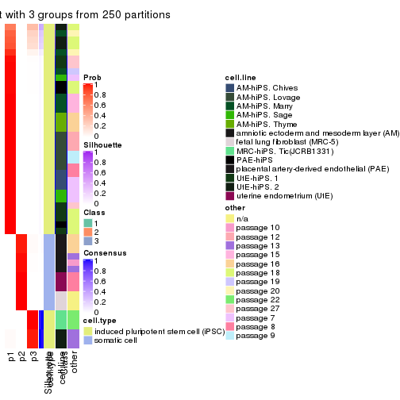
consensus_heatmap(res, k = 4)

consensus_heatmap(res, k = 5)
consensus_heatmap(res, k = 6)
Heatmaps for the membership of samples in all partitions to see how consistent they are:
membership_heatmap(res, k = 2)

membership_heatmap(res, k = 3)
membership_heatmap(res, k = 4)
membership_heatmap(res, k = 5)
membership_heatmap(res, k = 6)
As soon as we have had the classes for columns, we can look for signatures which are significantly different between classes which can be candidate marks for certain classes. Following are the heatmaps for signatures.
Signature heatmaps where rows are scaled:
get_signatures(res, k = 2)

get_signatures(res, k = 3)
get_signatures(res, k = 4)
#> Error in mat[ceiling(1:nr/h_ratio), ceiling(1:nc/w_ratio), drop = FALSE]: subscript out of bounds
get_signatures(res, k = 5)
#> Error in mat[ceiling(1:nr/h_ratio), ceiling(1:nc/w_ratio), drop = FALSE]: subscript out of bounds
get_signatures(res, k = 6)
#> Error in mat[ceiling(1:nr/h_ratio), ceiling(1:nc/w_ratio), drop = FALSE]: subscript out of bounds
Signature heatmaps where rows are not scaled:
get_signatures(res, k = 2, scale_rows = FALSE)

get_signatures(res, k = 3, scale_rows = FALSE)
get_signatures(res, k = 4, scale_rows = FALSE)
get_signatures(res, k = 5, scale_rows = FALSE)
get_signatures(res, k = 6, scale_rows = FALSE)
Compare the overlap of signatures from different k:
compare_signatures(res)
get_signature() returns a data frame invisibly. TO get the list of signatures, the function
call should be assigned to a variable explicitly. In following code, if plot argument is set
to FALSE, no heatmap is plotted while only the differential analysis is performed.
# code only for demonstration
tb = get_signature(res, k = ..., plot = FALSE)
An example of the output of tb is:
#> which_row fdr mean_1 mean_2 scaled_mean_1 scaled_mean_2 km
#> 1 38 0.042760348 8.373488 9.131774 -0.5533452 0.5164555 1
#> 2 40 0.018707592 7.106213 8.469186 -0.6173731 0.5762149 1
#> 3 55 0.019134737 10.221463 11.207825 -0.6159697 0.5749050 1
#> 4 59 0.006059896 5.921854 7.869574 -0.6899429 0.6439467 1
#> 5 60 0.018055526 8.928898 10.211722 -0.6204761 0.5791110 1
#> 6 98 0.009384629 15.714769 14.887706 0.6635654 -0.6193277 2
...
The columns in tb are:
which_row: row indices corresponding to the input matrix.fdr: FDR for the differential test. mean_x: The mean value in group x.scaled_mean_x: The mean value in group x after rows are scaled.km: Row groups if k-means clustering is applied to rows.UMAP plot which shows how samples are separated.
dimension_reduction(res, k = 2, method = "UMAP")

dimension_reduction(res, k = 3, method = "UMAP")
dimension_reduction(res, k = 4, method = "UMAP")
dimension_reduction(res, k = 5, method = "UMAP")
dimension_reduction(res, k = 6, method = "UMAP")
Following heatmap shows how subgroups are split when increasing k:
collect_classes(res)
Test correlation between subgroups and known annotations. If the known annotation is numeric, one-way ANOVA test is applied, and if the known annotation is discrete, chi-squared contingency table test is applied.
test_to_known_factors(res)
#> n cell.type(p) cell.line(p) other(p) k
#> ATC:mclust 51 1.46e-11 9.31e-07 5.89e-03 2
#> ATC:mclust 51 8.42e-12 4.61e-09 4.66e-06 3
#> ATC:mclust 37 4.60e-08 3.16e-11 6.99e-06 4
#> ATC:mclust 49 5.84e-10 4.07e-14 1.80e-08 5
#> ATC:mclust 48 3.55e-09 3.42e-20 3.32e-12 6
If matrix rows can be associated to genes, consider to use GO_Enrichment(res,
...) to perform function enrichment for the signature genes.
The object with results only for a single top-value method and a single partition method can be extracted as:
res = res_list["ATC", "NMF"]
# you can also extract it by
# res = res_list["ATC:NMF"]
A summary of res and all the functions that can be applied to it:
res
#> A 'ConsensusPartition' object with k = 2, 3, 4, 5, 6.
#> On a matrix with 42764 rows and 51 columns.
#> Top rows (1000, 2000, 3000, 4000, 5000) are extracted by 'ATC' method.
#> Subgroups are detected by 'NMF' method.
#> Performed in total 1250 partitions by row resampling.
#> Best k for subgroups seems to be 2.
#>
#> Following methods can be applied to this 'ConsensusPartition' object:
#> [1] "cola_report" "collect_classes" "collect_plots"
#> [4] "collect_stats" "colnames" "compare_signatures"
#> [7] "consensus_heatmap" "dimension_reduction" "functional_enrichment"
#> [10] "get_anno_col" "get_anno" "get_classes"
#> [13] "get_consensus" "get_matrix" "get_membership"
#> [16] "get_param" "get_signatures" "get_stats"
#> [19] "is_best_k" "is_stable_k" "membership_heatmap"
#> [22] "ncol" "nrow" "plot_ecdf"
#> [25] "rownames" "select_partition_number" "show"
#> [28] "suggest_best_k" "test_to_known_factors"
collect_plots() function collects all the plots made from res for all k (number of partitions)
into one single page to provide an easy and fast comparison between different k.
collect_plots(res)
The plots are:
k and the heatmap of
predicted classes for each k.k.k.k.All the plots in panels can be made by individual functions and they are plotted later in this section.
select_partition_number() produces several plots showing different
statistics for choosing “optimized” k. There are following statistics:
k;k, the area increased is defined as \(A_k - A_{k-1}\).The detailed explanations of these statistics can be found in the cola vignette.
Generally speaking, lower PAC score, higher mean silhouette score or higher
concordance corresponds to better partition. Rand index and Jaccard index
measure how similar the current partition is compared to partition with k-1.
If they are too similar, we won't accept k is better than k-1.
select_partition_number(res)
The numeric values for all these statistics can be obtained by get_stats().
get_stats(res)
#> k 1-PAC mean_silhouette concordance area_increased Rand Jaccard
#> 2 2 1.000 1.000 1.000 0.3677 0.633 0.633
#> 3 3 0.638 0.762 0.742 0.4266 0.725 0.566
#> 4 4 0.564 0.712 0.797 0.1426 0.788 0.537
#> 5 5 0.559 0.688 0.728 0.0843 0.962 0.891
#> 6 6 0.634 0.776 0.849 0.0864 0.846 0.587
suggest_best_k() suggests the best \(k\) based on these statistics. The rules are as follows:
NA.suggest_best_k(res)
#> [1] 2
Following shows the table of the partitions (You need to click the show/hide
code output link to see it). The membership matrix (columns with name p*)
is inferred by
clue::cl_consensus()
function with the SE method. Basically the value in the membership matrix
represents the probability to belong to a certain group. The finall class
label for an item is determined with the group with highest probability it
belongs to.
In get_classes() function, the entropy is calculated from the membership
matrix and the silhouette score is calculated from the consensus matrix.
cbind(get_classes(res, k = 2), get_membership(res, k = 2))
#> class entropy silhouette p1 p2
#> GSM520665 2 0 1 0 1
#> GSM520666 2 0 1 0 1
#> GSM520667 2 0 1 0 1
#> GSM520704 2 0 1 0 1
#> GSM520705 2 0 1 0 1
#> GSM520711 2 0 1 0 1
#> GSM520692 2 0 1 0 1
#> GSM520693 2 0 1 0 1
#> GSM520694 2 0 1 0 1
#> GSM520689 2 0 1 0 1
#> GSM520690 2 0 1 0 1
#> GSM520691 2 0 1 0 1
#> GSM520668 1 0 1 1 0
#> GSM520669 1 0 1 1 0
#> GSM520670 1 0 1 1 0
#> GSM520713 1 0 1 1 0
#> GSM520714 1 0 1 1 0
#> GSM520715 1 0 1 1 0
#> GSM520695 1 0 1 1 0
#> GSM520696 1 0 1 1 0
#> GSM520697 1 0 1 1 0
#> GSM520709 1 0 1 1 0
#> GSM520710 1 0 1 1 0
#> GSM520712 1 0 1 1 0
#> GSM520698 1 0 1 1 0
#> GSM520699 1 0 1 1 0
#> GSM520700 1 0 1 1 0
#> GSM520701 1 0 1 1 0
#> GSM520702 1 0 1 1 0
#> GSM520703 1 0 1 1 0
#> GSM520671 1 0 1 1 0
#> GSM520672 1 0 1 1 0
#> GSM520673 1 0 1 1 0
#> GSM520681 1 0 1 1 0
#> GSM520682 1 0 1 1 0
#> GSM520680 1 0 1 1 0
#> GSM520677 1 0 1 1 0
#> GSM520678 1 0 1 1 0
#> GSM520679 1 0 1 1 0
#> GSM520674 1 0 1 1 0
#> GSM520675 1 0 1 1 0
#> GSM520676 1 0 1 1 0
#> GSM520686 1 0 1 1 0
#> GSM520687 1 0 1 1 0
#> GSM520688 1 0 1 1 0
#> GSM520683 1 0 1 1 0
#> GSM520684 1 0 1 1 0
#> GSM520685 1 0 1 1 0
#> GSM520708 1 0 1 1 0
#> GSM520706 1 0 1 1 0
#> GSM520707 1 0 1 1 0
cbind(get_classes(res, k = 3), get_membership(res, k = 3))
#> class entropy silhouette p1 p2 p3
#> GSM520665 2 0.0237 0.9987 0.000 0.996 0.004
#> GSM520666 2 0.0237 0.9987 0.000 0.996 0.004
#> GSM520667 2 0.0237 0.9987 0.000 0.996 0.004
#> GSM520704 2 0.0000 0.9987 0.000 1.000 0.000
#> GSM520705 2 0.0000 0.9987 0.000 1.000 0.000
#> GSM520711 2 0.0000 0.9987 0.000 1.000 0.000
#> GSM520692 2 0.0237 0.9987 0.000 0.996 0.004
#> GSM520693 2 0.0237 0.9987 0.000 0.996 0.004
#> GSM520694 2 0.0237 0.9987 0.000 0.996 0.004
#> GSM520689 2 0.0000 0.9987 0.000 1.000 0.000
#> GSM520690 2 0.0000 0.9987 0.000 1.000 0.000
#> GSM520691 2 0.0000 0.9987 0.000 1.000 0.000
#> GSM520668 1 0.2356 0.7284 0.928 0.000 0.072
#> GSM520669 1 0.2165 0.7339 0.936 0.000 0.064
#> GSM520670 1 0.2261 0.7314 0.932 0.000 0.068
#> GSM520713 3 0.6295 0.9919 0.472 0.000 0.528
#> GSM520714 3 0.6295 0.9919 0.472 0.000 0.528
#> GSM520715 3 0.6295 0.9919 0.472 0.000 0.528
#> GSM520695 3 0.6295 0.9919 0.472 0.000 0.528
#> GSM520696 3 0.6295 0.9919 0.472 0.000 0.528
#> GSM520697 3 0.6295 0.9919 0.472 0.000 0.528
#> GSM520709 3 0.6295 0.9919 0.472 0.000 0.528
#> GSM520710 3 0.6295 0.9919 0.472 0.000 0.528
#> GSM520712 3 0.6295 0.9919 0.472 0.000 0.528
#> GSM520698 3 0.6267 0.9514 0.452 0.000 0.548
#> GSM520699 3 0.6267 0.9514 0.452 0.000 0.548
#> GSM520700 1 0.2448 0.7279 0.924 0.000 0.076
#> GSM520701 3 0.6295 0.9919 0.472 0.000 0.528
#> GSM520702 3 0.6295 0.9919 0.472 0.000 0.528
#> GSM520703 3 0.6295 0.9919 0.472 0.000 0.528
#> GSM520671 1 0.0000 0.7768 1.000 0.000 0.000
#> GSM520672 1 0.0000 0.7768 1.000 0.000 0.000
#> GSM520673 1 0.0000 0.7768 1.000 0.000 0.000
#> GSM520681 1 0.5882 -0.3244 0.652 0.000 0.348
#> GSM520682 1 0.4062 0.5694 0.836 0.000 0.164
#> GSM520680 1 0.0000 0.7768 1.000 0.000 0.000
#> GSM520677 1 0.6260 -0.7669 0.552 0.000 0.448
#> GSM520678 1 0.4555 0.4718 0.800 0.000 0.200
#> GSM520679 1 0.4178 0.5499 0.828 0.000 0.172
#> GSM520674 1 0.3340 0.6510 0.880 0.000 0.120
#> GSM520675 1 0.0000 0.7768 1.000 0.000 0.000
#> GSM520676 1 0.0892 0.7682 0.980 0.000 0.020
#> GSM520686 1 0.0000 0.7768 1.000 0.000 0.000
#> GSM520687 1 0.0000 0.7768 1.000 0.000 0.000
#> GSM520688 1 0.0000 0.7768 1.000 0.000 0.000
#> GSM520683 1 0.0892 0.7682 0.980 0.000 0.020
#> GSM520684 1 0.0000 0.7768 1.000 0.000 0.000
#> GSM520685 1 0.0000 0.7768 1.000 0.000 0.000
#> GSM520708 1 0.6267 -0.7802 0.548 0.000 0.452
#> GSM520706 1 0.5497 0.0212 0.708 0.000 0.292
#> GSM520707 1 0.4654 0.4440 0.792 0.000 0.208
cbind(get_classes(res, k = 4), get_membership(res, k = 4))
#> class entropy silhouette p1 p2 p3 p4
#> GSM520665 2 0.0000 0.986 0.000 1.000 NA 0.000
#> GSM520666 2 0.0000 0.986 0.000 1.000 NA 0.000
#> GSM520667 2 0.0000 0.986 0.000 1.000 NA 0.000
#> GSM520704 2 0.1305 0.985 0.004 0.960 NA 0.000
#> GSM520705 2 0.1305 0.985 0.004 0.960 NA 0.000
#> GSM520711 2 0.1305 0.985 0.004 0.960 NA 0.000
#> GSM520692 2 0.0000 0.986 0.000 1.000 NA 0.000
#> GSM520693 2 0.0000 0.986 0.000 1.000 NA 0.000
#> GSM520694 2 0.0000 0.986 0.000 1.000 NA 0.000
#> GSM520689 2 0.1118 0.986 0.000 0.964 NA 0.000
#> GSM520690 2 0.1118 0.986 0.000 0.964 NA 0.000
#> GSM520691 2 0.1118 0.986 0.000 0.964 NA 0.000
#> GSM520668 1 0.6404 0.512 0.644 0.000 NA 0.220
#> GSM520669 1 0.6364 0.520 0.652 0.000 NA 0.204
#> GSM520670 1 0.6359 0.514 0.648 0.000 NA 0.220
#> GSM520713 4 0.0188 0.765 0.004 0.000 NA 0.996
#> GSM520714 4 0.0188 0.765 0.004 0.000 NA 0.996
#> GSM520715 4 0.0188 0.765 0.004 0.000 NA 0.996
#> GSM520695 4 0.0921 0.771 0.028 0.000 NA 0.972
#> GSM520696 4 0.0921 0.771 0.028 0.000 NA 0.972
#> GSM520697 4 0.1022 0.771 0.032 0.000 NA 0.968
#> GSM520709 4 0.0921 0.771 0.028 0.000 NA 0.972
#> GSM520710 4 0.1022 0.771 0.032 0.000 NA 0.968
#> GSM520712 4 0.1022 0.771 0.032 0.000 NA 0.968
#> GSM520698 4 0.4753 0.541 0.128 0.000 NA 0.788
#> GSM520699 4 0.4869 0.528 0.132 0.000 NA 0.780
#> GSM520700 1 0.6357 0.536 0.644 0.000 NA 0.232
#> GSM520701 4 0.0000 0.763 0.000 0.000 NA 1.000
#> GSM520702 4 0.0188 0.760 0.004 0.000 NA 0.996
#> GSM520703 4 0.0000 0.763 0.000 0.000 NA 1.000
#> GSM520671 1 0.4643 0.730 0.656 0.000 NA 0.344
#> GSM520672 1 0.4134 0.739 0.740 0.000 NA 0.260
#> GSM520673 1 0.4624 0.733 0.660 0.000 NA 0.340
#> GSM520681 4 0.4008 0.559 0.244 0.000 NA 0.756
#> GSM520682 4 0.4843 0.150 0.396 0.000 NA 0.604
#> GSM520680 1 0.4331 0.755 0.712 0.000 NA 0.288
#> GSM520677 4 0.2647 0.718 0.120 0.000 NA 0.880
#> GSM520678 4 0.4605 0.377 0.336 0.000 NA 0.664
#> GSM520679 4 0.4643 0.354 0.344 0.000 NA 0.656
#> GSM520674 4 0.4855 0.139 0.400 0.000 NA 0.600
#> GSM520675 1 0.4643 0.729 0.656 0.000 NA 0.344
#> GSM520676 1 0.4972 0.475 0.544 0.000 NA 0.456
#> GSM520686 1 0.4331 0.755 0.712 0.000 NA 0.288
#> GSM520687 1 0.4454 0.754 0.692 0.000 NA 0.308
#> GSM520688 1 0.4382 0.756 0.704 0.000 NA 0.296
#> GSM520683 1 0.4955 0.513 0.556 0.000 NA 0.444
#> GSM520684 1 0.4477 0.752 0.688 0.000 NA 0.312
#> GSM520685 1 0.4746 0.692 0.632 0.000 NA 0.368
#> GSM520708 4 0.2704 0.714 0.124 0.000 NA 0.876
#> GSM520706 4 0.4431 0.456 0.304 0.000 NA 0.696
#> GSM520707 4 0.4730 0.287 0.364 0.000 NA 0.636
cbind(get_classes(res, k = 5), get_membership(res, k = 5))
#> class entropy silhouette p1 p2 p3 p4 p5
#> GSM520665 2 0.1965 0.9497 0.000 0.904 0.000 0.000 NA
#> GSM520666 2 0.1965 0.9497 0.000 0.904 0.000 0.000 NA
#> GSM520667 2 0.1965 0.9497 0.000 0.904 0.000 0.000 NA
#> GSM520704 2 0.0609 0.9430 0.000 0.980 0.000 0.000 NA
#> GSM520705 2 0.0955 0.9382 0.000 0.968 0.004 0.000 NA
#> GSM520711 2 0.0865 0.9400 0.000 0.972 0.004 0.000 NA
#> GSM520692 2 0.1965 0.9497 0.000 0.904 0.000 0.000 NA
#> GSM520693 2 0.1965 0.9497 0.000 0.904 0.000 0.000 NA
#> GSM520694 2 0.1965 0.9497 0.000 0.904 0.000 0.000 NA
#> GSM520689 2 0.0000 0.9477 0.000 1.000 0.000 0.000 NA
#> GSM520690 2 0.0290 0.9465 0.000 0.992 0.000 0.000 NA
#> GSM520691 2 0.0290 0.9465 0.000 0.992 0.000 0.000 NA
#> GSM520668 3 0.5394 0.9339 0.280 0.000 0.628 0.092 NA
#> GSM520669 3 0.5409 0.9462 0.304 0.000 0.612 0.084 NA
#> GSM520670 3 0.5440 0.9470 0.300 0.000 0.612 0.088 NA
#> GSM520713 4 0.0898 0.7146 0.008 0.000 0.020 0.972 NA
#> GSM520714 4 0.0693 0.7162 0.008 0.000 0.012 0.980 NA
#> GSM520715 4 0.0798 0.7155 0.008 0.000 0.016 0.976 NA
#> GSM520695 4 0.0404 0.7179 0.012 0.000 0.000 0.988 NA
#> GSM520696 4 0.0290 0.7178 0.008 0.000 0.000 0.992 NA
#> GSM520697 4 0.0290 0.7178 0.008 0.000 0.000 0.992 NA
#> GSM520709 4 0.0771 0.7166 0.020 0.000 0.004 0.976 NA
#> GSM520710 4 0.0609 0.7168 0.020 0.000 0.000 0.980 NA
#> GSM520712 4 0.0609 0.7168 0.020 0.000 0.000 0.980 NA
#> GSM520698 4 0.5274 0.1262 0.064 0.000 0.336 0.600 NA
#> GSM520699 4 0.5188 0.1098 0.056 0.000 0.344 0.600 NA
#> GSM520700 3 0.5900 0.8575 0.376 0.000 0.516 0.108 NA
#> GSM520701 4 0.1018 0.7058 0.016 0.000 0.016 0.968 NA
#> GSM520702 4 0.1018 0.7058 0.016 0.000 0.016 0.968 NA
#> GSM520703 4 0.0912 0.7073 0.012 0.000 0.016 0.972 NA
#> GSM520671 1 0.3730 0.8833 0.712 0.000 0.000 0.288 NA
#> GSM520672 1 0.4199 0.7744 0.764 0.000 0.056 0.180 NA
#> GSM520673 1 0.3684 0.8862 0.720 0.000 0.000 0.280 NA
#> GSM520681 4 0.3756 0.4813 0.248 0.000 0.008 0.744 NA
#> GSM520682 4 0.4504 -0.1040 0.428 0.000 0.008 0.564 NA
#> GSM520680 1 0.3395 0.8833 0.764 0.000 0.000 0.236 NA
#> GSM520677 4 0.2280 0.6465 0.120 0.000 0.000 0.880 NA
#> GSM520678 4 0.4171 0.0842 0.396 0.000 0.000 0.604 NA
#> GSM520679 4 0.4341 0.0433 0.404 0.000 0.004 0.592 NA
#> GSM520674 4 0.4546 -0.2229 0.460 0.000 0.008 0.532 NA
#> GSM520675 1 0.3752 0.8754 0.708 0.000 0.000 0.292 NA
#> GSM520676 1 0.4499 0.6400 0.584 0.000 0.004 0.408 NA
#> GSM520686 1 0.3519 0.8576 0.776 0.000 0.008 0.216 NA
#> GSM520687 1 0.3550 0.8811 0.760 0.000 0.004 0.236 NA
#> GSM520688 1 0.3521 0.8832 0.764 0.000 0.004 0.232 NA
#> GSM520683 1 0.4375 0.7520 0.628 0.000 0.004 0.364 NA
#> GSM520684 1 0.3715 0.8898 0.736 0.000 0.004 0.260 NA
#> GSM520685 1 0.4047 0.8525 0.676 0.000 0.004 0.320 NA
#> GSM520708 4 0.3336 0.5258 0.228 0.000 0.000 0.772 NA
#> GSM520706 4 0.4397 -0.0419 0.432 0.000 0.004 0.564 NA
#> GSM520707 4 0.4443 -0.2219 0.472 0.000 0.004 0.524 NA
cbind(get_classes(res, k = 6), get_membership(res, k = 6))
#> class entropy silhouette p1 p2 p3 p4 p5 p6
#> GSM520665 2 0.2416 0.91087 0.000 0.844 0.000 0.000 NA 0.000
#> GSM520666 2 0.2416 0.91087 0.000 0.844 0.000 0.000 NA 0.000
#> GSM520667 2 0.2416 0.91087 0.000 0.844 0.000 0.000 NA 0.000
#> GSM520704 2 0.1152 0.89073 0.000 0.952 0.000 0.000 NA 0.044
#> GSM520705 2 0.1493 0.88314 0.000 0.936 0.004 0.000 NA 0.056
#> GSM520711 2 0.1493 0.88314 0.000 0.936 0.004 0.000 NA 0.056
#> GSM520692 2 0.2378 0.91193 0.000 0.848 0.000 0.000 NA 0.000
#> GSM520693 2 0.2378 0.91193 0.000 0.848 0.000 0.000 NA 0.000
#> GSM520694 2 0.2378 0.91193 0.000 0.848 0.000 0.000 NA 0.000
#> GSM520689 2 0.0146 0.90626 0.000 0.996 0.000 0.000 NA 0.000
#> GSM520690 2 0.0146 0.90626 0.000 0.996 0.000 0.000 NA 0.000
#> GSM520691 2 0.0146 0.90626 0.000 0.996 0.000 0.000 NA 0.000
#> GSM520668 3 0.1585 0.93277 0.036 0.000 0.940 0.012 NA 0.012
#> GSM520669 3 0.1726 0.93664 0.044 0.000 0.932 0.012 NA 0.012
#> GSM520670 3 0.1367 0.93682 0.044 0.000 0.944 0.012 NA 0.000
#> GSM520713 4 0.2468 0.85798 0.096 0.000 0.016 0.880 NA 0.008
#> GSM520714 4 0.2466 0.85605 0.112 0.000 0.008 0.872 NA 0.008
#> GSM520715 4 0.2466 0.85605 0.112 0.000 0.008 0.872 NA 0.008
#> GSM520695 4 0.2020 0.86073 0.096 0.000 0.000 0.896 NA 0.008
#> GSM520696 4 0.1970 0.86000 0.092 0.000 0.000 0.900 NA 0.008
#> GSM520697 4 0.1908 0.86117 0.096 0.000 0.000 0.900 NA 0.004
#> GSM520709 4 0.2218 0.85969 0.104 0.000 0.000 0.884 NA 0.012
#> GSM520710 4 0.2266 0.85839 0.108 0.000 0.000 0.880 NA 0.012
#> GSM520712 4 0.2165 0.85946 0.108 0.000 0.000 0.884 NA 0.008
#> GSM520698 4 0.5667 0.28930 0.052 0.000 0.352 0.540 NA 0.056
#> GSM520699 4 0.5603 0.24368 0.044 0.000 0.372 0.528 NA 0.056
#> GSM520700 3 0.4414 0.82204 0.152 0.000 0.752 0.056 NA 0.040
#> GSM520701 4 0.2889 0.83926 0.096 0.000 0.004 0.856 NA 0.044
#> GSM520702 4 0.2981 0.83698 0.100 0.000 0.008 0.852 NA 0.040
#> GSM520703 4 0.2752 0.84331 0.096 0.000 0.004 0.864 NA 0.036
#> GSM520671 1 0.0458 0.81189 0.984 0.000 0.000 0.016 NA 0.000
#> GSM520672 1 0.1644 0.75499 0.932 0.000 0.052 0.004 NA 0.012
#> GSM520673 1 0.0717 0.81190 0.976 0.000 0.000 0.016 NA 0.008
#> GSM520681 1 0.4887 0.00878 0.476 0.000 0.004 0.472 NA 0.048
#> GSM520682 1 0.4246 0.62574 0.692 0.000 0.012 0.268 NA 0.028
#> GSM520680 1 0.0603 0.79475 0.980 0.000 0.016 0.000 NA 0.004
#> GSM520677 4 0.3711 0.63433 0.260 0.000 0.000 0.720 NA 0.020
#> GSM520678 1 0.4196 0.55661 0.640 0.000 0.000 0.332 NA 0.028
#> GSM520679 1 0.4150 0.58383 0.652 0.000 0.000 0.320 NA 0.028
#> GSM520674 1 0.4072 0.66674 0.704 0.000 0.004 0.260 NA 0.032
#> GSM520675 1 0.0862 0.81240 0.972 0.000 0.004 0.016 NA 0.008
#> GSM520676 1 0.3014 0.77388 0.832 0.000 0.000 0.132 NA 0.036
#> GSM520686 1 0.0508 0.79855 0.984 0.000 0.012 0.000 NA 0.004
#> GSM520687 1 0.0405 0.80812 0.988 0.000 0.004 0.008 NA 0.000
#> GSM520688 1 0.0146 0.80295 0.996 0.000 0.004 0.000 NA 0.000
#> GSM520683 1 0.2046 0.80614 0.908 0.000 0.000 0.060 NA 0.032
#> GSM520684 1 0.0767 0.80671 0.976 0.000 0.012 0.008 NA 0.004
#> GSM520685 1 0.1523 0.81182 0.940 0.000 0.008 0.044 NA 0.008
#> GSM520708 4 0.4672 0.40124 0.348 0.000 0.000 0.596 NA 0.056
#> GSM520706 1 0.4047 0.60909 0.676 0.000 0.000 0.296 NA 0.028
#> GSM520707 1 0.3841 0.66535 0.716 0.000 0.000 0.256 NA 0.028
Heatmaps for the consensus matrix. It visualizes the probability of two samples to be in a same group.
consensus_heatmap(res, k = 2)
consensus_heatmap(res, k = 3)

consensus_heatmap(res, k = 4)
consensus_heatmap(res, k = 5)
consensus_heatmap(res, k = 6)
Heatmaps for the membership of samples in all partitions to see how consistent they are:
membership_heatmap(res, k = 2)

membership_heatmap(res, k = 3)
membership_heatmap(res, k = 4)
membership_heatmap(res, k = 5)
membership_heatmap(res, k = 6)
As soon as we have had the classes for columns, we can look for signatures which are significantly different between classes which can be candidate marks for certain classes. Following are the heatmaps for signatures.
Signature heatmaps where rows are scaled:
get_signatures(res, k = 2)

get_signatures(res, k = 3)
get_signatures(res, k = 4)
get_signatures(res, k = 5)
#> Error in mat[ceiling(1:nr/h_ratio), ceiling(1:nc/w_ratio), drop = FALSE]: subscript out of bounds
get_signatures(res, k = 6)
Signature heatmaps where rows are not scaled:
get_signatures(res, k = 2, scale_rows = FALSE)

get_signatures(res, k = 3, scale_rows = FALSE)
get_signatures(res, k = 4, scale_rows = FALSE)
get_signatures(res, k = 5, scale_rows = FALSE)
get_signatures(res, k = 6, scale_rows = FALSE)
Compare the overlap of signatures from different k:
compare_signatures(res)
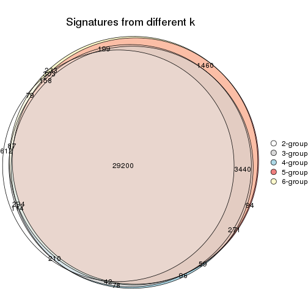
get_signature() returns a data frame invisibly. TO get the list of signatures, the function
call should be assigned to a variable explicitly. In following code, if plot argument is set
to FALSE, no heatmap is plotted while only the differential analysis is performed.
# code only for demonstration
tb = get_signature(res, k = ..., plot = FALSE)
An example of the output of tb is:
#> which_row fdr mean_1 mean_2 scaled_mean_1 scaled_mean_2 km
#> 1 38 0.042760348 8.373488 9.131774 -0.5533452 0.5164555 1
#> 2 40 0.018707592 7.106213 8.469186 -0.6173731 0.5762149 1
#> 3 55 0.019134737 10.221463 11.207825 -0.6159697 0.5749050 1
#> 4 59 0.006059896 5.921854 7.869574 -0.6899429 0.6439467 1
#> 5 60 0.018055526 8.928898 10.211722 -0.6204761 0.5791110 1
#> 6 98 0.009384629 15.714769 14.887706 0.6635654 -0.6193277 2
...
The columns in tb are:
which_row: row indices corresponding to the input matrix.fdr: FDR for the differential test. mean_x: The mean value in group x.scaled_mean_x: The mean value in group x after rows are scaled.km: Row groups if k-means clustering is applied to rows.UMAP plot which shows how samples are separated.
dimension_reduction(res, k = 2, method = "UMAP")

dimension_reduction(res, k = 3, method = "UMAP")
dimension_reduction(res, k = 4, method = "UMAP")
dimension_reduction(res, k = 5, method = "UMAP")
dimension_reduction(res, k = 6, method = "UMAP")
Following heatmap shows how subgroups are split when increasing k:
collect_classes(res)
Test correlation between subgroups and known annotations. If the known annotation is numeric, one-way ANOVA test is applied, and if the known annotation is discrete, chi-squared contingency table test is applied.
test_to_known_factors(res)
#> n cell.type(p) cell.line(p) other(p) k
#> ATC:NMF 51 1.46e-11 9.31e-07 5.89e-03 2
#> ATC:NMF 45 1.69e-10 8.37e-09 2.79e-06 3
#> ATC:NMF 44 2.79e-10 5.86e-07 1.08e-04 4
#> ATC:NMF 42 4.01e-09 6.41e-09 3.52e-08 5
#> ATC:NMF 47 3.48e-10 1.21e-11 1.38e-09 6
If matrix rows can be associated to genes, consider to use GO_Enrichment(res,
...) to perform function enrichment for the signature genes.
sessionInfo()
#> R version 3.6.0 (2019-04-26)
#> Platform: x86_64-pc-linux-gnu (64-bit)
#> Running under: CentOS Linux 7 (Core)
#>
#> Matrix products: default
#> BLAS: /usr/lib64/libblas.so.3.4.2
#> LAPACK: /usr/lib64/liblapack.so.3.4.2
#>
#> locale:
#> [1] LC_CTYPE=en_GB.UTF-8 LC_NUMERIC=C LC_TIME=en_GB.UTF-8
#> [4] LC_COLLATE=en_GB.UTF-8 LC_MONETARY=en_GB.UTF-8 LC_MESSAGES=en_GB.UTF-8
#> [7] LC_PAPER=en_GB.UTF-8 LC_NAME=C LC_ADDRESS=C
#> [10] LC_TELEPHONE=C LC_MEASUREMENT=en_GB.UTF-8 LC_IDENTIFICATION=C
#>
#> attached base packages:
#> [1] grid parallel stats graphics grDevices utils datasets methods base
#>
#> other attached packages:
#> [1] genefilter_1.66.0 ComplexHeatmap_2.1.1 markdown_1.1 knitr_1.26
#> [5] preprocessCore_1.46.0 cola_1.3.2 GEOquery_2.52.0 Biobase_2.44.0
#> [9] BiocGenerics_0.30.0 GetoptLong_0.1.7
#>
#> loaded via a namespace (and not attached):
#> [1] bitops_1.0-6 matrixStats_0.55.0 bit64_0.9-7 doParallel_1.0.15
#> [5] RColorBrewer_1.1-2 httr_1.4.1 tools_3.6.0 backports_1.1.5
#> [9] R6_2.4.1 DBI_1.0.0 lazyeval_0.2.2 colorspace_1.4-1
#> [13] withr_2.1.2 tidyselect_0.2.5 gridExtra_2.3 bit_1.1-14
#> [17] compiler_3.6.0 xml2_1.2.2 microbenchmark_1.4-7 pkgmaker_0.28
#> [21] slam_0.1-46 scales_1.1.0 readr_1.3.1 NMF_0.23.6
#> [25] stringr_1.4.0 digest_0.6.23 pkgconfig_2.0.3 bibtex_0.4.2
#> [29] highr_0.8 limma_3.40.6 rlang_0.4.2 GlobalOptions_0.1.1
#> [33] RSQLite_2.1.2 impute_1.58.0 shape_1.4.4 mclust_5.4.5
#> [37] dendextend_1.12.0 dplyr_0.8.3 RCurl_1.95-4.12 magrittr_1.5
#> [41] Matrix_1.2-17 Rcpp_1.0.3 munsell_0.5.0 S4Vectors_0.22.1
#> [45] viridis_0.5.1 lifecycle_0.1.0 stringi_1.4.3 plyr_1.8.4
#> [49] blob_1.2.0 crayon_1.3.4 lattice_0.20-38 splines_3.6.0
#> [53] annotate_1.62.0 circlize_0.4.9 hms_0.5.2 zeallot_0.1.0
#> [57] pillar_1.4.2 rjson_0.2.20 rngtools_1.4 reshape2_1.4.3
#> [61] codetools_0.2-16 stats4_3.6.0 XML_3.98-1.20 glue_1.3.1
#> [65] evaluate_0.14 png_0.1-7 vctrs_0.2.0 foreach_1.4.7
#> [69] polyclip_1.10-0 gtable_0.3.0 purrr_0.3.3 tidyr_1.0.0
#> [73] clue_0.3-57 assertthat_0.2.1 ggplot2_3.2.1 xfun_0.11
#> [77] gridBase_0.4-7 eulerr_6.0.0 xtable_1.8-4 skmeans_0.2-11
#> [81] survival_2.44-1.1 viridisLite_0.3.0 tibble_2.1.3 iterators_1.0.12
#> [85] AnnotationDbi_1.46.1 registry_0.5-1 memoise_1.1.0 IRanges_2.18.3
#> [89] cluster_2.1.0 brew_1.0-6